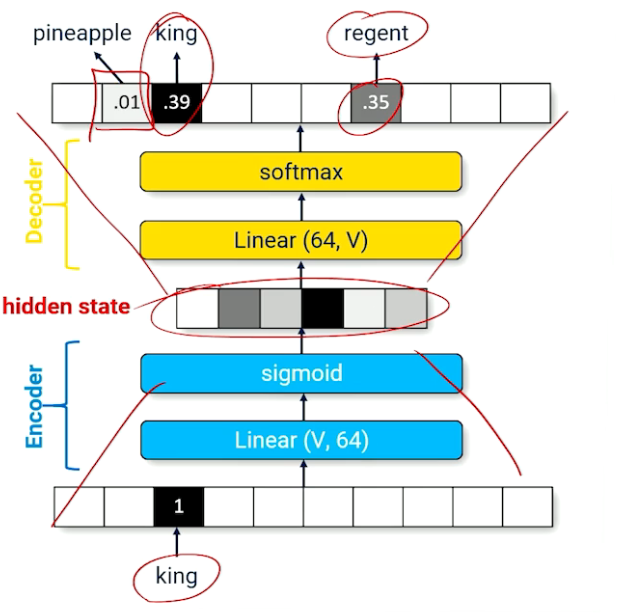
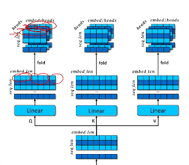
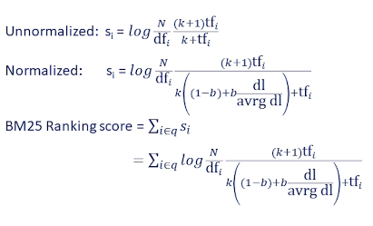
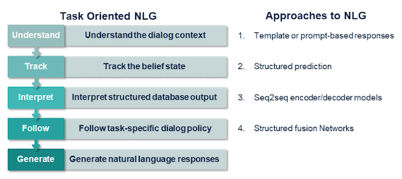
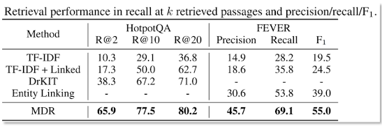
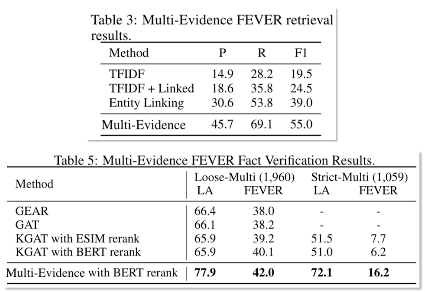
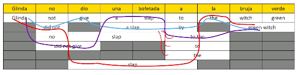

CS7650 Natural Language Processing¶
Class Details¶
Instructor: Dr. Mark Riedl
Textbook
- https://github.com/jacobeisenstein/gt-nlp-class/blob/master/notes/eisenstein-nlp-notes.pdf
- By Jacob Eisenstein
Grading
- A 90%+
- B 80-89.99%
- C 70-79.99%
- D 60-69.99%
- F < 60%
Modules
- M0 Welcome
- M1: Introduction to NLP
- M2: Foundations
- M3: Classification
- M4: Language Modeling
- M5: Semantics
- M6: Modern Neural Architectures
- M7: Information Retrieval (Meta AI)
- M8: Task-Oriented Dialogue (Meta AI)
- M9: Applications Summarization (Meta AI)
- M10: Machine Reading
- M11: Open-Domain Question Answering (Meta AI)
- M13: Privacy-Preserving NLP (Meta AI)
- M14: Responsible AI
Introduction¶
What is Natural Language Processing?
- the set of methods for making human language accessible to computers
- the analysis or understanding (to some degree) of what a text means
- Generation of fluent, meaningful, context-appropriate text
- the acquisition of the above from knowledge, and increasingly, data
It is also important to note that Natural implies an evolution over time by humans. It can't be something constructed or designed. Even sign language qualifies even though it isn't sounded. Languages should have some sort of rules, like syntax. And must be between humans. Although who knows maybe dolphin clicks could be processed one day.
Most languages are Lossy but efficient. Ie they can contain errors but the message is still conveyed.
NLP is still very much an open research problem
- We don't really have a definition as to what it means to understand language
- We have powerful aglgorithms that can imitate human language production and understanding
Why do we want Computers to understand Languages?
- Detect patterns in social media
- Knowledge discovery
- Dialogue
- Document retrieval
- Writing assistance
- Prediction
- Translation
M02 Background Review¶
Random Variables: a quantity having a numerical value for each member of a group, especially one whose values occur according to a frequency distribution. RVs come with probability distributions.
- we care a lot about these as these are what our AI systems focus on. We often won't see them or even know them but we will certain see certain values/probabilities impacting the results
Rules of Probability¶
- Addition
- $P(A or B) = P(A) + P(B) - P(A \cap B)$
- $P(A \cup B) = P(A) + P(B) - P(A \cup B)$
- Complementary
- $P(A) + P(A') = 1$
- Conditional Rule
- $P(B|A) = P(A \cup B) P(A)$
- Multiplication Rule
- $P(A \cup B) = P(A) P(B|A)$
Joint Distributions¶
We're going to assume you've done this before and present a quick example
Suppose we're given the following distribution table
Shadow=T Shadow=F
Noise=T Noise=F Noise=T Noise=F
Ninja=T 0.108 0.012 0.072 0.008
Ninja=F 0.016 0.064 0.144 0.576
Notice
1. If you sum all the squares you should get 1 (if not there's a typo)Marginalisation
If we are only interested in the probability of what state one of the variables may assume regardless
of all the other variables, then we can sum up all the values from the table corresponding to the
variable acquiring that certain value. For example,
- P(Ninjas=True) = 0.2 = (sum of the first row)
Similarly
- P(Ninjas=T or Shadow=T) = P(Ninjas=T) + P(Shadow=T) - P(Ninjas=T and Shadow=T) = 0.28
Conditional Probabilities¶
Conditional probability is a measure of the probability of an event occurring, given that another event (by assumption, presumption, assertion or evidence) has already occurred.
If the event of interest is A and the event B is known or assumed to have occurred, "the conditional probability of A given B", or "the probability of A under the condition B", is usually written as P(A|B).
This can also be understood as the fraction of probability B that intersects with A, or the ratio of the probabilities of both events happening to the "given" one happening (how many times A occurs rather than not assuming B has occurred): $$\large P(B|A) = \frac{P(A \cap B)}{P(A)} = \frac{ P(A|B)P(B) }{P(A)} $$
ALPHA
In the notes below we will be using $\alpha$ to denote the normalizing constant $\frac{1}{P(A)}$ from the equation above. For reason that will become clear later on we often don't know or have the full distribution of A. Using $\alpha$ allows us to approximate it for our needs.
Hidden Variables
Conditional probabilities may not always reference all variables in the full joint distribution. Imagine that in our table above we dropped the Noise variable and summed their two values. Dropping the variables simply hides it from our view.
Working with hidden variables is much like working or finding the marginal distribution. They're generally held constant to some fixed value so we may focus on the variables we can see.
Independence and Product Rule¶
A and B are independent if any of the following are true
- P(A|B) = P(A)
- P(B|A) = P(B)
- P(A,B) = P(A)P(B)
- P(A,B) = P(A | B)P(B) = P(B | A)P(A) # Product rule
Bayes with Evidence Variables¶
Bayes rule given above is a super important result that we will use
recall $\large P(B|A) = \frac{P(A \cap B)}{P(A)} = \frac{ P(A|B)P(B) }{P(A)} $
What if we have more than 1 variable?
- $P(Y|E_1,E_2) = ?$
- $= \alpha P(E_2|Y,E_1)P(Y,E_1)$ bayes allows us to swap the sides, you could pick E_1 as well
- $= \alpha P(E_2|Y,E_1)P(E_1|Y)P(Y)$ We've applied the product rule to the second term
In the real world we will often run into situations where we cannot determine/observe the cause of some effect
- The issue will be how to compute P(Cause|Effect)
- where Cause = an unobservable event
- and Effect = is observable
Example
- what is P(Covid | Anosmia)?
- Anosmia is one of many systems of Covid, it is the partial or full loss of smell
- of course there are many reason that you could lose your sense of smell. It doesn't have to be Covid
- We want to find
- P(C | A ) = $\alpha$ P(A | C) P(C)
Of course there can be any number of evidence/effects
- So long as the effects are independent (of each other)
- then
- P(Cause|Effect_1,Effect_2, ... Effect_n)
- = $\alpha$P(Cause) P(Effect_1|Cause)P(Effect_2|Cause) ... P(Effect_n|Cause)
Naive Bayes Assumption
- Effect variables are always independent
- or there dependence is so small as to be negligable
Bayes application to NLP¶
Let $w_1,w_2,...,w_n$ represent words
We may want to determine P(Sentiment = positive | (presence/absence) $w_1,w_2,...,w_n$ )
Applying Bayes yields
- P(Sentiment = positive) P($w_1$|Sentiment = positive) ... P($w_n$|Sentiment = positive)
- = P(Sentiment = positive) $\prod_{i=1}$P($w_i$|Sentiment = positive)
Bayesian Network
Is a way to visulize the relationship between random variables
- Arrows (Arcs) implies causal relationship
- This is really just an illustration of the above product
- P($X_1,X_2,...X_n$) = $\prod_{i=1}$P($X_i$|parents($X_i$))
- this allows us to use conditional probabilities to find the full joint distribution
Now consider how we would use this. Suppose we have a document and we want to determine the sentiment. We cannot directly observe the sentiment, but we can clearly parse the words and sentences. Furthermore we can learn to associate words with a sentiment. So for example "awesome" is generally associated with a positive sentiment, and "junk" is associated with a negative sentiment.
Neural Networks - Review¶
Supervised Learning
Is basically Function Approximation. We learn a function from a training set of data consisting of pairs of inputs and expected outputs. This function is an approximation as we don't know the actual function that produced the result. In many cases there is no actual function.

Of course we often do this using much more complicated processes like images and words. How this is done is by iteratively adjusting or modifying our function until the error decreases enough that we are satisfied with our approximation. You may think of this as the point that we trust our function enough as to trust it's responses.
Neural Networks
A connectionist approach to learning to approximate complex functions loosely based on the neurons in the human brain.
More formally it's a stack of fully-connected weighted, directed bi-graphs where each node/neuron is a simple gated function
Another way to think of this is like a circuit board. The weights of the graph are reflected by the energy moving along a path. the node/neuron is a gate function that actions the incoming energy, ie activates. reLU the rectified linear unit does activate until the incoming value is greater than or equal to 0. Until then it remains a closed gate.
Gradient Descent
The gradient of each weight is a function of the incoming activation values and the weight applied to each incoming activation value, applied recursively.
Summary
- Neural Networks are function approximators
- Supervised Learning: given examples and expected outputs/responses
- Need to measure the error/loss of a learning system
- The weights of neural network combined with loss create a landscape
- Gradient descent: Move each weight such that overall loss is going downhill
- Each weight adjustment can be computed seperately allowing for parallelization using GPU(s)
M03.1 Classification¶
Intro-Classification¶
Classification is one of the most important types of problems in ML and NLP
Topics
- Intro to classification
- Features
- Bayesian Classification
- Binary logistic regression
- Multinomial logistic regression
Many problem in NLP can be formulated as classification problems
Examples
- The topic of a document
- Sentiment classification
- Spam classification
- Text complexity (Formal/informal grammer)
- Language detection
Toxicity detection
Multiple choice question answering
- Sentence completion (fill in the blank type sentence/question)
Features of Classification¶
In general,
Given
- Input: A word/sentence, a paragraph or a document
- $V$ is the input vocabulary
- $V^*$ is the of all sequence words ( it's the set of all possible seq formed from elements of V )
- Output: a label from a finite set of labels $\mathcal{L}$
- ie a sentiment, or word, or result from a defined set of possible outputs
Classification is a mapping from $V^* \rightarrow \mathcal{L}$
Let's now formulate a classification problem in statistical terms
- Let X be a RV of inputs s.t. each value of X is from $V^*$
- X can take on the value of all possible text sequence
- Let Y be a random variable of outputs taken from $\mathcal{l} \in \mathcal{L}$
- Then P(X,Y) be the true distribution of labeled texts
- The joint probability with all possible text docuements and all possible labels
- also P(Y) is the distribution of labels
- Irrespective of documents, how frequently we would see each label
Problems we will encounter
- P1: We generally don't know either P(X,Y) or P(Y), except by data
- P2: Human experts often label/annotate some data
- P3: Feed data to a supervised machine learning algorithm that approximates the function
- Classify: $V^* \rightarrow \mathcal{L}$
- P4: Did it work? Application of classify to unseen data, withheld for the purpose of testing
- basically measuring the error/accuracy
Additional unseen problem:
$V^*$ is generally unstructured data, its just a seq of words anyone can write
Supervised learning requires structured input data (ie features)
- features are what we allow our algorithm to see
- in an ideal world we would keep the good stuff and throw away the useless
But we don't know what is/is not useful
- But we often have some insight (feature engineering)
- the theory is that the better we can engineer the features the better our classifier will work
Bag of Words¶
Bag of words is a common method for handling features in NLP.
Let's use an example: The acting was great, but the plot was not so good
- Features can be word presence
- these could be Unigrams (single words features)
- as well as Bigrams (word pairs)
- such as "not so"
- we could also define trigrams/quadgrams etc etc
- we could discard word order
- Whatever we choose as our feautres can be treated as a d-dimensional vector of features
- for our example
- let W = {$w_1$=acting, $w_2$=the, $w_3$=was, $w_4$=great, $w_5$=good, $w_6$=fabulous, $w_7$=horrible, $w_8$=so}
- then W = [1, 1, 1, 1, 1, 0, 0, 1]
- note that
- each element implies the presence of that word
- our vector is not based solely on our sentence, there are words a broader vocabulary
- Word features can also be word frequency
- then W = [1, 2, 2, 1, 1, 0, 0, 1]
- the and was are set to two
- Formally
- Feature vector $\phi(x) \in \mathbb{R}^d$
- where every input x is a point in d-dimensional space
- Features are what we select for an algorithm to operate on
- Good feature sets lead to good algorithm performance
- bad features lead to bad performance
Pt1 - Bayesian Classification¶
A Probablistic approach to predicting the label that accompanies a text. Recall that a label is a latent or unobservable variable. We expect/theorize that a label will emit some feature words.
What Bayesian calculus does is it looks in our bag of words and says, well, of all the things that end up in our bag, what do I think might've caused these words to appear. So politics will produce some word. Science will produce other words, more likely stochasticity and gradient and descent and things like that. And so we're going to look at what's in the bag and figure out what label is causing this that we weren't able to see.
Now that's not everything, but ultimately we're working up towards the idea of a classification function. And remember, whatever this classification function is, we have to figure it out.
- Recall $V^* \rightarrow \mathcal{L}$ (this is all possible documents or all possible strings, pulling from the vocabulary V )
Of course because we're talking about Bayesian classification, something in this classification algorithm is going to involve some conditional probability. In this case, what we're really asking part of this calculation to involve the probability of a particular label given the whole bunch of features that went into our bag of word, and there's d different features that we talked about from last above.
- $P(\mathcal{L}|\phi_1,\phi_2,...,\phi_d)$
Then we can construct this Bayesian network, which basically says that here's the label. Here's how it's related to all the different features. And along each one of these links is some probability computation. In this particular unit, we'll be looking at one particular example of sentiment classification.
So the idea is a movie or some book review or something like that. It's going to have some particular author sentiment. They're trying to say this is a positive sentiment, this is negative sentiment. They never really truly say that. We have to look at all the different words that we might expect to see in a review. And then figure out what the sentiment might be from those particular words, which become our bag of words, which become our features.
So now perhaps not surprising because of what this unit is called, we're going to apply the Bayesian equation to this probability.
- $\large P(\mathcal{L}|\phi_1,\phi_2,...,\phi_d) = \frac{P(\phi_1,\phi_2,...,\phi_d | \mathcal{L})P(\mathcal{L})}{P(\phi_1,\phi_2,...,\phi_d)}$
Now we can apply the naive bayes assumption: Word features are independent of each other.
- So we start to break up our equation into small pieces of equations that don't affect each other.
- $\large \alpha P(\phi_1| \mathcal{L}) P(\phi_2 | \mathcal{L}) ... P(\phi_d | \mathcal{L})$
- we've used $\alpha$ to denote the denominator
- And each of these should multiply together to be the full joint distribution we talked about before.
So we're going to do an example again looking at sentiment. We're going to have two possible labels here. The label can be a positive sentiment a plus or a negative sentiment, minus these are just labels. These are just convenient things that we are going to refer to it because we understand and we agree what they mean.
So we're going to look at what's the probability of a positive label given a whole bunch of features in our bag. So again, using the Bayesian flip and the Naive Bayes assumption, we can basically jumped to the conclusion and say this is the probability of all these things multiplied together, looking specifically at the positive labels.
$\large P(\mathcal{L_+}|\phi_1,\phi_2,...,\phi_d) = \frac{P(\phi_1| \mathcal{L_+}) P(\phi_2 | \mathcal{L_+}) ... P(\phi_d | \mathcal{L_+})P(\mathcal{L_+})}{P(\phi_1)P(\phi_2)...P(\phi_d)}$
So if we want to compute this, we're going to need some information.
first of all, we need to know what $P(\phi_i|\mathcal{L_+})$ are.
- How often do you see the feature, $\phi_i$, when you see a +label in the training data.
- this basically means how often do we see a particular feature or a word or bigram or whatever happens to be when we also happen to have a positive label in our training data.
We want to basically train this or compute these functions so that when we don't have the label, we can guess the label correctly. So we can imagine going through the data and looking at these correspondences.
We also need to figure out what the probability of the label is overall.
- ie what is $\large P(\mathcal{L_+})$
- It's the precentage of examples in the training data with a positive label?
- So maybe some labels are just more prevalent in our data than others that should make a difference.
We also have to consider the denominator, which is the overall probability of each feature.
- $\large P(\phi_i)$
- What is the frequency each feature present in our data given the prevalence of all the features combined?
- So what percentage of overall number of features and observations corresponds or is taken up by this one particular feature for each particular feature?
Now I'm not going to go into the details of how you do this, it's going to be a lot of counting, it's going to be a lot of frequencies, a lot of ratios. But you collect all this information up, and once you do that, you have the ability to basically plug and chug your way through the base function.
So once you do the positive labels, you can also do this for the negative labels, $P(\mathcal{L_-})$. Same thing here, but just this time we're looking at the features relative to the negative label. And again, we have to go through the same process.
- We have to see how often do features appear when the negative label also appears,
- we have to figure out the prevalence of the negative label
- and so on and so forth.
But anyways, all of this is largely finding out the frequencies by looking at the data, doing some probabilistic calculations, some frequency calculations and then plugging these numbers into the formula.
Pt2 - Bayesian Classification¶
Doing this calculation is not everything that we need because ultimately we need a classification function. So how do we turn probabilities into a classification function or classification prediction?
Well I think we can actually just do something rather straightforward and simple. We can say if the probability of seeing a positive label given a set of features is higher than the probability of seeing a negative label given the same set of features then we might say this is a positive sentiment document. And if it's vice versa we might say it's a negative one. So we're just going to look at the difference between the probabilities of these two labels once we compute everything together. And if this difference that in this case comes out to be greater than equal to zero we're going to say this is a positive sentiment document and if it's less than zero we'll say it's a negative one. So we can rewrite this a little bit differently.
- ie Compute $P(\mathcal{L_+}|\phi_1,\phi_2,...,\phi_d) - P(\mathcal{L_-}|\phi_1,\phi_2,...,\phi_d)$
- if $\ge 0$ then we say $\mathcal{L_+}$
- if $\lt 0$ then we say $\mathcal{L_-}$
- this can be simply reduced to
- sign($P(\mathcal{L_+}|\phi_1,\phi_2,...,\phi_d) - P(\mathcal{L_-}|\phi_1,\phi_2,...,\phi_d)$)
We can basically say we're going to compute the difference between the two probabilities and we're going to look at the sign. So if whatever number comes out of this has a positive sign we'll call a positive sentiment or a positive label. And if it's negative we'll call it a negative label.
So that's a pretty straightforward way of turning base computation or probability computation into a classification prediction.
Let's pause for just a second here and talk a little bit about the normalization constant. So if you remember the base computation we have this big complicated denominator at the bottom. So sometimes we don't like to deal with the denominator. So we refer to the denominator as the normalization constant. We often use the symbol $\alpha$ Alpha but basically this is the denominator. So Alpha is our denominator. And if we just sweep the entire denominator inside of an Alpha then this simplifies the math at least it appears simpler. We can hide the denominator. And the reason why we do that is because sometimes we don't actually need to know what Alpha is we don't need to know what the denominator is. So the denominator is the same for both computing the probability of a positive label and the negative one. So in that case we don't actually necessarily need to know what the denominator is. We can just look at the unnormalized non-normalized errors and we can still compute the difference and check to see if that difference is greater than or less than a zero.
- just to make it a bit clearer
- sign($P(\mathcal{L_+}|\phi_1,\phi_2,...,\phi_d) - P(\mathcal{L_-}|\phi_1,\phi_2,...,\phi_d)$)
- this is independent of the denominator, it makes to difference to the sign
- This is nice and important because that denominator is pretty expensive to compute.
So we often ignore the denominator
It has a lot of values and a lot of numbers that need to be multiplied together and a lot of statistics that have to be computed to even get those numbers in the first place. So it's often safe to ignore the denominator when we're talking about natural language processing. Of course if you're doing statistics in general we can't always make these broad claims. So not much more to say here.
We have the Bayesian model. We see that as a latent unobservable phenomenon emitting observable features.
- What we're doing is we're looking at the frequency of these features and how often they appear in our data along with the particular labels that we're interested in.
- And we can call this learning the Bayesian model.
- Basically the computing of this Bayesian model relies largely on these probability distributions of co-occurrence from the features and the labels in our data.
And we haven't talked about our features in terms of bag-of-words. Remember there was a lot of different choices we can make unigrams bigrams trigrams.
- We generally want to do here is we might start with a very simple set of features like unigrams.
- if we don't get good results here we might try fancier features like bigrams and trigrams.
- We can look at feature prisons we can look at feature counts and other ways of computing those features as well as a preprocessing step before we compute the statistics.
This is going to work pretty well.
But we also might want to apply some machine learning in the future where we say well we might really want to know which of these features are really actually important to the classification and be able to assign particular weights to those features. Possibly even negative weights to say these things might be statistically related to a particular label but actually we generally want to think of them as harmful to a particular classification. So the ability to have negative features instead of just every feature being positive with a low probability or high probability and whether that will give us a little bit more predictive power.
So in the upcoming units we'll be looking at also trying to go to a more classical machine learning approach.
Log Probabilities & Smoothing¶
So I lied to you. We're not jumping neck to learning algorithms yet because there's actually one thing that we need to talk about before we go on which is the practicalities of doing statistical processes on modern computers. So in mathematics we don't have to worry about some of the more strange phenomenon that apply. But when we're dealing with computations on computers we have to deal with things like how floating point numbers are represented and some of the weird things that can cause computers to be different from mathematics.
So this is particularly important for Bayesian but the some of the things that we're going to be looking at next but to focus things particularly in Bayesian networks we needed to compute the probabilities of document labels. And something that we didn't really talk about then but was lurking behind the scenes was that we will find ourselves running very commonly into two particular problems when we try to compute those Bayesian probabilities on computers.
- multiplying probabilities makes numbers very small very fast. And eventually we get into floating-point precision problems because as our numbers become smaller and smaller our computers aren't particularly very well good at handling very small numbers. At some point everything very small just becomes a zero.
- when we're multiplying probabilities and we get zeros in these probabilities well multiplying zeros against anything else makes everything zero. So another way the thing that happens is that once things start to look like zeros everything becomes zeros. And these things are not particularly good when we're trying to compute the probability of something for the purposes of classification.
So let's look at both of these problems a little bit more closely.
So the first is this fact that we're dealing with really really small numbers and multiplying all of them together. And as I mentioned very small numbers multiplying a lot of these together make things smaller and smaller so we tend to see our probabilities getting smaller and smaller until it becomes a problem.
Example the thing that we saw in the Bayesian classification was multiplying the probability of a feature given its label and having lots and lots of those features which means we're multiplying a lot of numbers that are less than one together.
- $P(\phi_1 | \mathcal{L_+})P(\phi_2 | \mathcal{L_+})...P(\phi_d | \mathcal{L_+})$
- suppose the number of features is d = 100,000
Multiplying a hundred thousand small numbers together they're going to go to zero very fast and we're going to run into these floating-point precision problems. So we're going to have to deal with this somehow and the way that we're going to deal with this is shifting to the log scale. Remember probabilities run from 0 to 1, The log scale that is if we multiply the log of any probability if we take the log of any probability we shift to the log scale. And the log scale from the values between (0,1) and the places where our probabilities are going to lie ends up being converted into a number that goes from zero to negative infinity. Now what's nice is that when we have lots of really really small numbers those really really small numbers are going to look like big numbers or negatives of big numbers.
So we're going to have to shift our thinking a little bit. So we have to remember that we're used to thinking of the probability of true being a good thing or the probability of one we like to see things being close to one in normal probabilities.
In log scale the log of true or log(1) is equal to 0. So that means often we're looking at trying to make things closer to the value of zero so now zero is our good value if you want to think of it that way. And as our numbers get smaller and smaller the closer we are to zero the closer and closer we are to negative infinity. So now small numbers are very negative numbers but very large negative numbers or very large numbers multiplied by -1.
And now what this means in practice is we never really have to worry about numbers zeroing out because they'd become too small and we run into floating point probabilities. We do have to worry about numbers eventually going to infinities or negative infinities. And negative infinities have their own problems but we have a lot that's a much more easy problem to deal with. Dealing with floating point numbers and then we could just bound things to say really large or really small. And then when we were talking about being in log scale we're going to talk about probabilities being log probabilities instead. So we'll use this term log probability you'll be hearing it a lot throughout the remainder of this course.
Now when we switch to the log scale it changes our math. So some of the things that you should know or need to be reminded of is that when you multiply two things together but if you do this in log space and the log scale multiplication becomes addition.
- $P(A)P(B) \rightarrow log(P(A)) + log(P(B)))$
- So the probability of A times the probability B becomes the log P(A) plus log P(B).
That means if we're multiplying a whole bunch of probabilities over features together for example looking back to the previous lecture. This means of course multiplying everything together. This becomes a sum instead in log space.
- So now it's the sum of all the logs of probabilities over all those features.
- $\prod P(\phi_i) = \sum log(P(\phi_i))$
And similarly dividing probabilities.
- So the probability of A divided by probability of B is now minus subtraction.
- $\frac{P(A)}{P(B)} \rightarrow log(P(A)) - log(P(B)))$
- now the log P(A) minus log P(B).
So we have to remember when we switch to log probabilities our multiplications become additions and our divisions become subtractions.
That's going to help with a lot of our problems with zeros but the other way zeros are going to get into our calculations as well. We're just not going to be able to completely avoid them. Zeros are still going to be able to appear.
And just to give you an example let's suppose that cheese is a feature. But in our data cheese never appears next to a positive movie label. Which is to say that the probability of the feature cheese given the positive label is equal to zero. And you can see how this is going to be a problem because if we're doing some Bayesian computation trying to figure out what is the probability of a positive label remember we flip things around so we're looking at the features given the labels here divided by some normalization constant. We expand this all out cheese is of course one of our features. And if that thing is zero that means no matter what all these other values are everything will end up being zero.
- $P(\mathcal{L_+}|\phi_1,\phi_2,...,\phi_{cheese},...,\phi_d)$
- $= \alpha P(\mathcal{L_+}) \prod P(\phi_i | \mathcal{L_+})$
- $= P(\mathcal{L_+}) P(\phi_1 | \mathcal{L_+}) ... P(\phi_{cheese} | \mathcal{L_+}) ... P(\phi_d | \mathcal{L_+})$
- this entire thing will be 0 since p(cheese|positve label) is 0
That can't be right. It cannot be that probability of a label being positive is zero under all conditions. Something is not going the way we want. It's actually worse than this because computing our normalization constant also involves the probability of our feature. And that means we will be dividing by zero as well. And we all know what happens when we try to divide by a zero. Things get very bad very fast. You can't divide by zeros.
And even if we're working in log spaces sometimes we have to move back and forth between log and non-log scales. And there's going to be lots of ways in which zeros enter our probability and statistics throughout the different algorithms that we're looking at. So we can't fully avoid this particular situation.
So how do we deal with these zeros when we can't avoid them through log scales? Well we're just going to have to multiply our modifier equations so that we never really encounter a true zero probability. But basically we're going to pretend that there's never a zero count for any particular features. So this looks a little bit like this.
- $\large P(\phi_i) = \frac{count(\phi_i)}{ \sum count(\phi_j) }$
- where i is our target variable/feature and j is all the features in our data
So in a perfect world in a mathematical world we can say the probability of any particular feature is just the number of times we see that feature on our data divided by the number of times we see all of our feature. So what's the ratio of this particular feature to all of our features. So that gives us a probability in terms of frequency in counting. But again if this count is zero we're going to have a problem. So instead we'll pretend that there's at least one of every feature in our data whether we see it or not.
- ie $\large P_{smooth}(\phi_i) = \frac{1 + count(\phi_i)}{ 1 + \sum count(\phi_j) }$
- again i is our target variable/feature and j is all the features in our data
And we can deal with that very easily by just adding one to every single count and then we'll add one on the bottom too because we're adding one to the top. So that means we will never get a zero on the top and we'll definitely never get a zero on the bottom. And that is going to help us avoid this. We call this smoothing because shoving everything to zeros is very dramatic disjoint singularity phenomenon in our math. Well we'll never run into that.
Now of course pretending that there's features when they aren't actually there or pretending there's an extra feature for every feature even if they do exist that does introduce a small amount of error to our computations. Our math is no longer 100% completely correct. But in terms of downstream applications like classification where we're trying to figure out if one thing is bigger than another or one is more probable than another this really small error don't really affect the classification outcomes. We're probably still going to get the same classification results whether we smooth or don't smooth. Because this error is applied uniformly across all features we corrupt every single feature equally. So if one thing is bigger than nothing even if we're a little bit off it will always be bigger. One label will be bigger than another label.
So takeaways here.
- We want to work in log probability space as much as possible
- very small numbers just no longer run into floating-point probability or floating-point problems.
- We always want to use smoothing just to make sure we eliminate any of those other zero probabilities that are going to make everything look wrong.
And now that we're talking about log probabilities and smoothing we really are ready to go to our next classification algorithm which is logistic regression which we'll look at next.
Pt1 Binary Logistic Regr¶
Sticking with classification as one of the major tasks in natural language processing. We now turn to another algorithm called binary logistic regression. Binary logistic regression is like the baby brother to the more general algorithm that we want to talk about which is multinomial logistic regression. But we're going to start here with binary as a simple case first.
Remember where we've been we've talked about features. So we have these bags of words of features that we care about we call them our $\phi's$. We have d of them. And each one of these helps us map from some vocabulary to real.
- ie $V^* -> \mathbb{R}$
In a Bayesian setting we are looking at the probability of a particular label given those features and we have the mathematical computations to be able to convert these into a number of independent calculations that we can build off of frequencies that we see particular words in particular labels together.
- ie $P(\mathcal{L_+}|\phi_1,\phi_2,...,\phi_{cheese},...,\phi_d) = \alpha P(\mathcal{L}) \prod P(\phi_i | \mathcal{L})$
Classification comes down to frequencies which basically means everything is a label and this label is associated with some particular probability strength ($P(\phi_i|\mathcal{L}$) with every one of the features that we might find in a particular document. And this has some good advantages but it also has some bad advantages.
To make this a little bit practical here's an example document x it looks like it's some sort of movie sentiment or movie review with a particular sentiment
- let x = 'the acting was great but the plot was not so good'
Intuitively going beyond what probabilities can do to us we might want to think of certain features that are in this document as having more weight towards particular labels and others.
- What that means is we might want to pay more attention to certain features like
- $\phi_{great}$ or $\phi_{good}$
- We might pay less attention to other features like words that really don't seem to show up a lot in lots of different contexts but don't really help us one way or another like
- $\phi_{consider}$ or $\phi_{largely}$
- Even further we also want to recognize that some of these features
- when they're associated with labels might be positively associated
- or even negatively associated with labels
- both are not something we can capture when just looking at probability distributions between features and labels.
This is what we want to try to address next with binary logistic regression. Word binary meaning that we're really only going to look at situations where we have two labels a positive label or a false label or a true label and a false label.
So what we're going to do is we're going to add some extra information here. We're going to add a set of coefficients for every single feature and we're going to call this $\theta$, $\theta_1,...,\theta_d$. Every one of these coefficients is going to be associated with every one of our features. So coefficients of which $\theta$ typically is the mathematical symbol we'll use to refer to the coefficient they're also sometimes called weights or parameters we'll probably use weights and parameters as a more common term throughout the rest of this class.
If you can set these coefficients just right you can design a system that gets a classification correct for as many of the inputs as you possibly can. We want to get a lot of accuracy out of this and that means having our coefficients for every single one of our features set correctly. Of course easier said than done we don't generally know what the coefficients are. So you have to learn them from the training data. And this is going to be a little bit more involved than just counting things in our data.
So to set the stage we have
- binary labels $\mathcal{L}$. ie $\mathcal{L_+}$ and $\mathcal{L_-}$ in sentiment analysis
- positive sentiment and a negative sentiment.
- Scoring function $score(x,\theta)$, where x is our document and theta is our weights
- $score(x,\theta) = \sum_j \theta_j \phi_j(x)$
- we often will write $= \theta^T \phi(x)$, the same eqn but as vectors and matrices
We're basically going to take all the features look at all the possible features we have and we're going to look at whether these features are present in this particular document x. And that's going to give us whatever. So presence features are going to be things like a one. If it's present to zero if it's present it could be counts or it can be other things as well. But we're going to take whatever this number is that we get from our bag of words and we're going to multiply it by that particular weight that corresponds to that particular feature and then we're going to add it all up together to get the total strength or the total score. Sometimes we'll talk about this in terms of vector mathematics. So the idea that a particular document can be represented by a vector or an array of the features itself. So instead of talking unit-wise of every single feature we'll basically just say we have a big array that collects up all those features together and then we also have a big array that holds all of our parameters. We transpose it we multiply them together. And this matrix multiplication the way it actually works in practice is we take these two vectors one of which transposed against the other one. We multiply them all together and then we add up whatever ends up in the the d by d matrix that goes through there. But basically these two things are equivalent ways of doing it whether we're talking about each individual feature and each individual perimeter or whether we've talked about collecting them all up into two different vectors and multiplying and adding those vectors.
Once we have the scoring function we still need a classification function.
- $classify(x) = sign(score(x,\theta))$
But like before this is a simple transformation we can do. We can take the score and we can figure out the sign. So if the score is positive we'll classify it as such. If it's negative we'll classify it the other way. That gives us our positive and a negative classes.
Pt2 Binary Logistic Regr¶
We haven't really talked about where these weights come from. We're going to have to talk about how we learn these particular weights. But before we get to that we're going to step back into the probability world again.
We have the probabilistic tools they work particularly well for us. So what we want to be able to do is we want to be able to convert back and forth between our scores and some probability. As we do so we want to learn the weights and put these weights into the probability. So what we're asking here is what's the probability of a particular label, in this case a positive label given a particular document. And whatever weights we managed to have learned in some a priory learning process? And so what we're basically asking is can we produce a probability distribution? But we have a score. And a score is not a probability distribution. So we say we must have some function f that converts this score into a probability distribution.
- ie can we find a f such that
- $P(Y=+1|X=x;\theta) = f(score(x;\theta))$
What is this f that converts whatever are arbitrary score is into a probability distribution?
Well we have one. We're going to use the sigmoid function. We've seen it before when we talked about neural nets. So you can get a sense of where this is going to go. The sigmoid is also called the logistic function which is why we're going to call this technique binary logistic regression. And to remind you what the sigmoid function or the logistic function looks like it looks like this
But what we like to think about this is it's a nice function that goes from 0 to 1 and it puts a lot of value on either the +1 or the -1. which is to say that a lot of values are going to map either something very close to zero or very close to one with not a lot of wiggle room in the middle. There's not a lot of values that lead to anything that's not close to zero or not close to one itself. So what this means is that the sigmoid likes to do is it really likes to push values or x-values whatever they happen to be towards one or towards zero and not much ends up stuck in the middle.
Example. So we want to compute whether we see a positive label. We're given a document and whatever these weights are that basically means we get this probability by running our score through our logistic function. Again that pushes everything up towards a one or towards a negative . So what sigmoid is doing in this case is it's really trying to approximate a probability distribution that is either true meaning of probability or a label that's is plus or false meaning we see a label that is not plus one variable in this case -1. So we really want something that's either basically saying this is true or this is false without any ambiguity.
But when we get to learning the parameters which we haven't gotten to what we really need is to say well can we find parameters that push towards a really positive score which would give us a +1 when we see a label that is also +1 or will this set of parameters produce a negative score which will give us the number close to zero when we want to see or when we expect to see a negative label?
Negatives are a little bit weird so let's look at the negative case here. So in this case if we want to know what is the probability of a negative label given a document and our parameters we have to set up a slightly different equation. We have to do 1-sigmoid(score).
So this is what the minus the sigmoid of the score looks like it's basically one that is close to one when numbers are negative and zero when numbers are positive. And because the sigmoid is nice and symmetrical minus the sigmoid is also equal to the sigmoid of a negative value. These end up being the exact same function. And this is good for us because generally speaking now we can set up this equation which is what ever label we want to do and now I don't care whether it's positive or negative.
- $P(Y=y|X=x;\theta) = \sigma(y score(x;\theta))$
Now for whatever document I put in here this is now the sigmoid times the label, y, remember this is a plus or a negative times the score. So if we care about a positive label it is +1 times the score. And if we care about negative labels it's negative times the score which is exactly what we see up above. So now I've got both equations generalized together into one big equation and all we have to do is till the equation that we're looking at either +1 or -1.
In practice what this means is we're now going to produce a probability that is high if the label is positive and the feature support it ie the score comes out positive or we get a probability that is high if the label is negative and the feature support it giving us a negative number which we then invert.
We still haven't gotten to figuring out how to learn the parameters and we will look at that in the next section.
Parameter Learning¶
So having introduced binary logistic regression we now need to talk about how we figure out what those parameters are. So how do we learn those parameters from data? So previously when we we're talking about binary logistic regression we remember
- we have a set of features $\phi's$ that come from our bag of words.
- we also have a set or paramters $\theta's$ which are a coefficient or a weight that corresponds to each feature
So what we want to do is we want to set up a means to learn the optimal set of parameters.
- We call these $\theta^*$'s
- this is the perfect set of weights, such that scoring function produces the correct classification for every input x
- where x is any possible document
And the equation that we're going to use or the way we're going to think about this is as follows. And this looks like a big complicated messy mathematical equation so we're going to break it down.
- $\large \theta^* = {arg\,max}_{\theta} \prod_i P(Y=y_i|X=x_i;\theta)$
- We're trying to figure out what those perfect parameters are.
- In theory our perfect parameters are equal to the argmax of the all the documents and all the probabilities of those documents.
So if we break this down what we're asking for is to search for the set of weights or parameters the Thetas. So what are all possible Theta's that we might be able to consider? And we want to take the set of Thetas the arguments in this case that maximize the following equation. So we're looking at all possible Theta's in all their gory many thetas for every one of those features. We are looking at trying to figure out of all possible Thetas which ones maximize the following. And what the following is is we're going to look across all possible examples i through through n. So these are all the documents that we have all the data points that we have. And for each one of those documents we look at the probability of getting the true label given the document given our parameters. So the probability that we get the right label for the particular document should be high when our parameters are right and it should be low when our parameters are wrong.
So we are looking at all the Thetas. We're trying to figure out the ones that make our probability high by matching our documents to our labels based on our scoring function. So that is in theory if we can figure out how to do this then we can train our parameters to get them as close to the true optimal set of parameters as possible.
So now we want to break this down a little bit. We want to be able to talk about our scoring function. So we're going to do some mathematical transformations on this to put this into a form that I think we'll be more comfortable with.
- from above $\large \theta^* = {arg\,max}_{\theta} \prod_i P(Y=y_i|X=x_i;\theta)$
The first transformation we're going to do is we're going to switch this from probability space to log probability space.
- $\large \theta^* = {arg\,max}_{\theta} \sum_i \log P(Y=y_i|X=x_i;\theta)$
- recall in log space the product becomes a summation
Remember working with logs it's going to make it easier when we're multiplying lots and lots of numbers together because now we're multiplying all the numbers from all of our training data together we're probably going to have a lot. So we want to be working in log-space. And when we convert to log space our product becomes a summation and everything else stays the same.
So remember how logs spaces work before we were looking at trying to get probabilities high. Now when our probabilities of high we're looking for numbers that are close to zero and trying to stay away from numbers that are close to -1 . So now we're trying to predict the label correct. When we predicting the label correctly that now means that we're looking for a max score of zero. We're trying to get to zero not to one in log scale. The next thing that we're going to do is we're going to flip things around a little bit. So now I'm going to look at the negative log
- $\large \theta^* = {arg\,min}_{\theta} \sum_i -\log P(Y=y_i|X=x_i;\theta)$
Switching from log to negative log we also switch from a max to a min. So now I'm looking for the minimization of the negative log. Once we switch to a negative log we're now looking at numbers between infinity down to zero. And that means what we're trying to do is predict the label and predicting the label now means getting to zero from a very high number down to zero. So we're trying to compute the loss or the error or how wrong our parameters are means getting close to zero from a very high number. So a high loss losses mean we are highly wrong. We have high loss we have high error. And if we're down here close to zero means we're minimally wrong. We have low loss we have low error.
So this is a more comfortable way of thinking about error in terms of log loss. In matter of fact we refer to this in a particular way. We actually refer to this as log loss or sometimes we'll refer to it as negative log loss because of this negative sign. And this is also very closely related to the concept called cross entropy loss which we'll see a little bit later in this unit.
So now let's take our negative log-likelihood and put this in terms of our scoring function. So remember our probability of a particular label given the document and the parameters is equal to the logistic function multiplied by the score multiplied by that label which is a +1 or -1.
- $\large P(Y=y_i|X=x_i;\theta) = \sigma(y \cdot score(x,\theta))$
So we plug these into our equation and then remember we're in log scale right now.
- $\large \theta^* = {arg\,min}_{\theta} \sum_i -\log (\sigma(y \cdot score(x,\theta)))$
If we take our sigmoid function which is this and we think about what our sigmoid is going to look like it log scale the sigmoid of log is the negative log of the denominator.
- so our first equation written out becomes
- $\log \sigma(x) = -\log(1+e^{-x}) $
- this is just the log applied to the sigmoid function
This looks weird but remember division is subtraction and the log of 1 is equal to 0. So it's really 0 minus the log of the denominator. And so if we make that transformation to respect the fact that we're in log scale right now we now have log of 1+exponent of the score times the label.
- $\large \theta^* = {arg\,min}_{\theta} \sum_i \log(1+\exp(y_i \cdot score(x,\theta)))$
Now if we want to talk about this in terms of a vector of features times a vector of parameters we can also write it down as
- $\large \theta^* = {arg\,min}_{\theta} \sum_i \log(1+\exp(y_i \cdot \boldsymbol{\theta^T} \boldsymbol{\phi}(x_i)))$
- We're now looking at the exponentiation of the label times the matrix multiplication between these two different vectors.
All that runs the log sum across all the different documents. And then try to minimize the features that are going to give you the best or smallest negative log loss.
And this particular form now we also indicate has a special name this is the loss function. And this is good because we need supervised learning and supervised learning needs these loss functions that basically have zero as the ideal. Meaning zero loss is what we actually aim for and high numbers as being really bad. High loss being something we want to move away from when we try to figure out our parameters. And remember this is across all data points and all data points is a document and a label in the supervised learning paradigm.
Parameter Learning With Neural Networks¶
So from last time we figured out that if we want to do binary classification
- we can come up with a scoring function.
- We can turn that scoring function into a probability
- by squeezing it through a sigmoid
- we could take the log loss of that score that probability
Then all we have to do is find a set of parameters that when we apply it to every single document minimizes that log loss over the probability. We didn't really talk about how you do that actual process of finding what those parameters are the optimization process and we're going to talk about that now in terms of parameter learning.
So there's lots of different algorithms ways of doing optimization. We have a one that has become preferred in the natural language processing community. And that is perhaps unsurprisingly to use neural networks and deep learning. So what we're going to do is we're going to try to figure out how to take that log loss that we saw from the previous time and build a neural network around it that has all the bits and pieces that we want working together. Specifically this is going to be a one layer neural network.
Our inputs are going to be our features, the bag of words, the unigrams, bigrams, whatever they happen to be. Each one of those will be multiplied by our parameters. Recall that what neural networks do is they take the inputs they multiply it by the parameters they sum it all up together and then squeeze it through some activation. So now we have our sigmoid. So now we have our score being squeezed through a sigmoid to give us probability.
Remember a sigmoid is all about taking whatever the sum of activations in and turning it into some a number that's hopefully either close to 1 or close to 0. That means we have to make one little change to the way we've been talking about things. We used to be talking about our targets being a positive or negative label. Now we have to talk about them being a one or a zero because that's just more naturally what a sigmoid is going to want the output. Why go to the trouble of turning a zero and to negative when we could just talk about zeros and ones instead of negative 's and positive 's.
So we think about this in terms of the data we would expect to see in our dataset. So every document every $x_i$ is a bunch of features. So ones and zeros maybe in this case we're talking about bags of words. And of course we have some label. So in this case the label is zero. It is not the label we're looking for. So that goes in. We talked about how we sum this up we send it through the sigmoid and what we get out is a prediction of what we think the actual label is going to be, A real number between zero and one. That then becomes the basis for our loss function. And the loss function goes and grabs the actual label from the training data brings that in and compares it to the prediction the y hat and then we get some loss. And just to remind you about how neural networks look if we have zero loss then we made the correct prediction. But if we have any number for y hat is any number different than the actual label we're looking for is zero or one then we have a loss. That loss then gets applied to each one of the weights in the neural network. They go up they go down. Hopefully the neural network gets a little bit better. And then next time we see this particular piece of data with the new parameters we should get a loss that's a little bit closer to zero. Less loss less error. And that's good.
So now we want to dive into that loss function. What's really going on inside that loss function? So what we'd expect to see is we should expect to see some logs and some probabilities and things like that. What the loss function is doing is it's comparing the output of our neural network to the true label.
- ie $loss(\hat{y},y) = \log(\sigma(y \cdot \hat{y} ))$
And as we know from previous things we're going to take the output of the neural network multiply it by the actual label. Remember we did that squeeze that through our sigmoid. Take the log of that.
So this is the things we'd expect to see in our loss function. And previously as I mentioned before we're talking about zeros and ones and negative 's. Now we have to talk about y's that are going to be zeros or ones. So we're going to have to make some update to how the loss function works compared to how we've been thinking about it before. And the way that we're going to do this is we're going to use another tool that's in our tool box called binary cross entropy. This is just a standard loss function that is going to work very well once we start thinking about our labels as zeros and ones instead of negative 1's and positive 1's. Binary cross entropy is defined as this.
- $loss(\hat{y},y) = y \cdot \log(p(\hat{y})) + (1-y) \cdot \log(1-p(y))$
- Given a prediction and a true label we have this equation.
Let's talk about what's going on here. It looks a little bit intimidating. It's really not. It's all the things we've been talking about before. So these things are the outputs of our neural network. It's our input features it's our weights creating the score. It's going through our sigmoid so it's being turned into a prediction. We're producing the log of that to get a number that's closer to zero as opposed to a number that's close to one.
If we're talking about the positive label we're just interested in what the log probability is. If we're talking about the zero label here we're talking about inverting the sigmoid making our ones closer to zeros and then using that number. So basically what's happening here is that these two components are selecting which way should we look at the outputs of our neural network. Do we need to invert the probabilities and use that as the value or do we need to go straight with the probabilities before? So this is basically just the multiplying of the true label once we're talking about zeros and ones against the log probability of the score. So that's everything we've talked about before. It looks a little bit different but it's really the same thing. And this particular formulation works a little bit better with the neural network.
So here's a summary of everything we've had before. We're talking about applying our loss function to every single document and trying to minimize or find the parameters that minimize the loss for all the documents. Now the problem we now have to face now that we know what the neural network looks like.
The problem we have to face is that we can't just throw all the data into the network at once and just say boom do this all at once. What we have to do is something called batching. We have to break our dataset into smaller chunks process on each of those chunks and then somehow figure out how to add all the intermediate results up together. This is called batching. Basically the idea here is to take m data points out of our dataset where m is just much smaller than our overall dataset. And then use the power of GPU parallelization to process each batch in parallel. So this can all be done as one operation of we can basically process lots of data all at once. And now we only have to do as many computations as we need for the number of batches we have.
Training Neural Networks¶
So the training loop looks something like this.
# Initialize our parameters to some random numbers close to zero
Init: theta ~ 0
for t=1 to max_epochs
# num_batches is just data/batch_size
for b=0 to num_Batches
batch=data[b * m : (b+1)*m]
y_hat = f(batch_x's,theta)
L = loss(y_hats , batch_y's)
# update vector of paramters
theta = theta - alpha * (partial_Dx(L) / partial_D(theta))
# alpha = learning rate
# (partial_Dx(L) / partial_D(theta))
# -> is the gradient los for all thetaWe can't go through an entire dataset which is one epoch. So we go through the dataset an epoch bit by bit. So we have some number of batches. So the number of batches is just the number of data points we have divided by the batch size. And every time we go through a batch we grab a chunk of data of size m our batch size. Let's just look at some data. So this is data about sentiment classification. So here are all of our bag of words and we have particular labels.
So batching basically just means if we go and we grab five data points at a time. And then that's batch zero batch one would be the next five and so on and so forth. We break up that data. So we take our x's, our inputs, we run it through our neural network and we get some predictions. So this prediction is going to be a bunch of predictions for each of those five or however bigger batches. Some number of predictions come out for our batch. We then take the y's from our data from that batch we compare it to our outputs and then we compute a loss value.
Let's dig into these two lines in particular
y_hat = f(batch_x's,theta)
L = loss(y_hats , batch_y's)- first observe that we are operating on batches. A batch basically says every row in this matrix or tensor is one document. So we have m documents made up of d features all running through at the same time. And the nice thing about neural networks is that we can process in parallel all these m documents simultaneously without having to iterate and use time to do that. So we throw this into a neural network it understands that each one of these rows is independent of each other processes all those rows independently and what we get out is m predictions one for each document.
Now we take the actual predictions, our true ys, We throw that into a loss function and we're going to get what this is is the Delta or the loss for every single one of our documents. But now notice that we actually want just one value for our loss, L.
L = loss(y_hats , batch_y's)This is what batches do. You can work on multiple batches but we need to get the loss not of a single row or a single document but we want the loss of the entire batch the entire set that we sent through the neural network at once. So what we do is we're going to sum up all of our losses. That is going to become a single aggregate value and that is the value that we want. So remember loss then is important to us because we will compute the gradient of that loss and use the gradient of that loss to update the parameters.
So even though there were processing lots of documents at once the loss gives us a general idea if we're close or far away from getting that batch correct a bunch of data points correct now. And even though we're aggregating the loss of bunch across bunch of different documents that will produce a gradient that will tell us which way we need to move our parameters.
# update vector of paramters
theta = theta - alpha * (partial_Dx(L) / partial_D(theta))So what we're doing here is we're updating the parameters using the gradient of the loss for the entire batch and we're applying some learning rate. So I'm not going to talk about how we do the gradients that is something that we've discussed previously.
Let's focus a little bit about what we're doing with the learning rate why do we apply a learning rate? So remember the whole idea is that each parameter, we have many of these, but if we just look at each parameter independently each perimeter has some particular point where that parameter has to be to get low loss or close to zero loss. But we don't know where it is. We don't know the exact value of this parameter.
So what we do but we do know that if we have high loss or a steep gradient then we need to move faster versus slower. So we produce this gradient which is a straight line the slope of the loss that comes out of a neural network. And depending on how fast we move up and down this straight line is going to tell us how fast we get to the ultimate true value how quickly we zero into it.
So if we have a low learning rate we'll move very slowly down the line. we'll make small increments to the parameters getting closer and closer to its true value. If we made this learning rate a little bit higher we would make a faster move towards the value that we're looking for. We're trying to get there. So we've moved a little bit faster here.
learning rate is a little bit of a tricky thing because if you have the learning rate too high sure we want to move really fast towards our ultimate objective here but if we move too fast we can actually potentially overshoot our value and then we're stuck on the other side and now we have to work our way down a gradient. And then we might actually in the worst-case flop back and forth and never get close to the two values. So there's a little bit of a trade-off you have to deal with in terms of setting the learning rate Alpha to low versus setting the Alpha learning rate too high.
So to recap binary logistic regression
- learns a set of parameters that weights the importance of the features for this particular label.
- these parameters can be used to approximate the conditional probability
- remember probability is our favorite mechanism to approximate this conditional probability distribution over
- the labels and the features
- and how they relate to each other.
One quick reminder: these features they are bag of words but even within bag of words they can be unigrams bigrams trigrams. So there's still a little bit of additional work we have to use to figure out what is the right features that we want to fit into or put into the neural network even to do the training.
M03.2 Multinomial Classification¶
Multinomial Logistic¶
So we've finished up binary logistic classification. That's when we had a single label or the opposite of that label. But lots of problems in natural language processing are going to look more like a multinomial logistic classification. Multinomial meaning there are one of many different labels. And now we have to consider the possibility that there are many many different labels some of which apply to every particular document that we want to classify.
Recall from binary logistic classification we had a set of features that mapped from vocabulary to some real numbers
- $\phi_i : V^* \rightarrow \mathbb{R}$ So it might have looked something like this.
The word clumsy might have been present in a document the word mission might not have been. And then for every one of those features we also had a corresponding weight or parameter which we ultimately had to optimize for it to find the right number to multiply to get a score to determine whether this particular label is useful or not.
We had a very simple neural network. It had a single head. A single head can accommodate two labels. It was a positive one or negative one. Actually we decided ultimately to change it to positive one or zero. But that's small detail. But either way you can see how everything feeds into this one node. And that either gives you a one or zero a true or false. The label is there or the opposite label is there. But now we're thinking about a situation where we have more than two labels. And so we're going to have to make a few changes. To give you an example of what a classification problem might look like that has more than two labels think about trying to take movie scripts or trying to figure out what the genre of movie script is. A movie script can be sci-fi or drama or horror or even comedy? Which one of those four labels is the best label to represent what's actually in the document.
- We have k of those labels $L_i$ through $L_k$.
We're going to need to now build a neural network that is going to have one head for each label. Each label is either present or not present. And so our neural network now is going to look a little bit more complicated. It's going look like this.
We still have our features coming in the bottom. But now every one of the top we have multiple nodes. And each of those nodes is basically giving you a number of how likely you think that each one of those corresponding labels actually is y hat through y hat k is the prediction for each possible label we might find. Also you can see how all of our features need to connect to all of our label output. So we're going have a lot more parameters than we had with the binary case.
Specifically now what we have to talk about now is not just features but the linkages between features and labels. So we're going to stop using a V little bit we're going to have a new way of thinking about features F for features which is basically some sort of mapping between vocabulary terms and labels.
- $f_j : V^* \times \mathcal{L} \rightarrow \mathcal{R}$
So which is another way of saying we now refer to our features as input-output features or input-output parameters because they consider both the bag of words feature as well as the label that it might correspond to.
- $k \times d$ input-output parameters
- k = number of labels
- d = number of features
- This vastly increased the number of features that we have to deal with.
So think about a particular document now as having these F features these input-output features which are a combination of both whether a label is true for the document and also whether this bag of words feature is there.
So sci-fi clumsy versus horror clumsy will have different values. And we have to consider the fact that this document is either a sci-fi or comedy or drama and also have all these bag of words features present in different combinations.
So that basically means that
- for every document x with whatever label y on that document in the training set we have to iterate through all the labels and all the features to figure out what these F's are?
- then that becomes the set of features that we really care about.
- of course once we have all those F input-output features we also have a corresponding set of parameters for each F
- As before we have corresponding parameters are weights. But now we have many more of those weights because we have many more features.
We're going to do the same thing that we did in the binary situation. We're going to come up with a scoring function. For a particular document and a particular label or features and label it should say we're basically still going to do the same thing. We're going to multiply whatever those features are. Of course factoring in the presence or absence of labels times those parameters. You do that for all of your input-output features. That gives you a scoring function.
- $score(x,y;\theta) = \sum_i \theta_i f_i(x,y)$
What we really care about though is doing classification. So our classification function basically says give me a set of input features and a set of parameters and I will tell you which of the following labels gives you the highest score.
- $classify(x;\theta) = {arg\,min}_{y \in L}(score(x,y;\theta))$
So I think we have this particular label because this scoring function is highest for when we consider that potential label.
So that should look all pretty familiar with the same setup we did for binary. Simply we're saying find the return the label that maximizes the score for each input-output feature this time. And if you want to think about this and if you have vectors of input-output features and you have vectors of parameters then you can represent this as a matrix multiplication problem from our vector multiplication as well.
So you know what's going to happen next. We're going to take that scoring function we're going to try to turn it into a probability because we like thinking about the probabilities of labels but we're going to run into a problem. And the problem is the way we've been turning things into probabilities before which was the sigmoid function is not going to work because sigmoid function is only useful for comparing one thing or one thing and the absence of that thing. But now we have multiple labels that we have to consider. Sigmoid only works for one comparison. We're going to have to come up with some new way of squeezing lots and lots of different labels into a much more complicated way of producing probabilities.
Softmax Function¶
Now have to introduce a new tool to our toolkit: the softmax function.
When we have two labels all we had to do is basically figure out I need something between zero and one and the logistic or the sigmoid function was the tool that was going to work to turn a score into a probability. Remember what it looks like. It really wants to push everything either up to one or everything down to zero and there's really not much moves very fast between the zero and one. So you don't tend to get things particularly in the middle.
Now what we have to do now is we have multiple labels. We're going to have to have a new tool that works like sigmoid but can take lots of inputs lots of features lots of labels. And that is a function that's called softmax.
Softmax is going to take a vector of numbers a vector of scores if you want to think of that way and make one of those close to one and the rest of them close to zero. That's like saying some label is highly probable meaning all the other labels must be very unprobable. So we need one number to go close to one and everything else in a vector to go close to zero. And of course we want to do this in a way that it's going to be a probability the entire vector once we've pushed one number close to one and the rest close to zero. recall that probability distributions always have to sum up to one.
Because softmax is going to have these properties we can basically pretend that softmax is a probability distribution. Just like we pretended that sigmoid was a probability distribution as well. So here's what softmax looks like.
- $softmax(\langle t_1,t_2,...,t_k \rangle)$
- = $\large \frac{e^{t_1}}{ \sum e^{t_j} } \cdots \frac{e^{t_k}}{ \sum e^{t_j} }$
- = $\large \alpha e^{t_1} \cdots \alpha e^{t_k}$ (we've just replaced the denominators with alpha)
Softmax is going to take a vector of inputs a vector of numbers. These numbers of course are going to be scores for different labels ultimately. Once we put this back into logistic regression but that vector of scores then we take each one of those numbers and we exponentiate those numbers. And think about what exponentiation does. It takes big numbers and make some even bigger. It takes small numbers makes them less big. And if those numbers are less than one it actually makes them really small. So we're going to exponentiate every one of those numbers. We're going to try to make the big ones bigger and the less big ones less big, then we normalize. Which is basically a way of saying we have to look at the sum of all those exponentiated numbers and then divide everything by that so that this will force our numbers to all become between zero and one.
We don't often like to talk about really complicated denominators so we can use normalization constants Alpha this not learning rate this is the normalization constant. We basically say softmax is exponentiate everything and then multiply it by its normalization constant. And that normalization constant of course is the same for every single element in the vector okay? And I think that pretty much sums up what we've just said. Everything gets exponentiated and the normalized.
So why does softmax work? Why does this give us the properties we need to treat a vector of scores as a probability distribution. Well remember exponentiation makes big numbers really big and small numbers really small. This is what exponentiation does right? So as numbers get bigger the y big really fast. And as we get small the numbers tend to not move very much.
So let's look at a real world example here right? Let's suppose we have a number of scores x. And we'll do this in the PyTorch in way we'll create a tensor. Write negative two and seven. These are the scores. However we got them. Some neural net produce those. Let's just look and see what we can do with this tensor. If I take the max it's going to give me the max number seven okay? That's pretty straightforward. The argmax is the position the index of where the max is right? So that is the fourth index okay? So max and argmax work the way we would of course expect. Now to get to softmax what we want to do.
Why do I talk about max and argmax and Softmax? Softmax is basically trying to do what argmax is trying to do. Instead of telling you which index it's in it's going to set one in the position where the biggest number is. That's really what softmax is trying to do. And the way you do that again let's look at the math we exponentiate first. So what does that mean? It means the seven which is our big number gets really big really fast. The numbers that are less than zero get really really small. Zero the natural log sorry e to the zero is one right? So zero comes out to be one. And then you've got some numbers in the middle little bit bigger than what they used to be but not too terribly big. Seven is obviously dominating this. Now all I've done is I've taken the exponent this time this is the normalization. Write the sum of the exponents. So when I normalize what you see is that really big number ends up being a number really close to one and everything else just gets really small okay? That's basically as close as we can get to saying let's put a one in the fourth spot and let's make everything else zeros.
And so ultimately as you can imagine we're not just going to get the softmax but we're going to take the log of a Softmax just to show you what that means. Remember logs is about getting to zero instead of getting to one. So number is close to one become numbers that are close to zero. And all these numbers get really negative really fast. So now we have a position in the fourth position which is almost zero. And then everything else is really really negative in a not so desirable fashion. Well actually this is desirable. But we're just saying those numbers that are not close to zero are the labels or the scores that are the ones that we want to punish. We want to take the fourth. The fourth index is what we're looking for.
Probabilitic View¶
Let's hop back into multinomial logistic classification. Because now that we have softmax under our belt we can now start thinking about building up the probabilities and then being able to think about those probabilities and build loss functions and do all the things we need to do to build a practical classification system.
Recall that we want a probability distribution over the labels in our document.
- Just as before we need to find/create $P(Y|X=x;\theta)$
- so we use softmax as follows
- $softmax(\langle score(x,y_1;\theta) \cdots score(x,y_n;\theta) \rangle)$
- we get back a distribution where each label, the y's, are assigned a number by the score function
- then the softmax exponentiates each score and divides by the sum of all scores (normalization constant)
- this results in a probability distribution where the label with the greatest likelihood stands out
- ie one of the numbers in the vector of scores will get close to 1, the rest will be really close to 0.
We'll have to reference this normalization constant a lot so we refer to the normalization constant here as the z of the features and the weights. Basically z is our normalization, our denominator.
- $z(x;\theta) = \sum_i \exp(score(x,y_i;\theta)))$
What we really want is to know the conditional probability for a single label. We want to say is this sci-fi is this drama is this comedy? What is the probability this document X has a particular label assuming my parameters are right of course?
The certain things we usually care about is not just a distribution over all the labels but what's the probability of actually getting one particular label that I actually care about given my document features? What that basically means is we don't have to think about the whole vector we just have to go in and grab one particular element from the vector of labels that corresponds to the label we actually care about. So it's just a single element from the above softmax distribution which obviously seems like a much easier thing to do than to deal with the whole vector.
There's a little bit of a hitch though. And the hitch is that even to get a single score or a single number exponentiated score probability if you want to call it that the probability for a single label you'll still have to deal with this denominator. And that denominator is still summing across all levels. So there's no way of getting out of this to compute even the probability for a single label you have to look at the probabilities for all the other labels so that you can do the normalization because otherwise you just don't have a number between zero and one.
This z this denominator is really a pain in the butt it's computationally expensive and there's not really an easy way to get around it. But now that we've started thinking about this in terms of probability and the probability of a particular label all we have to do now is map this back to our neural nets so we can look at how to actually do the training and get the parameters that are going to be able to give us the good probability numbers that we actually want.
Parameter Learning¶
Now we know how to express multinomial logistic classification in terms of probability distributions using softmax let's turn our attention to parameter learning. Of course we use binary classification as our blueprint.
Recall that in binary classification we minimize overall documents some negative log loss of probability statement.
- ie $\large \theta^* = {arg\,min}_{\theta} \sum_i -\log P(Y=y_i | X = x_i; \theta) $
- where $-\log P(Y=y_i | X = x_i; \theta)$ is termed the log-loss or cross-entropy loss
- this is what we need to minimize by adjusting our weights $\theta$
- let's work our way through the math
We begin with our eqn from above
- $\large \theta^* = {arg\,min}_{\theta} \sum_i -\log P(Y=y_i | X = x_i; \theta) $
- now take the exponentiated score and normalize it
- $\large \theta^* = {arg\,min}_{\theta} \sum_i -\log \frac{\exp(score(x_i,y_i,\theta))}{z(x_i;\theta)}$
- since we are using logs we can apply the log rules (Remember division in log becomes subtraction)
- $\large \theta^* = {arg\,min}_{\theta} \sum_i -(\log \exp(score(x_i,y_i,\theta)) - \log z(x_i;\theta))$
- now some basic simplification
- $\large \theta^* = {arg\,min}_{\theta} \sum_i - score(x_i,y_i,\theta) + \log z(x_i;\theta)$
Finally we get the negative score plus the log of the denominator (z) this normalization constant.
So one more step : Recall that the score is really just multiplying our parameters by our input output features.
- $\large \theta^* = {arg\,min}_{\theta} \sum_i - \boldsymbol{\theta^T}\boldsymbol{f}(x_i,y_i) + \log \sum_l \exp(\boldsymbol{\theta^T}\boldsymbol{f}(x_i,l)) $
- We're just swapping things in here.
- in the second term: we're looking specifically at what the z is because we want to make a couple of observations
- that are interesting.
The first term above: $\boldsymbol{\theta^T}\boldsymbol{f}(x_i,y_i)$
Is basically saying to maximize the score, which is the min of the neg score, for the features that correlate with the correct label $y_i$. ie when this particular set of features match this particular label
The second term: $\log \sum_l \exp(\boldsymbol{\theta^T}\boldsymbol{f}(x_i,l))$
Is basically telling us to minimize the score the score for all other labels
It's basically saying is make sure these parameters are not serving the function for when the features are matched to a different label.
If we don't penalize the bad labels then we run the risk of finding a set of parameters that just makes everything infinity.
And of course everything infinity means everything is maximized which means log loss is minimized for everything.
What we really want to say these parameters have to satisfy the label that is correct and not satisfy all the other labels. And this is important because what our denominator our normalization constant has become is a punishment on our features if we have a punishment of our perimeters if our features mismatch with the label.
So as before we can think about constructing a one layer neural network. But this time we have one head per label. We have our bag of words coming in. We have all of our parameters which are basically associating each of those input features to a particular label. Now we need to turn the scores into a probability distribution. We apply a softmax layer. Remember what that does is it produces a vector as an output where one of those numbers is closer to one and the rest are closer to zero. We treat that as the probability. We then take the log of that vector. Because now we want numbers that are close to zero, loss of zero is good - no error. And then push all the probability numbers that were close to zero get closer and closer to negative infinity. So our ones become zeros. Our zeros get close to negative infinity. So now we have the log then we compute the loss from that.
Remember our dataset is supervised so we have input features but we also have the true label. The true label also goes into our loss function to produce the final number for our loss. Recall what our target looks like what this thing looks like here is not a single number. But we can actually think of the target as a vector of values which basically says one number or one label is the right one and everything else is zero. So basically it's a one with a bunch of zeros with the one in the place where the label is supposed to be. And that's going to line up very nicely with the vector of numbers coming in one for each label themselves.
Again let's dive in to the loss function. The loss function is something we call negative log-likelihood loss here and it works like this. So we have a number of log scores that are coming in from the neural network. So remember this is actually from our old example before but one of these numbers is close to zero and other numbers are very negative. So we also have the target value. Remember what we just talked about the target value it says basically one of these labels is correct which means that we have a vector with all zeros but one of those numbers is a one. And what we're gonna do is we're going to multiply the target values. This might seem strange but we're going to do this. We're going to take the target values that vector and we're going to multiply it by the log scores from our neural network. What this does basically is it takes our target. And the reason why we implement our target as a vector of all zeros except for a one is it becomes a selector.
Basically everything gets turned into a zero when we multiply except for the label we're interested in.
In this case we have a score that is pretty negative for that particular label. That means our neural network has done something wrong. But that's good because we want loss. How wrong were we? Well we didn't get the right numbers in our second position. So we have some loss. To get that loss number we sum across this entire row. What does it really mean? We're basically going to take whatever number is not zero and add a whole bunch of zeros to it. Basically that just takes our vector and boils it down to a single number. That's just a cheap mathematical trick for getting the actual number that we care about out into a single scalar. And then because this is loss we want high loss to mean bad. So we're going to negate that. We're going to multiply by -1 .
So what this is saying is whatever our network predicted it predicted that the wrong label was the likely one. It predicted that one. We were looking for this one. We have some value in here that expresses how wrong we were. The more negative the wrong it is. We basically pull that one out pick it out. All this is about picking out the right number we actually care about picking it out and turning it into a positive loss number because bigger is worse in the world of neural networks.
Neural Net Training¶
So having figured out how we're going to deal with negative log-loss likelihood we are now going to put everything together and talk about our neural network training process.
Recall our loss from last time:
where
- the first term is a vector of scores that we're trying to maximize or to make close to zero (so it works in log space)
- the second term is a penalty if our scores ever produce a reasonably good number for any other label okay?
So that means what we're looking for is we're looking for a way of using negative log likelihood to zero things out when we're not interested in and keeping a good value for the features combined with our labels that we actually care about we have to convert all this to loss. Recall that we talked about how to do the loss last time.
Once we put all this into our neural network training loop our training loop is going to look like this. I'm not going to spend a lot of time going through this but basically it looks like our training loop from the last time. Matter of fact the code looks exactly the same here. There are two things that are different that are going on behind the scenes that you wouldn't see just from this pseudocode.
- our neural network now has a much more complicated architecture. It's got many more parameters and it's got the soft-max layer instead of the sigmoid layer.
- We are using a different loss because we want to get this negative log likelihood loss used instead of binary cross entropy that we saw before.
Otherwise everything looks the same. All the other things are going on behind the scenes too. A quick note about this of negative log likelihood. We've been talking about doing it the hard way. We talk about taking the scores from our neural network softmaxing in logging in using the particular loss function to get the final loss.
Sidenote Many neural network APIs, such as PyTorch, TensorFlow, and many of the others, will basically take these last three layers that we have here which are very common and they all tend to go together and mush them all together into a single module or a single layer called cross entropy loss. Cross entropy loss is basically a module that basically adds the last three components to our neural network:: the softmax, the log, the negation to get the final loss value. So pretty straightforward reusing a lot of things that we've seen before.
But just to summarize everything we've seen about scene from a multinomial logistic regression. Remember we are talking about two or more labels. That means we've had to switch from a sigmoid loss logistic function to a softmax to get a probability function we have more parameters because now we have multiple labels as heads to our neural network. So of course we need to correspond all of our input features to all of our labels. That means more parameters. So we've made the problem much more complicated but we found ways to resolve all those problems through tools like softmax and negative log likelihood loss and so on and so forth. So we're going to we have few more things to talk about in terms of classification but the core elements are here. And then we will be moving on to language modeling in the next module.
Neural Networks dev tips¶
There's one last thing that we need to discuss before we leave the world of classification problems in natural language processing which is really a note about neural networks and deep learning in itself which is often bigger is better.
So when we looked at binary logistic classification we were talking about a one layer neural network. When we're talking about multinomial logistic classification we're also talking about a one layer neural network. And we did that because these one layer neural networks hued very close to the math. The math said here's how we need to think about scoring functions here's the number of parameters that you need to be able to map from input features to binary or multiple labels. And so we built the neural networks the way the math told us.
But we also know that sometimes we need to build bigger neural networks if we want to produce more complicated functions. So the way neural networks and deep learning works basically that the more layers you have the more complex the function is. And sometimes you need more parameters than the math might tell you in order to produce better results i.e to get lower loss over an entire dataset of documents.
And this is just say that you can take the binary logistic classifier and you can add more intermediate layers. We don't have the same nice mapping back to the pure mathematics of probability. In practice this is often a very good thing to do.
So here we basically just added a couple of intermediate layers. But you can still see the binary logistic classifier still comes back to this one single sigmoid at the very end. And the way that this would look like in a multinomial logistic classifier is again we can have multiple intermediate layers coming into the softmax before going on to log loss computations like that.
This is an important thing to note because even though we're done with classification as we go to other problems we will see that we actually do need to have a deeper more parameterized models going forward. Do not be surprised when we start throwing additional layers into this to make practical applications work more effectively.
Recap what we're talking about here in terms of larger neural networks there is practical reasons why we want to build larger neural networks by increasing the number of layers in our neural network to reduce loss. But this also opens us up to the possibility of more sophisticated neural network architecture say with different types of heterogeneous layers or different sorts of things going on throughout our neural networks. And what we'll see as we go forward into topics like language modeling and beyond that that having more complicated neural network architectures is really going to be an important asset in terms of solving natural language problems.
M04.1-Language Modelling¶
The next class of problems that we're going to look at is something called language modeling or you can think of this as more specifically we're getting into language production and language generation now.
What is a language model? A language model is a simplified approximation of the complex phenomenon of language production.
There are many different applications of this
- things like auto complete.
- summarization.
- places like Google or Wikipedia often show summarizations of long documents boiled down to key elements
- language translation.
- We see this in our word processors with spelling and grammar correction.
- More generally speaking anything involving text generation.
- Blog generation, storytelling, storywriting, poetry,
- chatbots.
- having open-ended conversations with an agent, or talk about a need, or want, or a task, that we want to achieve.
Language models also turn out to be really useful with other modalities like speech recognition.
- In speech recognition the problem is turning a waveform of audio into and try to figure out what those words are.
Speech recognition is a hard problem itself and it's really hard to sometimes segment out what the words are actually being used.
- for example : "I went to the park to get ice cream".
- Am I talking about a sweet cold desert ice cream
- or did I say I scream?
- or was that two different words about yelling really loud.
- A language model can help figure out which of those two is likely.
A key insight about language modeling actually came from speech generation. Sometimes the thing to do is actually just say I have a few different words I think could have been said. Some of those of words make sense with the previous words like ice cream is probably better choice than "I Scream". And so if we can somehow compute the fluency of whether all these words go together in a very typical way we can actually help disambiguate speech.
The notion of fluency turns out to also work really well in all the other text applications we've talked about. And just for completeness we can also look at other modalities where this notion of language modeling and fluency come in. We have really powerful algorithms that are multimodal.
They can take images and tried to caption them or to tell you words about what's actually in the. And then again we can use the same trick with fluency to say here's a bunch of words that this image invokes or evokes. Which ones make reasonable sentences? That's tree fall and water. Is that better than a waterfall in the woods versus is that better than a waterfall leafy lettuce.
Some of these look like fluent language, language that we would expect to see in the real-world and some of these do not. So if you can score them along those lines we can actually filter down all of the possibilities get rid of our full options and focus on the one that is most relevant in this case image.
So what makes a good language model? Well this notion of fluency.
So maybe what we actually want to do is not try to model every aspect of language production because let's face it the human mind that creates language is a very complicated thing. Lots of things are going on inside of our minds when we speak when we write but at the end of the day what humans are trying to do when they speak or write is produce fluent output. So maybe let's focus on fluency.
What is fluent? What do we mean by fluent at least for the purposes of this topic in this course. Fluent basically means looks like accurate language. That is it looks like something we would expect to see in a broad corpus of what other people have said.
Think about if a dataset a sequence of words tends to look like something we might find in a dataset of what a lot of people have said or a lot of people have written so that's what fluency basically means. Once we have this notion of fluency now we can turn this around and think about generation. Given a choice of words that I could put into a sequence to make text which words are going to make that sequence look more like accurate language human language a dataset of expected language. So now we can basically turn this notion of fluency into a classification problem over all possible words we might add to a document. And we do that over and over and over again and now we have a text generator.
Modelling Fluency¶
As we continue to talk and think about language production using AI systems to produce language and language models recall that we found out that there's this really compelling idea of turning language production into fluency. We now want to think a little bit more about fluency and how we might model it in ways that we can build AI and computational systems.
let's start by thinking a little bit about vocabularies. Recall that vocabularies were important to classification because they became the basis of our bag of words. Define a vocabulary as a set of words that our system knows and we'll a cursive $\mathcal{V}$ to refer to our vocabularies.
So now when we're talking about language production though we can't talk about bag-of-words anymore. We're going to need more words. And specifically how many words though is our system going to be able to know? Well in English by some estimates has more than 600k words. Now lots of those words are rare and are hardly ever used. So maybe you might be a little bit clever and you might say well let's just take the top 50k most frequent words and let's just pretend that our system only knows those words instead of all words. That's going to help but this is still a very large number. And it also introduces the problem that even if we restrict our vocabulary to more common words it is still possible that our system will come across in a corpus in a dataset or in talking to a human it will come across a word that isn't in the dictionary. So we can actually handle this in a number of ways. Very common way of doing this is to add a special symbol or a special word to our dictionary to our vocabulary that basically represents all out of vocabulary words.
A common thing that we'll do is we'll create a new word a made-up word called "UNK" which basically just means an unknown word. Sometimes we'll use OOV so you'll come across OOV's or OOV a lot but basically we've now made a word that basically says what is in this spot is something that I don't know what it is. All unknown words are just replaced by UNK's or OOV's. And while we're talking about adding special tokens or special words to our vocabulary.
There's a couple of other useful ones that we'll find as we go forward.
We might also create a special word called SOS doesn't mean save our ship. It means start-up sequence. It's basically a special token that basically says I'm about to start a sequence of words here, as well as EOS which basically means "End of sequence".
How are we going to now use this notion of vocabulary to help us model fluent language? So this is all going to come back to probabilities. I know you're very surprised by this but we want to think about this in terms of probabilities. And we specifically want to think about the probability of a sequence of words: $w_1,w_2,...,w_n$. And we really want to know something what's the probability that this particular sequence would occur in a corpus of texts? Because the probability that it occurs in the corpus of text and if this corpus of texts was created by fluent users we will also say that this sequence if it's high probability is probably also fluent as well. Another way of saying that is fluency can be approximated by probability if we can figure out how to compute the probability of sequences. Another way of saying that in a more mathematical terms is a lot of the things that we're going to talk about going forward is trying to figure out what is the probability of a sequence of words. And since we're talking about probabilities what we were probably actually doing is talking about random variables. So to represent a sequence of words we're going to create instead a sequence of random variables $W_1, W_2, ... , W_n$. Such that each one of those random variables $W_i$ can take on any of the words in the vocabulary. So think about each one of these random variables as having a different possible value and those values are the 50k words that you might find in our vocabulary $\mathcal{V}$. So these are random variables that can take on a lot of values. And to make things easier we will always use these indexes one-two-three basically to mean word order. You don't actually have to do it that way but as we go forward the notation the convention we'll use this to say $W_1$ will be the first word $W_2$ will be the second word so on and so forth.
Examples¶
So let's look at an example of taking a particular text sequence and turning it into a bunch of sequence of random variables.
- We can take any string of words as long as those words are in a vocabulary and basically assign a number of random variables to each word in that sequence.
- consider "The moles snuck into the garden last night."
- $W_1$=The
- $W_2$=moles
- ...
- $W_8$=night
- $W_9$=. (we might also put punctuation in our vocabulary)
- We could also include SOSs in EOSs and OVs and things like that as well.
Now we have random variables. Let's make a probability.
- to do this recall Bayesian statistics and the chain rule in particular: What is the probability of a bunch of random variables each of which has been assigned to a particular value from our vocabulary.
- Well let's do the math. (This is going to be the probability)
- $P(W_1=w_1,W_2=w_2,...,W_n=w_n)$
- Every RV in Bayes chain process is the probability of that token given or conditioned on any of its parents.
- $= P(W_1=w_1) \times P(W_2=w_2 | W_1=w_1) \times P(W_3=w_3 | W_1=w_1, W_2=w_2 ) ... $
- $\times P(W_n=w_n | W_1=w_1, W_2=w_2,....,W_{n-1}=w_{n-1} )$
- $= \prod P(W_t=w_t | W_1=w_1, W_2=w_2, ... ,W_{t-1}=w_{t-1} )$
The first word in the sequence has no parent so it's just the probability of seeing that word whatever it happened to be. But then we have to consider $W_2$ and we ask what's the probability of that word given we've seen one prior word. So the probability of $W_2$ is going to change based on what we've seen preceding it. Multiply that by the probability of $W_3$ given what we saw for one and word because now word has two parents the two words that came before it and the fourth one has three words before and so on and so forth. So if we roll this out using the chain rule our n'th word ultimately is the probability of that word given all of the words that have come before it in this particular sequence in this particular string. And then so we can roll this up again and basically say the probability of any sequence is basically multiplying the probability of every single word at every single position t by everything that happens to come before it. However many things there are to come before it.
So this sequence $W_1, W_2, W_3$ to $W_{t-1}$ has a particular name that we referred to: the history of the t'th word.
- ie all the words that happened before the t-th word are the history of that t-th word. We will sometimes also use the word context.
So it's the context of the t-th word is all the words that have come before it in a particular string in a particular sequence. Now the challenge that we're going to face though is that as sequences get longer the context or the history gets longer. And one of the things we're going to have to figure out if we want to make probabilities are nice in theory but if we want to do this in practice we're really going to have to think about representations that allow us to squeeze really long contexts and really long histories into something that allow us to make good predictions about the t+1 word. So how do we roll up an entire history into something that I can use to compute on to make a good choice of the word that's going to come next.
Ultimately we are going to care about the word that comes after the history. We want to generate words that come after. As you can guess arbitrarily long sequences are intractable. We don't want to have that many random variables... potentially infinite number of random variables. We just can't do that math in reality even though we can write down the expressions mathematically.
One way of dealing with long histories and contexts are to limit the history by basically creating a fixed window of previous words. Basically saying for any t'th word I'm only going to look back so many timesteps or so many words previous to it. I'm going to take the last bit of history. And if the history is too long I'm going to ignore anything that comes before that. When we start thinking about limiting that we can refer to these probability distributions as special types of models.
The easiest model to think about is the a unigram model which is basically saying I'm going to take this abstract theoretical notion of probability or fluency of a word and I'm going to basically throw away the history completely.
- $P(W_1=w_1,W_2=w_2,...,W_n=w_n) = \prod P(W_t=w_t) $
- we just drop the history words that came before $W_t$
- This is the most naive thing you could do.
Basically it just wipe out the history which basically means the probability of any sequence is the probability of the last word in the document. Another way of saying that is we're going to assume that every word is independent of all other words. The appearance or presence of any other words does not affect the probability of the word that comes after that. And so basically this is the assumption we're making here.
Now this can't be right. This is probably not a good thing to do and it's not a good thing to do because what this basically would do is if you made this assumption we basically say every word is fluent because it's independently evaluated. And any word ordering can be considered fluent because it no longer matters what order words come in. No longer matters what words have come before other words and we don't want to do this. We don't want to say the probability of the sequence "moles gardens snuck the in". We don't want that to have a high probability. We don't want to say that that's very fluent because it's not. We would not produce language like that. We need something better than unigrams.
How about bigrams? What does a bigram model mean? Basically means we're going to take that probability statement and we're going to make any word dependent only on its immediately previous word.
- $P(W_1 = w_1, W_2 = w_2, ... , W_n=w_n) = \prod P(W_t=w_t | W_{t-1} = w_{t-1} ) $
- we've kept only the preeceeding word
So this has some nice features it'll tell us the probability of sea given blue. So "blue sea" would have a high probability and therefore be considered a pretty fluent bigram. Meanwhile pineapple given blue so blue pineapple that's not something we would expect to see in texts written by humans very often. So we would hope that this would produce a low score or a low probability for this particular pairing of words.
Bigrams might still be too simple. You can extend that to any number of grams. The n-gram model basically says pick a k and this is the number of words you're allowed to look at in your sequence preceding your t'th word. So for any particular full sequence then what we're basically going to do is we're going to take every word in that sequence and we're only going to look at the t-k words that have come before it up through the t minus one word. So basically we're just going to crop our history after k elements preceding the word that we actually care about.
- $P(W_1 = w_1, W_2 = w_2, ... , W_n=w_n) = \prod P(W_t=w_t | W_{t-k} = w_{t-k}, ... ,W_{t-1}=w_{t-1} ) $
- Forget about words that are further down in our history than k.
Now even with n-grams we're not really going to want to create a whole bunch of random variables and try to learn a full joint distribution over all those variables. And this is just a pragmatic issue. Each one of our random variables can take on the entire vocabulary of words. So even if we only have a small k it still has a lot of variability in terms of what our random variables can do for us. So we're going to have to find now a way of approximating what these probabilities are. And ideally we'd like to be able to approximate an unconditional probability using a neural network.
What we want to even do is we want to go a little bit further and say can we actually capture an entire sequence? Do we have to limit by k? Can we go all the way back to one? Can we build a neural network that is an n-gram where n is the length of every one of our sequences on our document. And if we can use a neural network to approximate that probability of a given word we'd have a very powerful language modeling system.
So to summarize what we've been talking about and give you a few hints about where we're going
- the probability that a unigram or bigram or anything else co-occur is a reasonable approximation of fluency.
- you want longer sequences you want to not throw out your history.
- We want to work for is we want to be able to generate texts by basically being able to identify the underlying statistical properties of a corpus and pick words that will contribute to high probability that whatever we generate is something we would expect to see in our previous texts.
So now that we've started with the mathematical understanding we're really going to jump straight into looking at how we can train language models with deep learning. And that's what we're going to start looking at when we come back with our next unit.
Neural Language Models¶
We're now going to look at some of the neural architectures and the neural models that we'll use to try to produce and generate language. Let's jump straight into the neural architectures.
Recall our multinomial logistic regression: given a set of input features we want to produce a probability distribution over possible classes.
Now things are going to have to be a little bit different when we talk about language models here. Now instead we have to suppose that each input is going to be a word and each output is going to be a different word from all of our vocabulary. And we're going to borrow a lot from multinomial logistic regression but we're going to run into some issues. So first of all we want the network to look more like this. We want to be able to take a word like blue. And then we want to look at all the possible words that might come after it from aardvark to zoology and we want to figure out which one is the best word to come next.
first issue we're going to have to deal with is that our output size is over bigger vocabularies. It could be 50,000 words and it can be more. So first problem is we have a lot more to deal with on the output.
Second issue is we want to look at more than just one word to one word. So we're looking at blue and we hope to be able to produce something like the word sea. But we also have to deal with the context. What we really want to have is some word that comes in before "blue" (maybe even multiple words that come in) to help us decide whether sea is in fact the right word.
So we want to deal with this large output as well as be able to handle large lots of input in terms of multiple words of context. But really before we can tackle any of that we have to deal with another more fundamental problem which is that neural networks require inputs to be real valued numbers. So neural networks just transformed numbers into other numbers but words are not numbers. So first thing we have to do is figure out how to turn words into numbers. So the one-hot vector is basically this.
We're going to represent a word as a vector. And this vector is going to have the same length as the number of words in the vocabulary. So we're going to set up some vector and it's going to be very large. So it's going to be the size of a vocabulary. And then each index into this vocabulary is going to correspond to one of the words in our vocabulary. So each index i is going to be the i'th word in the vocabulary. If we want to represent the word king what we're going to do is we're going to identify which position the word king is in our vocabulary. It's the second word in our vocabulary. We're going to make this value one and all the other value zero. So now the word king can be represented as a vector of length 50k with a single bit a single integer turned to one and everything else as zero. We can also refer to both the one-hot and we can refer to something else called tokens. And the token is basically just the index of the word. In this case king is the second index in the word. So we've talked about the token being equivalent to a word. And the token of course can be turned into a one-hot just by taking that index, the token number, and turning the one on and all the others into zero.
The nice thing about this is we can easily translate back-and-forth between words tokens and one-hot vectors. Most importantly we now have a way of representing words as vectors of numbers. Now once we have words that can be represented as one-hot now we can set up neural architectures.
The first neural network we're going to look at is corresponding to the bigram model. So remember the bigram model takes one word in, and now this time of course that word is a one-hot, and one word out the next word which is not a one-hot here but it's activations where every activation corresponds to a different word that we might want to have come next. And now this particular bigram model is very simple but it's going to provide the basis for us. I want to basic remind us here that what we have here inside this neural network is the linear layer. And the linear layer is basically this a matrix transformation that allows us to convert input values into arbitrary weights. We're doing a log softmax over that to get our outputs. And just mathematically because we're going to look at this a little bit later. I want you to remind you that the output of any linear layer is the weights multiplied by the input vector. And what we never show is the bias vector as well. So what is W? W is basically just a big matrix. And the dimensions dictate the size of our weights our input size and our output size.
Now to make things a little bit easier on us we're going to use some of the simplified notation that we talked about early in the class. So to simplify this whole thing for visualization we're basically going to take linear layers and represent them as these modules. So this is basically the same thing as what W is happening there is a linear layer in this case going from the size of our vector inputs to another output also of the same vector size of our vocabulary before passing that vector onto our log softmax over and over. So this is going to be a much easier representation. Just remember when we're talking about these linear layers we're actually talking about this matrix W that does fully connected nodes to nodes.
- In conclusion: Bigram takes a single word outputs a single word.
Now remember before we said there's many different ways of dealing with contexts in history in language models. The trigram model allows us to take two words and output a word. So a trigram model looks like this.
So now we have two words. The word that happening two steps before the word happening one step before and then what we hope is word at time t comes out the top. Remember what word t is basically an idea that some of these activations are higher than others. So again we simplify this down. We can say what we're really doing is we're taking the one-hot from word t-2 and the one-hot from t-1 and mushing it altogether then sending it through a linear layer. And this linear layer is not V-to-V but it's two times the vocabulary size because that's the number of inputs with maybe one vocabulary size coming out the top which then gets softmaxed.
Encoders and Decoders¶
Ultimately we have to deal with context size (history size). And before we go on and start talking about that I'm going to take a step back and introduce another concept. So step to the side and talk about something that is very common in lots of different types of neural networks called encoders and decoders.
The idea of encoders and decoders in neural networks is really to break the neural network up into two parts. And the first part we're going to call the encoder.
- Encoder are used to send the input data through a smaller-than-necassary layer in order to force the neural network to find a small set of parameters that can be activated to approximate the output. It can be as simple as feeding a one-hot encoded sentence into a linear layer with a sigmoid activation. if we can come up with a good set of representation parameters in the linear layer inside of our encoder. What we're trying to do is we're basically trying to compress our input into a minimal-size. And if we get the parameters right then whatever comes out the top of our encoder should be able to be uncompressed into something that is a useful output.
- A good set of parameters will (1) represent our input with minimal corruption and (2) can be uncompressed to produce a prediction over the full range of outputs.
- What is compression? Compression is trying to recognize what things should be treated similar. By forcing everything into a bottleneck the neural network will need to learn to figure out what things can be treated similarly and what things can be treated differently. Because we got to fit everything into a smaller vector.
- Decoder
- it the set of parameters that recovers information to produce the output. It basically takes whatever our representation is, the small vector, and blows it back up to our vocabulary size.
If we get the encoder's linear layer and the decoder's linear layer right, then we can take a lot of information in terms of the one-hot smush it down into something small, blow it back up and get valuable useful output. Note that we call this small vector in the middle is what we call the hidden state.

What encoders/decoders are typically used for is doing something called the identity function. The identity function is basically given a set of inputs reproduce the input as the output. So can you squish everything down and then can you guess what the input was? So here we can take a one-hot and the one-hot could be for the word king. We're going to run this through the encoder. What we get in the hidden state is a bunch of activations. If the activations are done correctly such that when we explode this back out through the decoder to vocabulary size then what we get is not a one-hot but we hope to get the highest probability prediction of what the input was, was actually the input.
We need to talk about making compromises here. Because when we squish everything into a smaller hidden state we're going to have to make compromises. So what we might hope to see in a language system is that an encoder-decoder might learn to say things like well king and the word regent and some other words involving royalty all operate the same inside language. They're all somewhat replaceable. So while king was the right word you might get a high activation for regent and other related words. But importantly words that are very unrelated to King and regent should have a very small activation. And we would call this success.
We're never going to perfectly recreate our inputs because of this bottleneck that we've created. But if we've done a good job training this neural network and setting up the linear layers then we should get with high probability the input as well as some other related things.
Identity functions are not particularly useful. How often do we want to put in an input and guess the input? We actually want to do something a little bit different but we can use the encoder-decoder as is to reproduce the bigram model. So now in this case the input is going to be the word at time i-1 or t-1. The output is the next word $W_i$ that's going to come after. So instead of trying to do the identity function where we tried to predict the input as the output we're trying to take the input and predict the next word that would come in a conventional sequence a conventional sentence. So for example we put in the word blue as the one-hot we squish it all down. And again if we've learned our encoder and our decoder correctly then when we expand it out instead of getting the word blue we might get a high activation for words that we would expect to come after blue, like ocean or sea or even maybe even water but definitely not pineapple.
Now trigrams we could do trigrams. When we do trigrams all we're doing is we're taking two words concatenating their one-hots together and now we have basically the same encoder-decoder again trying to figure out what would come after those two words here. So the hidden layer is now compressing multiple words. The hidden state is now compressing contexts and the context is just longer. From this point on we're going to be referring to history and the hidden state all is the same thing. So our history is going to be our hidden state and sometimes we'll refer to this as the hidden state sometimes we'll refer to this as the context vector as well. These are all just synonyms of each other.
A very quick note about some of the APIs such as PyTorch and also Tensorflow does the same things. They provide some very easy utilities in terms of layers that are going to exist to do some of our work for us.
- pytorch.nn.Linear(vocab_size,hidden_size)
- Takes a one hot encoded vector(floats) of length vocab_size
- Maps to a vector of length hidden_size
- This is really useful if you have a one-hot vector and you want to squish it down into some hidden size.
- Can also use it to take your hidden size and blow it back up to your vocabulary size.
However there is also another interesting function
- pytorch.nn.Embedding(vocab_size,hidden_size)
- takes a token id (integer) as input
- convert to a one-hot vector of length vocab_size
- Maps to a vector of length hidden_size
What embedding layer does is it recognizes that sometimes we don't want to talk about one-hots sometimes we'd rather just talk about token IDs. So what the embedding does is it basically the same as the linear layer takes one extra step. It takes your token turns it into the one-hot and then runs it through the linear layer. So the embedding is this conversion from token to one-hot and then basically doing the same thing as in linear layer.
So these are both basically however you want to deal with your inputs these are two utilities that you'll find very handy.
Summarization
- Encoders perform compression which forces these compromises which forces generalization.
- We know we have a good compressor (encoder) if we can successfully decompress
Problems
- The first is it would be really nice if we didn't have to have different architecture based on the size of our context's history. I don't want to say sometimes when I only have two words I have to deal with bigram when I have three words I have to deal with trigrams. I don't want to say for every different length input or sequence we have to have a different architecture that's not going to work for us.
- The second is even as we make the contexts bigger and bigger it's harder to work with multiple words at once. It's hard to deal with long complicated histories especially if we can't squish everything into these n-grams. So we also want to deal with memory over long sequences.
These are the two problems that we'll start to address in the next unit.
M04.2 - Network Models¶
RNN: Recurrent Neural Networks¶
In the previous section we looked at neural language models and we faced the problem of needing different architecture for bigrams, and trigrams, and so on and so forth. What we really want is an architecture that can be used for arbitrary length sequences. This leads us to a powerful idea called recurrence and in particular the recurrent neural network.
The idea of a recurrent neural network, RNN, is fairly straightforward. Text sequences have different length histories, so what we basically are going to do is we're going to take every word in a sequence and we're going to run each of those words through our neural network. We're going to treat this neural network as if it's a bigram. That is we have a word like the and we hope to train it to produce the word deep we put in the word deep we hope to produce the word blue and we put in the word blue and we hope to produce the word sea.
Now if you think about this this actually isn't going to work the way I've set it up here. We're missing something we'll have to add it in. And what's missing here? Once we get to blue and sea there's really no reason why we should expect the one-hot or the output activation for the index referring to the word sea to be high instead of another one like berry. If I just see the word blue what should I expect to sea? Should I expect to see sea? Should I expect to see berry? Should I expect to see other words? What we've done is if we've broken this up into time slices every time slice is independent of each other and we have none of the contexts but we know from the way language works that seeing the word deep does have some sort of relationship on what we'd expect to see. So deep blue sea makes a whole lot more sense than deep blueberry.
What's missing is these connections between every time slice in our sequence every time slice in our recurrence. So how are we going to deal with this is we're going to add something to our bigram. What we're going to do is we're going to focus on these hidden states.
Recall that we to convert the word "deep" here we have compressed the one-hot down into a hidden state and then we've decompressed it. Well this hidden state you can think of it as a summary of its inputs, or a simplification of its inputs. So what we're going to do is we're going to take that hidden state which is the bunch of activations of nodes in the middle of our neural network and we're going to pretend this is a vector of activation strings or a vector. We're going to pull that in vector out and then we're going to use that vector as an input to the next time slice in our recurrence. So each of these neural networks are the same but now what we have is a neural network that doesn't have just one input but rather two.
- Input 1 : is the hidden state
- Input 2 : is just the next word
- these are concatenated together into one big long vector
- Which now goes into a slightly larger linear layer and gets squished down into a new hidden state and then expanded out to be the next word.
So now we have a better chance of guessing what the word is going to be because we've seen at least one word that's come in the past. Well actually we haven't seen the word we've seen the hidden representation the compressed squished-down representation of the word the.
Things get even more exciting in the next time sequence because we're also going to take this hidden state and send it into our third recurrence. And now what we have is this hidden state here is not just the compression of the word deep but it's the compression of the word deep plus the hidden state that came from before. So you can think of this hidden state here now as the compression of the word the and the word deep altogether. So now we have information about what has happened previously in the sequence coming into our neural network being added to the word blue by concatenating them together. And now we have a much better chance of recognizing the word sea is going to be the right word instead of berry.
So that is the idea of recurrence.
Looking at any particular one time slice we now have this new architecture. Again the key here is two inputs and two outputs the hidden state as well as the word at time t minus or whatever happens to be. We produce a word and then we pull the hidden state out of the middle and that becomes another output which is the new hidden state to be passed on to the next one. So remember hidden state is the encoding of all useful information. Now it's not just the current word but it's everything that has come before plus the new word being added in. And of course now what our linear layer here is doing extra work and now has to learn to compress both the hidden state which is in itself a compression and word t minus into something new and useful something that not only helps us make a correct decoding of the next word but also can be passed on to the next time slice as well.
RNN-Training¶
So now let's think about how we train a recurrent neural network.
Recall that our training data (x's and y's) will be broken down into basically a word at time slice t minus . And the word at the next time slice is our output because we're trying to take a word at t-1 and predict the next word. The input to our neural network. What we do is we take our word x plus the hidden state from before. Initially that's just a bunch of 0's. But once we start to accrue hidden state we're going to keep that with us and pass it from time slice to time slice. Our output then of course is well in this case we're doing a log softmax. So we're taking the log probabilities with the idea that one of these words will have the highest activation. So cross entropy if you'll remember is the negative log loss of the probability and basically loss now telling us how far away from zero index. So if we have word_t-1 coming in and we want word_t we figure out which index corresponds to word_t. And we look at whatever this activation is in here. If it's close to zero that means we almost got the word right. And therefore our loss is close to . If our loss is really high in here that means we didn't pick the right word we are looking at a different word as being the better word. But the word we're actually hoping to see has a large value in it. We're very far away and therefore we have a large amount of loss which means we have to change our linear layer. We have to backpropagate through here change our linear layer in a drastic fashion.
And remember what I'm basically saying here is that if we guess the right word we basically get a zero loss. If we guess the word wrong even if we're off by a little bit we can get a significant amount of loss being produced. Now you trained it, our linear layers are good in our encoder, and our linear layer's good and our decoder. How do we actually generate text with a recurrent neural network? This is what we're going to do.
- Start with a word ($word_i$) and an empty hidden state (all zeros)
- generate a distribution
- $\langle \log P(w_1), \log P(w_2), ... , \log P(w_{|V|}) \rangle$
- $word_{t+1}$ is the argmax of distribution
- The output token is the index of the vector with the highest score
- Feed the output back into the neural network for the next time slice t+1
- Use the generated $word_{t+1}$ plus the new hidden state
- as input to produce $word_{t+2}$
Basically we just keep taking the top of our output argmax across that distribution take that token feed it back into the same neural network just till the next time slice opens. And we do this over and over and over again and we will produce a sequence of tokens; i.e its sequence of words. And we just repeat until we get tired of doing that.
If we do this we get a sequence and to give you an example of the sort of things we can do I did a simple little experiment. I trained a recurrent neural network on JRR Tolkien's book called The Silmarillion. So it's 2022 so we're all watching the HBO show "The Rings of Power". So this is based on The Silmarillion. If you're not watching it it's not important. What you have is a bunch of Elves and Hogs killing each other. We train on that text we generate some words and we get something like this.
Then the hill and the south and the south and lightest and the lands of the Valar and they were slain and then they there and they were slain and there were slain and the shadows and the shadows of Valar.So this is actually pretty accurate for Lord of the Rings lots of slaying of Elves and Valar with fellow Elves. Anyways this is not great we would actually like it to look a little bit more like this. This is also generated from the same neural network but I've done a few tricks to make it look a little bit different and we can see but the sons of the Elves in the hour of the Valar. So this is a little bit more fluent it makes a little bit more sense the language is a little bit more varied. What we're going to do now is we're going to look at why did sometimes we get the first output and why does sometimes we get the second output? What can we do to improve the performance of the generation with our neural network?
RNN-Generative Sampling¶
Let's look a little bit more about the generation step and how we use the neural network. So the problem with argmax, which we used in the previous example, is that really sometimes it can produce what we might think of as a local minimum. There is a strong likelihood of getting the same words and the same sequence's just happening over and over.
The activations scores for particular words just always were highly activated and therefore argmax was picking the same word over and over again. Sometimes it works sometimes but often it doesn't.
We don't just have the argmax. We could do multinomial sampling which basically says pick a token pick a position pick a score based on how strong that probability distribution is.
- Multinomial sampling
- $\langle P(w_1), P(w_2), ... , P(w_{|V|}) \rangle$
For Example
- suppose history = "A dark and stormy"
- what work comes next?
This is all the words in our vocabulary and if we sort them according to their strength to the probability there'll be some words that have very high probability and some words that'll have really low probability. What we tend to see is that there's a cluster of really high it drops off quickly and then we have a long tail of very unlikely words.
If everything's going right what we can do, argmax wouldn't work in this case but what we'll do now is we will select from the entire vocabulary proportional to the strength of the output. Which is basically saying with high likelihood I'll pick the word night with slightly less probability I'll pick the word disposition with slightly less probability sea storm and weather and there's a very small probability but non-zero probability that I might pick a word like pineapple. But probably when I generate I'm going to get words like dark and stormy night or dark and stormy disposition.
Now that's fine when we have a sequence vocabulary that breaks down into a probability distribution with a very nice peak around some words. But sometimes our neural network isn't very certain about what it wants to do and we get a distribution that has a high probability over a much larger area of our vocabulary before hitting the long tail. And in this case if we sample probabilistically from our vocabulary we're probably not going to see words like pineapple very often but we're frequently going to see word night. If we run once we make the word night if we run it again we might get dark and stormy storm. We run it again we might get dark and stormy disposition. So basically the neural network really can't tell the difference between any of these words. They all have equal probabilities so they're all likely to show up as frequently as all the other words. Now this might not be the ideal situation. We might really want to punish it for choosing words like disposition and sea and stormy and weather. We might want to punish the neural network towards choosing the higher probability words. What I'm basically saying is we'd really liked for this distribution to be much more peaky the way it looked before but now it looks like this and this is causing problems.
To deal with this we're going to introduce a new variable we're going to call it temperature. So temperature T it'll be a value between (0.0,1.0]. And what we're basically going to do is we're just going to divide every probability score by this temperature value and then we'll renormalize this so everything comes back to be values zero and one.
- set T = (0.0,1.0]
- divide and sample from the norm
- $norm(\langle \log P(w_1)/T, ... ,\log P(w_|v|)/T \rangle)$
T=1.0 would leave the distribution unchanged
- but T < 1.0 means the numbers will increase
- and larger numbers increase exponentially faster than smaller numbers
but as T goes to 0.0 the highest score goes to infinity
So if we have a cluster of words that are all equally likely they stay all equally likely but if we divide the number by T which is much smaller than one well if we stick a number close to zero into our denominator that makes all of our numbers grow and bigger numbers grow faster than smaller numbers. So basically as temperature gets closer and closer to zero the highest scoring number in whatever our distribution is goes to infinity faster than the next highest and the next highest and the next highest. So that means we can take a distribution that might have an area where everything is equally probable and as we lower the temperature we start to spread out the words. So night stays pretty high but the other words they don't stay as high anymore and when we renormalize it those numbers get pushed back down. So as temperature goes to zero we get a stronger and stronger spike at the highest probability. And this now allows us to make a more safer choice if you want to think of it that way about picking the word with the highest probability. So in other words as temperature goes to zero multinomial sampling probabilistic sampling starts to act more like argmax.
Now we saw when we had argmax we had this sequences where the same words were showing up over and over again. Now as we set our temperature very differently and do multinomial sampling we can now allow the neural network to take riskier choices and vary the language but as you can see it's still reasoning about context it's still reasoning about recurrence so the words tend to be okay. Although as you can see you also get some risky moves that are also somewhat nonsensical at time.
So to recap and look ahead we now have
- a language model: as a probabilistic expression of fluent language
- So this was the math that we looked at before. Basically every word is conditioned on all the words that can be for it. We basically took everything that was happening here and we deal with this with our recurrent neural networks.
- Recurrent neural Networks allow for arbitrary history length (contingent on the ability to learn a hidden state)
- This RNN is now this iterative process of dealing with our context and our history. But they also make a lot of mistakes.
- Generation from an RNN is the iterative process of feeding outputs into the neural networks as inputs
- RNNs tend to forget parts of context - hard to pack things into the context vector
- What's happening is that it's really hard to squeeze things into hidden states. Hidden state is only so big and so we're going to start forgetting information or information is going to be overwritten by new information. So it's really hard to learn to pack things into this context vector and if we don't pack it in perfectly then we start to get confused and start to forget and then their neural network makes progressively weirder and weirder choices.
So what we want to do now is we want to take this idea of recurrence and try to make it better at packing things in and that's what we'll look at next.
LSTM: Long Short-Term Memory Networks¶
So last time we looked at the concept of recurrence allowing us to build a neural network that makes use of the previous history of the sequence that we're trying to generate.
This allows us to basically memorize or remember arbitrarily long sequences of things that has happened in the past. And this works again through the recurrent neural network which allows us to look at one time slice at a time to prevent forgetting what's happened in the past and to make better choices about what word should come next. We have this idea of the hidden state which captures everything that the neural network thinks it needs to know and that has been useful in decoding previously to inform the next decoding step. So our neural network has two inputs. The word at time t-1 as well as the hidden state that was useful in decoding words t-1 as well as everything that's happened before. And the output is a new word or a probability distribution over the vocabulary which can be assembled in a variety of ways to create a new word as well as the hidden state that allowed us to do that effective decoding as well.
There are some limitations to the recurrent neural network. First of all and foremost it's really hard for the neural network to learn how to pack the information into a fixed-size hidden state vector. So every time we generate every time we update our hidden state we always run the possibility that we've taken the old hidden state and we've overwritten some of the values in that vector corrupting the previous information changing what that information is about or completely deleting it from our memory. Here's an example:
- The moles snuck into the garden at midnight
So here might be an example of what the hidden state looks like after seeing just the word moles. So maybe what's happened is to produce a good decoding it's decided that we have to turn on these two bits in our hidden state. Well they're really integers. So we have our hidden state. That hidden state gets passed on. We then see some other words and eventually we get to the word garden. And garden gets encoded by turning on a couple of bits here. So basically garden is now represented by these two indexes turned on. Moles is being represented by a different pattern in our hidden state. Now after garden once we encode garden we're adding moles and garden together.
Now we have four pieces of information turned on. But now let's suppose a couple of words later we get to midnight. Midnight gets decoded into a 0, at i=1, a 1 at i=5&6. (Yes things can get encoded to zeros). Why not? So this means midnight and we add it to everything that's happened before it. What's happened is we have overwritten a piece of information here so that we can capture midnight. So both midnight and moles needs to use index . And if index gets overwritten from a to one we no longer have information about moles. Remember moles is a one here and one here. But now we have one here and a here we can no longer remember that we're talking about moles. We know garden we know midnight but we've lost the information about moles. So we've forgotten it effectively. We no longer are able to reason about the fact that we've seen moles in our history which might change what we say next.
So now that brings us to a potential solution that's called long short-term memory networks. So the key to the word is and we're now trying to lengthen short-term memory. So here's the intuition of long short-term memories:
- Ideally our neural network remember some things need to be preserved.
- and could forget the things that have little value
- maybe not every word is important to be passed on
- further maybe not all words passed from our encoding of the hidden state is worth keeping as we go forward
So now we're going to try to teach a neural network to learn to forget when it's important to forget and useful to forget and learn to remember when it's important and useful to remember. If we could achieve this then theoretically we could maintain a valid hidden state longer.
What is good and hidden state mean? It means one that is most effective at decoding without error. So long short-term memory is how we deal with this. What it's going to do is it's basically going to be a version of the recurrent neural network but we're going to replace some parts of our recurrent neural network with a specialized module called a memory cell.
- Look at the previous images in RNN
- The LSTM Memory cell replaces: the sigmoid, Linear Layer, and the concatenation of the word and hidden state
And it gives you an intuition of what we're going to do next here's our recurrent neural network as we've seen before. We are going to come in here and we're going to replace a huge chunk of our encoder with something special that we call a memory cell. And we will be looking at how we build that memory cell in the next session.
LSTM - Visualized¶
Long short-term memory is a way of taking a recurrent neural network and making it a little bit fancier so that it is more capable of remembering history for a longer period of time. And we're going to do that by introducing something called a memory cell.
And what we'll do is two things.
- First we're going to look at the architecture and the computation graphs of how an LSTM works
- Then we'll go back through it again and we'll look at the mathematics.
Let's begin with the visual aspects of the architecture.
So here is the basis. Now what we've done this is like what we've seen with a recurrent neural network where we have the word x coming in here the one-hot or the word. And we also have our history our context vector as well. That's what we expect to see with a recurrent neural network. And then what comes out here is the decoder that takes the probability versus the probability distribution. But now there's one additional thing that we have to deal with here and that is something called the cell memory, which is a new special input. So now we have three inputs and we'll have three outputs both the decoded word the output history as well as a new cell memory.
So to really understand what cell members are doing we're going to have to look inside this black box and really see how the LSTM has evolved from the more basic recurrent neural network. And to do this we're going to walk through and then we're going to build an LSTM memory cell one bit at a time.
The first thing that we need to do is we're going to take our one-hot and we're going to run it through a linear layer. Now anytime we see a linear layer we need to remember this is where learning happens. Basically what a linear layer does it says change the numbers as needed to do whatever compressions needed to reduce loss. Again if the linear layers are done well through many iterations over data it starts to figure out how to swap numbers around how to change our one-hot into something else that is ultimately predictive and useful for whatever has to come out of the neural network.
The training process itself will figure out what this linear layer does. And we also take the hidden state and we also run that through a linear layer. Could have done this all through one linear layer and a concatenation, but I've broken it up like this. So remember again if we see a linear layer we're basically just saying change our hidden state however it's needed to do something useful going forward. We're going to combine the rejiggering the re-representation of our word as well as our hidden state. We're going to add them together. Basically we'll just add them. There's lots of different ways of combining things when in doubt just add vectors together and we get some mishmash of both our current word as well as our hidden state. Now we're going to run this through a sigmoid.
So remember what a sigmoid does is it takes everything and it tries to turn some numbers into ones and some numbers into zeros. What this is basically saying is whatever comes out of this is a bunch of ones and zeros. We're going to call this the forget gate. What we're basically saying here is if we have set up these linear layers correctly we'll get zeros in the places that we need to have zeros and ones in the places where we need to have ones and that should correspond to the things that we want to forget and the things we want to keep in our cell memory. So whatever this cell memory is it's just a vector of numbers it's a bunch of numbers we don't really care what they are. But we're basically going to come in and say some of these numbers are now going to be multiplied with our forget gate and that's going to make some of these numbers zeros and it's going to make some of these numbers will stay with whatever values they happen to have. This is basically saying if we get these two linear layers correctly we will have learned what to chuck out of our cell memory which is to say no longer continue to move that information forward to the next time step. So this is how the neural network is going to learn how to forget information. And if it chooses well if it has good linear layers it will forget the things that need to be excised from memory at the time it needs to be excised and will remember to learn to keep things in memory when they're actually needed. So multiplying with this forget gate which has a bunch of zeros and ones basically in a zero some things out and keep some things have one.
That's not the only thing we're going to do. We're also going to do another parallel structure inside of our neural network that is going to do our cell memory update. So now we do the same thing we take our word we take our hidden state we learn a completely different set of linear transformations add them all together. And what we're trying to do is we're trying to produce a new cell memory. To do that we don't use a sigmoid we use a tanh. So remember tanh produces numbers that are either plus ones or negative ones. So what we're doing here is we're merging our word and our hidden state to try to figure out what things should be plus ones and some things should be negative ones. The way we can interpret this is this is going to be introduced to our cell memory from the previous state. And what we're trying to say is which things in our cell memory should be strengthened by adding one or weakened by subtracting one. But we're not going to add this to our cell memory yet.
We're going to then yet produce another parallel structure. We're going to take again the same word the same hidden. We're going to run them through yet another set of linear weights. Add them all together. This time we'll go through another sigmoid. And we're going to call this the input gate. What this gate is trying to do what these linear layers are trying to do is to say should I take this word x? And should I add it to my cell memory? Or should I ignore it? Is this word going to produce important information that needs to be carried on? Or is this a word that just can be completely ignored? What is going to go forward and what is going to not go forward? We're going to take the input gate we're going to multiply it by our new cell memory G. This is basically going to zero out some of those plus ones and negative ones. And what that leaves us with is now a resulting vector that has not just plus ones and negative ones but also zeros. So every element in here is going to be a plus one which means strengthen our cell memory negative one weaken our cell memory or zero leave it unchanged. And we're going to take this vector and we're going to add it to our cell memory. So here we had our cell memory. We have zeroed out some of the things that need to be forgotten. Now we're adding things in that need to be added in from our new cell memory.
Once again we have to go through this whole process again we're getting going to take that same word and the same hidden state. And this time we're going to produce something called the output gate.
When we concatenate these together and run it through another sigmoid we're going to get another vector of zeros and ones. The idea here is to really say what needs to be part of the next hidden state. Because our next hidden state at time t now is going to be used for both the decoder but it's also going to be passed on to the next layer time step in our recurrence. So our output gate is making ones and zeros what should be passed to the next time step? We're going to now take that. We're also going to incorporate in our cell memory. What goes into our hidden state will be a combination of what we want to go forward through our output state as well as whatever our cell memory is going to say. The tanh here (in green) basically is going to squish everything back down into zeros and ones because after all the addition and subtraction of the G basically it's going to renormalize everything for us. So now we have a bunch of zeros and ones we're combining it with our output gate and this is going to produce our new hidden state. And again if we've gotten these linear layers correctly as well as all the other linear layers that have factored into our cell memory then we should produce a good and hidden state here that does two things. First of all it's going to be useful for decoding the next word in our sequence. So this hidden state has to be constructed through all these linear transformations into something that is a good predictor of the next word in a sequence but also is useful to be passed on to the next layer time step in our time sequence. So our output is not only our hidden but we're also going to pass our new cell state which is basically here's all the intermediate math that we had to do to make this word. Remember it because you'll need to now forget and add to it at the next time step.
LSTM - Mathematical Background¶
Having looked at the computation graph we're now going to look at the mathematics behind the computation graph. Let's walk through that computation graph and look at the mathematics that make up the computation graph. So as we did before we're going to look at each of the various parts the different gates and the cell memories that can create it and we're going to look at how this computation graph that I have here and the various different parts are actually expressed through the mathematical computations and transformations.
So our forget gate f : $f=\sigma(W_{x,f} x + b_{x,f} + W_{h,f} x + b_{h,f})$
- is a linear transform of our hidden state as well as our input word added together and sent through a sigmoid.
- the first two terms are the linear transform of our x input in t
- this is a set of weights being applied to our x input plus the bias
- these are the weights just applied for the forget state
And the same thing here we have a set of different set weights h f that are only applied to our hidden as well as the bias there. So this is basically saying we'll do a linear transform of our input word x we do a linear transform of our input hidden we add them all together and then we apply our Sigmoid. Now I will note that sometimes people will express this mathematically different but it's functionally equivalent. So that gives us a forget gate and that's how we produce this f vector.
We now look at the input gate i : $i = \sigma(W_{x,i} x + b_{x,i} + W_{h,i} x + b_{h,i})$
- This is a slightly different order than forget
- first it has it's own set of weights resulting in a different linear transform
- This is to be expected since f and i are doing different things
- Input is about figuring out whether certain words are useful to be added to our memory
We also construct a new cell memory g : $g = \tanh(W_{x,g} x + b_{x,g} + W_{h,g} x + b_{h,g})$
- another completely different set of transforms applied to the input and to the hidden state h
- This time we run it through tanh
Remember we need to combine our i and g together to create a new cell memory:
- $c_i = (f \ast c_{c-1}) + (i \ast g)$
- the first term applies the forget gate to the previous cell state
- the second term applies the input gate to the new context information
So c_i is the input from the previous time we multiply that against the forget f that zeros out anything that we need to forget about. We take our input gate apply it to our new cell memory g. Which then when we apply to our forgotten old memory or old memory with our forgetting applied we now have a new cell state. And this new cell state now has gone through forgetting as well as addition of new information. Basically we're forgetting and then we're adding new information. All that gives us our new c_i for the ith timestep.
Now we look at the final output gate:$o = \sigma(W_{x,o} x + b_{x,o} + W_{h,o} x + b_{h,o})$
- So our output gate looks a lot like our forget gate and our input gate.
- This tells us what things need to go into our new hidden state.
Our new hidden state then is: $h_i = o \ast \tanh(c_i)$
- the output gate zeroing out anything that comes from our new c_i
And this is how we apply our output gate to create our new hidden state which hopefully is going to then go to our decoder as well as being passed to our next time slice.
putting everything back together again the full LSTM encoder decoder now contains this memory cell. You can think about it in terms of the computation graph it's exactly identical to the mathematical computations that are going to transform all of our inputs. So the hidden state is still a summarization of the history of our text up to this time slice but also we'll have not just the output word and the output hidden state but we also pass this cell state along as well to the next stage so that we basically have the internal representation of what is important to this neural network at every given time slice. We put everything back into a black box because once you know how the LSTM works we stop thinking about the internals and we just refer to this whole big complicated thing as the memory cell. And this will often be given to us as a special module inside of our Neural Net APIs.
Summary:
- LSTMs are long short-term memories using this extra cell information to allow it to make better choices about how to encode information into the hidden state.
- The hidden state ultimately is what is being decoded on.
think of the cell state as meta knowledge about the texts history. So all the edits and deletes that happened in the past.
LSTMs were a state of the art in text generation a language modeling for very long time.
- They're still useful in lots of capacity when dealing with any recurrent data of intermediate length you always want to have the best ability to remember what's happened in your past and LSTMs are still a very powerful tool for doing that.
- But LSTMs they can still get overwhelmed.
- They can still make mistakes when putting together the hidden state. There's not really any getting around that.
So as we go forward through this class we'll look at fancier and fancier ways of dealing with contexts history and making sure we're using context history in the right way to achieve the objectives we're trying to achieve.
Sequence to Sequence¶
So what we're going to talk about next is something called sequence-to-sequence models which are a special class of language models that build on top of the LSTMs that we've been reviewing so far.
Now what a sequence-to-sequence does is it builds on top of that LSTM and it's a special case in the sense that it is most pronouncedly used when we have a particular type of data and that type of data looks like this.
- $x_i = SOS x_{i,1} x_{i,2} ........ x_{i,n}, EOS$
- $y_i = SOS y_{i,1} y_{i,2} ........ y_{i,n}, EOS$
- where SOS is start of sequence
- and EOS is End Of Sequence
So in our dataset we have a whole bunch of training examples our x's and y's. But in this case our x's are not single words and our y's are not single words instead each x and y is a sequence of words that are clumped together and are considered a single whole.
So it might look something like this where any particular data point x is a SOS which is a start of sequence symbol followed by some number of words1,2,3,4 to n followed by an EOS or an end of sequence and then our y's are targets what we want to be able to learn to correlate to is also a sequence and SOS a bunch of words one through m where m can be different than n followed by an end of sequence label as well.
And the reason why this is an important special case is it comes up a lot in especially translation natural language processing translation problems. So translation is usually about converting a phrase or a sequence, a sentence in one language into another language. So let's just look at an example of translation.
- Let $x_i$ = SOS I am not in the blue house EOS
- Let $y_i$ = SOS Je ne suis pas dans la maison blue EOS
If we have x which is an English phrase and y which is the corresponding French phrase what we're trying to do here is teach a neural network language model how do you go from the English to the French? How do you produce the French equivalent to the English? You can see that this is a non-trivial thing that's going on here.
After you get past the SOS and we start looking at the actual words what we see is that some words do correspond quite nicely to each other. So I goes to "je" of course. But then "am" which comes next the verb that comes next in English is not the next token that you would expect in the French because we have a negation "ne". So when we have a negation it wraps the verb the purpose is not to teach you French here but just give you an example of two languages that don't map one-to-one with their tokens. What negation does in French in particular is it puts a "ne" and "pas" around the verb. So now you have this out-of-order thing going on here.
"In" goes to "dans", "the" goes to "la". And this is also interesting because we need to know whether to choose "la" versus "le"? French is a gendered language we need to know what the noun is going to be because sometimes we'll choose la for the noun sometimes we'll choose le based on the noun and we don't know what the noun is yet we haven't even seen that yet. It comes next but not immediately next. So we have this modifier bleu before we finally get to the word house. And as you can see French also swaps the order of adjectives and their nouns. And then all of this if we're looking closely we should also recognize that the input and target sequences are not even the same length our n's and our m's are not even the same here.
This is particularly challenging for a straightforward LSTM because to choose every word by looking at only the current word and the previous words there's not a lot of context to make the next choice correctly. And sometimes we don't know the correct choice until we've gone a little bit further into the input sentence SO we need to see more of the input sentence before we can make choices about the output sequence.
To handle sequence-to-sequence data we need to do something a little bit different than just encode word and decode word encode word decode word. Instead what we're going to do in a sequence-to-sequence model is we're going to sweep up a whole bunch of the input sequence and encode it all together into a hidden state. So not encoding every single word but encoding an entire sequence into a single hidden state context vector. We will do this to identify all things that involve out-of-order information. The negations the adjective orders all those things that were particular to languages like English to French but any problem where you need to see things in advance because you might have to make decisions that are out-of-order. We can start to capture that information by sweeping up all the inputs. Now once we have the inputs well we still need to decode so what we do is once we've gotten all the inputs swept up into one context vector we're then going to decode it word by word out to an arbitrary length of an output. How long should that arbitrary output be for the decoded output? Well we'll just generate and then we'll teach the neural network to produce the EOS tag when it thinks is done so just keep decoding until the language model itself finally says EOS done.
Seq2Seq-EXAMPLE¶
So let's go back to the example we were looking at before
- I am not at the blue house
.
Each word will be encoded word by word, one by one. We won't concern ourselves with decoding for the time being. Instead we're going to take whatever we encode into the hidden vector and pass it to the next time-step. We'll do this until we finally get to the
At this point we start decoding. To trigger the decoding phase we're going to start with an input word
And if the context has swept everything up correctly it should be able to tell us something like well here's what the first word should've been like Je and it will also update the hidden. The word that comes out from the decoder will become the input to the next time step and so we'll produce the word that comes after the first word. We'll modify the hidden. Again we'll take that next word which will become the input to the decoder. The decoder is always looking at the previous word and trying to figure out what comes next. Update the hidden vector, move that on and keep doing that until we finally get the EOS.
Something interesting is happening here. We're doing all the encoding and then we're doing all the decoding. And that's a little bit different than the way we've been thinking about recurrent neural networks in LSTMs. So let's look at our classic encoder decoder.
Previously when we did recurrent neural networks, see image above from RNN, there's always two parts. There's the encoder, blue area and down, and on top of that was the decoder, yellow and upwards. Now we don't have this top and bottom thing anymore. What we've done with a sequence to sequence is we've taken the decoder off the top of the encoder and we've put it off to the side. This means now we can go through the hidden and encode lots of things to produce the hidden states. build that up and then finally when we're ready send it off to the decoder. Well the decoder can't just run on nothing. So the decoder needs some information. So we have to have some word an output word in this case as opposed to an input word as well as a hidden state that keeps track of what's going on here. And so what comes here in the middle now is interesting because well what we have to do is we have to put another encoder in here.
We can't just work directly on words and hidden states. We actually have to run it through another encoder. So the decoder itself now has an encoder inside. And we'll throw the LSTM encoder in here because we know that it's going to work very well will produce a hidden state which will then be able to be decoded into output probabilities. And because that's an LSTM in here we're going to have to pass our cell state around. So I'll just put this into the diagram but by and large cell state isn't particularly interesting any further. It will always be there but we'll leave it out just to keep our diagrams clean. So I refer to this as the side-by-side way of dealing with encoders and decoders where they're not attached to each other but now encoders are separate from the decoders. So we're just disembodying or beheading our encoder-decoder to build a sequence to sequence.
Now we've
- separated the encoder and the decoder which is going to allow us to do all the encoding followed all the decoding
- We've changed the decoder so that we can take an output word and a hidden this is notable now because the decoder itself has an input word which is something we also haven't seen before as well as the hidden.
- And this is going to allow us to do some important things going forward.
- it's going to set up something important for us and that is attention
So attention is one of the most important concepts in natural language processing at least at this stage of our research progress. And attention is going to come back again and again. And this is really the first time we're going to be taking a look at it. So in the next couple of units as we go forward we will eventually get to attention. Although before we do that we should really talk a little bit more about how we train these sequence to sequence networks now that we know what they look like.
Seq2Seq-Training¶
Let's now look at how we can train sequence to sequence language models. It can work for anything where we want to ingest an entire sequence and then produce an entire sequence in a single chunk of generation.
How then do we train this bugger when we have a separate encoder and decoder?
- We've separated the encoder from the decoder.
- The decoder has become very complicated.
- It has an LSTM inside of it,
- and it takes a hidden state
- and producing our standard distribution over output tokens.
Because we have a separate encoder and decoder our training loop is going to have two parts as well.
- It's going to iterate through the encoder
- then it's going to iterate through the decoding
In the training loop we're going to pull some data from our dataset.
- Recall our data looks like this
- $x_i=<SOS> x_{i,1} \; x_{i,1} \; x_{i,1} \; ... x_{i,n} \; <EOS>$
- where x_i for the ith piece of data is a sequence of 1 through n tokens
- $y_i=<SOS> y_{i,1} \; y_{i,1} \; y_{i,1} \; ... y_{i,m} \; <EOS>$
- our output/target is also a sequence starting with SOS having tokens $y_1, y_2, y_3$ up to $y_m$
Now to lunch everything off inside the training loop for this one particular piece of information we're going to set a new hidden state. We'll call this $h_0$ and we'll call it the $h_0$ of the encoder just to keep track of the hiddens that we use for the encoder and the decoder. We're going to start this out with an empty vector. And then we're going to iterate through the inputs. We're going to look at each one of the x's and we're going to encode each of those one-by-one. So you can think of this as the j loop. j is going to iterate from one to n through the inputs in our x inputs. And every time we see an x that is not end of sequence we're going to take that token as well as whatever our current hidden vector is send all this in through the encoder which should give us just a hidden state. The next hidden state for the next time slice we will increment j and we'll do this until we have sucked up all the input tokens in our $x_i$(s).
h_0_encoder = zeroes_vector
do until x_j = EOS
h_j+1 = encode(x_j) and encode(h_0_encoder)
j++So once we've done that now we have a hidden state that should hopefully if the neural network has been trained and it will train over time. But as the neural network gets better and it goes through our training more and more that h_j plus will be a better and better representation of the inputs. Why do we know it's going to be good? Well it's because we also still have to use it to decode. So once we go through the encoder then our training loop continues by going through the decoder.
# So a little bit of setup before we do that.
x_0_decoder = SOS # make a token, SOS, to start off decoding
h_0_decoder = h_0_encoder # We're also going to set a new hidden state, but it's not really new
# We just initial using whatever the last hidden state was from the encoder
#now we're going to iterate again.
do until pred_y_j_decoder = EOS or hit max_Length
decode(x_j_decoder) & decode(h_j_decoder)
to get pred_y_j+1_decoder # this output is going to become the input for the next time slice (2 lines down)
and h_j+1_decoder
x_j+1_decoder = pred_y_j+1_decoder
loss = loss + loss_fn(pred_y_j+1_decoder, y_j+1 )
# This effectively aggrgates the loss from each time slice
# until the decoder finally terminates
increment jBut either way now we're going to get the decoder which is going to take our decoder input word. And this is weird because this is not the same as our $x_i$(s). This starts with the SOS. It starts with the hidden. It's going to produce a new output word token. This is the decoder output for the next time slice. And then it's going to update the hidden. And now it's important what's going on here because . So the predicted output becomes the input to the next time slice.
But before we do that remember this is training. So we have to have some loss. So we have some loss variable we're going to keep track of. We're going to add to the loss whatever loss we get by looking at the predicted output compared to the true target word. So the decoder has produced a word. We look it up in our y_i way back over here we say is this the same word? If not produce some loss and that loss altogether and now we have a loss variable that's aggregating loss from time-slice to time-slice until the decoder finally terminates. And I guess I should note that our js are now back to initial rates. So we're moving through our y_is and we increment the j.
Once we've done this entire loop now we've done all of our decoding. We've gotten to EOS we're done with everything. One last thing we have to do we have to take our loss variable and backpropagate it through our network. We can't learn anything if we don't backpropagate on loss. But this time our loss is the aggregate loss of every single decoding that happened in as we decoded from time-slice to time slice. So visually we can look at it like this.
This is the same diagram we've looked at before. But the first part of the training loop basically encodes everything in our input. We create this artificial input here and then we start decoding on that artificial input. And if our encoding is right and our hidden representation is right and our decoder is right then what we produce at every single time slice will give us good loss. And if we're decoding in correctly because we produce the wrong hidden state or we have our linear layers inside of our encoder or decoder are wrong then will produce a really high loss because we will produce the wrong words. And so at every time slice we're just going to grab whatever loss we get from the prediction and we add it all up together. And then ultimately this is the loss that's going to come back through our neural network all the way through the encode back through the decoder all the way back following the lines backwards through the encoder as well.
Teacher/Forcing¶
So that was the basic training loop, it works decently but there's a little trick we use to make it work even better teacher forcing.
- Recall: output at at time t for the decoder becomes the input to the decoder at time t+1
- generally the decoder results will be poor at the start and improve over time
- but this time we will assume our decoder is perfect, and gets the output token right every time
- instead of using the outputs of the decoder as the inputs to the next time slice in the decoder
- we're going to use the true training label $y_{i,t}$ as the input to the decoder at t+1
This will require some adjustments to the training loop
do until y_j = EOS # we no longer use predicted y but rather the true y
decode y_j and h_j_decoder # prev we used x_j as the input / now we use y_j
toget pred_y_j+1_decoder
h_j+1_decoder
x_j+1_decoder = y_j+1 # we set x_j+1 to the true value and not the predicted value
# No change
loss = loss + loss_fn(pred_y_j+1_decoder, y_j+1 )
increment jSo the first big difference
- is we're no longer going to iterate until our prediction of our decoder produces the end of sequence tag.
- We're going to step through the actual yi or y j output in our training data.
- So basically our j loop now is just going to iterate through y_i our true output in our training data.
- at every time step as we go through there instead of the prediction we're going to use the true label.
- Then the true label is going to be fed into the decoder along with the hidden state that's been accruing
- We're still going to produce a prediction
- and we're still going to update the hidden state.
teacher forcing basically means ignore for now the prediction and the true label
- To continue the training loop
- Loss is still on the prediction.
- then of course we increment and we loop again until our true labels tell us we're done with that sequence
we can visualize it like this.
- the encoder still stays the same.
- The training loop part of the encoder where we iterate through the input still stays the same.
- We still get our context all built up.
Without teacher forcing this is the diagram we saw before where our output words whatever it happens to be become our input words. And so as you can imagine this is problematic when early on in training we're getting most of our decoding wrong. So "mon parle" is not even anywhere close to the words we want to be producing. But as soon as we produce the wrong word in time slice we then the model moves to the next word. It's going to be another wrong word and it's going to be another wrong word and it's another going to be another wrong word. So what that's going to do is it's going to produce a ton of loss which is okay because it is wrong. But we start out bad. We can't recover.
With teacher forcing though with the updates for the decoder part of the training loop what we do is whenever we produce a word we're going to use that to compute the loss sure. We still want the loss. But we're going to forget about it. And we're going to use the true next word. And that might still produce a word and that might still be wrong. But we'll always kind of ignore it and always go with the correct right word over and over again.
Why does this work? Why is teacher forcing useful?
- Early in our training our decoder is really very random. And so these decoding things that are really random and if you're generating random token sequences you're producing something that is called out of distribution text which basically means it's text that doesn't look anything like our input data from our corpus. Which means we're basically training on garbage.
- it's very hard to learn anything if the decoder never gets around to producing some low loss output. And any mistake it makes just snowballs.
- So we get into this situation where we're always out of distribution, and we're getting a lot of loss
- the neural network thrashes around until it finally gets lucky and figure something out.
- We want to speed up this.
- teacher forcing: speeds this up by being like the true labels
- it corrects the model after every single time step
- ie Let's correct you let's make it so that you pretend that you're using the right input.
- So the neural network is being corrected readjusted back on track back into distribution after every single decoder phase.
We can get a little bit fancier than this. We can actually do a little bit of teacher forcing and a little bit a non teacher forcing. And actually what a lot of the training loops that have been very successful. We'll do teacher forcing some percentage of the time and non-teacher forcing some percentage of the time to let the neural network practice on its own. But then we come in with teacher forcing and we say let's give you some good data here so you can speed this part up. Now let's see what you can do without teacher forcing. And you go back and forth and you get this nice balance which is going to work okay as well.
Summarize
- encoder decoders and sequence to sequence are always trained in two phases.
- The training loop goes through
- one phase where we encode the input.
- Second phase where we decode the output.
- We may use teacher forcing to make training more efficient.
- It does work when we have sequence data when we know that there's a chunk of inputs and a chunk of outputs.
This is great for translation but it really can be any data where we have a chunk of inputs and a chunk of outputs. So for example we can still do language generation let's say by having x being a sentence and y being the next sentence. And now instead of going from word to word we're trying to learn how to go from say sentence to sentence for example. Now that we have the basics of sequence to sequence worked out we're now going to finally talk about attention and how we can make sequence to sequence a little bit more intelligent a little bit better in its decoding by being smarter about how it looks back at its own encoder. We're going to give it the ability to look back at its own encoder. And to say I am going to look at specific time slices in my encoder to help me figure out what I should do a specific time slices in my decoder. This will resolve some of the issues we have with forgetting and overriding of our context vectors.
Attention - Part 1¶
We finally are to the point where we get to talk about attention. There's a famous paper from called Attention is All You Need. In that paper was introduced a particular type of neural network model called the transformer and that technology was ultimately used to produce some of the state of the art language models that you might have heard of and that we briefly mentioned in the past. Things like BERT GPT-2 GPT-3 and other models are coming out on a very regular basis. All of these use the concept of attention which has become one of the most important concepts in natural language processing.
First we need to really understand attention. We first see attention appear in sequene to sequence models. Which also give us the side-by-side encoders/decoders which will have also become an important concept to us later on.
Recall
- As we do encoding into hidden states we always have this encoder decoders.
- As we incorporate data into a hidden state we're constantly rewriting and updating our hidden states.
- there is always have the possibility of overwriting some of the pieces of our hidden state
- which ultimately cause our hidden state to forget
- certain concepts or topics in our previous history in our previous contexts.
- this ultimately results in our neural network getting a little bit confused
- not knowing what to say
- or not realizing it said something previously and referring back to it.
So all sorts of phenomenon involved in forgetting what has happened in the previous contexts which causes problems as we generate longer and longer sequences.
This is where the concept of attention comes in.
- The idea is well maybe the decoder doesn't just have to receive a single hidden vector that summarizes everything that has happened in the encoding phase. Maybe it can actually look back at each of the encoders time slices and figure out where it can focus a spotlight to say well this is the part of the encoder where the hidden state was most useful to me.
- if I, the model, had been able to look at the hidden state at this early early time state maybe it would make a better choice about what's happening during decoding.
Informal Defintion
Attention: The ability of a decoder to look back through the inputs and focus a spotlight on various points what will be the most relevant to making the next prediction of the next output token. So the idea of Attention here is the ability for the decoder to look back at what the encoder has been doing to help them make better choices.
- then whatever it's being attended to we can pull that information forward and then decode on that particular information.
Previously we encoded everything together into one big history context which summarizes everything from the inputs and then that becomes the basis of our decoder that hidden state gets updated becomes next the basis for our next decoding and so on and so forth. And if you'll remember what was interesting about this translation problem is when we got in and we want to know should we use le or la we need to know what the noun is going to be that's coming up. But that's okay the context should have encoded what the noun was going to be. But maybe just maybe that noun also got overwritten or screwed up at the next encoder phase and we no longer have that information. So we don't really know what the noun is going to be so we don't know whether to choose what's the best of these options. Well it would be really great and this is what attention is trying to do is to say it'd be really great if I could look back over what the encoder has been doing find a particular spot where I'm very keenly interested in what was encoded at that particular time slice. Because it's ultimately going to change as we go through the encoder further I really want to know what was encoded at this particular time slice. And if I knew that I may be able to bring this encoder information forward and make a much better choice about what's going on here and how we should decode at this particular time.
So this is the idea of our attention. The idea is can we teach it to look back over the encoder history find the right time-slice bring that hidden information forward because we know at that time slice it's not going to be further corrupted by anything that comes after it.
So how do we bring time slices forward? How do we know what happened? Isn't all this information just lost when the encoder is working? Well the idea first is we can't lose that information. So how do we know what we need to attend to? Well let's just grab every single encoder output hidden state and save them. Let's stack them up in a big Queue. So then now we have all the hidden states that every single time slice as we went through in the encoder. Now we need to decide which one is most important to us. So we have a tool that we use for doing selection is called Softmax if you remember that. Softmax is like Argmax it is about picking the one best thing out of a list. Although remember this is a continuous and stochastic probabilistic. We don't actually make one choice what we do is we assign a high value a high score to one particular thing so one number should go really close to one and everything else should go close to zeros. That's what we hope that Softmax will be able to do that's the closest we can come to actually picking one thing. It's assigning a high number to one and a low number to everything else. That's what Softmax was designed to do. Now what criteria do we use for Softmax? We still have to figure that out. But if we can come up with a good set of criteria that gives us a good Softmax over this stack or queue of hidden states then all we really have to do is say pick the best or some combination of the best everything else pull that one forward. So do a Softmax says pick the one that looks great pull that one forward and that one can then become part of the decoding to make a good choice at every single stage. Not just this one stage but every single decoder will do this same thing using the Softmax to pick it's favorite encoder timestep pick the output hidden from that favorite timestep and pull it forward to do the decoding.
Attention - Part 2¶
So let's look at how we're going to achieve Attention in practice.
Recall that we're still working with LSTM(s), for now we focus on the decoder
- at t-1 we have a hidden state, a word and a cell state.
- how we get attention to the decoder.
- first thing we're going to do is we're going to learn to encode our word.
- 1) we compress the word from size |V| to the same size as the hidden state
- this is generally done using a linear layer
- 2) Next we need to concatenate this with our hidden state
- this is the context to decide what we attend to
- 3) Then resize to match the max input seq length
- 4) then using softmax we create the attention scores
- one element needs to be much higher than all the others
- the rest should get pushed closer to 0
- 5) then we use the attention scores to weight each hidden state vector
- which effectively also applies the weights to the hidden vectors (the contenation)
- 6) now we can sum the weighted vectors
- result is the mostly highest scoring hidden vector plus some extra values near 0
- Importantly: summing will let us to differentiate later when we back propogate!
- we could not do this if we used argmax which is basically a selection
- 7) the final vector is, more-or-less,
- the highest scoring hidden state from the encoding phase
Now if we have learned correctly what our linear weights are going to be here then we should be able to produce a softmax over this score which will pick one of these input positions to be the highest value and the rest to be lower values. These attention scores give us numbers between zero and one. So what if we get these numbers right? We can basically just multiply our softmax vector against the inputs as we saw on the previous slide. So the idea here is well by multiplying this where we have high numbers in some positions and low numbers in other positions it's saying these numbers are going to stay pure but all these numbers are going to be pushed closer to zero. So we get hopefully one really strong vector and a whole bunch of vectors that are really close to zero. Now at this point we've now at least figured out that we hopefully can learn to pick and choose through the softmax. The next problem is well we can't actually argmax. What do we do with all these faded-out vectors? Well if most of these things are close to zero which is what we hope then let's just add them all together. The idea is that if everything else besides this one that is looking really strong to us is close to zero. We're just adding small little numbers we're just permuting it in its little ways. All of these things that are close to zero are really not going to impact the overall hidden vector particularly well and by summing this all together we get finally a hidden state that is primarily the one that was softmax but it's actually a combination of everything just at different strengths with the one we care about the most having the strongest influence on the hidden state. So that's how we get softmax down to a single choice. That's the best we can do here.
Note that all this looks really complicated but it's very common. So a lot of our libraries like TensorFlow and PyTorch will have a function that does all this for us. It's called batch matrix multiply which will basically take all these vectors multiply them together sum them up for you where it looks like one step. So this is actually a straightforward step even though it looks complicated on the outside. So now we have this hidden. This is what we want. This is all this work. We haven't even gotten to decoding it. This is our decoder looking back across our old inputs. And this vector is more or less what we want is going to lead to extra stuff we don't want but all those extra stuff is close to zero so it shouldn't make too much of a difference.
In a nutshell
- Attention is really just a dot product, or an inner product,
- of the softmax context vector and a matrix of candidates.
- all the magic is happening in linear layer which is learning the best softmax to do the selection process.
- Everything that might be relevant to choosing what to attend to is packed into the context vector
- we're no longer dealing with hidden t-1 instead we use this new context vector
- Network learns how to generate the attention score with a linear transformation
- using backpropagation
- the linear layer are adjusted to improve the softmax prediction, upon the choices of our hiddens.
Unfortunately we're not done with our decoder since we haven't decoded anything. All we've really done is said now I don't want this hidden state, I want some other hidden state instead.
Now that we have this new hidden state we actually have to do some decoding. So the attendant hidden state we're going to concatenate back with the word. We still need to know what this word is. So let's just go back and look at it. Let's put it all together again. Now this is the hidden we want plus the encoded word that we want.
We do another linear layer that squishes everything down. This pushes it down to some hidden state size again. Because this is too big so we got to get smaller. We run it through a nonlinearity. Here in this case ReLu is the one that works best and this is really what we're going to decode here.
At this point now we can run this through proper decoding. We can expand this back out to scores on the length of vocabulary. We can do a log softmax there to get our final probability distribution which will finally be what we sampled to get word t.
That's a lot. But actually we're not even done.
So one additional thing we need to make sure we're producing a good and hidden state that can go to the next time slice and we also have to deal with the cell state as well because we should be producing a cell state and using that to produce as well. So in addition to everything that we're doing here we're also going to incorporate an LSTM memory cell to then take this hidden state change it around to be useful to the next time slice. It's this is the attention hidden we have to move it back to a normal hidden for t minus or time t at this state. And we have to also update our cell state. So we have to have this LSTM memory cell in here to do all that but now once we've done that we have everything together. So now our LSTM decoder has become huge with all this attention with all this extra encoding and decoding as well as memory cells going on. Our decoders have become very complicated. But this complexity gives us a lot of power as well.
So you put it all together these are all the operations we have to have. As you can see a lot going on here but every one of these operations and linear cell states and things like this will just be one line of code in each in some torch representation. So it looks complicated programming it once we understand the intuition is maybe not so strenuous.
So recapping what we've been talking about here
- Attention is the mathematical equivalent of learning to choose from our inputs and bringing that forward and applying it to our decoder.
- it's really just a dot-product of a learn linear applied to a hidden to produce a softmax that allows us to do that final selection.
- we've been talking about this in terms of sequence to sequence. That's where it's easiest to use this backward attention it makes a lot of sense in the sequence-to-sequence models.
- but its actually not strictly necessary to only use it in sequence to sequence we can actually use it in any LSTM even if we're encoding and decoding at every time slice.
- All we really need to do to do attention is to be able to keep track of a buffer or a stack or a queue of previous words and the previous hidden states. And if we could do that we can always apply attention mechanism back on those old piece of information.
- in other words if you keep all your time slices and keep track of everything
- then you can apply attention to it.
Perplexity - Part 1¶
Perplexity. Perplexity means confused.
Hopefully you're not confused. Hopefully you're not perplexed with where we are in the natural language processing course. But before we get back to more language models and more neural architectures I do want to spend a little bit of time talking about evaluation of language models.
So as we've talked about different types of language models recurrent models LSTM seek to seek so on and so forth we have spent some time talking about how these neural networks are trained on the training data. But we haven't really talked about evaluation testing.
How do we know when they work well? Obviously when loss gets low we know that they're learning something but we also want to put our language models into practice and have them generate text and then try to figure out whether there's generating good texts i.e when loss got low and we said this language model is learning is it actually learning the right thing to be useful?
So evaluation of language models we're basically asking how do we know if a language model is any good? Well remember language models are all about modeling fluency. They don't actually model language they model fluency of language.
And we're always throughout this entire time correlating fluency with probability. So figuring out whether a language model is fluent is going to have something to do with probability. Recall the probability of a sequence of words we turn that into a bunch of random variables w_ through w_n or w_n minus . And we can always convert then that sequence into a probability by looking at every single word from time t to time n and that word is always a probability distribution given the words that have come before it. The word is always probabilistically conditioned on its own history. And this is how we represent that.
Perplexity is a measure of how surprised or perplexed a model is by a given sequence. A language model we know is good at or we should say a good language model is one that is good at guessing what comes next. so if we think about generation as fill in the blank we're basically saying given a sequence given a context what should go in the blank? If you also think about what these language models are doing when they decode they're looking at the entire vocabulary and they're saying one of these words or some of these words are better than others.
Why did the chicken cross the blank? They're choices everything from Aardvark to road to street to zoology. And then each of these hopefully has a greater or lesser probability of actually being the word that goes in the blank. So road and street those are probably high probability words. The numbers look low because we have a lot of possibilities here but road and street would make a lot of sense. Aardvark well I guess a chicken can cross an aardvark. I guess that can happen but it probably is not the sentence we see very often. And words like zoology should be really rare. So another way of saying this is we have a whole bunch of options that we're always facing at any given time when we decode. They have different probabilities and the goal is to make good choices that people would recognize as good choices.
When we talk about these options we're talking about something called branching factor. So branching factor is just the number of things that are likely to come next.
if all options are equally likely then the branching factor is the same as the number of options.
But as in the case of word generation some words are more likely than others so different options are going to have different probabilities. when that's the case then we can compute the branching factor with this equation.
- branching_factor = 1 / Pr(option)
- branching factor is just one over the probability of an option.
So if we look and think of coin flips. So if we have a perfectly balanced coin the Pr(heads)=0.5, or 50%, 50/50 choice of heads or tails which means the branching factor is 1/0.5 = 2. This makes sense because there are two options/two branches two paths that we might want to take from the flip to an answer. And one of those is heads and one of those is tails. We can think of it as to say here's my coin flip. We flip the coin. Once we flip the coin we're either going to go one route or another route. And one of these will lead us to heads and one of these will lead us to tails. Now if our coin was not perfectly balanced.
Let's say we had a weighted coin a trick coin and we knew the probability of landing on heads was 75%. We can still compute the branching factor. Now the branching factor is 1/0.75 which is 1.33. this seems weird. How can I have one and a third branches? Well what we're saying is that branches have different weights to them. So when we have a coin that is weighted we're saying one of the possibilities, one of the branches, is very likely but there are other branches that are narrow. They're skinny. They're unlikely. So we have in this case one really strong branch and one weak branch. And we represent that by saying it's a fractional number, it's a one and a third. So now we've incorporated the strength of each branch into the branching factor itself.
Now back to words: The probability of word differs based on its history. We know this we know the word at time t is a probability distribution that's conditioned on all the words that have come before it. So the branching factor of a word is just one over that probability is one over the conditional probability on that particular word. And we'll get some fractional number because this is how it's going to work. Now the more plausible alternatives you have the more likely the model is going to make the wrong choice. What does that mean? It means if our probability for lots of different words are the same. So we have a lot of words that have a high probability we're going to be in a situation where we have a lot of really good paths and maybe many other not-so-good paths. But we still have the possibility of getting really confused and going down the wrong path. Only one of these is actually the right path or the best path from a fluency standpoint. So the more we have the probabilities that are all high meaning the probability that we have more plausible alternatives the more likely we are going to be wrong. And this should reflect in terms of the amount of perplexity or surprise that our model has.
So now we have to talk about probability of sequences of words. Well we just multiply a bunch of these word probabilities together. But We're not going to go straight to branching factor. Because once we talk about sequences we have another problem. The problem is if we multiply a bunch of word probabilities together. Well every time we multiply two probabilities together there are numbers less than one so our overall number gets smaller and smaller and smaller. So if we have a really long sequence the probability is just going to be smaller than if we have a short sequence and that doesn't seem fair.
How do we compare different length sequences when long sequences always have worse probability or smaller probability than short sequences? We need to make an adjustment first. We need to normalize by length. We basically have to say let's make all things equal so that we can compare long sequences to short sequences. So instead of doing probability of a sequence we have to have the normalized probability. And the way we normalize the probability is we use something called the geometric mean. Which is taking our probability and raising it to the power of 1/n which is basically the same as doing a square root. So think about your distance calculations in trigonometry. You always take the square root of a bunch of things going on here. So that's what we're doing.
We're going to take that geometric mean of the probabilities which basically means now all of our probability should be on the same equal footing regardless of whether they're long sequences or short sequences. So now the branching factor of a sequence of words is one over the geometric mean of the probabilities.
So we put this all together. Perplexity of a sequence of words is multiplying together the probability of all these words with the square root so I've just changed the form. This is the canonical form is the nth root I should say. It's the nth root which normalizes the branching factor for every given word.
Perplexity - Part 2¶
Now let's take the perplexity, and put it back into the 1/n root form. (this is just easier to work with)
- $perplexity(w_1,...,w_n)$
- =$\prod_t \frac{1}{P(w_t|w_1,...,w_{t-1};\theta)^{1/n}}$
- We're going to do another transformation. we're going to move this into log-space.
- =$\exp(\sum_t \log(1) - \log(P(w_t|w_1,...,w_{t-1};\theta)^{1/n}$
- recall that products become sums
- division becomes subtraction
- if we want this equality to hold we also have to exponentiate the whole thing.
- =$\exp(\sum_t - (1/n) \ast \log(P(w_t|w_1,...,w_{t-1};\theta)$
- log(1) = 0 so we can remove
- and we can move the exponent (1/n) in front of term
- this should look familiar - it's cross entropy!!
- Specifically the normalized cross entropy exponentiate
So perplexity then is just the exponentiated normalized cross entropy of all the words summed up together.
- $perplexity(w_1,...,w_n)$ = $\exp(\sum_t - (1/n) \ast \log(P(w_t|w_1,...,w_{t-1};\theta)$
- now we have a relationship between perplexity and loss.
- So perplexity in a recurrent neural network can be done one single time slice at a time
- now we can talk of the perplexity of a single word as the negative log loss
- $perplexity(w_t)$
- = $\exp(- \log(P(w_t|w_1,...,w_{t-1};\theta)$
- = $\exp( loss(\hat{y},target))$
Remember in cross entropy what the true target is doing is it's basically saying which of those vector items should we actually look at to produce the loss. And remember what we're trying to do is we're trying to get this loss to 0. So any amount of error is a large positive number. And we're ultimately looking at a small positive number which will then get exponentiated.
Why does this make any sense? How do we interpret this number? Well we can actually think about this in a few common sense ways.
- First thing to note perplexity is loss. So lower is better. We want low perplexity just like we wanted low loss.
- we want a model that is not perplexed that is not surprised that is not confused by things.
- Perplexity can be viewed in many different ways.
- Perplexity is the surprise that the language model has when it sees a word in a sequence or a whole sequence.
- We can think about in terms of branching factor. So the more possible different branches are means the more likely the neural network is likely to take the wrong branch which means make the wrong choice which means have error.
- Ideally we want language models that are very clear about which paths they need to take which branches the words to produce.
- Perplexity can also be thought of in terms of randomness.
- So the perplexity of a particular word whatever x happens to be can also be thought of as the odds of getting the right token
- this is equivalent to rolling a one on an x-sided die.
- what are the odds of rolling a particular word if each word was a side on a dye? Well what you want is a small dye with very few sides so that when you roll a one you're more likely to get that actual number.
- for example if perplexity is 45
- then the model has a 1/45 chance of getting the right token
- but if perplexity were say 2
- then the model has a 1/2 chance of getting the right token (the most fluent word )
So to recap
- during training we look for loss to go down.
- During testing we look for low perplexity (because perplexity means surprised)
- we're going to take our language model and we're going to apply it to a new data that it's never seen before.
- best models in the real world have a perplexity of ~20 on internet corpora/data
- So our models are never perfect.
- But they're doing a pretty good job,
- They have relatively good odds of producing fluent words
- at any given time slice
- at any given run through the decoder.
Now perplexity doesn't mean nonsense. Even if we have a high perplexity it doesn't mean only one word is going to make sense and a whole bunch of words are not going to make sense. Probably all of those 20 words or the top most probable branches are still going to be reasonable words. It might just be the difference between why did the chicken cross the road versus why did the chicken cross the street. It's still going to be fluent or not going to be necessarily upset. It just wasn't the one perfect word according to some test set. Remember the whole point of language generation is not necessarily to recreate a test set but to produce plausible information in the absence of a testing set.
CH04-Ax-Token Representation¶
Often we assume that a token is a word and this word is something that shows up in our vocabulary.
- because of that we have a very large number of words, a very large vocabulary and a very large number of tokens
But there are other ways of thinking about tokens that can sometimes be advantageous:
- we could choose to have let our vocabulary be letters and numbers
- in which case our vocabularies things like A through Z in English
- and maybe some punctuation
- and some SOS and EOS and things like that
- A vocabulary that's made up of letters instead of words is much smaller.
- Your vocabulary is now down to a few dozen possible tokens which means softmaxing over a small number is much better than softmaxing over a very large vocabulary.
- the Vocabulary will become quite small. That is the upside in terms of decoding.
- The downside is now your language model has to learn to spell out one letter at a time.
- LSTMs can learn to spell.
- and then they can learn to put in punctuations whitespaces
- and they can also figure out what words come after that.
- So spelling word out
- putting a space
- filling up the next word
- you can still do good text generation that way.
It of course puts a lot more stress on the LSTM to learn good intermediate hidden states to capture both words and grammar. So generally this is not always preferred. There's a little bit of a trade-off between vocabulary and what your LSTM needs to learn when it has a smaller vocabulary.
There's another way of thinking about tokens as well which is somewhere in between having just letters and having full words. And that's something called subword tokens.
- the idea of subword tokens is to use tokens that are words for lots of commonly recurring pieces of words.
- if you think about English in particular a lot of the words that we have are made up of very common small pieces put together into larger words.
- consider the word "Tokenize"
- we can break this into (1) Token and (2)ize
- we have two tokens: one for the root, and one for the suffix
- the suffix can be applied to many words
- when you do this now our vocabulary is going to contain
- a lot of the common words or a lot of common root words
- and special tokens for suffixes and prefixes as well as letters, punctuation, etc?
- in the worst case
- some words we might just need to learn how to spell them out completely
now we have a neural network that's works mostly on words but occasionally has to learn how to put complex words together from its constituent parts. But the constituent parts like suffixes and prefixes they mean something. like I's mean something and S means the plural and different prefixes like micro and macro they mean something in and of themselves. So it's actually useful sometimes to be able to pull apart the words and have different token representations for each of those words together.
In the worst case the neural network will have to learn to spell really rare words or build complicated words out of prefixes, suffixes, and roots and those things. And that's a little bit harder for the neural network. But on the other hand we might have been able to reduce our vocabulary size by taking out some of the truly rare words that are also compound words off from our vocabulary as well.
Often we talk about our vocabulary being around words 50k for English we got that not just because those are the most common words but because those are 50k most common sub-words. So our vocabulary actually could have been a lot larger. But this subword tokens helps our vocabulary size being somewhat large but still intermediate in the sense it could have gotten a whole lot larger when we have a lot of complex rare compound words.
Importantly if we do this particularly well with all the right suffixes and prefixes and word parts and letters and numbers we can find ourselves in a situation which is quite nice which is that we never have to have an UNK or an outer vocabulary or an OOV. Basically everything now is generatable everything can be produced as some combination of all the tokens we have to work with. So nothing is truly out of vocabulary anymore. And that's a really nice thing because handling UNKs and OOVs basically means like I've got a word that I can't read. And now I have to do something without being able to read all my words. That's just unwieldy. Now we never have to deal with that as long as we're learning that combinations of tokens that our word parts do themselves have a constituent meaning that can be used to generate going forward.
M05 - Semantics¶
We're now going to start a new module and in this module we're going to be looking at semantics. Semantics are what words and phrases mean. Now I think when we communicate we talk through language we all have a pretty good idea of what words and phrases mean but the issue is that computers don't. So what do words mean?
Well neural networks and the other AI system we use don't know what these words mean. Does a dictionary know what a word means? Now certainly a dictionary has words and they have definitions and so we have words next to words so we can look at a dictionary and we can figure out what words mean by associating them with other words. It totals all the way down. So then what do those words mean?
So what we're going to be doing here is largely looking at how we represent the meaning of a document. And if one hots are for one word maybe we can represent a document as something called a multi-hot. Multi-hot is basically just what it sounds like. We're going to take that big vector of vocabulary words and this time we're going to turn on one of the numbers. We're going to put a one in every spot for every word that shows up in the document. So if we have a very short document and remember just sequence or a sentence can be considered a document as well. So here's a document. Hi friend. It's pretty easy. It's two numbers turned on. The one in the friend's position and the one in the high position and it doesn't matter if one comes before the other or not. Ordering doesn't matter to the one-hot or the multi-hot configuration.
Suppose we have a particular document.
The simple one-hot or multi-hot way of dealing with this is to set one in each position in a V vocabulary length vector for every word in the document. I think the first thing you see is that turning on words like "is" and "and" the probably shouldn't be as important as the words like Trek and American and Star.
Now what if we want to decide whether two documents are similar to each other? This is where word importance is really going to start showing its head. Here's three documents about Star Trek
- the USS Enterprise which is actually a real aircraft carrier in the military
- Star Wars and two of these are more similar than the other two.
Eventually we can find certain words that are not shared. So the word franchise is shared by two of these because they're about TV and movies shows whereas one is about a battleship. I think we can intuitively see from this example that there are words that tend to be significant when it comes to identifying whether documents are similar or not. So now that we can understand why documents similarity is hard and why the lack of semantics is getting in our way we'll then jump to the next lesson and we'll start looking at ways in which we can try to determine which words are important to a document which gives us a better and more formal way of comparing the documents than the ad hoc eyeballing that we've seen so far.
Term Frequency-Inverse Document¶
So in this lesson we're going to look at something called Term Frequency-Inverse Document Frequency. And this is a specific technique for trying to decide whether two document are semantically similar to each other without really having the semantics of words and documents themselves. As shown in the last lesson what we're going to get at is the fact that certain words are more significant than other words. Instead of just looking at word overlap we should be looking at both word overlap and the "importance" of the particular wordsin documents.
So Term Frequency-Inverse Document Frequency that's a mouthful. Basically the idea is to give weight to each word in document based on how important it is. What we have to do is figure out mathematically what the word important means.
There\'s really two parts to this.
- a) term frequency
- b) inverse document frequency
Term Frequency: how often words show up in a documents
- If a word shows up freq in a document then it must be more important than other words
- So if a word shows up frequently in a document then it must be more important than other words.
- ie $TF(w,d) = \log(1 + freq(w,d))$
- Term frequency is a function of a word that we are interested in and a document that we're interested in.
- Freq here is the frequency how often this word appears in this document.
- Basically reward words that show up a lot versus words that shows up once.
- we add one as a smoothing factor to prevent any zeros going into the log function
- recall that the log function is constrained to 0-1
Inverse document frequency looks at words across documents.
- Words that are common in lots and lots of documents should be inversely scored
- This gives an inverse score, strength or weight to words .
- ie $\large IDF(w,D) = \log(\frac{1+|D|}{1+count(w,D)}) + 1$
- (numerator) the number of documents in D which is generally a constant
- (denominator) the number of documents our word shows up in
- as the count increases the ratio will go to one (count is bounded by the number of documents)
- if the count is small, meaning a word is rare, then the denominator gets small then the whole ratio gets large
- again we using some smoothing to prevent anything from going to zero
- no matter how rare our word gets this ratio will always push the function close to one
So putting everything back together.
- Term Frequency-Inverse Document Frequency is simply taking a word and a set of documents and computing the term frequency of word and multiplying it by the inverse document frequency of that word.
- ie TF-IDF(w,d,D) = TF(w,d) x IDF(w,D)
And what we now can do is we can apply the TF-IDF score to every single word in every document D and every document now will have a vector. This vector is the entire vocabulary. But now what we find is words like "is" and "and" are very weakly weighted. They're very close to zero. "Star" and "American" tend to show up more often in documents so they have a moderate weight. And words like "franchise" and "trek" which are maybe very rare or much more rare than the other words tend to have values that are much closer to one. So now we know all the words in the document and we know the relative importance of those words.
Summary
- TF-IDF provides a more nuanced document representation than just turning numbers on an off in a multi-hot.
- Armed with TF-IDF we're now going to be able to look at documents and start to do a better computation of similarity.
- Once we can compute similarity we can also do useful applied operations like retrieval.
- take a document or a set of documents and look for the one document that is most similar to a retrieval phrase or a query or another document. So that'll be coming up in the next lesson.
Measuring Similarity¶
So now armed with some equations for measuring the importance of words in documents specifically the TF-IDF we can now start looking at the similarity being able to compute the similarity between documents.
What we're going to do is we're going to look at similarity but we're really going to couch this in a discussion about retrieval. Retrieval is just one application of similarity but it turned out to be a pretty important one. We often want to retrieve documents. We don't do Google searches and Yahoo searches and things like that.
So what is document retrieval? Well given a word or a phrase which is itself a document even a sentence can be considered a document. We want to compare that query document or phrase or sentence to all the other documents that we might have in a database and we want to return the most similar. So this is maxing over documents similarity and we call that retrieval.
So given two documents we want to represent them as vectors. Now we will need to be able to compute how similar those documents are as the first step. But we're going to run into some problems here. And just to catch some of these problems early on let's even look at the simplest possible documents. Two documents both of which contain a single word hi and hello. And here's the question. Are these documents the same? Are they similar? Is the word hello and hi? Do they mean the same thing or approximately the same thing? Or because they're in different parts of these one-hots are they completely separate unrelated words? So this catches even in a single word documents some of the challenges we're going to face. Should we consider phrases from the perspective of multi-hot vectors? And how does that change with TF-IDF? And does TF-IDF even get us far enough to where we want to go?
So let's make these a little bit more complicated. Let's actually have documents with two words in them. Here's a document in two vectors for each document hello friend and hi friend. And we can see they both share one word.
And the Hello and hi is the problem that we just looked at before. So our documents are now one-hot are actually multi-hot of the dimensional vectors. And if we want to start comparing these documents we can remember that a V-dimensional vector is something that we can plot in three-dimensional space. So we have three-dimensional space here. If we only consider the words that are actually turned on this is actually a V-dimensional space but we'll just look at the three-dimensions here. So we have a hello dimension we have a hi dimension and we have a friend dimension. And now with these two documents each of these documents themselves are a point in space based on whether the word hello, hi, or friend is turned on or not. I know we just talked about TF-IDF but we will just look at multi-hot with values that are either one or zero and represent these two documents. And we can also see that in three-dimensional space these dots are in different places.
If we're in some cartesian space then measuring the distance between two points is the well known vector distance
- $||\vec{a} - \vec{b}|| = \sqrt{\sum (a_i - b_i)^2}$
- We take the values of every dimension
- we square them, take the sum and then the square root
Now with TF-IDF this is going to be improved a little bit more because the distance won't just be the points along squares. Without TF-IDF all of our numbers are one or zero. If we have TF-IDF so we'll have numbers that are maybe not all the way out to one. And we'll get vectors that are larger or smaller based on how close to zero or how close to one TF-IDF puts every single word on every single dimension. But with all everything one this is an extreme situation.
There's another way we can look at distance: if we think about the vectors to the two corners then we can look at similarity as the cosine or the angle between two different vectors.
If we took the angle or the cosine between these two different vectors
- friend: (1,1,0) and hi: (1,0,1) - we get 60
- then cosine(60) = 0.5
- this is telling us that these documents are 50% similar.
- They share a word (friend) but they also have 1 difference hello vs hi
- So the overlap on words basically is % and that's showing up in our cosine similarity.
Now armed with this notion of doing documents similarity like this we can focus on cosines and we can do document retrieval.
Retrieval works like this.
- First of all we take our query. This is what we want to retrieve things similar to.
- next we're going to set up a one-by-V normalized document vector. this is a one-hot here for our query.
- We then take all the documents in our database and we create one-hots for all of those
- we normalize them if we need to normalize
- and we stack them all together.
- So we have D different documents each of which is a one-hot and we get a D by V matrix and we'll call that M. So M represents our database now.
- Next we just going to multiply our q and M to get our scores. So when we multiply q(1xV) by M (DxV) we get a (1xD) array
- one of these will have the highest score inside of it. as long as all these vectors are normalized.
- Finally we take the argmax.
- Take the index of the document with the highest score and that is the document that is most similar to our query.
- Or if we want to retrieve more than one we can take the top k and return more than one.
Why multiply? Because multiplication is actually the same thing as doing cosine similarity. One way of computing the cosine is just the dot product of two vectors times the combined length of those two which is the normalized dot product. If q and M are both normalised then multiplying them together is exactly the cosine similarity. So each one of these values in here is the cosine score for a document given a query.
So now that we have documents and they're vectorized we have
- cosine similarity which can be used to score the similarity between documents.
- if we want to argmax over those scores we now have a very useful and powerful tool for doing retrieval.
There are still some issues I think we can still see with the hi friend and the hello friend.
- first of all we still requiring vocabulary length vectors to represent a document. This is really inefficient thing
- also it still not fully capturing the fact that certain words so TF-IDF looks at the importance of every word to a document but it doesn't look at two different words like hi and hello and figure out that those words probably whether they're important or not are probably talking about the same thing and we shouldn't be treating them differently when we try to map these documents to our cartesian space and do cosines and distance measures. So we're going to look at these trying to solve these two issues next.
Word Embeddings¶
We've looked at document similarity, and we developed the TF-IDF metric, but we still have some issues with word similarity. Next we will look at what's called word embeddings. This is a way of trying to understand better how words are related to each other so we can do a better job of relating documents.
The problem we've been running into is with multi hots even with TF-IDF applied still has words like hello and hi which we probably think should mean the same thing separated out into different dimensions in our space. So an extreme example is just to take two documents that have a hello and hi in it and ask whether these two documents are at all similar to each other.
Consider hello and hi as separate dimensions, say hello=(1,0) and hi=(0,1). Then the similarity using cartesian similarity is the distance between these two points: which is just $\sqrt{ ((1,0)-(0,1))^2 } = \sqrt{2}$. This basically puts these documents pretty far apart. So vector distance isn't doing a great job of doing for what we need.
But cosine similarity which was working better for us for in previous examplesis also not great since the cosine between these two words is also zero. The angle is 90 and cosine(90)=0. And it wouldn't even matter if TF-IDF weighted these words hire a loader we're still going to get that zero similarity basically saying zero word overlap. And that's true there's zero word overlap. But our intuition tells us that there should be similarity here and we need something to capture that similarity. And this is where word embeddings come in. So this is what word embeddings are going to do to us.
- Instead of |V|-dimensional space, we want a space that will map similar words and phrases close to each other
- you can imagine this as a vector similar to the one-hot encoded
- but rather than only 1's and 0's it would contain a score between 1 and 0
- ideally such a score would result in vectors where similarity is illustrated with overlapping scores
There would be some overlap between these things. So we can see intuitively from this hi and hello they don't mean the same thing the numbers are different between these two vectors. But we see a lot of high values in the same places in both of these vectors. So we want to be able to produce vectors that look like this and use these vectors to represent words. And if we can and we don't know what these dimensions are we don't know what each one of these values mean in our vectors so we just have some number of arbitrary dimensions but if our dimensions have been sorted correctly then we would take two words like hi and hello and they would have arbitrary values points in space. And if we do this all well then hopefully we get some cosine similarity that captures our intuition that these words are actually quite close. We'd like these two points to basically be mapped to very similar points in our D-dimensional space whatever it happens to be. So a few notes here. It'd be really nice if the number of dimensions in this new space whatever it happens to be has many fewer dimensions than our vocabulary size because that's going to be really useful for efficiency of computation and memory. But in doing so we might have to sacrifice something we might not ever be able to know what each of these dimensions mean in that I don t know exactly what Dimension 1, Dimension 2, or Dimension 3 is but these two words are clustered very closely to each other when we consider those three dimensions.
So how are we going to get these word embeddings?
- take a one-hot vector (1x|V|) and reduce it to a d-dimensional space where d << |V|
- we know we can do this using a linear layer with |V| x d parameters W
- take a V-vocabulary input
- outputs a d-dimensional vector
- this is effectively a compression
- which looks like the below
We don't know what those output nodes are. And because it's a linear layer we have a mapping or we have weights from every one of our v inputs to every one of our d outputs and our weights our w here.
So why does this work to create word embeddings? Well let's look at a specific example. Let's look at the i_th word. Suppose we want to know how the i_th word maps to the next layer in our linear layer. So in a one-hot one element is one and all the other are zero. So that means that a one-hot is basically selecting a set of weights and all the other weights are zeroed out. Meanwhile the rest of the numbers are the j_th weight for the i_th word times just the number of one which is just the same as the weight. So the activation in our d-dimensional layer is exactly the weights that were between the i_th word and our output layer. This is super important!
- the d-dimensional compression is just the weights!!
Which are basically a way of saying that the remaining weights once you've zeroed everything else out are the same as this d-dimensional of output which means we can represent a word as the d-dimensional weights. So all we really have to do is now we don't even have to run the neural network we just have to look at which weights are connected up to the i_th word to know what a d-dimensional representation of that i-th word is.
Remember that neural networks are really just matrices. So let's look at the matrix representation
- Each row in W is an enbedding for each token in the vocabulary
- the one-hot selects the row
- it does this because all other rows will be zero'd out
- Which then means that this weight matrix is also a mapping from vocabulary to a d-dimensional set of numbers
- this row is our word representation for that one i'th word
- All that is left is to learn the weights the numbers that we put in here that captures this relationship to what we need
And this relationship is this idea that certain words that are similar to each other that we understand to be similar to each other should have similar numbers in similar patterns and relationships within the d-dimensional rows. We want rows of words that are semantically similar to each other to look similar. So we need to figure out what the weights are and this is going to be where neural network learning is going to come in.
Embedding Example¶
You may not realize it but we've been looking at embeddings for quite some time, almost since the first lecture.
Recall our basic setup for a recurrent neural network.
at the bottom we have our one-hot
at the top we have our log probability for every single vocabulary word.
- when we put a certain word in, we want a high probability for the next word that should show up in our document
to produce that distribution over next words we have all these layers in the middle that we found to be very useful.
- We have the encoder which sends information up through a linear layer
- We get this intermediate activations
- We provide a sigmoid that gives our hidden state.
- from our hidden state then we explode it out with another linear layer of a vocabulary sized vector
- perform our log softmax which gives us our approximate distribution.
Now we've never talked about it this way but this intermediate set of nodes at our neural network is the embedding because we're taking our V length vector and we're compressing it down into a D-length vector something smaller. For convenience we're going to
- start calling the first linear layer: the embedding layer.
- we're will also stop talking about one-hot as input
- We're going to assume that we can automatically go from a word or a token to a one-hot and then this embedding layer will take that one-hot to a D length vector.
- So the embedding layer then is just a linear transform or sometimes we refer to these as affine transformations.
- the goal of the embedding layer then is to compress our one-hot word down to a smaller set of numbers.
- by squishing a V vocabulary length vector into a smaller D length vector
- we're forcing the neural network to make compromises.
The only way to recover a word or the next word with low loss or low error is to start to recognize that certain words should have similar activations within our neural network. And we hope that these compromises will map the similar words to each other. It's not guaranteed but it's looking for some way of basically using the same small amount of space to represent a bigger space so that it can make good predictions. Now there's no guarantee that we'll get semantic similarity at least in a recurrent neural network but we can look at ways to strengthen those guarantees a little bit later.
All of that is a way of basically saying that the embedding layer is task-specific. If we're going from word N to word N+1, the embedding is going to be the compression or the representation of words that are most useful for guessing the next word. So we will have to make some changes to this but we can use this same basic idea of compression to get embeddings. And what we really want is well can we use something similar to this to get general embeddings? Embeddings that are not task specific to say predicting the next word and document but are general to lots and lots of different things we might want to do from predicting the next word to document retrieval to document similarity and many other things as well.
So TLDR we've been using word embeddings all along we just didn't realize it. There's a lot of really interesting mathematical reason why embeddings work. We just looked at how one-hot select weights. And now that we can basically do this we can look at this linear layer that compresses vocabulary V into some d-dimensional space. And we can always go in and we can grab that embedding out of our neural network whenever we want and use that set of activations or set of weights from our linear layer as a representation for every single word. And as we go forward we'll look at trying to make sure that these embeddings are as general as we possibly can.
WORD2VEC¶
So we've now seen word embeddings and how they can be a used to figure out word similarity which will then be useful for document similarity. And we've also seen how word embeddings have been showing up in all of our neural networks to date in our RNNs and LSTMs and our Sequence to Sequence.
So far these embeddings are task-specific, ie specific to the problem of predicting the next word in a document. What if we wanted to generalize them? Can we find a general way of converting a word into an d-dimensional representation or vector? Well it turns out there is a technique that's called Word2vec for converting words to generalized vectors.
Let's return to the idea of semantics: Last time we discussed just regular semantics, and this time we introduce the idea of distributional semantics.
We still don't know what a word means. We have our TF-IDF, and our word embeddings, you might be thinking that we don't need to know what word means in order to do useful things with words and that's true. We capture this by referring to something called distributional semantics. It's a way of saying we don't need to know what a word means. A word can be known or the meaning of a word is relative to the company it keeps or the other words around it.
- In a nutshell this means that
- words mean approximately the same thing when they tend to be surrounded by similar words.
Let's look at an example
- Sentence 1: The crown slipped down the king's head as he slept on the throne.
- Sentence 2: It wasn't the throne but the queen's crown that people saw first.
Suppose we wanted to know what the word king and the word queen means ?
- we could say that whatever king and queen mean has something to do with whatever the other words mean
- we don't necassarily know what the other words mean either
- but we can say they have something to do with crown and throne
- because they appear in relation to king and queen
- we may even be able to go one step further and say
- in lots and lots of documents we see king and words like crown and throne often in close proximity to each other
So all of these words must have some semantic relationship to each other and king and queen in particular tend to be surrounded by lots of the same words. So we might start to think without knowing any better and we would not be incorrect that king and queen albeit are different words, but they mean something very very similar in terms of semantics. Word2vec is trying to capture this intuition that we don't need to know what a word means as long as we know that similar words have similar embeddings.
So how do we train an embedding to use this concept of distributional semantics?
There's two things that we want to be able to do with these distributional semantics and these embeddings.
- FIRST: We want to know whether a word can be predicted based on surrounding words.
- ie given the sentence : the crown was left on the throne when ???? went to bed at night
- we might want to be able to guess what word should go in ????
- from the previous example words like king or queen are going to be reasonable guesses.
- but we can't really tell whether king is better or queen is better from this
- but that's okay because they both mean approximately the same thing
- and they both work in the context of this sentence.
- Whereas "aardvark" is probably not going to make a lot of sense here.
- SECONDLY: We might also want to be able to predict the surrounding words based on a single word.
- ie given : king
- what other words might we expect to see when we see that?
And these two problems are basically two sides of the same coin. They both involve this distributional semantics and the fact that words that have similar meaning should have similar embeddings.
So each of these problems we're going to solve just slightly differently but there's going to be a lot of similarity. To figure out what word should be predicted based on a window of other words we're doing something called identifying a continuous bag of words. So can a word be predicted on the surrounding words? Again here is an example
- you will find the crown with the _ when in the throne room.
What we're basically asking is let's look at a window of words all around the blank. If we look at all these other words each of them gives a clue about what the blank should be. So each one of these words has an influence on what the blank word should be.
To solve this problem we train our neural network in a particular way
- to build the neural network we give it a sentence and we might take the word out of the middle of the sequence
- then we ask the neural network to guess that missing word
- in a way this is much like a RNN predicting the next word
- Our loss function is similar to before
- we take/compute the cross entropy of the probability distribution of words for the missing word
- So does our neural network probabilistically give us the word that was deleted out?
Skip grams are the other problem.
- can a window of words be predicted based on the word in the middle of the window?
- ie queen .
- And we're asking
- given the word queen
- what other words would we expect to find around the word queen?
- So this is the problem of taking a word and guessing the words to the left and to the right.
- our loss function is just the cross entropy of each blank of each word given the word in the middle.
Now we use the word skip-gram. Skip-gram has a very specific meaning. Skip-gram is like a bigram except for non-adjacent tokens. So in other words queen is related to the word before it and the word after it those are bigrams. But the word is also queen is also related to the word two steps before it three steps before it four steps before it. Those are not strictly bigrams but they still involve two words they're just not completely adjacent to each other. So what the idea of skip-gram is saying is:
- we should be able to think about every word in the window independently
- regardless of exactly where they are.
- In other words
- we're ignoring word order
- we're ignoring whether you're three words away or two words away or right adjacent to two word
- We just want to know words to put in these blanks.
- In other words what we'll be asking a neural network or a model to do is
- given a particular token: the word in the middle, the nth word,
- predict a word. The n minus fourth word n minus n minus n minus . Predict yourself predict four spots in the future three spots in the future two spots in the future one spot in the future but as you can see there's no context here there is no history. We're just asking to predict words without relevance to whether they're before or after. Whether they're close or whether they're far away. We're just asking the network to make these guesses.
let's look at the computation graphs let's build some neural networks that are going to do these. And this is referred to as the word2vec approach. There's actually two versions of word vec based on whether you're doing continuous bag of words or skip grams.
Let's look at the continuous bag of words model first. So for a window of size k what we're doing is we're taking a particular chunk of document which is missing a word in the middle. So we've taken a chunk of document we've taken out the word in the middle of this window, the nth word, so we just have (n-k : n-1) and (n+1 : n+k). We are running this through an embedding layer and these embedding layers are very large layer now. So we're taking times k times the vocabulary as all of our total inputs and we're squishing it down to a d-size dimension. And what we're looking for is to train this neural network so that when it runs through what we get out is the probability for token in the middle the nth token such that the highest probability token is the one that we actually deleted from the network. So we're asking it to restore the blanked-out word. And to train this all we have to do is we have to take a whole bunch of documents take a whole bunch of spans on that document and just keep deleting out random words out of our document. And of course we know what word would we deleted out so we know exactly how to compute loss.
So the skip-gram model is going to look very similar but there's a few subtle differences.
- in skip-gram we're trying to take a particular word and we're trying to guess all of the words around it.
- we have a token as our input
- our embedding layer just goes from V to d
- the vector size are one hot to d (our embedding size)
- when we run this through we're going to get a probability token for a word
- because this is skip grams we don't care if it's
- the word one step before or one step after
- or two steps before or two steps after
- we just want to look at all of the words that have high activations in these.
- the k highest activations are the words that are most likely to be in the window around our nth word
- remember we don't have to worry about ordering or distance
- we don't even have to make a sentence, it could be all jumbled up
- we're just looking for words.
- And we don't have to look at all the words, we just have to look at one word at a time
- take our k words, the k best,
- and that is the reconstruction of our window.
Now then all we have to do is compute whether the entropy of each of these predictions matches the actual words we would find in a span taken from our actual document. And the math is a little bit more complicated for skip grams and it is for the continuous bag of words that you get an idea that we're just going to add a bunch of cross entropies up.
Embeddings-Pt2¶
Let's bring everything together now.
- We have word embeddings and we have Word2vec which is going to give us the embeddings.
- Word vec had two different models:
- The continuous bag-of-words model aka CBOW model
- and the skip gram model.
Recall that our goal here is to train an embedding layer
- that takes a token
- and can reconstruct the window of other words around it.
Because this is distributional semantics what we really care about is
- whether we know enough about a particular word to be able to predict other words.
- we don't really care about this neural network
- what we really care about is
- through the training process do we get a good set of embeddings
- which we can pull out of the neural network
Here's our process outline
- We train the Word vec whether it's CBOW or skip grams it doesn't really matter.
- then we extract the weights from the embedding layer
- we basically throw away all the neural network except for the embedding layer.
- this embedding layer now is our mapping
- it takes words in a vocabulary to whatever our d-dimensional space is that embeds those words.
- each row is an embedding for a different token, every single word,
- because our vocabulary is a different word expressed as d numbers.
So once we've done this though there's some really cool things we can do with this.
first is we can compute the cosine similarity between two words.
- recall our previous example using queen and king
- now these are just two different vectors in d-space.
- So we can look at the cosine similarity of these words in d-dimensional space and computing their cosine.
We would hope that similar words have high cosine similarity close to one and words that are not very similar have cosines that are very close to zero.
If you can do word similarity you can also do document retrieval because documents are made up words. So document retrieval problem would look something like this. Which document in Wikipedia is most relevant to the phrase "bank document". So bank document itself is a document that just has two words in it. And then each of these is going to be a full Wikipedia document with many many hundreds or thousands of words and we want to basically say which of these two are more similar to our query document.
We can also do analogies. So if words are d-dimensional vectors then we can add and subtract vectors because vectors are just math they're just points in space. And when we start adding and subtracting vectors in a particular way we can do something very similar to analogical reasoning. Perhaps in grade school you did some exercises like this.
- Georgia is to California as peaches is to __?
- ie if Georgia and peaches are related to each other
- then California and what are related to each other?
- So what is related to peaches that is also related to California
Now we can mathematically represent this analogy puzzle by adding and subtracting vectors. We can say what's the difference between Georgia and California? If we now take the difference and we look at that relative to the vector peaches do I end up in some new vector space that happens to be a word that is related to both California and peaches. This seems like a really really strange thing to do.
So words that represent similar concepts tend to be clustered closely in d-dimensional space. Why should that be? Because if we've trained our word2vec correctly then vectors for similar words have similar numbers in similar places and once we plot those words in d-dimensional space I'm only showing three here but in d-dimensional space what vector similarity means is our words are close together in Cartesian space. Words like king and queen are expected to have very similar numbers because they are very semantically related to each other they have the same distributional semantics so we'd expect them to be pretty close to each other in space. Other words like man and woman we might also expect to be close to each other in space because men and women there are some gender differences aside they tend to be used in the same way. We tend to see those words used around other words that are similar.
Let's try to do some addition and subtraction here. Let's take the word king and let's subtract the vector man. So if I'm taking king and I'm subtracting man I'm basically removing the vector I'm subtracting a big vector off of another vector which gives me something it might be a negative space it might not be. But this is just what happens when you subtract two vectors you just get another point in space. Now I don't know what king versus man means but here's what happens when I add woman back in. So king minus man plus woman gives us another point in space and that point in space comes out really close to the point that we have designated to be queen. So what we basically said here is that there's a relationship between queen and king and that relationship is very similar to the relationship between man and woman. And that by finding that difference between king and queen or man and woman and adding it to another value we can basically move herself around in space and we get some triangular equality where we end up in a reasonable space. So king minus man plus woman gives us very close to queen it's not going to get us exactly here.
These vectors never work out perfectly and most points in space aren't actually real words. There's an infinite number of points in space but there's only maybe a few hundred actual points that we actually consider words. So when we do this mapping we then say well what words are close to us? Let's find a word that is particularly close to us and we will basically say that this is a good guess about what completes this analogy given the man is to woman as king is to __.
So with this idea we can now talk about document embedding. So from words to documents. If we want a document embedding all we have to do is take a document and start adding each embedded word to a vector. And so this looks a little bit like this so this particular document we would take the embedding of the word star we'd add the embedding of trek we'd add the bedding is and so on and so forth. Building this up as we add words we're moving ourselves in space. And why this works is because word vectors pointing the same direction strengthened semantic concepts. A document if it's self-consistent will tend to strengthen certain vectors and weaken other vectors that are less important. Some vectors will be highly strengthened because we're constantly moving along the same dimensions when we add different words. And then if we really want to know what this document is that we will then normalize the resultant vector to get us back between in some normal space because if we add up we can get really far away from the origin. And then the value of this is a document.
Note: in order to add up things together you don't have to normalize but we generally want to normalize before using cosine similarity. Recall the mathematical definition of cosine it is normalized by length. So always make sure you normalize before you try to do any cosine similarity.
So we've put a lot of things together here
- Word vec is giving us these word embeddings
- we take the embedding layer out of the neural network
- leaving us with a matrix which is a mapping for every word in our vocabulary to some arbitrary d-dimensional space
- where this d-dimensional space is good for predicting words around it
- which gives us this distributional semantics idea.
- These word embeddings now can be used for word similarity
- because they can do word similarity
- we can add up all the words in documents and to do document similarity
- which means we can do retrieval
- which also means we can do analogical reasoning
- text generation is just one special case of word embeddings.
- it's just a specific topic where we're not trying to get the distributional semantics
- but rather we're trying to guess the next word.
- we can save a lot of computation time by preceding our recurrent neural network with word2vec embeddings
- then we can let those embedding shift or drift as necessary to make generation a little bit better.
Now we can save ourselves a huge start-up cost by guessing a good general set of embeddings and then tweaking them to do our task specific things such as text generation. And unsurprisingly we're going to find word embeddings in just about everything we do with neural networks going forward.
M06 - Modern Neural Architectures¶
So we finally get to turn our attention to transformers. Transformers are the basis of the neural architecture that underlies some of the most successful language models that we have at least at this time of writing this in 2023. And these are the underlying technology and some of the names we've seen before and we've talked briefly about as some of the state of the art systems out there like the GPT system for example some of the ones we've named so far. Transformers are going to look a little bit different than what we've seen before with RNNs and LSTMs, but they didn't come out of nowhere.
Recall that recurrent neural networks are about dealing with text input sequences one time slice at a time.
- the whole point of RNN and LSTMs were to compute hidden representations that can be passed on to the next time slice.
- thus we can always have a look back at the things that we've seen before
- we also saw that it's hard to compact lots and lots of complicated contexts into a single vector without corruption
Then we did some sequence to sequence modelling
- the encoder now produces a bunch of hidden states from each time slice
- that are then collected up, aggregated, and we passed all of them into the decoder
- The decoders purpose is to learn a process and produce a softmax
- that will select which hidden state or which time-slice is most important to make the next decoding.
And also noticed seq2seq put the encoders and decoders side-by-side which allows for decoders to have their own inputs, the h's and the y's. These can either come from the predictions from the previous time slice, or in a teacher forced setting they are the ground truth output as if we make the correct decision at every single decoding time point as well.
Note that in seq2seq models
- the x's are inputs to the encoders and the h's are the outputs (the hidden states)
- y's are inputs to the decoder and $\hat{y}'s$ are the outputs
- loss is computed on all the various outputs from the decoder as well as the actual predictions
Why was recurrence so important?
- well we didn't want to make a really wide neural network. One that had all of an entire history of inputs and an entire history of outputs on the other side. Because that would make for a really big really complicated network.
It would look something like this if we were to do it.
We basically have a whole bunch of inputs sequences and we have a whole bunch of things that will come after it and we're just going to slam everything together into one giant neural network. This of course will be incredibly large because each one of these x's are one-hot encoded vectors. They can easily be upwards of 50,000 entries depending on the size of the vocabulary used. So for n-words this would turn into a vector of length N x 50000. And same for the probabilities.
This would be an extraordinarily huge! We decided early on that we didn't want to build things like this. It's inflexible, and computationally expensive.
So number isn't really a big deal if we could make n the size of the input window or input contexts history ridiculously long like tokens are some of the newer transformers have an excess of tokens. That's a very long input window. If the input window is too big for your input you just pad some of those positions with a whole bunch of zeros. So zero out your one-hot class if that thing doesn't exist. So now this makes your network even wider your network even bigger makes it even more computationally expensive. But also as time has progressed our computers have gotten bigger and are more capable of handling more parallelization. Our GPUs have just gotten better. The first transformers which we'll talk about how they work. But
The first transformer came out in 2017 and it had 65M million parameters It was trained on eight GPUs for about 3.5 days That was impressive at the time. In 2020 GPT3, one of the largest in production arge language models had 175billion parameters. And we're able to train that on 1024 GPUs for about a month. And even since we've been able to bring down the time it takes to train these transformers. So these large wide things neural networks are no longer as scary as they used to be. At least if you have a lot of computational power to bring to bear on these things.
Transformer Intuition¶
To build a transformer we're going to take the existing things that we've seen with recurrent neural networks in sequence to sequence as our backdrop and then we're going to combine three insights or concepts.
First is of course the encoder/decoder.
- we operate on a large input window, not a single time slice
- the diagram, at left, shows our n time slices & n-outputs
- we place them side-by-side for convenience
- the entire input and output sequences all provided at once
- and it goes through some hidden state, similar to sequence to sequence
- the important thing is that we no longer have to generate token by token
- we have all the input tokens the entire context history in front of us
- and we have the actual results of what we should get out have
- all this is provided in a teacher forced fashion to our decoder
The second idea that we're going to bring to bear is masking. Masking is an important concept in transformers and we'll see how it plays out transformers are also sometimes called masked language models. We will use it by taking an input sequence of tokens and blacks out/erases/or zero out some of those tokens. We will then we ask a neural network to guess what that missing token might've been.
Two different ways we can use masking
The first is infilling
- this means predicting a word in arbitrary position somewhere in the middle of a sequence.
- ex : The alien landed on Earth because it needs to __ on a planet
- if our model can predict this accurately then the neural network is learning.
The second is continuation
- this basically means generating the last word at the end of the sentence.
- so we mask out the word at the end of a sequence and guess that
- Ex The alien landed on Earth because it needs to hide on a __
- if the model can do this
- then it can add word after word after word and now you have a text generator
The third idea is called self-attention. Now because we have an entire input history coming into the neural network all at once we never have to look back at previous timesteps. All the time slices or timesteps just get muddled into the middle of this giant wide network.
- To deal with this properly, we allow each timestep inside the neural network to reference previous timesteps
- ie to attend
- the idea/intuition is that every word has some relative importance or relationship to other words.
- ie which words are relevant?
We see the word like alien might want to attend to: landed and earth, because alien is involving in the landing and its landing is somehow involved in this entity called Earth and Earth is the planet. So planet and Earth seem to mean the same thing and then it and alien also mean the same thing. So if we had to guess what word should come into the second sequence here and I didn't know the word its alien but I saw landed in Earth that would give me a better than random chance of guessing that the word should be alien as opposed to some other word chicken for example. So now we have to capture this thing that was going on in seek to seek with attention but we have to deal with the inside of a big wide neural network as opposed to collecting up a bunch of things and then picking from our past. We're picking from what's going on as everything flows through the network.
Now when we put all these concepts together we're going to create a very large neural network.
- we have an encoder/decoder situation
- then we start to deal with all these concepts of attention and masking
- we will end up with a very large neural network.
In the next units we're going to look through the encoder/decoder
- we'll walk through all the different layers of the encoder
- then we'll walk through all the different layers of the decoder
- figure out what they do, and why they work.
We'll come back we'll actually look at it in a code-level perspective so you'll see it twice. And then we'll discuss some of the more noteworthy transformer-based neural architectures GPT and BERT see what they do a little bit differently to make use of the transformer architecture.
Transformer - Encoder¶
Let's begin by looking in detail into the encoder side of the transformer.
- As with all encoders we are trying to produce a hidden output.
- diff with transformers is we take tokens at a bunch of time slices rather than just one
- this means that when we produce the output hidden state we produce a stack of hidden states, one for each time slice
You can think of this as a matrix
- each row in the stack will be the hidden state for a time slice coming from the encoder acting on the input seq
- as with all encoders, every token will need to be embedded, turning one-hot into dense vector representations.
The big difference when using transformers is the idea of self-attention
- this allows every single time slice to look at all other times places
- and incorporate some of the embeddings from every time slice into each other
- So we start to mix and match the different time slices embeddings as we learn
Let's start at the bottom.
- our inputs: one-hot tokens $x_1$, $x_2$, through $x_n$
- as well as some mask, this will zero out some of our input tokens
- the first thing we do is what's called a simple fold,
- This is just a matrix manipulation, which takes our concatenated token vectors
- and stacks them on top of each other
- this makes it easy to send through our GPUs, which in turn allows us to do parallelization
- we can think of each row as an independent input into a parallel process.
- this implies that every single row will be independently embedded without considering any other row.
- So what comes out of this embedding then is now a stack of embedded vectors with the same length
- so we still have the same number of sequence inputs but we have a slightly smaller vector for every single one of our inputs.
Transformer Positionality¶
Neural Networks don't understand positionality. It doesn't understand that $x_1$ comes before $x_2$ and so on. So what we do is we add something called positional embeddings which are going to allow the neural network to keep track of where in the sequence each one of these time slices are.
So we're going to send in this matrix of positional embeddings, by adding them to our embedded tokens.
What is a positional embedding?
A positional embedding is really just an arbitrary set of numbers. We're create a sine wave and a cosine wave functions set to different timescales. Consider the left image where we have created sine and cosing waves at different levels of amplitude and frequency. Now at any time point along the x-axis we can add them together to get a unique number, that we will use to identify the time points.
We're basically going to add up all these waves and then we're going to add that to the embeddings that are coming in from our tokens. This way every token will look just a little bit different based on what position it is in the sequence. If the same token happens multiple times in a sequence then each one will look just a little bit different so that they're no longer identical. We now have a little bit of information that will help us disambiguate the positional information.
The next thing we do is set aside something called a residual.
A residual is basically a copy of the embedded matrix of tokens that we will not touch for awhile. Then we make another copy and perform our manipulation on the 2nd copy. The idea here is to create a branch in our computation graph structure. After making the changes we merge them back into the residual.
This allows us to do is basically make sure that whatever modifications we make to one copy doesn't corrupt things so such to the point where it's just nonsense. We always keep a copy of what's going on down here in terms of the original embedding and then any changes that we make on one branch will just be small additions or subtractions to what's going on here. The residual copy allows us to always refer back to what happened at the embedding.
On the one copy that we can manipulate the first thing we do is something called layer normalization.
So we have a whole bunch of embeddings. Now over time what's going to happen is well we don't know what's going to happen to these embeddings in one row we might have a whole bunch of numbers between zero and 10. But at a different row we might have numbers between 1000 and a million so every single row embedded separately is on its own scale. And if those scales don't match up then we don't really know what's going on relative to each other. So what we're going to do is we're going to normalize this.
- ie row_mean = $x' = (x - mean(x)) / (std(x) - \epsilon)$
Then we need to make every single row relative to the mean of all the rows. This basically means is now the row number is relative to the mean. Row number is relative to the mean. So they can all be related to each other. So all we really are going to do is a little bit of mathematics to figure out what this mean is and then shift everything relative to that mean.
- ie total_mean = $x'' = Wx' + b$
We'll do a second step here is we're going to put some learned parameters in as well because maybe the exact perfect mean is exactly what we want to compare everything to maybe we want something a little bit to the right or to the left of the mean value of our embeddings. So if we need to make any additional shifts we'll do that. Anytime you don't know what to do just put a linear layer in there and let the neural network learn what it needs to do to make any shifts to the numbers is the rule of thumb here.
Self-Attention¶
Let's continue we the transformer encoder we covered in the last section
- We've taken our input tokens
- We've done a little bit of processing
- We've set aside a residual.
- we've done some layer normalizing
Now we get into the heart of what transformers do which is Self-Attention, and we take whatever happened previously as a starting point for Self-Attention.
We begin by making three copies of the matrix of embeddings.
Think of these three matrices like you would a hash table, or a python dictionary. You have is a list of keys and a list of values. And the keys are assigned to values. So all you have to do is look up a key and you can withdraw a value out of the hash table, and they're one-to-one matched. So we don't have to worry about more than 1 value to a key.
And so we can pass in a query, that query matches against a key, which has an associated value.
Now we're going to do things a little bit different than the typical hash table. We're going to try something often called soft hashing or fuzzy hashing. The query Q might not exactly match a key, so instead we look for the closest possible match to the closest key to the query, and then get the value that's associated. This is a soft or a fuzzy match because it's not that we cannot always rely on an exact match. This works better in neural networks because everything is just floats and nothing really ever matches perfectly anyways.
So now we've taken the matrix of embeddings and we've turned it into 3 matrices
- a query matrix
- a key matrix
- a value matrix
Right now they're still all identical. They're copies of each other, but they won't remain this way for too long.
- So we run our Q our K and our V matrices through linear layers.
- They won't change our layer dimensions, that remains of size embed length to embed length.
- What it does do is allows the neural network to make changes to the K and the V and the Q
- such that our queries can match to keys and get correct values out.
- the goal of this NN is to make the best key/value pair retrieval possible
Now what does it mean to get a correct match and get a correct value out?
Put simply if it's not the correct value then
- you end up with a poorly generated hidden state and a decoder that produces incorrect tokens.
- The wrong tokens will produce loss, which will flow back through the neural network.
- The linear layers will realize they did something wrong
- and they will adjust themselves.
The goal is to learn how to turn this one matrix into a query matrix, a key matrix, and a value matrix, such that they can be combined in interesting ways. This allows the decoder in the future steps to produce good outputs and our loss goes down. So effectively some learning happening here but we don't really have to worry too much about what the learning is. All we really care about is that the Q's, K's, and V's go together to create this soft hash table.
This is like a list of information being stored in the hash table. You can think of it as a whole bunch of queries we're going to do in parallel. You can think about it as one as time but let's just say we have a whole bunch of queries. They all have to match to a whole bunch of keys but they don't have to match like row to row. So some of these queries might be more interested in matching to certain keys some matching two other ones which will then hopefully start to point to the right value that we want to do.
So how do we get the query to actually happen? Well they're just numbers the queries are numbers. The keys are numbers so we're just going to multiply all that together with a matrix multiplication. And when we do that and we multiply the Q's and the V's together we're going to get a sequence length by sequence length matrix. And each of those will have a value indicating the relative strength of how much each row in the queue wants to associate with each key.
In the image to the left the dark square indicate higher scores. Query 1, row 1, is most associated with key Number 3, col 3, in this case. This is the soft/fuzzy match that's happening here. We can call these raw scores as well. Now we have to remember this is a masked situation. So if we have any masks we have to remove certain scores because there are some things we're just not allowed to match against. Recall in our intro we had the second token masked out. So now we would apply a similar mask such that the second key would be zero'd out. None of the queries can match against the second key.
The last thing we do is take the two-dimensional sequence and apply a softmax. This will push the large values as close to one as they can and push everything else down to zero. This should make the best element/match stand out among it's weaker peers in a continuous differentiable setting.
So we've got our matrix multiplication we've applied our masks we've done our softmax. Now that means we have figured out which queries are associated with which keys. Now we have to go over to our V's and figure out which one of those we want to grab. And again we're just going to do this with a matrix multiplication. We have our softmax values, and if we're multiplying a matrix of zeros or ones against some embeddings over here. What we're basically doing is we're going to collect up the ones that are close with the values of one and we're going to try to zero out everything else.
Let's consider a very simple example to aid our understanding.
The values are on the right, and on the left are the softmax scores, our queries related to our keys. Softmax will never give a perfect zeros and ones but for simplicity and for demonstration purposes let's just suppose that we're able to produce a matrix with just zeros and ones.
What this tells us is that the query 1 is matching to key 2, query 2 is matching key 3, and query 3 matches to key 1. Now every key is associated with a value. So when we multiply this again zeros and ones against the values in V. What we're basically saying is query 1 wants value 2 which is this second row in V. So it takes the second row and it's moving it up into the first position where the query was. Similarly query 2 wants the key 3 which corresponds to the third value. So it grabs the third row, and puts in the position. The third query wants the first row, etc etc.
So what this self-attention hash table like thing is actually doing is this jumbling up our embeddings. It's basically picking and choosing different embeddings and swapping them in to the positions they used to be at. Now we won't ever get pure zeros and ones. We'll get a little bit of everything. So we'll get a little bit of everything added up to each other but the one that is closest to one will preserve their values the most and we'll come through the most intact.
So now bringing back to the big picture we have got the Self-Attention has now taken our queries taken our keys mashed them together figured out what values to pull. Pulled those values out of place swapped them into the positions where the query is. Now this is a jumbled up matrix here where all the embeddings are out of order based on what the query and the keys wanted to do with that. And in the next lesson when we come back together we'll start to see how we take this jumbled up set of embeddings and make use of them.
Attention-Outputs¶
Let's now focus on the outputs of self-attention.
In the last section we figured out how to combine queries and keys together in order to make selections out of the value matrix basically resulting in a jumbled up set of embeddings. Now every time slice is not its own embedding, but rather the embedding from a completely different time slice. The time slice that it thinks is the most important one to have swapped into that place in the sequence of things.
Our next step, left image, is to apply a linear layer to our jumbled up set of embeddings.This linear layer is basically the last opportunity for the transformer encoder to make any changes to the jumbled up embeddings. This will allow the model to learn any parameters needed to modify/changes the numbers to get it ready for the next operation.

That next operation is to bring the residual back in. Recall that the residual was a pure copy of the original embedding. So now we have the original embeddings for every time slice and we have the jumbled up embedding from a different time slice from each other. And we're just going to add these things together. Now what are we doing here is we're basically saying let's take the original embeddings and let's add a little bit of other embeddings from other time slices into this embedding. So by the time we get here every time slice has the original embedding from the original token plus at least one other embedding from a different token all added together.
If you think of every unit in the embedding as being significant to something we're reinforcing some of those units and we're disincentivizing or inhibiting some units. But we never lose track of the original token and the original embedding that came in from the very bottom of the neural network. We're basically saying now every hidden layers is a combination of embeddings. These combinations of embeddings are important because by combining them in certain way we may be able to reduce loss later on in the decoder.
So we have our combined embeddings (bottom of the image).
- first we set aside another copy of the residual again.
- next we do one more layer normalization. To make sure everything is once again relative to some mean value, since our values might've gone off in different directions and on every single one of our rows here. So we bring them all back relative to a single mean point.
- next we expand out our embedding to a larger embedding. This is what we normally do when we try to create logits. For our final probabilities we expand back out to a vocabulary size set of values. We're not going to quite go that large but we're going to go larger. From one smaller embedding to a larger embedding and then we're going to collapse it back down again.
Why would we expand these embeddings and then collapse down again? This gives the neural network an opportunity to rejiggle things around to say well let's get things sorted out. The way we're going to get things sorted out is we're going to expand it out get some space to breathe some space to reason things. This allows us to basically change all the numbers so they may settle into a new steady state, a new embedding. It may not have much of an impact but it's there in case it is needed.
After this we once again reapply our residual to basically say well let's take a copy of this that wasn't actually change and let's put them all back in together. So again we make sure that whatever happens in these normalizations and these linear layers don't screw everything up. They just say everything is going to be a Delta to the residual. The residual is going to change up or down a little bit based on whatever we have to do inside the side branch.
This is basically all the major elements there are to the encoder.
- Stack and embed a seq of n tokens
- Split the embedding into a query, key, and value,
- and then transform such that Q & K can be combined to select a token from V with softmax
- Add attended-to V to the residual
- s.t. certain token embeddings are reinforced or diminished but never lost
- repeat steps 2&3 above, k-times to produce a final stack of n-hidden states. One for each of the n-original tokens
So if we were to stop at the second bullet we would have the output which would be our stack of embeddings which would be our hidden state. It was built by combining queries keys and values adding them to the original layers of the original embeddings that came through our residuals. Now what is typically done in transformers is now we then repeat this whole process of layer normalization, self-attention, expansion, and compression two or three more times to get more opportunities to do attention and rejiggling around of our embeddings. We do this two or three more times and then whatever the stack of embeddings are that comes out at the top. That will be considered our stack of hidden states which will then be passed on to the decoder which we will look at next.
Attention-Multiheaded¶
One last little detail to discuss about encoders. Specifically we're going to extend the self-attention concept to do multi-headed self-attention.
The idea behind multi-headed self-attention is that we do want tokens to be able to attend to all the other tokens around. We want to basically say these tokens will be informed by other token meaning a word like alien could be more easily predicted if we understand that the word landed or earth is in there. Same thing with planet. Having the word earth is very informative if we have to predict what word should go into the place of planet if that were masked out.
But now you can actually see from this example sometimes some words have contexts that involve more than one word. So the word alien is actually more easily predicted if we can look at the words both planet and earth and landed. But the self-attention that we've seen so far, is single-headed, and only allows every time slice to pick an embedding from one other time slice. What we really want is every single time slice to be able to pick embeddings from as many other time slices as they want. This is the concept behind multi-headed attention. Every time slice should be a combination of multiple other embeddings from multiple other time slices as well.
So we're going to make a small modification to self-attention.
Let's zoom back into the encoder and look at where self-attention happens. Recall that we have the query, key, and values that we copied and they were modified by the linear layers to be their own unique things. Now what we're going to do is we're going to do an additional fold. (recall that a fold is just a matrix organization operation that increases the dimensionality along a new dimension).

What we're basically going to do is
- split the original Q,K,V matrices into h-sections
- each h, or the first embed length over h heads number of units, will become one row in one dimension after the fold
- ex if say is an N x N matrix, and h were say 10
- then h_1 = row 1 of the folded matrix with h x h dimensions
- and then the next group of h elements will become the next row
So basically what we've done is we split this up into however many sections we want. And by splitting it into another dimension and folding like this each one of those rows whatever is behind rows now becomes independently processed inside the GPU. So in some sense now every single row every single query now has been turned into a multiple number of possible queries and all we have to do is sacrifice in the embedding length. if that's worrisome just increase the embedding length by a factor of h to give you as much dense representation as you need. By doing this when we're finally going to bring in our matrix multiplication matrix multiplications can say here's another dimension I don't care where it came from but I'm just going to apply this independently from all the other dimensions allowing every query and every key and every value now to have separate components that can be mixed and matched and swapped around.
So again same thing happens before we just have this extra dimension. We take our Q's and our K's which we multiply together to get our scores. Now again every row now has multiple scores it's basically saying that this one particular query now can look at different things. They can select both the first the third and the fourth value position.
Again we apply the masks actually we should have erase things out this way. We apply the softmax which pushes as many values to as close to one so now we have picks at multiple positions as we saw before and then we can eventually apply that to the value.
Summarize
- Each token can select up to h different embeddings or pieces of embeddings from other token positions
- this means that each h'th have each token embedding is really a separate embed for the purposes of self-attention
- the linear layers will just figure out what the correct values are for each of those components
- regardless if they're together or unfolded, it doesn't really matter
- When unfolded, each row is now a combination of several other token embeddings
- this means each token may now be informed by the presence of several tokens and not just one
- when there's multiple tokens that can come together
- the neural network will make a more informed mass choice
- as opposed to when it can look at one single token from another position at any given time
Transformer - Decoder¶
We're now ready to look at the decoder.
Using the multi-headed self-attention process we get a stack of hidden states; one hidden vector, one hidden state, for every single time slice. Now we need to figure out how to use the stack of hidden states to eventually decode or choose the most probabilistic token.
Decoder is going to be very similar to the encoder
- like seq2seq it takes a hidden state, in the decoder case this comes from the encoder
- it also takes as input the the ground truth, y tokens, in a teacher-forcing learning process
- one of these will be masked out
- It will output a log probability distribution over tokens
Why would we want to put the ground truth tokens into our decoder and then try to predict what the output tokens are going to be? Shouldn't they be the same? Yes they should. But recall that one, or more, of the tokens are masked out. So in essence what we're asking it to do is to say take the encoder information through the hidden state, take all of the ground truth output labels, all the output tokens mask one out and then see if you can reconstruct that well all of your outputs but then what we're really going to care about is the one position that isn't self then masked out in the first place. So this is reconstruction error it's reconstruction loss that we're trying to go for. And if we do this right then reconstruction will be better because we're able to look at the input from the encoder from the hidden state in particular.
Remember the output of course is just a log probability distribution over the tokens again specifically looking at the one masked position as the one meaningful position where we want to look at the log probability because that's what we're trying to generate either from infilling or through continuation.
So again decoder looks a lot like the encoder especially at the bottom.
We take now our y values our true outputs. They come in as one hot encoded vector. Because they are way too wide, we fold it up together. So every row in our stack is now a separate one hot. We run this through the embeddings. So now we have a stack of embedded tokens, that are now y tokens. That's the one difference so far.
We add in positional embeddings just like we did with the encoder.
Then we copy this.
- We set one aside as the residual.
- And we have one version that we're going to manipulate before we add it back into the residual.
As before we'll go through some layer normalization that'll align our embeddings so that they're all on the same timescale and/or they're the same set of dimensions. They then align to the same mean across all the values. Which allows us to perform self-attention again.
Yes, the decoder also has self-attention but there's a difference here.
- This time we will not make three copies of the outputs.
- We take the embedded tokens, that come from our previous step, as our Q
- for K, and V, make 2 copies of the hidden state from the encoder, call one K and one V
- Now the decoder gets to learn
- If you think back to hash tables and dictionaries this makes sense. So our outputs are producing the query. And what we're querying against is paired key values. This is our hash table: K & V.
So what values do we want based on what the output is telling us, where the values are coming from the input? Well so what parts of the input do we need to look at based on what the outputs are trying to do? this is basically what seek-to-seek was doing when it was grabbing from the stacks of hidden states. Those stacks of hidden states were coming from the encoder and it was then asking which of my paths should I be looking at? Now we're again looking at this and saying which piece of my past is most informative to what's going on right now at every time slice. Now we're looking at multiple times slices and every time slice is saying which piece of my past is going to be most meaningful to me.
If we do this right, by computing the hidden layer for Q, we should get a good query that makes the best use of our keys and values from our encoder to produce the best low probabilities and the best tokens going forward to get the best reconstruction.
So self-attention works the same as before. Even though we have some bits coming from our outputs and some coming from our encoder we're basically going to take our Qs and Ks. We're going to figure out how they match together. We're going to apply a mask. We're going to get our softmax which basically is our picker. Which pieces of our encoder now does our decoder want to pick? We grab those we jumble them all up together we mix and match them all together so now that this is our jumbled up set of values from our encoder repositioned based on attention or multi-headed attention.
We're showing single-headed but we would actually do multi-headed attention right here. And then we continue to send this up to the chain. We do some linear transformations and then we bring in the residual. And remember the residual is the embedded outputs. So we're combining the pieces that we selected for each row from our inputs and now we're combining it with our outputs to come together to create something that's really new. Something that is both a mashup of our output values at every single position mashed up with inputs chosen from different places in the input sequence. So I guess this is a little bit of blue a little bit of reddish should make some purplish stuff just to keep track of things visually.
So same thing as happens before we set aside the residual. Again we do some layer normalization. We do an expansion. We do some compression. Let's all these numbers jiggle around a little bit settle into a good set of numbers and we keep passing this up. We'll then do this three or four or five or six different times however many times we want to reapply self-attention expansion and decompression.
So this is the basic sense of what's going on inside of our decoder. Ultimately we're using the outputs to create a query. that query is being applied against the keys and the values the hash table that was produced by the encoder. we do this and this is basically picking the most important hidden state information from the input. Do this multiple times to hopefully get some good internal representation of what the final generated token should be. Now we haven't generated that final token yet.
So on top of the decoder we produce what's called the generator. The generator is basically just the expansion out to our final log probabilities. So we take this jumbled-up combination of both our inputs and our outputs. We expand this out to the vocabulary size. So each one of these values remember will be a score value for every single possible token in our vocabulary. We run this through a log softmax to get log probabilities. And then what we have and the output is now a length in a multi hots where hopefully in each piece of span corresponding to the vocabulary you have one value that is more probable or has a higher score than all the others. And then of course because this a masked transformer is masked language model you'll go back and you'll figure out which is the masked-out probability distribution. And this is what you ultimately look at for the generation standpoint. So in the original example it was the second unit. So here we're looking at the second unit as well. We don't really care what's happened in all the rest.
But remember the masked location we were never able to select that in the attention and no one else was ever able to attend to that as well. So this is pure information and what we're hoping is we get an accurate generation at that particular point.
So a little bit about loss.
- we only look at those masked positions
- our loss is basically computed as the KL-Divergence
- between the predicted token $\hat{y}$ in the masked position
- and the actual y token in the masked position, the true value
The true and the predicted value closer they matched the lower the loss. So if we've gotten all these linear layers sprinkled all throughout the decoder and the encoder then our ys and our $\hat{y}$(s) will get closer and closer together as we look at lots and lots of sequences in our training data. So I won't really talk about the training. The training really just happens the same way with recurrent neural networks and sequence-to-sequence things. So what we'll then do is we'll look a little bit at some of the applications and some of the ways that people have used transformers to do interesting things like masking and continuation and language generation and things like that.
Bert¶
Let's now look at some of the more common and familiar modifications, adaptations, and variations of the transformers. In this lesson we're going to look at a particular model called BERT.
- BERT stands for the Bidirectional Encoder Representations from Transformers
BERT is really addressing the need for contextual embeddings.
So what do I mean by contextual embeddings? Imagine you have a situation where you have words that can be used in very different ways to mean very different things based on contexts that is happening around it.
Examples
- The heavy rain caused the river to overflow its ???? and flood the valley
- The increase in interest rates caused the ???? to stop approving loans
You're probably thinking about the word bank. But bank can be used to mean the side of a river but it can also be used to mean a financial institution. So how is a language system going to differentiate between these two uses when the word itself is the same and has the exact same token representation.
This is a problem that has plagued earlier systems as well. Recall, Word2Vec would mask a word and then try to find an embedding that allows it to guess the other words around it. In the case of Word2Vec you're going to really run into this word sense disambiguation problem. So what Word2Vec would basically try to do is sometimes it would look at all the words around the word bank and sometimes it will see water-related words and sometimes it was the financial related words and would really have to come up with a compromise. An embedding that worked for both of those situations. But that means that any system that uses Word2Vec can run into the situation where it gets confused about which meaning of this board should actually have. It's almost we should have really two very different words to mean the same things. But unfortunately that's not how natural language was designed to be.
Ideally we would like to have or create embedding for a particular word that's very different based on how the word is being used the word sense and the word use. So we should have a different embedding for one version of the first example about the river and a different embedding for the word bank when we're dealing with financial. And this is what BERT is trying to do. By using self-attention. Means the model is able to look at all the tokens around it both forward and backward. So this is bidirectional. Bidirectional means it tries to incorporate the past, as well the future parts of a sentence or a span of tokens.
In this diagram think of the word bank, while looking at all the other words. Recall how transformers work: it grabs bits of all the embeddings of all the other words sucks them all together and starts to mix and match them all together. So the embedding here as it flows up through the encoder starts to incorporate aspects of other words that are important to it and how it's being used. So that by the time you get to the hidden layer of the encoder a particular word in the bank position here will be a mix up of lots of different things. And I'll have a unique vector representation based on not just what the token is bank but also all the tokens that are coming around it that are useful and meaningful for the model.
So BERT comes in many different versions. You can actually go and download the models and the code to run these models out on the Internet. The largest version which is most popular version is
- 345 million parameters (number of neurons inside a neural network)
- 24 layers
- 16 attention heads (multi-headed attention where every layer has 16 attention heads)
- It looks at 16 different varieties of the word every single time to figure out which is the right one.
- BERT was trained on 3.4 billion word corpus. (scraped off the Internet).
- the Internet is used as a surrogate for all human communication and all human language
- Scraping the Internet results in lots and lots of examples of words being used in different contexts
- the more contexts the model sees the more it can figure how to differentiate
The way this model is actually trained is very much like Word2Vec. You randomly mask a word both in the input and the output and you just ask BERT or the transformer to reconstruct the word guess the word that was missing there. And in the process the attention builds the hidden layer. Then you pull the hidden layer out if you then want.
Because of the way the transformers work every token ends up being a original embedding of the original token which then passes up through the network as the residual. Then every layer you looking out at all the other words and you're sucking and a little bit to add on top of that residual.
Once it's trained you can use the BERT for many different tasks. And one of the reasons why this works because it's been trained on a very diverse corpus. So basically it seen lots and lots of examples and lots and lots of contexts. So if you come along and you say I want to do something new actually it's probably very likely that BERT has seen something somewhat similar to the things that you're going to ask it to do as well.
So what can you do with BERT?
- Well the main purpose was to use the embeddings. So we can go in and we can grab the hidden layer out of the middle of the model. So what you can do is basically just put in some words for the context that you're interested in pick the word that you're actually interested in bidding pull that out of the hidden layer. And that will be the embedding that you can use for whatever you want to do.
- You can use this for word similarity or documents similarity or to do retrieval.
- You can also do something called infilling. You can use the entire model. You can basically get it to guess blinked out words masked words.
- you can also do a question-answering. And the way you do question-answering is the same way you do infilling. You can provide it with a question. You can then say something like the answer is blank and then get it to fill in the word blank.
- You can also get it to look at the attention that's going on inside the model. And you could say what words are being attended to inside the original question or inside the original context.
BERT Summary
- The power of Transformers comes from the their training on large and diverse datasets
- The contextual embedding achieved from self-attention means that the embeddings can be used for many diverse tasks/topics
- meaning it will give/provide good similarity metrics
- Can be trained once and used for many different tasks
- May still benefit from fine-tuning on specialized corpora
- Fine-tuning
- starts with a model trained on a general diverse corpus, like BERT
- then continues training on a specialized corpus to shift the parameters to achieve better loss on specific tasks
- BERT cannot be used for text generation since it is bidirectional it needs to know something about the future
GPT¶
The next variation of the basic transformer architecture that we're going to look at is something called GPT. GPT stands for generative pretrain transformer.
Recall BERT from the last lesson BERT is a bidirectional encoder so it's designed to be able to look forward and backwards from every given token to figure out what the contextual cues are so it can figure out which word variant or how this word is going to be used in a particular context.
GPT is a modification of the BERT approach, that is more suited for predicting the next word in a sequence which means that the things we're going to see are about making the transformer not able to look into the future of a document to see words that might come next but always look backwards in order to make a guess about what might come next. So you can think about this as continuation generation always find the word that might come at the very end of the document or another way of saying it's thinking about the mask is always at the end. We're always adding to the sequence the contexts that we've seen so far.
There's a few ways that GPT is going to be modified to deal with this the first is a rather straightforward thing that we're actually already familiar with. Remember you're always given the input and the output to a language model the outputs are going to be shifted to the left. so can always be able to predict the next word and then the future is the context that's actually being masked.
So to look an example (below) we have an encoder and decoder again side-by-side the x's are inputs. Biden declared that Juneteenth be a federal holiday and the y is the same sequence but shifted off to the side. Which means if we're looking at this particular token as the one that we're interested in that corresponds to the position where we might expect not to see the word federal again but the word that would come after federal. And to make a good guess about what word comes at federal you of course need to be able to look at all the other words that have come before federal and before. This is what our left shifting does. The other thing that we have to do now is because we give it an entire sequence both as x and y we also need to make sure that the transformer is never allowed to look into its own future. If you're trying to figure out what comes after the word federal you should not be able to look and see that the actual word is holiday afterwards. So what GPT does is it provides a complicated masking scheme where every single word or every single token position has a special mask assigned to it so that it's never allowed to look at anything ahead of time.
if we're looking at the first position Biden Biden is not able to see anything or everything is masked out here but if we're looking at the word declared we're allowed to look at the word biden but we're not allowed to look at anything else. If we're looking at the word Juneteenth we're allowed to look at everything that's come before it but not anything after it and so on and so forth. So what this does is it basically allows us to take that one span of text and treat it as many different training examples because we've stopped the attention mechanism from being able to cheat and look at the words that have come after it. So this is basically the equivalent of having a big batch of Biden that Juneteenth.
Now over the last few years there have been many different versions of GPT that have been pre-trained and made publicly available for people to use.
- GPT-2: Aug 2019 - 774 Million parameters
- people were concerned that this model will be used in lots of unfortunate ways to create misinformation
- GPT-2-Large: Nov 2019 - 1.5 Billion paramters,
- can be fine-tuned
- first mainstream model to reach over a billion parameters that can be used by the public
- generally considered to be very good fluent sentence completion model
- GPT-3: Jun 2020, 175B params, 19B corpus
- not released instead OpenAI produced an API
- requires very large amount of computational resources
Again remember these very large transformer based language models they've been trained on very large corpus of texts on the Internet. So there's somewhat general purpose in the sense that they've seen lots of contexts so the argument would be that you really have to train it once and then once that model has been trained you can freeze it and use it for lots and lots of different things.
And the argument now is that GPT-3 is large enough that you don't actually need to fine tune it anymore because it is actually seen a lot more contexts and is able to remember a lot more contexts and some of the smaller models so that instead of fine tuning it we should just be able to do everything we want to do through the API. Now it's not strictly the case that you can't fine-tune it but you can actually give at least the time of this recording you can give OpenAI a lot of money and they will make specialized models and house them for you if you so want.
because GPT has been controlled by one corporate entity there's been a lot of replication and these are all models that have been made publicly available.
- GPT-Neo was not created by OpenAI but was created by other organizations in March which was 2.7 billion parameters
- GPT-J came up little bit later with eight billion
- GPT-NeoX is a 20 billion parameter model that is available.
- OPT is a faceboob replication of GPT3
- available in many sizes: 125M, 350M, 1.3B, 2.7B etc up to 175B
People have started using the term foundation models because the theory is that once you've pretrained one of these models on a diversion of corpus you don't need to fine tune them anymore. You just use them as is, you build on top of them they become the foundation for whatever your application is. That's what the meaning of foundation means here.
Alternative to fine-tuning when you have a very specific need or specific use, and that is something called prompting or more specifically zero-shot learning. Zero-shot means without retraining it I'm going to apply it to new contexts that have never been seen before. What we now do is we provide a prompt that really we can start to think about this prompt is providing examples of what we want to receive as outputs from GPT-3 in particular or larger. And it doesn't really learn in the sense of training but the idea is if this prompt has a pattern to it GPT will try to pick up on that pattern and continue the pattern could because the best continuation will be something that looks like what has come in the past and this all works because of attention.
It's attending to put things in the past the things in the past have a certain pattern so it prefers different continuations. And the idea of course if the model has seen something similar in the training data then it can probably do pick up on the pattern very easily so what has GPT seen on the Internet? It's seen people talk on Twitter it's seen people have conversations on Reddit it's seen blogs it's seen Wikipedia it's seen news it's seen stories it's seen fanfiction it's seen essays it's seen example homework assignments it's even seen code so all these things are potential patterns that it can pick up on to do this.
We can start to think of a prompt now is not just an input to a language model which it is but we can also think of it as a way of indexing into a particular part of the model that has remembered the context and what to do about that context. Which totally makes sense because transformers have this thing that looks like a hash table inside we think of hash tables as indexing into it we're literally doing this we're indexing into the attention mechanism of this very large set of parameters.
GPT-3 Examples Use Cases
- Text Generation
- Translation (despite not actually trained to do this)
- Answering Questions
- Poetry
- Code Generation
- joke generation
GPT-3 Summary
- Transformer designed for forward generation of continuations
- Large models trained on large diverse training data capable of generating completions about a lot of different topics
- Prompt engineering:
- Self attention makes GPT able to pick up on a pattern in the propmpt and will try to continue the pattern
- The larger the model the less likely it will need to be fine tuned
Fine tuning & RL¶
In previous lessons we talked about fine-tuning large language models. Let's now spend some time going into the details. We will also introduce a new concept for doing fine-tuning which is called reinforcement learning.
What is fine tuning?
Recall that large pretrained models, like GPT2/GPT3, are trained in very large corpust of text and are capable of generally fluent text in a very general context.
- to specialize the output we fine tune the model
- this is done by continuing the training on a smaller specialized corpus
- take the model as it was generated on general corpus and continue training it with a small specialized corpus
- The small specialized corpus is usually not big enough to produce a fully fluid model itself. But when added on top of what has already been learned from the general corpus you tend to get a better model.
- causes the weights to shift creating a bias towards the new data domain
let's just look at a couple of examples here. This is an example of what GPT-2 in this case will do responding to a couple of prefixes without fine-tuning.
Suppose we want our language model to talk like it was from the Lord of the Rings, an epic fantasy novel written by J.R.R Tolkien. It's 122K words about Middle Earth of which some of it has been made into movies and some of it is not.
- imagine we take GPT-2 and run it for just 1 epoch on The lord of the Rings
So basically the fine-tuning has started to make the model prefer words that are more aligned with fantasy in this text in particular. Now we've never seen the word fox. Can it still respond to the quick brown fox? And it can because this model has still been trained on lots of corpus previously that had the word fox in here. And even though my new fine-tune data doesn't use the word fox, it is still able to use a little bit of what it knows before but modified or biased towards the new text. It sounds again a lot more like an epic fantasy story about a fox. So we can see how the fine-tuning affects the model.
One thing to note here is that this has been done after a single epoch which means I've only had the neural network scan over the text of this one text this book just a single time. So even a single time through this relatively small data of words is enough to significantly change the feel for what this model is able to do. So let's look at what's really going on here in details. So here's the computation graph for an encoder-decoder thing. You can imagine this is a transformer.
- Our input is: in that time the elves brought order to the blah blah blah.
- And then we have our output.
And because this is a language model that's trying to predict words this is just left-shift parabolic shifted rate. So all the words are shifted off to one. Now what the encoder-decoder is doing if it was fine-tuned on a large corpus is it's going to tend to pick words that are more common to a large corpus. So in might be followed by the but that's not right. We want that in that might be followed by same as opposed to time. In that time he versus the in the time the might be followed by company instead of elves. So it's just preferring words that are just more general to language as it is as opposed to fantasy.
So if we were to take one of these time slices and look in a little bit deeper. What it's doing is it's generating a probability distribution over the possible vocabulary that it might have. in the time the might come through our model and it's preferring words like company and world here because those are kind of standard words that might be associated with in the time. Whereas what we're wanting is the word elves. So but elves is way down deep in our distribution. This is not a normal word yet by fine-tuning it what we're basically saying is well I want my language model to talk like my new fine-tuning corpus. I want elves to be up further. So by putting my new data in which again is this data up here and reinforcing or rewarding or computing loss based on whether we're able to predict this particular text we're able to propagate loss back through and to start changing the distribution. So elves becomes much more likely as we go through this new corpus. And if we keep going through this corpus further and further and we see elves happen more and more often as a word then over time it learns to promote this word up. And now we have a completely different distribution being modeled by my language model one that is now acting like my new fine-tuning corpus.
So fine-tuning data
- we usually do fine-tuning because we have a dataset that we want to emulate
- Often the new dataset too small to actually train a fluid model on its own
- So we start with this pre-trained model on a large set of text
- and then we specialize it by basically continuing to train on this new specialized corpus.
- By only seeing the specialized corpus it wants to move its weights closer and closer to the new corpus
What is the difference between prompting and tuning?
One of the nice things about the models when they get really big is sometimes we don't even need to fine-tune them at all because it has seen a lot of the texts we've already seen before or it has seen even the texts that we want to specialize on. So in this case if I want a fantasy language model here it has already seen a lot of fantasy texts. And we're able to just indicate not just telling me a story about a soldier but in the style of this. And it starts to pick up on this extra information about the fantasy context and starts to incorporate that. In other words there's a part of the model that has already seen a lot of the texts that we're going to specialize to and it's able to just with a quick clue through the prompt itself pick up on what we actually want it to do and do that.
All this is especially important because some of these larger language models are too big for us to run or for most people to be able to run on their own hardware. So we have to run them on a cloud which means we can't fine-tune them at all because there's just one model and it's jointly used by everybody and we can't make one specialization just for ourselves.
In lots of cases prompting is the only thing we have. But as these models have gotten larger and larger the prompting has become better and better and the ability to respond to prompts become better and better. Just one small caveat though is that if you do need the language model to act like something that really is not in the large pre-training corpus like you have specialized vocabulary or specialized terms for your corporation or your company things like that then prompting isn't going to work and you will have to fall back on fine-tuning and you will have to figure out how to get a hold of the model and get a hold of the data you need and go back to the fine-tuning we just talked about.
Intruction Tuning¶
As of we've seen a couple new models that have been introduced out into the real-world. The first is ChatGPT which is a version of GPT-3 with some special modifications and the next one is GPT-4 which is a larger version of GPT-3 but also includes some special modifications. both ChatGPT and GPT-4 have both added something called instruction tuning. And instruction tuning is a special version of fine tuning that has made these systems more responsive and more likely to give people the answers that they were hoping to receive when they try to use the model.
So what is instruction tuning and why we should care about it?
Let's start with a really simple example here.
- Prompt "write an essay about Alexander Hamilton"
- Response: include at least two references and full bibliographic information
This may seem strange.
What's happening here? Well a lot of the text that these large language models have been trained on which come from the Internet in this case maybe the lots of the times it's seen things like write an essay about Alexander Hamilton are coming from assignments from classrooms that it has scraped. When it sees essay about such and such a thing it also tends to see more of the instructions following it.
So what's happening here is we had this expectation that we really wanted it to follow this instruction but instead what it's doing is it's treating it like a prefix and saying I've seen this in the context of longer classroom assignment information. So I'm going to provide the rest of the classroom assignment. So the most probable continuation based on all the times it's seen similar prompts or prefixes. It's not the same as what we want because we are thinking about I want to talk to this model I want to give it some instructions and I want it to respond to those instructions.
If we dig in a little bit more here's how we're going to handle instruction tuning. So first of all this is the part we've already seen before. We prompt the model with an instruction. We say we want an essay about Alexander Hamilton. This goes into the language model and of course the language model returns a response just like we saw on the previous slide. It says include at least two references etc.
Now the human now this is during training or think about this as a fine tuning step on the model. We now have that opportunity the individual who wrote that prompt to say well actually that's not what I wanted I'm going to give you what I think you should have given me.
I would have rather have you said: Hamilton was born in Nevis and he was a statesman and a military officer and things like that. And matter of fact you should have given me this piece of text instead. This was the right response whereas what was given by the language model is the wrong response. So we now have a human or many humans interact with the large language model giving a different prompts getting the responses and then we correct the responses. And all of these responses that will get added up and modified and set into a new corpus. So we can see the one that we just did. So you give it write an essay about Alexander Hamilton we give it an example of that actual essay.
We instruct it to write a limerick about elves. If it doesn't give us rhyming words some of our regional models are really bad at rhyming we come back and we correct it and we say well here's a way of using rhyming words to make this a better response. This is what you should have given me something like this. And all of this information then goes back into the language model. We basically do fine-tuning just like we saw in the last lesson using inputs and outputs to generate loss and to correct the weights in our language model.
Reinforcement Learning - RL¶
Let's poke a little more into a previous topic reinforcement learning or specifically reinforcement learning with human feedback. So here's the issue. Instruction tuning is very powerful tool that's been used but it requires lots of people to use the language model and to provide corrections to basically sit down and write what the model should have told us. But sometimes we might just want to put a model out there let it generate things and let the humans interacting with the model tells us whether it was a good feedback or bad feedback without rewriting what the language model should have done. In other words we should just be able to push a thumbs up thumbs down buttons when we see what the model says and then somehow use that to improve the model. Now the issue with these thumbs up thumbs down or +1/-1 numerical feedback is that instruction tuning doesn't work. So this is where we have to turn to something else and the tool we're going to turn to is something called reinforcement learning.
Before we go on let's sketch what reinforcement learning.
Reinforcement learning system is a machine-learning system that solves something called a Markov decision process, aka MDP, by performing trial and error learning with sparse feedback. So you don't need to know too much about what a Markov decision processes but it basically means given some input and output is sufficient. We don't have to look at an entire sequence. Trial and error learning means it works best when it is able to try a bunch of things and get some feedback.
The trick to reinforcement learning is that the agent must figure out which of all the actions that it performed give it the maximum amount of future reward. So imagine a circumstance where we want to teach a robot how to make coffee so what this coffee robot is going to do is it's going to try a whole bunch of things. So sometimes it'll put the water into a kettle. It'll put the kettle on the stove. It'll pour the water into a cup it'll put the tea cup in and then it might get a piece of reward. That's not a really good cup of tea because we forgot to turn the heat on. So let's try some other things we'll put the tea bag on the stove we'll turn the stove on and our house burns down so we get some negative reward there. But over time it will eventually find that there are certain combinations of things that make a better cup of tea or worst cup of tea. So what we do is we get it to try lots of different things and we give it some reward. We tell it when it gave me a good cup of tea a bad cup of tea and okay cup of tea. We give it some numerical feedback. Now the trick is we're going to have to explore lots of different actions until something provides rewards. We don't ever get reward until we produce a full cup of tea or burn the house down.
What makes reinforcement learning hard is the learner now has to figure out what is it that went right or wrong that resulted in more or less reward? Which of all the actions that I perform did I do wrong because I got a negative reward at the end? Or what did I do right that gave me a little bit more reward? And this is the hard thing the thing that is very tricky in terms of solving reinforcement learning problems. We're really not going to look too deeply into how reinforcement learning systems work instead we're going to look at how we are just going to apply this philosophy of trial and error and reward to teaching a language model to respond to inputs better.
RL in NLP¶
Let's now look at reinforcement learning in the text situation.
- We have this notion of an agent performing actions - ? but Text doesn't have actions but we have tokens.
- If we treat each token generated as an action then we can generate many actions/tokens
- after a while we may have accumulated a sentence or a paragraph
- at some point we might even get a reward
- if so then our generation was successful, in some way at least
- this would mean our sentence was a good one! but how good?
- if we don't get a reward then our sentence is not good
- So the big question is how do we convert the idea of rewards into loss??
- normally rewards=0 is bad but of course loss=0 is great
- we can easily swap up the values to handle this loss=(1-reward) might work
Let's look at a practical example
- Suppose prompt : What is Mark Riedl famous for?
- Suppose LLM returns : Mark Riedl has researched automated story generation graphics and reinforcement learning
- We Action this: thumbs down
Why the thumbs-down? Something about this is not right. The professor of this class, Mark Riedl, doesn't do graphics.
- One detail was wrong, yet the rest was right but we hit the thumbs-down button because completely right
- So how does the system know which word was wrong or which words were wrong?
- Which token was the result of the negative reward when everything else was right?
- if we punished every single token, ie we say the whole thing was wrong means every single token was wrong
- this is not good.
- the model will now think everything it said is wrong
- but what we want it to think is it was close.
- Perhaps It should try some variations rather than throw out the entire sentence
What we need the agent to do is pinpoint the one thing that was wrong. In reinforcement learning the way we do this is we allow our agent to explore many different alternative action sequences.
for example
- Option_1: Mark Riedl has researched automated story generation, safety, and reinforecement learning correct
- Option_2: Mark Riedl has researched abondoned story generation, safety, and reinforecement learning Incorrect
So how can we tell which is right and which is wrong if we only get one shot?
This brings us to our second problem : we only get feedback for one action
Here's how we're going to try to solve this
- we replace the human reader with a classifier
- this classifier should judge whether a particular input is correct or not
- We still start with a human prompting the model (Recall the Alexander Hamilton example earlier)
- We still get that feedback as before (a thumbs-down)
- We add an extra component: the classifier
Classifier will look at the response and try to predict the human response: thumbs-up or thumbs-down
- suppose Classifier says it's a good response
the classifier needs to be trained to emulate the responses of the humans
- So we set up another feedback loop (a training loop)
- this allows us to compute a loss (human response vs classifier response)
- this in turns allows the classifier to learn from the human
- which in turn make it better and better at predicting the human response
if it's trained correctly enough
- we can now swap out the human
- and judge responses based solely on the classifier
This is what this is going to look like.
- Again we feed text into the language model,
- That language model is going to generate multiple responses.
- So we ask it to generate three or five or something number of responses
Next we are going to score this using the Classifier
- if that classifier has been trained appropriately it'll give us some numerical scores
- we can simply pick the best numerical score to judge
- now we can combine all this information and pass this up as a loss through our language model
- Now we can train our language model using the classifier instead of going back to the human
This means we can look at many many more variations simultaneously and get a good judgment of multiple continuations respective to each other which is something that we weren't able to do when we're just dealing with one human and one response at a time.
There's other variations on this we can do that are used more successfully or less successfully depending on the system. We can look at ranking information. We can say A was greater than B which is not good as C information like that which will even allow us to do even more sophisticated ranking functions and fine-tuning.
Let's summarize everything that we've looked at in terms of instruction tuning and reinforcement learning here.
- Sometimes a prompt is an instruction, somtimes it is part of a pattern to continue, and sometimes a bit of both
- LMs don't understand the intention of the input which means it can respond inappropriately
- whether it should treat the prompt as an instruction to follow
- or whether it should treat it as a prefix to continue
- Tuning the model shifts parameters to prefer one way of responding (token choice) over another
- generally people report that "instruction-tuned" models feel more like they listen
- it's giving the responses that people were expecting as opposed to responding in a surprising way
- PROS: Can also reduce toxicity, prejudicial bias, and other unsafe outputs
- we don't want our models to be talking about suicide ideation for example.
- CONS: Need to collect a lot of human feedback, ( regardless of whether instruction-tuning or RL is used )
- this second round of training which has a pretty substantial human component
- Regular fine-tuning doesn't have this downside.
- all you need is to be able to collect whatever specialized corpus you need
Transformer - Code Analysis¶
https://github.com/markriedl/transformer-walkthrough/blob/main/Transformer_walkthrough.ipynb
Above is sample of a rather simple transformer
M07 - Information Retrieval - META AI¶
Information retrieval means searching for relevant information which satisfies an information need. This is usually from a large collection of text documents and the most notable example is the web but there are many more applications;
- e-mails personal
- work documents
- legal documents etc.
- Information retrieval also powers recommendation systems of all types.
In the next few modules we'll outline the task of information retrieval and go through the classical information retrieval paradigms
- boolean retrieval
- ranked retrieval
- vector-space models
- probabilistic IR
- finally we round it out with metrics and evaluation
In information retrieval the task is usually expressed as the user query.
As an example
- take the query "naacl dates" ( naacl is an NLP conference )
From this you might infer that the information returned could be something like
- I want to find out when my naacl submission is due.
We could refine the query depending on the results returned.
- if the results surface additional useful keywords say computational linguistics
- we might add that back to the query, and redo the search with the refined query
- This is an example of a very traditional information retrieval system
At the heart of the task definition is this notion of relevance
A document d
- is relevant for query q if it satisfies the user information needed
- else it is not relevant
Relevance is defined with respect to the original information need, and only indirectly refers to the query
- This is referred to as Boolean relevance since either the document is relevant or not
- ex: a document containing naacl, dates, etc is irrelevant if it doesn't contain the due dates needed
- As you might image this is a highly ambiguous task
- For instance which deadline am I looking for?
Let me introduce precision and recall, which you may have seen before
- Given a set of resulting documents R = {$d_1,d_2,...,d_n$}
- Precision of documents in R is the fraction of relevant documents
- Recall of all possible documents which are relevant, what fraction appear in R
- key difference here is that recall looks outside R
- ie what fraction of relevant documents in the entire collection do we manage to capture in the returned results
These two quantities together can be used to evaluate Boolean relevance.
Boolean Retrieval¶
The simplest way of implementing text retrieval is by matching terms or words in the query to terms in the documents. All early systems depended on such so-called term-matching methods and to this day most still do to some extent. Our example query naacl dates has two terms naacl and dates. Let's say we want to return all documents with both terms naacl and dates in them. How would we implement such a system? Searching through each document in the collection looking for matches will be very slow. What if we wanted documents with either naacl or dates? How about more complicated expressions like 'return me all the documents with naacl and has either dates or calendar in it and does not have the term 2021
Efficient implementations of Boolean information retrieval system need to pre-compute and store term inclusion documents so that subsequent queries can be executed faster.
Term-document incidence matrix : The data structure which stores the inclusion of each term for each document
- The entries in this matrix are binary.
- Each column is a document,
- number of columns is the number of documents in the collection
- Each row is a term or a word
- Any term which appears in the collection will have a row
- And the number of rows is equal to the number of unique terms
We have documents here with titles; homepage of NAACL and homepage of the ACR and a web page listing top NLP conferences. If you look at the term naacl it appears obviously in both naacl homepages and also probably in the list of top NLP conferences but perhaps not on the homepage of the ACL conference. On the other hand the term dates might appear on all three conference home pages but not in the web page with the list of names. And so on for the other terms.
Given such a term-document incidence matrix we can now see how to quickly calculate the set of documents which are both naacl and dates. We simply take the binary row vectors corresponding to naacl and dates and perform a bitwise and operation. The resulting binary vector indicates the relevant documents. In this case only the first two contain both naacl and dates.
The idea is pretty simple. One major problem with it is that the term-document matrix is too large even for moderate-size collections. Wikipedia alone is six million articles composed of over four billion words. Assuming a vocabulary of one million unique terms that's already over 6.5 trillion bits of storage.
You could try to reduce the number of unique terms in the document
- such as normalize terms, by dropping punctuation and mapping spatial characters.
- perform stemmization and lemmatization
- converting for instance all tenses and forms of a verb am are is to a canonical form like be.
- We can remove stop-words which often don't contribute to the matching
One problem with such normalization approaches is that they're highly language dependent. The second problem is that they may introduce errors when two terms of distinct meaning are wrongly normalized into the same surface form. But above all the solution is insufficient even if you reduce the number of unique terms by let's say half this is still a huge number when multiplied by the number of documents in the corpus.
So the critical observation we have to make to address this problem is that the term-document matrix is highly sparse. If you consider that Wikipedia has roughly words per article on average that's only a tiny fraction of the one million or so vocabulary terms. Unique terms per article will number even less. While each column in the matrix stores a million bits only less than of 600 of those are 1.
The inverted index is a data structure which takes advantage of this sparsity. It consist of an index of terms each pointing to a list of document indices in which this term appears. One list is referred to as the posting list. In addition it also stores what's called the term-document frequency which is the number of documents in which this term appears. And that's pretty much it. The inverted index is a pretty simple data structure but it is the fundamental data structure of information retrieval and used in all IR systems from the simplest to the most sophisticated.
Supporting Boolean queries with an inverted index now is a little bit more involved.
Suppose we query for naacl and dates given a list of document IDs for both terms.
- we do a list merge operation and take the IDs which appear in both lists
- in this example it returns document ID 0 and 1
- So this operation is linear in the length of the posting lists since we keep it sorted by document ID.
Other queries such as OR and NOT can also be supported in this way as well as more complicated expressions by merging more and more for posting lists. One optimization one can make to this process is to process various terms first since those posting lists are shorter which is one reason we stored the document frequency instead of structure. And then we had a full implementation of a basic text retrieval system Boolean search with inverted index. In fact such implementations where the dominance IR tool for decades and still often used for things like e-mail and document search.
One class of queries that's by default not easily supported by Boolean retrieval systems are phrase queries such as "Red Hot Chili Peppers".
We could run a query to return documents with all the terms in it but this does not guarantee that terms actually appeared in sequence which is what we want here. We don't want documents which mention them in scattered places like a page which talks about red peppers and later hot chili.
One solution could be to index all n-grams as unique terms. However this will blow up the size of the index weight so much.
Another, compromisedx solution is to index bi-grams and chain them together. For instance we can return document which contains the bi-grams red hot hot chili and chili peppers. This can also return false positives but it is much less likely. On the other hand storing all bi-grams as terms can still be prohibitively expensive in terms of storage.
The positional index was invented to tackle this specific problem. Instead of storing document IDs for each term a positional index stores document IDs as well as the position IDs at which the term appears. Since position information is stored we can support phrase queries by running a two-stage merge. First merge the document IDs and then the positions to return exact results.
Positional indices can also support proximity searches where we specify two terms that appear close to each other in the documents. The clear drawback of positional indices is their complexity. They are 2-4 times larger than a regular term index and also slower. The frequent terms are especially expensive to process. One workaround is to index only popular bi-grams say Michael Jackson but it's a compromise solution. This concludes the section on Boolean retrieval next we will talk about ranked retrieval.
Ranked Retrieval¶
In the last section we looked at Boolean retrieval where
- a document is either relevant or not relevant
- and the result is a bag of unordered documents
- however we often care about the order of documents
- Other problems include
- either too many or too few results when a query is too specific
- Finding a good query takes a lot of tries and scaling might be necessary
Ranked retrieval
Ranked retrieval offers a solution to Boolean search problems.
- Returns a ranked list of results sorted according to relevance
- More user friendly
- Manageable top-k list of results
- puts the most relevant results at the top
- Uses free-text query (rather than boolean operators)
The ranking model
- is a function which assigns a relevance score to each (query,document) pair
- basic example
- Jaccard Similarity (measures what fraction of the terms in the query and document are overlapping)
- Document A and query B are a set of words then $J = \frac{|A \cap B|}{|A \cup B|}$
- 0 for no interection
- J=1 when A = B (they're identical)
- Jaccard is very simplistic and it ignore many subtle features like
- freq of query terms in document
- rare words are more informative than common ones
- length of document or query
let's look at how we can improve upon this
- we could apply the term-freq idea we covered earlier in section 5? on Semantics
- $TF(w,d) = \log(1 + freq(w,d))$ where w is the word and d is the document
- recall that the score should b 0 if term is not in the document
- futher score should increase with TF, but less than linearly
- For queries with multiple terms we simply sum the scores.
What about rare terms? These are probably more informative than common terms so we want to measure them
- To account for these we need to discount the score for terms which appear very often
- We can use either of the following
- Collection Freq: count of terms in the entire collection
- Document Freq: count of documents in which the term appears
- Document freq is more popular as it tends to be more robust to outliers (such as spam web pages)
- the inverse of this is the IDF metrics we looked at in Module 5 - Semantics
- $IDF_t = \log \frac{N}{df_t}$
- There are also versions of this omitting the logarithm and just using the linear discounting.
Note that inverse document frequency or IDF score has no effect for single-term queries it only serves to weigh the different terms in the query depending on their document frequency.
TF-IDF Review¶
TF-IDF Score
- $\large TD-IDF = \sum_{t\in q \cap d}(1+\log tf_{t,d}) \times \log \frac{N}{df_t}$
- Best invented weighting heuristic in IR
- Multiple Variants: With/without logs, weighted query terms, etc etc
- Whenever in doubt - use TF-IDF!!
Images
- Left: Term Document incidence matrix with DF column
- Right TD-IDF matrix
Probabilistic IR¶
Let's now discuss probabilistic foundations of information retrieval. The motivation for probabilistic information retrieval is that the concept of relevance is ambiguous and it's very hard to define. Reasonable humans might sometimes disagree whether a given document is relevant for a query or not or whether it is more or less relevant than another document. Therefore a statistical approach seems to be a good fit here.
Suppose we had a model for predicting the probability of a document being relevant for a given query. Then we could use this as our relevance score to rank documents in a principled way. Let's see how we can go about building such a model.
Simplest probabilistic IR model
- the binary independence model
- consider the query and documents as represented by a bag of words
- The order of terms does not matter
- we can just represent the document type query by the term incidence vector
- Recall that this is just a binary vector of zeros and ones the size of which is the vocabulary size.
- where we assume that terms they appear independently of each other given the query and relevance label
We'll look at the odds of a document being relevant. In other words how much more likely is it that this document is relevant than it is non-relevant? We'll use this as our ranking score function. Ranking by the odds is clearly equivalent to ranking by probability of relevance but makes the math a little cleaner so that's what we'll use.
Let's walk through this slide.
- breaking down the probabilities by the chain rule we get two terms
- The first term is the probability of generating a document conditioned on the query and condition on the relevance label.
- The second one is the odds of relevance condition on the query only. Since this is fixed for a given query it has no effect on the rankings so we can safely ignore it for our purposes.
For the binary independence model since we assume term incidents to be independent we can factor this probability for each term. We introduce a little bit of notation here to make the equations easier to follow.
- let $p_i$ be the probability of term I appearing in the document given the document is relevant
- similarly $r_i$ be the probability of the term appearing given that document is not real
- These correspond to the quantities in the numerator and denominator of our ranking score respectively.
Using the independence assumption now we can break down the fraction into product over all term indices and also group the product for term indices which are one which appear in the document and term indices which don't appear.
let's consider the case that $q_i=0$. In other words a term which does not appear in the query.
To further simplify things we assume these terms don't give us any information. In other words they appear with equal probability whether the document is relevant or not. With this assumption we can regroup the terms to come up with this final equation here which is highlighted. This is the product overcoming terms which appear both in d and q multiplied by another product which is over the query terms on me. Notice that the second term is constant for a fixed query therefore it has no effect on the ranking. And that leaves us just with the first product which conveniently only considers terms that are common to documents and query.
Let's take a closer look at this ranking term.
Taking logarithms we end up with a sum of scores and two terms that appear in the score. One is minus ri over ri. So recall that this represent term probabilities in the not relevant case. In this case the probabilities should be approximated as the unconditional probability of this term since the vast majority of documents will not be relevant. Since most terms appear only in a small fraction of documents ri is smaller this fraction should be very close to the inverse document frequency. So this provides a very nice justification for the IDF term in TF-IDF. The second term the term involving pi's is trickier to estimate. So recall that pi is the probability of term I appearing indicates the rock document is relevant. Intuitively this should be a non-trivial probability as we're expecting a query terms that appear in relevant documents with significant probability. If we have a training set with relevance labels we can try to estimate this probability. Otherwise we can just say pi over minus pi to a constant and hope for the best.
BIM - Binary Independence Model - BM25¶
The BIM model is a very simple ranking model.
It's assumptions are
- the independence of terms in documents, almost surely not accurate in practice, to help keep the math simple
- terms that do not appear in the query do not affect the ranking
- counter-examples of this include synonyms or related, which should surely affect the documents ranking
- another simplification is the Boolean bag of words representation for queries and documents
- not necessarily accurate in practice but helpful nonetheless
- often times word order and frequency matters, example man bites dog versus dog bites man
- Boolean relevance
- relevance of each document is indepedent
- intuitively make sense but when you consider the value of the set of results that we return rather than each document in isolation then it's actually better to consider overlap and diversity between documents
For instance if there are duplicates in our collection of documents won't add any value to return a bunch of those in the result set. So clearly the BIM model can be improved in various ways and we'll look at how to remove at least some of these assumptions.
One such more sophisticated improved model is what's called the Okapi BM25 model. It stands for best match25 since the authors tried a lot of variants and finally arrived at this on the 25th try. The model is again a generative document models similar to BIM in words that drawn IID from a multinomial distribution. In contrast to BIM term frequency is not Boolean by this model as a mixture of two Poisson distributions depending on whether the term is elite or not.
Elite words here means terms which are specific to the central topic that the document is about versus other terms which the document just happens to mention. Each document is assumed to be composed of these two groups of terms. From this gamete drives that the log odds ratio is well approximated by term frequency divided by a constant k plus term frequency.
- ie $\frac{tf}{(k+tf)}$
This function is increasing return frequency and it saturates at one. And k is a parameter which controls the slope of this function can be set empirically. The rest of the derivation is similar to the BIM model.
So far we haven't really considered the effect of document length.
- Longer documents tend to have higher term frequency.
- it might make sense to normalize term frequency with document length (dl)
- However this might make it more more complex.
- For example longer documents may have a larger score, thus they are likely to be more relevant
- But they could also just be more spammy and repetitive, and should be less likely to be relevant
- The solution here is to normalize to some extent but set the normalization parameter empirically.
- ie $B = (1-b)+b \frac{dl}{avg(dl)} \; 0 \le b \le 1 $
In this case we set a parameter b between zero and one where zero means normalization and one means normalized proportionally to document plans.

Putting this all together
- at the top we see the expression for the score rebuild without document length normalization. Consists of the inverse document frequency term which follows from the independence of terms as we saw in the BIM derivation. And we also see term frequency appearing which we just talked about which comes from the Poisson mixture approximation. As you can see after all that meandering it ends up looking very similar to TF-IDF just some more smoothing provided by this parameter k.
- At the bottom we have added the document length normalization which normalizes both term frequency terms in that direction and that gives us the full BM ranking score.
The BM model has a total of just two free parameters which can be determined from data. Just to recap those are k which controls the term frequency weight.
- K=0 corresponds to the binary model where the second term was fixed to be constant
- Large k converges to just plain term frequency
The second parameter is b which controls the document length normalization
- b=0 for no normalization
- b=1, full normalization
This concludes the section on BM and probabilistic models. Again BM is one of the most often used and empirically successful classical information retrieval models out there. It's remarkably robust and difficult to beat baseline. And you'll see it used everywhere from large production systems to cutting-edge research papers even today.
Benchmark Evaluation¶
We've come this far without really talking about metrics and evaluation for information. So let's change perspective a little bit and talk about metrics more extensively.
To measure performance we need the datasets in information retrieval that takes the form of a search relevance dataset. Such a benchmark is composed of three things.
- One a document collection. For instance the set of Wikipedia documents or a collection of news articles
- Two a set of queries. these should be naturally occurring queries ie actual queries that users have submitted.
- Three relevance labels telling us for each query document pair whether they are relevant or not.
- Or in the case of non-binary how relevant they are.
Given such a dataset of adequate size we can build run and evaluate information retrieval models.
One problem with collecting such a search element dataset is that they're almost always too many query document pairs to labor. Even if you use crowdsourcing and have lots of resources this is clearly infeasible. In practice for each query we need a candidate set of documents which are likely to be irrelevant which we can present to the labelers to label. To come up with these likely candidates we already need a working IR system. This might sound circular since that's what we're trying to build. But we can use any basic system for this for example TF-IDF. The thing to keep in mind is that the resulting Benchmark will be biased towards model we pick to generate these initial candidates. Clearly all positive (q,d) pairs we label has to come from retrieval results of this basic model. And conversely if this model is unable to retrieve the correct documents for subqueries those will not appear in our datasets. So there will be false negatives and these will be biased. Unfortunately there's no easy solution around this other than making sure you label enough candidates from this baseline model let's see very reasonable recall of relevant documents.
Some of the most popular and earliest examples of relevant data sets were produced for the TREC Text REtrieval Conference. This conference rose in popularity with that advance and success of web search engines as multiple tracks for web search deep learning models question-answering legal medical domains etc.
One of the largest pops in information retrieval benchmark is the MSMARCO dataset from Microsoft. This dataset consists of almost million queries from real search logs of tubing search engine coupled with 8.8 million excerpts or passages from web pages retrieved by being for these queries. The dataset comes with multiple relevance labels for each query and also includes human-written free-text answers to a subset of queries which are posed as questions.
A more recent benchmark or rather a collection of benchmarks for retrieval is BEIR. BEIR collects together IR data sets from diverse set of domains such as web search tweets news or scientific articles. The original motivation for the benchmark was to evaluate generalizability of retrieval systems to new and unseen domains.
this continues to be an active research area.
Metrics¶
A good retrieval system should put relevant documents above non-relevant ones. There are various metrics to quantify this idea.
Overview
- Binary IR metrics - recall that we looked at these before
- for a set of results documents R={d1,d2,...,dn}
- Precision : The number of documents in R that are relevant
- Recall : of all documents in the collection, the fraction that appears in R
- Ranking Metrics we will look at in this section
- PR@K - precision at K
- MAP
- MRR
- NDCG
PR@K - Precision at K
If we have an ordered set of documents we can calculate precision for the top k documents returned for any k. We refer to this metric as precision at k.
Precision at k is obviously a function of which k we pick. Should we look at just the top from k=1 or should we use k=10? A model might be better for one but not the other. Sometimes we know what k makes most sense for our application for instance we might be presenting 10 results in the first page of results in which case k=10 equals might be a good choice. However sometimes it is desirable to have a single metric to pick the best model overall.
Mean average precision or MAP is one such metric. MAP is the average of precision values at values of k which correspond to the ranking of the relevant documents. In this example there are four relevant documents
- the ranks are 2,4,7 and 8
- the precision values are 1/2, 2/4, 3/7 and 4/8
- The average precision is (1/2 + 2/4 + 3/7 + 4/8)/4 = 0.482
- Mean average precision is the mean of average precisions for over all queries in our evaluation dataset.
If there are no relevant documents in the results the mean average precision is clearly zero. Also note that the contributions corresponding to each relevant document in the results is weighted equally. So this assumes the user is interested in all the relevant documents which might or might not be the case.
MAP is that it works best when there are many relevant labels in our dataset for each query
MRR - Mean Reciprocol Rank
Mean reciprocal rank, or MRR, only considers the first relevant result
It's defined as one over the rank of the first relevant result averaged over all queries. This is motivated by applications where a single relevant result is usually able to satisfy the users information need. For instance for a web search we’re usually not interested in reading all the web pages which might be relevant once we find the information we’re looking for. Also if we assume the user is scanning results from top to bottom the rank of the first relevant result should be correlated to the time and effort spend by the user to find what he or she is looking for. This justifies the use of reciprocal rank metric as a proxy for user effort.
NDCG - Normalized discounted cumulative gain
Normalized discounted cumulative gain or NDCG is another often used metric for retrieval. It is the only one we’ll cover which takes into account non-binary relevance ratings. Which means it can discriminate between highly relevant documents and just moderately relevant ones. Another property of this metric is that it assumes lower-ranked documents are less useful to the user similar in spirit to MRR.
Formal Definition
- Given Ratings in ranked order: r1,r2,...,rN
- Cumulative Gain CG: r1 + r2 + ... + rN
- this is just the sum of the ratings for the n documents
- if the ratings are binary this reduce to PR@K for k=N
- Discounted CG = r1 + r2/log(2) + r3/log(3) ... + rN//log(N)
- $DCG = r_1 + \sum_2 r_i/log(i)$
- Notice that the discounting here is logarithmic whereas in MRR it was linear
- Normalized DCG - NDCG
- Normalize DCG at rank n by the ground truth, maximal, DCG value at rank N
- Useful for queries with a varying number of relevant results
The last step is to normalize the discounted commulative gain by the maximum value at each rank. How do you find this maximum value? We take the best possible ranking that is rank all documents in order of their relevance labels and calculate DCG on this ground through ranking. Normalizing in this way is useful to have consistency with queries having different numbers of relevance labels and relevant results. It also ensures the value is always between zero and one.
So let’s take an example.
We have three levels of relevance here with r equals 2 being most relevant shown by the dark green squares r=1 is medium relevance shown in a lighter green and r=0, not relevant, are the light squares.
We have three medium-relevance documents and one high-relevance one in this example. If we just sum up the ratings that would give us cumulative gain and that would be equal to five in this example.
To get discounted cumulative gain we divide by the log ranks for instance the first medium relevance document is at Rank 2 so we divide it’s rating by log of 2 and so on giving us a DCG value of 2.69. In the below figure we show the ideal ranking. So here we ordered documents by the labeled relevance ratings. We can recalculate DCG for this ranking which of course results in the higher value of 3.13. Normalizing 2.69 by 3.13 gives us the NDCG metric value which 0.859.
So relevance benchmark datasets are a good way to measure progress especially in IR research but at the end of the day what we care about is real user value from an online system such as a search engine. When we have a working system with users there are more direct ways to measure improvements by leveraging feedback from the user such as click data which are cheap and plentiful. We won’t talk about this topic in any detail but I wanted to give one example how one could make use of this to compare two retrieval models in an online setting.
Say we have two competing ranking algorithms and want to decide which is best. What we can do is combine results from both systems and present the interleaved results to the user in random order. Then we aggregate clicks while tracking which result comes from which model. At the end of the day the algorithm with the most clicks wins. This is a very simple instance of what we call A/B testing which is the main method by which commercial IR deployments are tested and evaluated and improved.
We are at the end of our lecture on classical information retrieval methods.
- We’ve talked a lot about term-matching methods which are simple and powerful at the same time.
- However, these methods only rely on the surface form of words and have no deeper understanding of semantics
- These methods don’t work well with natural language and instead prefer a list of keywords.
With the increasing volume of data that we have we can start building better models which understand things like context and synonyms and can work well with natural questions directly return answers to user queries using tools from machine learning and deep learning. This course is about natural language processing and in the next lecture hopefully we’ll talk about how machine learning and natural language process methods are used in retrieval systems
Neural Information Retrieval¶
Information retrieval is the task of searching for and retrieving relevant information which satisfies the user's information needs. Information retrieval models are everywhere and the web as we know it would not function without them since there's so much information out there there is simply no way of getting value out of that without retrieval.
Previously we discussed the foundations of information retrieval and covered term-matching heuristics like TFIDF which are very robust and effective and have been the dominant tool in IR until recent years. Now we will go back to the origin trade-off of this lecture series and see how tools from machine learning and NLP can help improve retrieval models.
- First we will look at Machine Learning for IR (aka Learning to rank)
- Then we look at retrieved and rank pipeline
- then embedding based retrieval
- then Neural Network Methods
- (including using pre-trained language models)
Here's the outline of a typical IR system. Classical text search engines have been heavily dependent on text matching heuristics such as TF-IDF which decide documents relevance based on whether the document contains terms exactly match the terms which appear in the user's query.
However we all know modern search engines are a lot more complicated than this. First of all we usually have access to a lot more information than just takes the query and documents. For example we might know information about the domain from which to a page counts from, the freshness of the context. We can extract PageRank and information from hyperlinks pictures and potentially hundreds of more features.
There is no way for a term matching system to make use of this information. Moreover we have a lot of data in the form of user click logs and large labeled retrieval datasets which we can and should use to make our models a lot more precise. TF-IDF variants are robust but rigid and cannot really make use of any of this information. Instead we can use powerful machine-learning algorithms, gradient boosted decision trees, neural networks to learn from this vast amount of information and build information retrieval systems which better understand and fulfill the user's information needs.
To see how information retrieval can be cast as a machine learning problem consider the ranking model
- For each (q,d) pair
- consider a function f(q,d) -> s where s is a relevance label
- $s \in \{0,1\}$ binary relvance classifier
- $s \in \{0,1,...,k\}$ multi-level relevance (multi-class classification)
- $s \in R$ relevance score (regression)
Here is how we would train such a model. Suppose we have a standard search relevance dataset comprised of (q,d) query document pairs and the relevance label for each row. We combine this with a table of features that we extract from each query document pair. We can include our regular text matching scores here like tf, term frequency, and IDF, documents frequency, at other query and document level features such as query and document lengths, PageRank, freshness of the document etc. We could even include user features or location features for personalization. At this point we have a complete dataset for training a machine learning model and we can pick our favorite algorithm to do that be it logistic regression SVMs decision trees or anything else.
Training your model in this way is conceptually simple.
However it would not be possible to name this such model since each query we would need to run the model on every document in the collection to calculate the ranking. Remember that the classical information retrieval methods that we covered in the last lecture I designed for fast retrieval from start making use of very simple heuristics and efficient data structures such as inverted indices to return results quickly even for huge document correlations. By using machine learning algorithms obviously introduces a lot of complexity and how to incorporate that without ballooning the computational cost needed samples.
The simplest way of making use of machine learning models is to incorporate them in a reranking setup. In any ranking pipeline we rank documents in two steps. In the first step we reduce the large collection of documents into a shortlist of potential relevant candidates. For this step we need to use a fast retrieval heuristics such as TF-IDF. But in the second step since the number of documents now is more manageable anywhere between K=10 to a few thousands of documents we can use our trained machine learning models to score each candidate documentaries respect to the query and to re-rank them. If the recall of our first-stage system is adequate then we get both the advantages of using a powerful model and manageable latency we get from the past first stage retrieval system. We can also add even more steps of reranking where at each stage we shrink to pull off candidate documents but the model we use increases in complexity and cost. Thus the reranking pipeline is neat and often used way to trade off computational cost and accuracy in the retrieval system.
Classification to Ranking¶
In previous sections we saw that information retrieval can be cast as as a classification problem. However this is not the most natural formulation
- classification only defined an absolute notion of relevance
- Ranking requires us to consider not only whether a document is relevant
- but also if it is more or less relevant than competing documents
- In practice classification is
- good for discriminating random irrlevant documents
- but not for superficially relevant onw
- To overcome these issues native ranking methods have been introduced.
- An example is using pair-ranking objectives instead of a point objective ranking classification
- Another technique is using hard negative examples
- which are documents which looks superficially relevant but don't really answer the query and show as false positives
- Using these difficult examples and training can help the model learn a more fine notion of ranking
So to make things concrete let's go through the components of as simple logistic regression classification model and compare it to an equivalent pair-ranking set up.
In classification the quantity of interest that we're predicting is probable to of relevance given a query document pair the scoring function takes in a single query document pair and output a single score s_i which is essentially a point estimate for each document d_i. Then the model is say the probability is equal to the sigmoid or the score function. So to train this model we have a list of documents with binary relevance labels. The labels evaluate each document independently. The loss is cross entropy loss which is just the log probability of the correct labels under our model which is log of sigmoid of s in this case if the label y is or log of minus sigmoid of s y is . After simplifying that a little bit that comes minus y_i times S_i minus log of sigmoid s_i. Now if you look at the gradients of the loss with respect to the model parameters w we simply get the derivative of the score function with respect to w multiplied by the error which is the difference between our predictions sigmoid s_i minus the label y_i. This Lambda or the error determines the step we take training the model with gradient descent.
Now in the pair-ranking set up instead of modelling the relevance probability of a single document in isolation we model given two documents, the first document is more relevant than the other. You can still use a point-wise scoring function as in the classification case but the model now takes two sides scores in the sigmoid. The problem desired the highest score difference between the two documents. The labels are also different. Instead of labeling each document in isolation we ask greatest peak the more relevant one out of two documents. Having raters rate this way actually can improve data quality and interleaving agreement since it is usually easier to compare two documents than to assign an absolute rating to one on it's own. So the label $y_ij$=1 if d_i is more relevant than d_j and zero otherwise. Most calculation is identical only replace the s_i in the sigmoid. Now the margin or difference $s_i-s_j$ and similarly for the lowest grade. In the end if you look at the expression for the gradient you get the expression for the step size Lambda but this time it's a function of the pair of documents i and j and represents the error of the pair prediction rather than the points prediction.
An early example of learning to rank algorithm is RankNet which was based on pair-ranking ideas. To calculate score gradient for a given query doctrine pair we consider the sum of all such Lambda ijs for all labeled documents paired with q. Note that Lambda ij only depends on the binary ordering of d_i and d_j. And in particular it does not depend on their rank difference or absolute ranking. So whether d_i is ranked first or tenth or whether d_j is ranked 500th will not make a difference in the score. Also as a side note this early paper used a neural network to model the scoring function.
The more famous example is LambdaRank and it's variation LambdaMART which improve our RankNet and it's still used in many ranking pipelines to this day. We mentioned that RankNet does not explicitly consider absolute rank of documents or their rank difference. And as such it's poorly matched to popular rate retrieval metrics such as mean reciprocal rank and NDCG. If you recall mean reciprocal rank the rank of the first element documenting the results and therefore it's highly sensitive to absolute ranking. NDCG also discounts absolute rank of relevant documents although by the slower located term. And it's also sensitive to the ranking difference of documents.
The authors of LambdaRank realize that we can tailor RankNet to pretty much any metric by appropriately weighing the Lambda ij by the difference in the metrics score. For example instead of updating weights by Lambda ij we scale this by the difference in NDCG metric we would get if the ranking of the two documents d_i and d_j were flipped. And this small modification was shown to be sufficient to directly optimize for the target metric. LambdaMART either combines LambdaRank with gradient boosted decision trees replacing the original neural network model that showed even better performance.
LambdaMART has proven to the IR community that machine learning can have tremendous impact in ranking. However these methods are only as good as the features you feed them. And so far we still haven't discussed content features beyond just basic and ground match term frequency and documents frequency. These simplistic features do not allow for any semantic understanding therefore the search results will exhibit only a shallow emotional valence. In this class you've seen multiple groundbreaking advances and takes understanding based on large pre-trained language models for example BERT.
The question is whether BERT has similar models can be used to build search engines with more semantic understanding of user's queries and the answer to that is yes. One way of doing that is to treat BERT as a re-ranking model in the re-ranking pipeline that we talked about earlier. To do that we would train BERT in a pair classification setup. So given a query document pair. BERT concatanate them and feeding into BERT and use the CLS token representation to predict the relevance level. In this way BERT can be used as a re-ranker just like any other classification model as covered earlier. The main rollback of doing this is that BERT is an especially expensive re-ranking model especially when scoring long pieces of texts. Therefore we need to think about latency carefully we need to chunk documents into smaller chunks if needed especially since we cannot reuse any document representation in the setup. We need to rerun the model for each new query.
Nevertheless large language models are powerful and people have gotten such setups to work with large gains in retrievable performance. So soon we will also look at how to leverage such language models for first-stage retrieval retrieving from a large collection of documents and not just in the re-ranking stage.
Pt1-Embedding Based Retrieval¶
Ultimately information retrieval always is about efficiency and speed. We want to quickly search through billions maybe even trillions of documents and return results in an instant. Therefore running large machine learning models even for re-ranking has been a non-starter in many cases. And this is the main reason why the adoption of deep learning tools in information retrieval was quite slow. Ideally we want these models to be efficient scalable enough to be used in first stage retrieval but we still want to benefit from deeper semantic understanding capabilities of pre-trained language models. Towards this end we will now talk about embedding based retrieval.
First consider that we've already been representing documents as vectors as the columns and term-document incidence matrix. We talked about how this is a very sparse representation where only a very small fraction of the millions of possible terms will appear in a given single document. Similarly the term frequency and inverse document frequency matrices are also sparse vector representations of documents where the entries are real valued, rather than boolean.
We can do the same thing for the query as we've been implicitly doing when we talked about bag-of-words representations. And now suddenly we have two vectors in the same space which we can compare and calculate distance with. Ranking and retrieval then simply become a problem of vector similarity given the query vector which are the document vectors which are most similar to the query vector. There are multiple choices available as far as vector distance functions.
One common one is Euclidean distance. However this doesn't work very well for retrieval because it is too dependent on vector length. For instance documents and queries with a lot of terms would have large vectors and therefore naturally large distance with almost any other vector even if they are semantically close. So cosine distance is another alternative which measures the cosine of the angle between two vectors. Cosine distance is equivalent to doing dot-product with normalized vectors so it's independent of vector lengh. If you look at the figure here we have a document vector d in green and two query vectors q1 and q2. q1 is much closer to d and cosine distance whereas if you use Euclidean distance it wouldn't be so clear which of the queries are closer.
This brings us to embeddings.
Embedding of course is a vector and in fact the two terms are often used interchangeably. However embedding specifically refers to a dense and lower dimensional vector representation in contrast to the high dimensional sparse representations we were talking about so far. So why use embeddings instead of sparse vectors? Sparse vectors always have a lot going for them they're precise they're efficient.
Consider: the single-word query let's say frog. So this corresponds to a one-hot vector which matches on that single term frog in the documents. However there are plenty of relevant documents talking about litorias or ranas or a thousand other types of frog which should show up in our search results. So these are after all also frogs. I heard this is very hard to capture with a sparse representation. So what we really need here is an embedding a dense semantic representation where a litoria a rana and a frog and the toads are presumably embedded close to each other in the vector space.
In addition embeddings tend to have useful structure. For instance if you take the embedding for the term king and subtract embedding for the term man and add "woman" instead you fall pretty close to the embedding for the word queen. It can also capture other relations such as "capital of" where France minus Paris and Turkey minus Ankara would roughly map to the same vector.
These similar properties can be useful for combining word embeddings to get meaningful query embeddings for retrieval.
The early prototypica word embedding algorithm is word2vec which was covered in earlier lectures.
- word2vec is trained by predicting a target word from the embeddings of neighboring words
- We take a window around the target word
- sum their embeddings
- then feed it into a very simple feed forward network generating another entity
Given the target word embedding and a few randomly sample word embeddings
- predict the target word from the output embedding
- by doing a dot product
- followed by a softmax
- and back-propagates on the error.
This simple algorithm is also very efficient and can be trained for example on the entire Wikipedia in under a day of CPU time on a machine.
So starting from this simple uncontextual word embeddings let\'s see how we can build a very basic embedding based retrieval system.
To go from word embeddings to document and query embeddings
- we can take an average or mean of their embeddings
- $Q = \frac{1}{N_q} \sum_{i \in q} w_i$
- query embedding is just the sum of the embeddings of terms in the query normalized by query length
- $D = \frac{1}{N_d} \sum_{i \in d} w_i$
- Similarly for document embeddings we normalize the sum of the embeddings by the document
- $Q = \frac{1}{N_q} \sum_{i \in q} w_i$
- then find the nearest document to query using a scoring function
- f(d,q,w) = cos(Q,D)
So we have nicely reduced retrieval problem into a k-nearest neighbors problem. The naive way to implement this is through matrix multiplication. If we assume for simplicity that vectors are normalized we take a dot product of the query vector each and every document vector and pick the closest one.
Clearly this would need N vector dot products if our documents correlation has N documents. Each of which needs d multiplications where d is the size of our embedding space. It's possible to speed this up using embedding compression and quantization. However the linear dependence on the correlation size will remain. So this approach ends up being infeasible beyond a few tens of thousands of documents even if we pre-calculate and cache all of the document embeddings offline.
Recall that we ran into this very same issue when discussing binary retrieval. Naive approach of searching for query terms in each and every document proved to be infeasible and approaches which scale linearly with the document correlations size are simply not scalable in information retrieval since documents could number in the trillions.
For term matching methods the solution was the inverted index which allows us to simply look up each term in the query and return documents containing that term which reduces the search space so we can return results in sublinear time. For fast embedding based retrieval we can use clustering to reduce the search space.
Suppose we divide our correlation into C clusters. Now we can do retrieval in two stages. In the first stage we find the k-closest clusters using their centroid embeddings. This should be fast since k should be small compared to the collection size. Then we consider only those documents belonging to these clusters and do brute-force k-nearest-neighbor search over those documents.
In fact we can now use an inverted index to serve this model. The cluster IDs replaced the terms to look up and the value returned would be the membership in the cluster which is the analog of the posting list. We call this the inverted file index or IVF method. Note that while the inverted index provide an exact implementation of term is retrieval IVF is not an exact implementation of nearest neighbor embedding search. There is a possibility that the top k clusters do not contain the documents we are looking for. For instance in this example figure we have three clusters of documents. Let\'s take the case k equals we only look at the top cluster. If the query embedding happens to be close to the boundary between two clusters as in this figure then we\'ll only look at one of these clusters the red clusters here. And we will miss all the documents in the green cluster even though those documents might actually be very close to the query embedding. Therefore fast embedding based retrieval with IVF is only approximate. However we can adjust the parameter k to arrive at a desirable accuracy-latency tradeoff.
With C clusters and N documents the runtime for this method is roughly O(C+kN/C). Since in the first stage there are C embeddings to consider and in the second stage there are k clusters each with roughly N/C documents assuming the clusters are balanced. If we pick the number of clusters to be proportional to the square root of N then the overall complexity comes out in the order of k times square root of N which is much better than linear. Combined with quantization this method can scale to billions or even trillions of documents.
Pt2-Embedding Based Retrieval¶
In the previous section we described a working scalable embedding-based retrieval system. That basic system with mean pooled of word embeddings would do pretty poorly in practice. Let us look at several improvements that lead up to the use of modern pre-trained language model embeddings.
The first is DESM or dual-embedding space model, which is a minor variation on our basic retriever.
- It uses normalized embeddings (instead of raw word vectors)
- $D=\frac{1}{N_d} \sum_{i \in d} \bar{w_i} \; ; \bar{w_i} = \frac{w_i}{||w_i||}$
- use different embeddings for query and document
- Mean of cosine distances (instead of the cosine of the avg embeddings)
- $DESM(d,q,w) = \frac{1}{N_q} \sum_{i \in q} \bar{D}_{OUT}^T \bar{w}_{IN,i}$
Aside from these minor differences DESM is similar to the simple retriever (BM25) we described earlier. And the results aren’t that much better. However, when both are combined with BM there is a slight improvement observed in the metrics.
The takeaway here is that term-matching methods like TF-IDF and BM25 though simple are very powerful and hard to beat.
The DSSM model short for deep semantic space model was another attempt for neural networks to break into IR.
Here the sparse query and document vectors are first hashed into a smaller vector and then fed into a feed forward network. The output is an embedding of size 128. The relevance probabilities are calculated by taking cosine similarity of the query embedding with each of the document embeddings and computing a softmax. The model is trained on click logs providing labels for the softmax.
The DSSM model was actually very successful both in terms of research impact and in practice. Variations of this were deployed widely. However it was still only useful alongside a sparse retriever such as BM25. Its performance still not good enough to serve as a standalone retriever.
Which brings us to BERT. So we’ve seen in this course how language models pre-trained on large textual corpora have proven to be powerful tools for natural language understanding. Naturally the expectation was that the embeddings derived from BERT would also greatly improve IR. This did happen eventually however it took some work.
BERT embeddings out of the box actually perform quite poorly for retrieval presumably because they weren’t trained for that purpose. And training BERT for retrieval apparently needed a few more tricks. These tricks were outlined in a paper called dense passage retrieval which we will now go into.
Here you see the overall architecture of the model.
The second stage you recognize as a BERT re-ranker which should be familiar from before. As discussed earlier the cross-encoder re-ranker is too expensive to use in the first stage. The first stage however is also a BERT model but in a bi-encoder setup. So this setup is similar to DSSM where two neural networks, one for the query and one for the documents, produce embeddings. At training time a training sample is composed of a query, a matching document, and a number of non-relevant documents called negative passages.
The query embedding is compared to each of the document embeddings through a similarity function which in this case is a simple dot product. Then we do a softmax and use the negative log likelihood loss to train the model. Both the query and document encoder networks are initialized by a BERT transformer model.
While training such a model it’s usually too easy for the model to tell apart a relevant document from random irrelevant documents. So even shallow term-matching heuristics are usually good enough. Therefore this baseline setup only provides a somewhat weak signal for learning. To improve we can introduce hard negatives into the training in the form of documents which seem relevant on the surface but are actually negatives. We can find such examples by using a baseline retriever system such as BM25. These negatives help the model converge faster and attain better accuracy.
Running a large transformer model like BERT on multiple documents for each query during training can be slow. An efficiency trick is to take a batch of questions and reuse documents in the batch for all queries in the batch effectively increasing the number of negative samples by the batch size. This trick is called in-batch negatives and is illustrated at left.
For each question in the batch we have a positive document, one or more hard negative documents, and multiple random negative documents. Each query has its own positive document however the negative documents shown in red can be reused as negatives for every question in the batch. Since we calculate the document embeddings in the batch only once this effectively saves a lot of computation. In fact the positive documents and hard negative documents can also be reused as random negatives for the other queries in the batch.
We mentioned that these hard negative examples can be mined using an existing retriever such as BM25. It turns out that we can improve our model even further by getting it to train on even harder negatives. Where do we get these negatives? We get it from the dense retrieval model we just trained.
If you look at the figure on the right the query embedding is shown as the red star random documents are shown in gray. BM negatives which are the yellow triangles don’t actually look that much better than random negatives. However if you look at negatives obtained using a dense retriever model shown here in blue they're much closer to relevant documents and therefore provide a more precise signal.
Thus training on negative examples mined using our last best model we can improve our model further. And we can keep iterating training on better and better negative exampes until the gains saturate. Finally I want to highlight some results from the table on this slide. The results are mean reciprocal rank on the MS MARCO dataset. The strong BM baseline achieves an MRR of on this dataset. The DPR model which is a bi-encoder BERT retriever trained using in-batch negatives and hard negatives from BM achieves a score of over 31 which is a full seven points over the BM baseline. So this is a huge improvement which finally justifies the use of large pre-trained models for retrieval. The ANCE model trained using harder negatives iteratively improves this even further to an MRR of 33.
So the numbers are certainly impressive but let’s also look at a qualitative example.
Here we see two queries and compare the passages retrieved by the baseline BM system side by side with the dense retrieval result.
The first query is what is the body of water between England and Ireland? You can see that the BM return passage is heavily relying on term matching with the salient query terms such as England and Ireland appearing numerous times in the passage. Yet the answer to the question is not present in the passage. The DPR-retrieved passage on the other hand does answer the question. You can see the answer highlighted in blue. And clearly it does this by learning semantic relationships for instance matching England with Great Britain and relating the phrase body of water to mentions of sea and oceans in the text even though this passage is quite light on exact term matches with the query.
The second example shows a failure case for embedding based retrieval. The query here is who plays Thoros of Myr in Game of Thrones? But since the phrase Thoros of Myr is a very rare phrase the term matching system has no difficulty retrieving a relevant passage here which contains the answer.
On the other hand the embedding based system is not precise enough to exactly match this rare term, to exactly capture it in the embedding representation. This rare term it's high likelihood never appears in the training data. So instead it retrieves another document on a similar topic.
So the preceding example highlights the complementary strengths of sparse and dense retrievers. Sparse retrievers such as BM are highly precise and they excel at term-matching. On the other hand dense retrievers capture more semantics therefore have higher recall but can miss some rare phrases where higher precision is required. In practice sparse and dense retrievers are usually deployed together in a hybrid setup to get the best of both worlds.
Another solution is training better embedding based retrievers. For instance we can use supervision from a sparse retriever such as BM to train a dense retriever effectively distilling that knowledge into the embeddings. We could also pre-train the retriever on large amounts of data increasing the coverage of rare words and phrases. Making embedding-based retrievers more precise general and robust continues to be an active and exciting research area. Thank you for listening to the lectures on information retrieval and see you in the coming lectures.
M08 - Task Oriented Dialogue¶
Guest Lecture: Aasish Pappu (Facebook / Meta AI)
In this section we discuss task-oriented dialogue systems. Task-oriented dialogue systems accomplish a goal described by the user in natural language. They often use pipeline approach.
The pipeline usually requires
- natural language understanding for belief state tracking
- dialogue management for designing which actions to take place based on the beliefs
- and natural language generation for generating a response.
In this lecture we will go cover
- introduction to the task-oriented dialogue systems
- Intent Prediction
- NLU and NLG Overview (Natural Language understanding NLU & generation NLG)
- Dialogue State Tracking
- Multi-tasking in task-Oriented
- Error recovery in dialogue
- Domain Knowledge Acquisition
- Evaluation & Benchmarks
- Open Problems
What is exactly a task-oriented dialogue system?
- Well if one may want to understand user utterances to perform a task. Ex: providing information manipulation of objects navigating to a specific location. In case of house robot or social robot navigating to a specific location with voice commands could also be considered as a task-oriented dialogue.
- Generating responses to user requests in a consistent and coherent manner while maintaining the dialogue history is essential for task-oriented dialogue systems.
- While the user and system turns are effectively managed we could also see that recovering from these errors are actually an important caveat that a system needs to be aware of.
- Engaging the user with adaptive and interesting conversations while progressing towards the common goal is also a key element for task-oriented dialogue systems.
Why is task-oriented dialogue a challenging problem?
- Well the context of the dialogue history is extremely noisy and often it is important to keep track of the dialogue history to achieve the task success.
- it's also important for our task-oriented dialogue system to estimate the belief state of the user while resolving anaphora, repetition of a word or phrase, references during the discourse.
- Piecing together all this information is necessary to complete this task.
- domain specific nature of a dialogue can be very challenging and it will require some form of adaptation because lack of data or lack of coverage with different users. So generalization is pretty key for this problem. And you will see why soon.
- API calls to web services could also change over time. And that will require frequent maintenance of the dialogue managers.
Task-oriented dialogues typically have three major characteristics.
- The first one is turn-taking.
- Usually dialogue is often interleaved between two speakers including the agent in this case or the system.
- each speaker would hold the floor for certain amount of time. they take the opportunity to speak or say something or inform something or request something to the interlocutor. And then the agent responds back depending on when the user has ended their turn.
- Second: Speech acts can be an important part of this understanding of the dialog system.
- assertives are essentially to say the speaker actually suggests are put forward some information to the agent.
- directives can be very different from assertives where they just ask or request information.
- similarly commissives are speakers. Actually speaker is agreeing or opposing the agent so they say yes or no.
- expressiveness is as simple as saying hello or goodbye.
- The third characteristic of a task or dialogue system is grounding.
- whether the user and the agent usually agreed and have a set of information exchange
- the agent actually acknowledged the user's exchange information.
Above is an overview of a typical task-oriented dialogue system architecture or pipeline. So when you have a speaker and he or she would say in actions and the automatic speech recognition system would recognize their options and finally run it through an intent understanding and a semantic parser which fragment the utterance into necessary components where the system could understand and it is sent to the dialogue manager which orchestrates the entire conversation history and context. And which actually interacts with the domain reasoner which basically interacts with a knowledge base or a database which is essential for providing information to the user. And then once the information is back from the domain knowledge base or a database constructive response using natural language generation module which is further sent out to a text-to-speech engine which basically synthesizes the system response in a speech form.
There are several terms that we'll be using in this lecture. And some of the important terms are domain intents and slots.
- domains: can be weather, flights, restaurants, or e-commerce
- intents: are classes that a user may initiate in a given domain. ie flight time, booking a flight or change of arrival
- slots: are basically the entities or spans that are contained in a given utterance which would essentially lead us to a certain intent.
- For example: book a flight intent
- would require arrival location, departure location, arrival time, and departure time.
Automatic Speech Recognition¶
This segment is an overview of speech recognition natural language understanding, NLU, and natural language generation, NLG.
- Automatic speech recognition systems are often used in understanding user speech. These user utterances are often required to be endpointed for speech segments alone because they may also include silences as well.
- Acoustic features are computed on these endpointed user utterances This means essentially we're looking to translating these raw acoustic features to some phonemic sequence which is an approximation of how the user has produced relevant syllables in a given language.
- this phonemic representation could be further translated into subwords or full words and conditioned by the language model.
Acoustic models are typically used in order to discriminate between certain phonemes how the speakers actually pronounce certain things
- whether the acoustic features represent certain phonemes or not
- this can be done in two ways
- typically speaker dependent models
- speaker independent models
- then you apply a Lexicon or a pronunciation model based on a statistical information in a given language
- how the syllables are constructed
- which in turn can be realized further into words or tokens in a given language
- The language model
- provide the token-level transitional information
- which token proceeds which token and so on and so forth
Often in this setting you also have certain slot values.
- Slot values are specifically named entities or spans of tokens that are useful for providing information
- these slot values could potentially be out of vocabulary at times
- if the users are requesting information that is potentially outside the domain or outside of the knowledge base that the system is trained word.
- the ASR challenges in this situation are pretty intense
- because often the conversational speech and conversational speech is very different from a typical dictation or voice-based search.
- So acoustic models and language models may require large amounts of data in order to address their switches where they're potentially likely to fail.
- ASR models in this situation often are evaluated on word error rate or Character Error Rate metrics
- In task-oriented dialogue setting slot error rate is more applicable that captures the errors and important information in a given speech hypothesis.
NLU-Natural Language Understanding¶
Natural language understanding is composed of multiple steps, but sometimes it could be done in a joint modeling way.
let's look into the details of intent prediction. It refers to extraction of semantics from the natural language utterance that a user has uttered to determine the user goal during the dialogue. Then converting the speech recognition output to a semantic representation often involves lot of challenging situations such as
- ASR errors could occur specifically in the slot positions where the words could be mangled around which potentially could cause misunderstanding of the user utterance.
- ambiguity is also another issue.
- synonyms appear often human language , multiple meanings,
- this can cause same word being misinterpreted in different ways.
Natural language understanding typically has three phases
- 1) intent prediction ( primarily goal is understanding which is information seeking or clarification )
- 2) slot filling (slots relevant to the task/inputs needed to complete the task)
- 3) state tracking ( maintaining a distribution of slot values and how the user conversation has progressed )
Slot filling in this case could look into the example here.
I'm interested in Wolfgang Mozart. let's say it's a music recommendation system. And you basically have defined slots as a track or the first name and the last name of the artists and the album name. You can see that the first name and the last name of the artist is captured by the system. Optionally the album or the track name could also be captured if the utterance includes it. In this case it doesn't so we simply go on to okay playing tracks by the Mozart and so the system has addressed the user's request.
Here is a more complex example where you are actually looking for a restaurant in a certain place. And this is an example from the Cambridge Restaurant Information System which is deployed in real life situation.
- user asks: I'm looking for an expensive restaurant in the centre of town
- system responds: There are 33 restaurants
- to narrow down the search it cares about if the user actually needs certain type of cuisine
- then the user responds back. They don't care about specific cuisine
- Then the system gets back it takes a turn
- then says some restaurant which serves a certain particular cuisine.
- 0the user is interested in the restaurant and asks the system to reserve a table.
- the system responds back with the time and number of people who would like to be assigned to the reservation.
- User follows up with that and the system actually books the reservation successfully and user follows up with an interesting request here which actually one would note that this is a multi-domain dialogue system. The reason being the user is asking for a place to stay which is a hotel reservation which is I would envision the system and as a multi-domain task oriented system because it requires a different set of slots it requires different set of understanding modules. The system accomplishes that task apparently. As you can see the hotel area in this case is referring to the same area as the restaurant which is a coreference resolution that needs to be performed by the system in order to achieve the second task. The natural language understanding in principle involves several complex interaction between modules. We'll look into the details of it furthermore in the slides.
NLG-Natural Language Generation¶
Natural language generation usually can take two forms: User and System initiated dialogue. Let's walk through these couple of examples in front of us.
In the user initiated setting the user drives the conversation.
And as you can see the user has asked requests about Western classical music and the system response back whether they like Mozart and the user responds they like Bach. And the system will oblige the request and also the user makes a correction to his previous request saying but they also like Mozart. And the system replies back saying they will queue and queue tracks from Mozart as well.
In this conversation the system always takes a backseat and tries to acknowledge the user's questions or confirmations. And based on that it does provide information or performs a request. In this case like adding music to the playlist.
So in the system initiative dialogue on the right hand side as you can see the system is more capable of providing array of potential requests that a user could ask. And this way the system has more control over how the coversation can be driven. So certainly it can avoid out of domain request not necessarily all the time but for most part because it's a user is aware of what the system is capable of as opposed to an end user initiated dialogue. So you can see that system preferably drives the conversation by asking whether the user could provide a genre artists or an album. And the user has given in this case the genre information and also an artist information in this case.

Task-oriented dialogue typically has 4-5 different states.
- first is understanding that dialogue context. The dialogue context meaning whatever the dialogue manager has previously provided or the previous conversation previous turns etc
- the belief state which is essentially what slots have been fielded and how the user has been going on with the conversation. Are they happy with the conversation or not?
- interpreting the structure database output which is essentially once the information is considered from the domain reason or our database.
- Now the system has to respond in a structured fashion using a dialogue policy. A dialogue policy enables the system to answer questions in certain ways. So whether it has to be crisp answers or they can be more elaborate depending on the dialogue state or the number of turns that have passed through during the dialogue.
- finally the generating the response and a national language fashion which either take the forms of template or a structure prediction form where you essentially have a semantic structure that maps back to a free-form natural language.
More recently people have been using sequence to sequence and encoder-decoder models in order to achieve the same and structure fusion networks are also popular methods to achieve task-oriented dialogue generation or natural language generation.
Here's an example of restaurant domain dialogue natural language generation.
As you can see the user at time t have something I'm looking for an expensive Indian restaurant. And in this case the system is already kept track of the previous dialogue history and also the database responses. So once the dialogue state tracking has updated than the belief state in this case the restaurant of interest is of type Indian. And the act generation part which is let's assume it's a neural network that basically a process which restaurant names to be added into the slots the names and the prices etc.
finally the response generation takes over on the actually manifesting the real response. So in this case you have seen that as a shared encoder which basically has the previous user history such as previous term in this case t-1. And what was the system response and the new user turns context. And also finally the database. Along with this information the system is also capable of providing a slot level attention. So that way it has a sense of which information needs to be more critically captured and where the mistakes can not happen. So in this case let's say the name of the restaurant cannot be wrong at all or it has to be in the vicinity of the user. Let's say and or in this case the criteria is that it has to be an expensive restaurant. So that adds up to the critical part of the response. Finally the system responds back saying I have five and our Curry Garden it serves Indian food and hence the expensive price range. It could also be other constraints such as the location need to be within the range of two miles or one mile and so on and so forth.
Dialogue Manager¶
Let's turn our attention to how a dialogue manager functions.
A dialogue manager typically orchestrates the content and structure of the dialogue
- process the input from speech recognition and natural-language understanding modules
- track the history and the context of the dialogue in the form of a state
- exchanges information back-and-forth with the domain reasoner, to get the data back for the user
- then broadcast it to the user via natural-language generation in speech synthesis
Dialogue managers often use data structure for storing the context and the task relevant information. Dialogue state tracking is a mechanism to update this data structure so that the user would ultimately succeed in their goals.
A dialogue management can achieve this by constructing a task tree. So typically a dialogue system developer would construct this task tree using
- a finite state automaton as simple as handcrafted character dialogue task tree with fixed transitions between dialogue states.
- System typically initiates the dialogue and controls the flow in a very rigid fashion based on series of questions could be very well like a questions game.
- System may have difficulty sometimes to recover from non-understanding errors in this case.
- this is good for small and limited domain dialogue systems so that you could rapidly prototype and how the dialogue users would experience the system.
- A good example of this mechanism is VoiceXML.
And often dialogue management is through frames used by the datastructure typically
- Slots and slot types are filled based on the questions posed to the user
- ie restaurant name, reservation time, cuisine type
- Slot types are often hierarchical in nature where the slots are included in these frames.
- Thus complex dialogues are performed via tree like dialogue state transitions
- And you typically see slots and slot types are fail based on the questions.
- This allows multiple domains and multi-intent dialogues with slots tied to an intent.
Dynasty tracking typically consists of processing the user requests and then information and filling in the slot while keeping track of the user preferences, which could be prior information and so forth. There are handcrafted base systems to track the dialogue state. Or there are also probabilistic based methods where you maintain the distribution of the values per slot. Dialogue policy typically the mechanism how the actions can be performed what actions can be performed by a system given the dialogue contexts in the state. So every system action can be determined either by a handcrafted or a train policy given the dialogue history. And handcrafted in this case could be as simple as like we discussed VoiceXML based like flowchart etc or the statistical one which are more sophisticated use reinforcement learning or partially observed Markov decision processes.
End-to-End Task-Oriented Dialogue¶
Let's now look at an end-to-end task-oriented dialogue system, with a primary focus on how different modules discussed earlier would come together.
Let's imagine this architecture proposed by Wen et al in where you can see there are multiple deep neural networks that are involved in orchestrating different mechanisms in different phases of the user actions. So there are primarily six or seven different networks involved in this case so we'll deep dive into each one of them briefly look into how they operate.
First one is intent network where we see the sequence-to-sequence model. In this case could be applied where it could be an LSTM or a CNN or for that matter any sequence-to-sequence model which would basically consider the user's utterance delexicalize it. So when I say delexicalization you're essentially masking out the user's intent or the user's actual utterance with a typical slot value in this case the <v.food> is basically the value of the food type that is being masked out. And in this case the user's utterance could be can I have Indian food or can I have tacos? So that could be an utterance and then it gets masked out by their relevant slot type.
the next step is belief tracking where the belief tracking maps this input to distribution of values so it can keep track of various different values. And often the belief tracker operates per slot. So let's assume in this case it's looking at the cuisine so let's see. We can see that Korean is assigned 0.7, British is 0.2, French 0.1. and so on and so forth. And finally the output is slot values with probability scores assigned to it like we discussed.
In this setting typically a database operator may fetch multiple values depending on the slot value. So again these restaurants could also be assigned certain values certain probability or a certain way to optimize for user's preferences. So one would say let's try to apply an argmax or to optimize for users' preferences and their needs as expressed in the request. And MySQL query could typically look like this like "select * where food = Korean. this would essentially bring back all the values that are unique in nature and then sent out to the next step.
There is a policy network which sits in the middle and binds all the different modules. It's typically a feedforward layer to bind the gradients together. And you would see that Zt in this case is the intent work and Pt is basically the belief network in the equation. And Xt is the database hits which is basically that is a list of Korean restaurants in their one hard encoded form.
Next we see the generation network is responsible for generating the actual response to this user. In this case it's again a sequence-to-sequence method which is basically replacing the delexicalized tokens with a database point of values. So I told earlier that in the intent network phase we basically delexicalized what the user is intending at in order to capture their intent using the train models and that will actually help the database to figure out which are the pose potential values that we can include. And this is where replacing the delexicalized tokens with the database pointers would help in generating a valid response.
Training belief networks between wizard and belief distributions can be challenging. Training end-to-end using these systems which requires some form of a visitor wall setting or wizard sentences that is like a human actually pretending to be a system and generating their response to a given user's request. So often that dataset would help us rapidly evaluate a new leader train models in this kind of a setting.
At the decoding time often you decode without length bias so that you can have different lens of different responses so that you've introduced certain diversity in the response and the variability in the response. And often sometimes the restaurant names could be longer and so on and so forth.
So each system response can be based on average log probability of the tokens
- for U user input and J the length of the machine response
- $\large m_t^* = argmax_{m_t}(\log p(m_t | \theta, u_t) /J_t )$
- this helps to control for the machine's response so we don't over-generate text.
- it also allows sometimes the downstream speech synthesis system also be able to say that exact word the way it was intended to be. Otherwise the user would not understand the system's response even if the system response was correct.
Another method to generate these responses or decode responses is MMI
- Maximum Mutual Information criterion can increase the diversity on delexicalized tokens to increase task completion.
- $\large m_t^* = argmax_{m_t}(\log p(m_t | \theta, u_t) /J_t - \lambda \log p(m_t)/J_t + \gamma R_t) $
So if we look into the belief tracker performance often the belief tracker which captures the slot values information and places them into distribution one might claim that precision is most important. But while the precision is important which actually measures how accurately we understood the user's request in the first place it's also important to look into the recall in this case which is the information that was returned by the database and followed up by the response generation is also accurate enough. So that is basically providing how likely the user would accept the response or the restaurant information from the system in this case.
As we are talking about multi-domain in one of the earlier slides it's important that the systems often make sure that when the user has requested for multiple tasks in the same utterance so in this case one may consider this example find me next transit option to downtown Manhattan and reserve a nice Thai restaurant there and not the Italian one like last time. So this had several things to unpack. So there are at least three tasks involved.
- there is a transit task involved where the system has to figure out where the user is like to head to
- then find a restaurant in that particular area. So that's a second task.
- in the third task they wanted a restaurant that was not based on their previous preferences.
So they wanted something else not the Italian food. So I think this also involves keeping track of across the session a contextual history which can be extremely challenging for a system to call back into certain past history and then figure out this is not what the user wanted. So this is where the user preferences come into play. And there are more sophisticated systems to solve this setting where this setting we will not go into the details of it but we'd like to just present this as a situation or a dialogue system could potentially face. And in this case every task needs a task-specific frame to identify slots that are relevant and maintain a context so that estimated belief values based on the task-specific constraints. And it also requires continual update of active and inactive tasks to orchestrate between these multiple tasks in a given dialogue session. So one may see that transit task is performed then it becomes an inactive task. And then now finding out the restaurant is probably more important while keeping track of the user preferences.
Error Recovery¶
As we move further into the dialogue system stack we see that errors will obviously naturally co-occur in this kind of a setting where you have multiple tasks or even with a single task dialogue system.
So there are two kinds of errors often occur. misunderstanding and non-understanding error.
Misunderstanding errors often occur due to the speech recognition errors that occur in some form of recognition errors that can not be recovered in that particular instance but could be recovered from in a follow-up patterns. So in this case it is something like the hypothesis .
From the speech recognition, it looks like this.
- There's our table at My address coffee
- was miss recognized "My Address Coffee". And that could be recognized.
The rest of the utterance was recognized correctly except the named entity in this case "My Address Coffee". So this may lead to some miscommunication but does not really derail the dialogue.
Whereas the hypothesis doesn\'t even derail the dialogue because it got all the relevant slot values. And this is where slot rate like we discussed earlier when we were discussing the ASR evaluation one would say okay the slot was correct so it\'s actually % accurate. Whereas in the further down the list we see hypothesis and which lead to non-understanding errors due to missed slot values. And that will definitely require additional terms to resolve the error where the utterance does not really provide any information about what the user is intending to say.
Often there are three different recurring strategies from failed dialogue options. Dialogue misunderstanding.
- So first one is recovering reliable information.
- by explicitly asking did you say or implicitly confirming I heard you say disambiguation.
- Do you want A or do you want B?
- Basically providing envious list options but just restricting it to two.
- you could also how the system ask the user repeat can you tell me again whatever you have said in the previous sections? And that\'s what obviously upset the user if it has been happening repeatedly. But it would be okay just to use that strategy once in a while. And dialogue is often something that needs to be tracked and whether you need to look into whether it\'s advancing or not.
- rephrasing the formulation and providing explicit help what the system could actually do is super relevant and important.
- Finally task completion require some times restarting the dialog altogether. And sometimes you just have to terminate the dialogue because the user satisfaction cannot be achieved. And it\'ll potentially reduce credibility of the system altogether.
Evaluation and Benchmarks¶
Overall empirical metrics typically include
- task success, Number of dialogue turns, slot error rate/accuracy
NLU Evaluation can be further broken down
- Slot-level F1, Intent prediction accuracy
- Belief state or dialogue state rewards
- provide feedback to the system
NLG Evaluation also has some nuances such as
- BLEU, METEOR scores measure human response against reference
Slot error rate or information accuracy towards goal completion
- how satisified is the user?
Human ratings such as Likert scale, single-turn or multi-turn evaluation are more suitable for overall interaction quality
- Multireference evaluations often require denoising of ratings, and higher inter-annotator agreement
- People may or may not judge the conversations in the same light. Some might be more tolerant than the others.
Recent work on DialoGPT proposed a FED metric that automatically measures the likelihood of generating positive/negative follow-ups for a given system utterance. These metrics would often help guide the user or the developer I would say to actually build dialogue systems that can be rapidly prototyped for a given domain.
There are several datasets in the task-oriented dialogue space and often they're tuned to single domain.
- DSTC 1 : Trained on pittsburg bus schedule
- DSTC 2 : Cambridge are restaurants
- DSTC 3 : Tourist information for singapore
- DSTC 4/5 : Spoken corpus for tourist info exchanged over skype
dialogues systems that were used deployed in the wild
- CMU : Communicator: Spoken corpus on travel planning
- ATIS : Spoken corpus on flight reservation system
- Ritel : spoken corpus on open-doman question/answering
task-oriented dialogue data sets
- MATCH : Spoke corpus on appt scheduling
- MultiWOZ : includes a text-based corpus of seven task-oriented domains
- can be used for dialogue state tracking in the task of interpreting the user utterances through a dialogue in order to maintain a state representation
- DialoGLUE : NLUE Benchmark for task oriented dialogue
Tongue of DialoGLUE which actually is one of the largest benchmarking platforms for the task-oriented dialogue it includes several datasets such as banking which contains about utterances related to banking with nearly different fine-grained maintains. Clinic it is another kind which spans about 10 domains with different classes. That is HWU64 which includes intents patents spanning domains including alarm music IoT news calendar etc. That is Restaurant K dataset which comprises about notions as it clearly says in the name. And the DSTC8 is one of the state tracking data sets consists of slot annotations spanning four domains. And so this is actually the DialoGLUE includes several benchmarking methods such as the BERT base convert which is basically BERT trained on open domain dialogues. And BERT-DG which is a BERT trained on full dialogue load data in a self-supervised manner. That is convBERT-DG which is convert trained on full dialog flow dataset.
Like I said as you can see in the experimental results one may see the fine-tuning. The BERT on large open datasets like DialoGLUE could essentially produce a pretty decent model such as convert. And in this case actually one way find this task after training is one of the key components especially when you are looking into dataset-specific findings. So what we're really looking at in this case is sometimes you may fine tune a given pre-trained model to a target task. However fine-tuning on a specific dataset task may not really yield a better results on other datasets even though they may look similar in terms of the spirit of the domain. And that was one of the findings from this particular benchmarking efforts in DialoGLUE.
The performance gains due to the task adaptive nature is more often promising than actually doing a pre-training on the open domain dialogue dataset altogether. Self-supervised training on the same datasets obviously help in a few short learning setting. And this is well understood in other machine learning tasks. this is a promising direction as well for the task-oriented dialogue systems.
In the end we can look into some of the challenges that we have discussed over the last several slides and some takeaways here. Task-oriented dialogue is often challenging just because the sheer scale and limitations of the domain-specific datasets and sometimes the scale of the dataset may not match the number of users or the other way round. And the conversational speech recognition is an active area of research which is I would say is not covered in this talk but should be a very promising direction first task-oriented dialogue especially when we need to understand what the users are saying in different dialects and likely to use different named entities etc. Ambiguity in understanding language can be pretty noisy and the natural language understanding systems need to work hand in hand with the speech recognizer in order to perform better. We have seen that sequence-to-sequence approaches have shown some promise in this direction and ability to generate natural and engaging responses have been promising but we're yet to keep track of the slot-level accuracy.
So over generating texts can be pretty challenging and can be detrimental for the understanding of the user because if it were a robot trying to understand an utterance and then respond back to the user in a very over generated texts then it's unlikely that the user would understand whether the robot has performed the action or not. So dialogue state tracking is also particularly a key area which is covered several times in several data sets like DSTC see datasets are primarily targeted in that area. So there are several approaches that addresses this problem in more details.
M09 - NLP Summarization w Applications - META AI¶
Guest Lecturer: Arash Einolghozati
Topic Overview
- What is summarization? (use cases and different ways of summarization)
- Metrics and Benchmarks
- Neural Models for Summarization
- Pretrained Models for Summarization
What is summarization?
- There is a lot of information that is floating around: Online, personal life, emails, text messages etc etc
- A good summarization system faithfully present only the most relevant information that is needed
- What emails should be on top?
- inside each email what is it that I need to know and what is it that I need to respond to?
- news articles usually have their main bullets at the top
- Consider the sentence
- Morocco have beaten Spain on penalty kicks and will play either Portugal or Switzerland for a place in the semi-finals
- of the 2022 World Cup in Qatar
- What makes a good summary?
- faithfulness: the system is not making things up. It's true to the facts it's not adding or changing the facts.
- ex Morrocco beat Spain vs Spain beat Morrocco (unfatihful)
- both have very different meanings but use the exact same words to summarize
- Relevance: system has to capture the most informative part that I need
- Morocco appeared in the World Cup
- this is faithful but is it the most relevant piece of information?? Probably not
- coherence and cohesiveness
- there is a slight difference between the two
- coherent sentences have to be telling a smooth story.
- ex: Morocco beaten Spain play either Portugal or Switzerland
- Is rather poor english, despite being relevant and faithful
- cohesive sentences have to be aligned and be related to each other
- faithfulness: the system is not making things up. It's true to the facts it's not adding or changing the facts.
This again depends on the context and level of formality and the mode of a dialect of language you use. But if we stick to for now we'll look at proper English this sentence is not proper English and it has problems in terms of coherence.
Extractive vs Abstractive Summarization¶
And here we are going to be diving into different ways of summarization.
Consider the sentence: Morocco have beaten Spain on penalty kicks and will play either Portugal or Switzerland for a place in the semi-finals of the 2022 World Cup in Qatar
There are two main ways of summarizing a sentence or a document.
- extractive
- Some of the original sentences (or sub-sentences) are picked as the summary
- use or reuse the original sentences and treat them as a summary
- Pros: Guaranteed to be faithful
- Cons: it can be redundant and may lack coherence
- often removes some context and might change meaning or just drop a word that would negate the meaning
- might also result in redundancy if the sentences picked repeat each other's theme
- "Morocco have beaten Spain on penalty kicks
- Extractive approach is done a lot with news articles, and works relatively well for that domain
- Some of the original sentences (or sub-sentences) are picked as the summary
- Abstractive
- Generate the summary from scratch.
- This resembles what humans might do. we just pick and choose and we change words as needed.
- We bring fillers and connectors and make a smooth summary.
- Pros: Summaries are generally coherent and grammatical
- especially if you use a good language model for your decoder
- Cons: Faithfulness can be an issue ( hallucination )
- hullicination refers to the event that the model could just bring something up or make something up that just never happened and it might be even factually correct.
- this can happen when using pretrained models.
- ie the model have a lot of info about Portugal that comes out in the summary, but isn't part of the document being looked at, or part of the subject matter
- Morocco beat Spain in the Qatar world cup
- Generate the summary from scratch.
- Extractive/Abstractive
- a combination of the two methods (useful for long documents)
- you can't put everything in memory sometimes.
- first extract some pieces of the document that you think are the most relevant. reduce down to say 1-2 pages
- once you do that then you can give it to an abstractive model
- your output from the abstractive model
- is something abstractive and concise and lacks redundancies
Summarization Evaluation¶
Methods to evaluate the summarization task.
- generative task are pretty hard to evaluate.
- generative tasks include: translation, summarization, and data to text
Data to text usually refers to a problem that you have a knowledge graph in terms of triples. And you have bunch of triple facts and you want to put them into natural text and glue those facts together. These tasks are hard because to evaluate because the space of candidates are vast.
And it's unlike the discriminative tasks such as classification task that you have the label and you have good metrics like F score. And you can measure if your predicted label is correct or not. And you have f mod metric and you're pretty good. For a lot of task even you have multiple references that you can compare with but it's still it's not exhaustive. And even if that's you're close to one of the references it's not immediately obvious if your candidate is good or not. For example. it could have changed one word that would change the meaning of the whole thing. So that's why that these tasks are much harder to validate than classification tasks.
In summarization especially this is an issue that makes even things trickier because this space of acceptable summaries or even larger than what you get from translation. In translation you're really poke candy. Original document or sentence that you're translating. And you have to basically everything you can pick which part of the centers you want to translate. But in summarization you have that element of retrieval that which part of the article you want to focus on. And then once you know which part do you want to be focusing on how do you present it? And so that's why there are a lot of problems could happen in either of those steps. Those steps could be happening implicitly like an abstractive summarization but it's still they're all up you can imagine pipeline.
Faithfulness
- Is pretty hard to measure since the same words ordered differently can make it unfaithfull
Relevance
- Is also difficult, in part due to some subjectivity
- Morrocco beat Spain on penalty kicks
- Morocco beat Spain to reach the quarter finals
Now depending on which one of these facts were mentioned in the reference summary you could be penalized hugely even though both of these are probably good summaries. There are many automatic metrics for summarization and generative task in general. But at the end of the day especially if you want to deploy a system human evaluation is inevitable that how good your summaries are especially interpreter faithfulness that relevance is still is pretty subjective. You can be lenient about it but faithfulness is something that it's a big no-no to make when you want to make a system deploy.
So here we're going to be talking about ROUGE, but first let's do a quick review of BLEU.
EvalMetric-BLEU¶
- measure of the precision of the translation compare with the original reference translation
- Brevity Penalty is added to penalize it to not be super short and super precise
- Hard to interpret: N-gram match for several n altogether
- that we have one metric for all the n-grams
- whatever n-gram that you choose everything is mixed together
- and it spits out just one metric
Some of these issues will be resolved by ROUGE
EvalMetric-ROUGE¶
- Is the most common metric in summarization
- Measure/treat each n-gram match seperately
- easy to interpret
- ROUGE_precision = num_OverlappingWords / totalwords_inSystemSummary
- looks at the number of overlapping n-grams
- ROUGE-n precision=50%
- means that 50% of the n-grams in the generated summary are also present in the reference summary
- ROUGE_recall = num_OverlappingWords / totalwords_inReferenceSummary
- representing as many as possible the terms in the original reference summary
- ROUGE-n recall=50%
- means that 50% of the n-grams in the reference summary are also present in the generated summary
- ROUGE_precision = num_OverlappingWords / totalwords_inSystemSummary
- you often see these called R-1, R-2, etc etc
- the number refers to the n in n-gram that it is looking at
- R-1, R-2, are the most common
- Another common measure is the rouge score R-L which it uses the longest common subsequence between the reference and the predicted summary. Instead of overlapping unigrams or bigrams
- Usually for when you have a summarization system that is better than the other one it all this R1 R2 RL can be better than the other one. But sometimes some of them capture different effects.
Cons of ROUGE
- The biggest problem with ROUGE is that it only looks at tokens and token match and doesn't consider the semantics.
- There are some versions of it that look at the stem of the word and won't penalize for variations
- for example: work and working.
- But a different word with the same semantics might be penalized
- Another problem that comes up is that a candidate could be completely wrong and has factual errors. But might get high ROUGE scores if it has enough overlap with the reference. So you can throw out the words and bigrams or whatever and still get a high score. Or that's what RL can penalize those stuff. But it still is not enough. You could have a huge overlap at the beginning and while the rest of it is nonsensical it's still gets big RL and as well as the other R1, and R2 but just be nonsensical summary.
- the last problem with ROUGE is that it ignores the original document. So you have a reference summary or multiple reference summaries if you use a good dataset if you have those usually you don't just have one reference summary for the whole article. And you're calculating and evaluating your system based on one single or multiple candidates can references. So there could be a lot of valid summaries.
there are some metrics that have been introduced to counter some of these limitations.
- the first one that was introduced in was BERT-score.
- This looks to mitigate the limitation that ROUGE doesn't consider the semantics.
- here instead of looking at the word overlap we give both the reference summary as well as the predicted one to pre-trained encoder like BERT.
- then we look at the contextualized embedding for each of them
- And we look at the cosine similarity between the candidate and the reference
- the latest one in that was introduced is BART-score.
- In BART-score you use a BART model (a pretrained seek-to-seek model) to calculate the probability of the summary candidates given the original documents. So here you use the original document in the formulation as well. For this BART-score has multiple variants.
- in some of them it would use the original document as the source and try to calculate the probability of the target which is the predicted summary. this usually is good measure of faithfulness. That if you are making things up in the predicted summary that probability is going to be low that you have introduced new facts original document or change them.
- The other variation is to look at the reference summary as the source and the target is a predicted one again. Similar to how ROUGE or BERT-score with work. And we'd look at some irrelevance of how relevant your summary is compared with the reference once.
BART is one of the few metrics that we have to measure faithfulness. Because in a faithful metric you have to consider the original document.
here I've listed some of the benchmarks and you will see on the papers usually.
- Historically summarization was first introduced and super popular for news articles. And it still is being used a lot in most of the websites, such as CNN, Daily Mail, New York Times is probably the most common summarization task and dataset that you will see in papers. And it's a pretty extractive dataset like most of the news articles.
- For all of these the summary can be pretty much be written from the words that exist in the article and sub sentences or even full sentences. for example a good baseline for all those datasets is the top three sentences. And it's a non-trivial baseline to beat.
- XSUM is on the other side of the spectrum.
- It is probably the most popular abstractive summarization dataset.
- here you have a short article bunch of sentences not as long as CNN but it's still pretty long. And you'll give pretty much like the title for it. So you can think of it as a news article title link task which is a much harder task than the CNN Daily Mail and harder to evaluate as well.
- Recently there are a lot of multi-document datasets like Multi-News
- here you have multiple news articles that you want to summarize together.
And the other aspect of this task this long summarization that we mentioned in the section on abstractive methods.
- here you find ArXiv papers and PubMed articles used to evaluate those systems.
There are standard summarization tasks as well though not as popular as articles. This has its own field of methods and stuff. And usually GigaWord is a good dataset for that. For here as it's pretty obvious is that you have a sentence instead of an article that you want to summarize. And sentence simplification is something that is pretty close to this test as well.
There is also some niche articles and there's a WikiHow that you might have heard of the website that you have step-by-step of doing something. And usually we want to summarize the whole section to just its first sentence which is the title of it and we haven't read the TLDR there a lot of users.
Reddit is also popular and they include TLDR (too long didn't read) which they provide a summary themselves and then they tell what the story is. And that dataset has been gathered then it's a pretty challenging task. Probably the hardest dataset among all of this that I mentioned because it's look human written and there's a lot of context that you need.
Neural Abstractive Summarization¶
A Neural Attention Model for Abstractive Sentence Summarization
Now we want to be talking about the neural models for this task. We've skipped all the traditional models for summarization that existed before neural models were the norm.
The starting point for the new wave of summarization systems that use a neural network was started in 2015 by the paper linked above.
They used a seek-to-seek model that was introduced just a year before, which would take an input and would generate a target output token. The underlying architecture was an RNN. So this is your encoder and you get the end-of-sentence signal that it has ended. And then basically you would get the output of the encoder and initialize your decoder and you generate the outputs word by word. So you generate X and you give X again to your model and generate Y, etc etc, until you hit the end of sentence. And this is where you end the generation.
this is really similar to the translation tasks and the architecture that was used for that. The decoder is basically just a language model. You can imagine that this decoder not only looks at the previous token but can actually attend to all the steps of the encoder as well. And the underlying architecture at the time was RNN. But you can imagine you could have a seek-to-seek model from transformer models that would do the same thing. And this is what we would talk about more.
This makes abstractive summarization much simpler. In terms of formulation you don't need a pipeline that traditionally you needed a surface realization and things like that planning. So usually it was a pipeline you plan and then you surface those words. So here everything is trained end-to-end. So can you just give the original document as input you encode it and you decode the summary. And again similar to all other seq2seq models it uses teacher enforcing.
one problem for this technique was that it needed a lot of training data because everything was trained from scratch. And the model needed to learn a good language model as well. Faithfulness aside and things like that it needed to be a good language model to spit out good English or good language. And that's why there're variations of this that separately pre-train the decoder so that you start with a pretty good language model to begin with so you don't have to teach all the grammar and everything. Again on top of it you can pre-train the encoder on other tasks and then just use on this one.
So there are a lot of improvements that you can put on top of this simple seq2seq model to make it better and better. And this is something that has been done for RNN as well.
But a huge problem with this was that it had too much freedom. And especially this was not a model with a high capacity so you couldn't really pre-train it that much. So in terms of choice of wards and everything it had too much freedom and it would hallucinate a lot. And that was a huge obstacle toward its deployment in real life.
Pointer-Generator Networks¶
What made a huge impact and made this model much more tractable was a paper from Stanford that introduced the copying mechanism.
- Get To The Point: Summarization with Pointer-Generator Networks ( ref https://arxiv.org/abs/1704.04368 )
Think of the copying mechanism as a middle ground between the faithfulness of extractive summarization and the versatility of abstractive summarization. Here the model decides whether it has to copy from the stores, extractive behavior, or generate from its own vocab, which is abstractive behavior. Furthermore it has to learn at each step which one it wants, and which method.
here I brought this example from the original paper. And I encourage you all to read this paper on your own.
And so imagine you have the source text here and you are encoding it. Again the underlying architecture was an RNN here but everything could be done with transformers as well. And once you're encoded this so you start decoding the summary. And at each step in the summary you're looking at two different distributions the green one and the blue one.
The blue one is a simple attention mechanism that at the time was introduced for translation. You want to know which of these words I have to attend more. And that's why it gives a distribution here. And so for the next word for example here after Germany then it was produced. Then Germany then you either want to be talking about victorious or when probably it gives the highest probabilities.
The other side of the spectrum, the other method, that they could generate is through its own vocabulary. So it has its own vocabulary whatever that number is. Usually for such a task you would use probably tens of thousands of words or subwords. And you have a distribution over those as well. So here the one with the highest probability is very similar to when like beat.
Now that you have these two distributions you have to decide which one of those you'll want to use. And here similar to all the neural network architectures you don't have a discrete decision. You always have a soft probability. So you have this distribution and you have the attention distribution. And you combine them with a probability in a soft way and then you get the maximum probability and reward that it corresponds to.
you can imagine that if the probability of a copying was 0.5 so it means that you basically just combine these two distributions together. So for each word you average out the probability that it had in the attention mechanism as well as in their vocabulary and distribution. But usually that probability is much sharper. So as I said it's never one or zeros never either or. But a lot of times it could be like .999 or something like that. So you're pretty sure that you want to copy here.
Through this mechanism you have the flexibility to choose if you want to copy something or generate it. And this was a huge step towards more faithful abstractive summaries in the neural networks that the model now its degree of freedom was brought down a lot. So it could just easily copy and didn't have to make everything up itself. There are more details in this paper. So for example you want to make sure that it just doesn't always copy. So there are different losses that could be added to it. But this copying mechanism is something that was used after this task for a lot of different tasks as well. That when you wanted this explicit summaries explicit copying to happen.
BERTsum¶
In the last part of the lecture so I want to talk about the pre-trained models for the summarization task which have set the state of the art for the last few years.
The first of these is BertSum
BertSum as could be inferred from its name was using BERT model pre-trained encoder to do the extractive summarization. So extractive summarization can be thought of as a sentence classification task. If you confine yourself to only use full sentences which would guarantee that you're going to be grammatical and you're going to be probably cohesive enough this is something that exactly would be a sentence classification and you don't have to worry about sub-sentences and sub phrases things like that.
let's go over the example here and see that how it was done.
Imagine you have a bunch of sentences, where for each sentence we add an CLS symbol before it. So this is something that's in the original BERT Architecture as you might know that the CLSO class token was added at the beginning for the classification tasks. So here we have this. For each sentence we have to make a decision that we want to include it in this summary or not. So that's why that we have one class label for each sentence.
Next we add the word embedding and then this is the segment embedding and then a position embedding and the common stuff and the transformer and we give it to BERT.
Once you decode it, your target is that you want to predict the class label for each of the sentences. So one thing to add is the separation token that you pull it before each sentence. I don't think it really matters here honestly because you have the class label so the model knows that when the sentence is over when you see a new class label but they just decided to have this separate step token here as well. Usually when you have multiple input that you want to give to the model and you want to make sure that it understands that these are two different sources, or two different things to be treated differently, then you add a separate token. But here they had at its class as well as the set but at the end of the day you want to predict this class labels.
For the loss we use just a binary loss that each one is either zero or one. Then so during your training for each sentence you're doing that loss and then during the inference so each class label as predicted is going to be a probability between zero and one. Then they are ranked from highest to lowest and depending on the summary length that there'll be once they take the top K sentences. In the original paper I think they were doing top three sentences. So that could be another hyperparameter in your model depending on the dataset that how many sentences you want to pick.
This performed pretty well. It'd be the state of the art for I think CNN & Daily Mail datasets but obviously it doesn't work for abstractive summarization. But one thing even the event about extractive summarization is that it was scoring the sentences independently. So even though the BERT model is contextualizing everything as long as it's in its attention span. So all these scores they have been contextualized. But the BERT model is not going to be trying to make your model as least redundant as possible and there could be two sentences that they mean similar thing and both of them are important sentences and the model could score both of them pretty high. Even though in a good summary you either pick this one or that one not both. And this is something that has been studied after this paper as well that you don't want that once you have this course the only thing that you can do is to basically just pick the highest one and those scores and you're not considering that what you have picked before.
So there are methods on top of this that in order to make a decision not only looks at this score but it looks at what you have already picked. So for example when you pick the highest scored one then that probably is the most important center you want to pick anyway. So once you pick that then the next ones the score for them is going to be relative and it's going to matter that which BERT centers you picked. This way redundancy can be brought lower. But again in its original form it worked pretty well and it has some follow-up papers like match some that you guys can look on your own. I strongly recommend doing that.
Abstractive Summarization - PreTrained Models¶
This section we look at a new class of models that were first intorduced in 2019/2020. At their core these were just pre-trained seq2seq models like such as BART and T5.
these generative pre-trained models fall into two classes.
- a) The GPT class: that are decoder language models
- this means that there is no encoder
- it's just one decoder and everything is trained token by token.
- b) the auto-encoders, On the other hand are truly a language model
- here you have a corrupted original sentence and you predict the correct one
- this class includes BART and T5.
All these models are really good pre-trained models for generation that you can fine tune for different tasks such as summarization. Because these models are pre-trained very well, they don't make many grammatical errors unlike those earlier LSTM models. Everything is pretty coherent. Although it could be nonsensical, or unfaithful, but usually coherence and grammaticality is not a problem for them.
So in order to finetune for this task. So it was GPT2, that introduced the prompting method and then it was followed up and the next versions of GPT as well. So usually the way that it work is that you give the original document to it and then you add TLDR at the end. Or you could give it in summary colon and then you prompt it to predict a summary word by word for it depending on the context that it has consumed.
So good thing about this is that you can do this without any training. So it's all zero shot. You can get the decent summaries. It's not comparable with supervised techniques at least for GPT and stuff. Right now with the advent of all the models like ChatGPT the quality of the zero-shot summaries that you get are extremely good. But still if you have a supervised data there are going to be in terms of performance dwarf compared with them.
Then next class of models that you need to finetune is that of BART and T5. In BART you just finetune with the paired dataset like you give the input and you give the output and that here is the summary and you find Jean Piaget model. In T is usually better to add the prefix as well. But it could work and learn without that as well. Once you do that you fine tune it and you can get the abstract of summaries with this.
Here we can see the results table from the original BART paper and it has a list of some of this methods. There was a huge gap in terms of performance with previous methods.
For something like CNN/DailyMail one rouge score is huge like consistent improvement. Here you can see that especially with the for the XSUM summarization which is extreme summarization. Their performance is a huge gap with other techniques and this is where these models really shine. For something like extractive as you can see Lead-3 is a previous summary for CNN/DailyMail is that R1 is just over 40, which is non-trivial at all. So even something that we discussed the point or generator model with the copying. It dwarfs state Lead-3 which is a huge baseline.
But this model BART is versatile enough that could give both the extractive summaries as well as abstractive depending on what supervision it's gotten. There has been a lot of summarization focus pre-training as well. Maybe the most notable is Pegasus that it on top of token masking like BART it would do sentence masking as well. And it showed that it had some improvement on top of BART. But it's been shown that a lot of times if you carefully finetune these models, the pre-trained models for this task, you usually don't need specific pre-training for different tasks. A generic pre-trained model can provide pretty much the same gains.
Hallucination in Summarization¶
Finally I want to discuss a little bit more of the hallucination problem. And now that we have this pre-trained language models that as I mentioned the coherence naturalness and grammaticality are not issues with this model. But it's still deploying a model like BART in real life setting is pretty challenging for a task for summarization. And the biggest problem is the hallucination and the possibility of it. Because you don't want to be making things up that never existed and make a PR issues and things like that.
So in this models they're usually two types of hallucinations that could happen. One is that you change the facts from the original document that for example someone was born in some year and you generate some other date or you add knowledge and you add facts. those facts could be wrong or they could be correct. This is something that comes from the language model intrinsic knowledge. And these models have huge capacity to memorize the Internet knowledge that they have been pre-trained on. And that's why they sometimes they can just spit out something without looking at the document to see if it exists or not.
just for this task this hallucination there are a lot of different techniques and metrics that has been introduced for models like Bart but in general it works for any methods. But this is something that is much more recent metrics. So we did discuss the BARTscore and how it calculates the hallucination.
But I want to mention two other techniques as well.
- One is the natural language inference which is a entailment task. Entailment task are two sentences could have three different relationships toward each other. One can either entail the other one or it can negate it or it can be neutral. Here we have the summary and we have the original document. And we want to be in a way that original document entails the prediction that we have. Which means that all the facts to it have been presented in the original documents as well. So there are a lot of inference datasets and that's why was one of the good things about this method. But one of the problems with this is that language inference is a really hard task. And different datasets they're not really even generalizable to each other it really depends on your domain. So it's not a problem that has been solved. And then we said okay now when you solve this we go and use it to other metrics. So that's why that there are some push back against this metric as hallucination because itself is a really hard task as it has shown mixed results.
- The other thing that could be more promising is using question-answering for this task. So question and answer and you might be familiar that you have a document or Excel document and you have a question and you want to answer it. Dual problem for this is question generation. That you generate a question from the document and then you try to answer it. So the way it works as a metric we generate a lot of question candidates. These dispersions are generated from the candidate summary. And now those questions they have to have the same answer in the candidate summary as well as the original document. So if you generate enough questions and you can calculate the probability that this is faithful or the reference and the candidate summary was faithful or not. So usually I think there could be like questions depending on the left but questions questions that you will compare the answers from the original document and from the reference. And if they match like nine out 10 of you get a score like % or if there's like a it's % faithful.
This is an active area of research and this is something that again still there's a gap between human evaluation and the automatic metrics. And if you're interested you can study more and you can read more papers on this and see the newest techniques.
M10 - Machine Reading¶
Introduction¶
Let's now turn to the application area called machine reading, which is basically the idea that we want to read a whole bunch of documents and learn the facts and knowledge contained. This could be every book on the Internet, or every document in a private corporate database or whatever else.
To be more precise, It is the process by which we extract factual knowledge from unstructured text.
Could be web texts but it could be other things. But we take this unstructured text and we take the factual knowledge within it and we place it into a structured knowledge base. Just to give you a little bit of an example of what this means here is a Wikipedia website description of Georgia Tech.
As you can see it has a bunch of information written in natural language. And I've identified a number of relations or facts factual knowledge that's present in that document and put it into a structured knowledge base. So information about what Georgia Tech is: it's a public university, It's in Atlanta. It has satellites in Savannah and Singapore and Metz and was established in 1885 for example. It's all factual pieces of knowledge that can be extracted from this one little snippet of text right here.
So the core thing that we're really going to focus on for our machine reading is something called information extraction. And there's multiple ways of thinking about information extraction.
The first is Closed information extraction
- Which focuses on a fixed set of types of relation.
- It can also be thought of in terms of a targeted task
- Maybe we only want to process documents about universities,
- this in turn implies that we care only about a small number of fixed relationships
- for university documents we might care about things like
- establishment date
- satellite campuses
- who provosts are
- who faculty are
- etc etc
- So we'd have this set of relationships that we just need to look for. We know what they are in advance and we just have to go find them.
- The way we might perform enclosed information extraction is we might just build a bunch of hand-authored rules (like looking for the word establishment)
- because that word in the context of a document by university is probably only going to be used in one particular way
- and there's only so many ways such a word can be used in a document about universities
- But there's going to be some issues with closed information extraction.
- Over time there might be new ways of expressing the same information.
- New relations might emerge as universities and our understanding of universities change.
- But also there just might be too many relations that we might want to know about or anticipate
The second approach is Open Information Extraction
- This is focused on extracting structured knowledge from unstructured text without knowing the entities and relations in advance.
- So we're not just focusing on one type of thing like university.
- We might just want to go through all of Wikipedia
- it's many different topics lead us to many different classes of entities and items
- What can we learn from all these documents?
- We don't know what the set of the relations that we're going to find
- So we have to be able to do this information extraction without any prior knowledge what the relations types are
- Ultimately this has to be done in an unsupervised way making this an unsupervised acquisition task
Before we jump into unsupervised topics consider why we couldn't we do this with supervised learning? Supervised learning has been an extraordinarily powerful technique, if we used it it wouldn't be impossible it would just be very difficult.
If we wanted to treat this as a supervised learning then
- first we'd have to go get a corpus and we'd have to label examples of different relationships.
- image we had a collection of sentences that involve Bill Gates and Microsoft
- Some of which involve discussions of Bill Gates founding Microsoft
- and some don't
- next we would need to label these sentences, like we had with binary classification
- Suppose we mark the positive instances as 1 and the rest as 0
- ie 1 = sentences containing the founding relationship of microsoft and bill gates
- next we need to train a binary classifier to predict the relationship
- now we can predict the Bill Gates founding relationship
- All this of course was all just for one relationship.
- For any other relationship we need to pull more data, and build another classifier
- As you can imagine this will become cumbersome very quickly
What if we tried a multinomial classifier?
In which case what we do then is we would have a whole bunch of different labels that we will be interested in. And we would need to have the labels known in advance, ie the relations known in advance. And I'd have to build some classifier that looked at any particular input document and decide which of the of relations were present. So this particular text has the founder relationship but it doesn't have anything about Bill Gates being an investor or an employee or anything like that. And of course this does require us to know a fixed set of relations because our classifiers definitely have a fixed output vocabulary.
So now if we want to get away from this notion of having fixed relationships there is a way out that we'll find useful and it's something called distant supervision. So the distinction between distant supervision and regular supervised learning is that instead of manually labeling what the relationships are we will try to build some process that can automatically derive the labels from an existing knowledge base. And we call this distant because we haven't gone through and directly built out the labels for the dataset, but we've written a piece of code or a process that can guess what those labels are. Those labels might be wrong in our ultimate dataset. So we're not directly supervising. There's this layer of indirection between the supervision that we want to provide to our algorithm and what the data actually has.
the idea here with distant supervision for information extraction is we take a whole bunch of sentences and we take the sentences and if every time there's a one entity related to another entity will label this as a positive example of that relation.
- Example: Jack loved his sister Jill very much
- we would say probably that there is a relationship between Jack and Jill.
- we might even say that this represents: familial love relationship
- Making this a positive example of familial love relationship between two entities Jack and Jill. We'd also want to have negative examples in the dataset.
- Example: Jack and Jill went up the hill
- here there is no relationship between the entities
- It's unclear whether they're related or not. This sentence doesn't really imply that they're together
Now as humans can look at these examples and we can see those relationships and we configure these entities are related these aren't. But algorithmically how do we know whether two entities are related in a sentence? And this is the problem that we're going to turn ourselves to.
We want to ultimately end up with some unsupervised task which basically means open information extraction is going to require a way to recognize labels without labeling. Or at best there's some process that allows us to distantly make guesses about what these relationships labels are. How are we going to achieve this is, we're going to take very strong clues from the syntax of the sentence. So it's going to turn out that the syntax of the sentence is going to provide very strong clues about whether these relationships between entities exist or not. So before we get into how we're going to do open information extraction here and find these relationships. We first have to take a little bit of a detour and talk about syntax and talk about the parsing of the syntax of sentences which we'll do in the next lecture.
Speech Parsing / Syntax¶
The next thing that we need to talk about is parts-of-speech parsing. So far we have just ignored syntax because deep neural networks have allowed us to do a lot of powerful processing without knowing anything about the syntax of a sentence. But here in machine reading syntax becomes an important part of determining if relationships between entities exist and therefore whether we have facts to extract from documents. So let's spend some time looking at parts of speech parsing before we get back to machine reading.
Syntax
So what is syntax?
- Syntax is the arrangement of words and phrases to create well-formed sentences in a language
- the rules that dictate whether a sentence is well-formed or not
- Every language has its own particular syntax.
- humans can understand sentences that are not well-formed but it is easier when they are
Recall also the idea of semantics: is the meaning of words and the meaning of sentences. As you can imagine semantics is highly dependent on, and intertwined with the idea of syntax. How a sentence is structured can dramatically change it's semantics. Meaning can change based on how the rules tell us to interpret the different parts of a sentence.
Let's take a look at an example:
- Jane loves science
- 3 words, with a very simple syntax but the semantics are quite complicated
- Jane: is an entity, person. T
- science: is a concept
- love: denotes a positive relation/affinity
- We know that Jane has positive feelings about this idea of science
- these words have a whole bunch more behind them that we want to be able to get from these words.
- That's what we mean when we talk about semantics arising from syntax.
Different kinds of words take on different roles and have different rules that apply to them in a sentence based on where they're used in a sentence, and what we want that sentence to mean.
Here's another example that's actually a little bit ambiguous but is syntactically well-formed, syntactically correct.
- Jane wrote a book on the moon
- did Jane write a book about the moon?
- did Jane write a book while living on the moon?
- you actually cannot tell just by looking at the sentence which of these two meanings we should extract
- Ex2: Her drive was torn up
- which is the verb: drive or torn?
- drive could be the act of driving or it could also mean the noun driveway
- torn could mean "ripped apart" or it could also mean falling apart
- So is a driveway torn up or is her car like the thing that she is driving falling apart?
As you can see here the correct way of us determining what words have what roles in a sentence is actually a hard and non-solved problem
Parts of speech
When we talk about syntax we also talk about parts of speech. So every word has a part of speech which is the category that the word is assigned to in accordance with this syntactic functions. There are lots of parts of speech that we're very familiar. In this course we're focus on English syntax and parts of speech. Note the far right column as this is how we often tag the parts of speech, there are many more as well. These will serve as unique tags for parts of speech. Parts may have multiple tags but you can't have multiple tags for the same part of speech
Here are the basic parts of speech in the English language
There\'s actually lots and lots of parts of speech and we just talking about English here. We have determiners we have existential we have our adjectives we have lots and lots of different ways of thinking about nouns. Different ways of dealing with adverbs different ways of dealing with verbs. The who what why questions have their own parts of speech and so you can pause this and look through all this here. This isn\'t even a complete list of all the different parts of speech but just an example of the complexity of how different words can take on different roles in a sentence and be different categories.
So now if we want to do a parse to parse a syntax one of the main things we really care about is parts of speech tagging which is associating these different roles to the different words in a sentence. So assign a part of speech tag to every word in the sentence. Now the way that we're typically going to do this is we're going to use a probabilistic approach. We're going to set up a dynamic base network. So now we haven't looked at Bayes networks and probability in a while. So you'll have to remember back to the beginning of the class but a dynamic Bayes net is just a Bayes net in which we have this notion of time proceeding through the network. So we might have a bunch of words word_1,...,word_7 and we're really trying to figure out what the tags are that go with those words. To do this we will set up a Bayesian Network
Treating this as a Bayesian network means that relationships can be expressed probabilistically. So let's remind ourselves what these Bayesian networks mean. So when I have a blob, ie a sentence, like the below image what we're basically saying is that there's a random variable and this RV can take on the value of all the possible tags. So that whole big list of the different tags that we looked at just recently. Any one of those can be the relevant tag for a particular position of a word and sentence. We also have a second random variable that can take on the value of all the words in our vocabulary which is a very large number of words.
Now there's a relationship between the tagging the words and these dynamic Bayes nets. (any Bayes net, like the top row in the image, can be thought of as like a latent property of the document) The tags don't really exist they are just as imaginary force behind the scenes that cause words to appear. So the tag is a verb than we tend to see certain words that we recognize verbs and we tend to not see other verbs or other words that we generally consider not being verbs. We express this relationship as an emission. So if there's a hidden notion that a verb is there then it emits certain words with greater probability, meaning these words appear in the document with greater probability than other words. We express this relationship as a probability. There\'s a probability of certain words appearing when a tag is believed to be there.
What makes this a dynamic Bayesian net, is that we also have a tag to tag a sequential progression. We tend to see certain tags following other tags. So we tend to see a noun preceding a verb or we tend to see a verb after a noun, noun-verb next to each other is a very common thing to happen in English. So we also have this relationship that if we see a tag or if there is a tag to be believed then we might also expect to see a different type of tag coming next and some tags are very unlikely to be seen next. If we can figure out what these probabilistic relationships are then we can solve the dynamic Bayesian network. You can make good guesses about probability.
So given a set of words then in a document what we then want to do for tagging is to search for the set of tags that maximize the joint probability of this whole dynamic Bayes network which. If you remember your assumptions about independence and the Bayes formula will break down to the probability of any word given a tag times the probability of any tag given the preceding tag.
- $\large P(t,w) = \prod_{i=1}^n P(w_i | t_i ) P(t_i | t_{i-1}) $
If we can figure all these things out we can figure out if we've picked the right tags or not.
So here's an example.
We might have a particular document like the horse is expected to race tomorrow and we might take a guess that there are particular tags that should be assigned to each of these words. And in most cases and this is one well actually two possible mappings here. And in most cases there's a really strong correspondence between the tags probablistically in words like "the" is a determinant, horse is definitely a noun, "is unexpected" are two parts of a verb phrase or two is a special type of part of speech that is setting up something. The one big question here is race. Race is a word that can be a verb but it can also be a noun. Should I choose verb or should I choose noun which is the right choice here. To do this we can turn to the statistics we can turn to the probability. We can set up a giant joint probability equation where we look at the words and all their tags.
If I pick the right dub tag for the then I should have a high probability here. The question is do I have a high probability that race is a verb or not? Do we tend to see the word race when I know that there should be a verb here? And we also want to know what is the probability that I see a verb following a two and a relative noun following a verb. And this might be different. So this other possible mapping would say race is a noun was the probability I see the word race when I am expecting a noun do I tend to see a noun following a two and so on and so forth. And we can basically decide whether we want race to be a verb or a noun tag by looking at the different probability of the entire sentence. So everything is the same except these two parts but what we can see here is race is not a very common verb not also a very common noun. But we tend to have a very high probability of seeing a verb after a two and we don't tend to see a high probability of a noun after a two. So if I had to multiply everything up together again we're basically say this is the most probable explanation. This is the most probable tag that we\'d want to use or most probable set of tags we\'d want to use for this sentence. Now how do we make that determination? So I gave you the tags and then we chose between two possible tags in one spot.
How do I figure out what all the tags are. We all have the word we don\'t have the tags. We need to do something called the most likely explanation which is basically a search for the sequence of latent values these tags that would most likely admit the observed words.
Now we can do this the brute force way. We can look at all possible combinations of tags for all possible positions and then we can compute the probabilities like we just did. That would work but there\'ll be very computationally expensive and exhaustive. We don't necessarily want to do. But there's one little trick that we can use to speed up and make this more efficient. We can use something called dynamic programming. And what we're going to do I'm not going to go into how dynamic programming works but it's built on the assumption that for any one choice that we have to make in this entire sequence that the most likely choice for that one time slice means if we can make the best choice there that means we will ultimately find the best overall choice. So it the best overall explanation is built of a bunch of local optimal choices along the way. So all we ever really have to do is make the best choice at every single time slice and we'll end up with the best part of speech tag at the end. This isn't guaranteed to work but it's a pretty strong assumption here and it tends to work. So if you're interested in this you can consult some background knowledge on how to set up a dynamic programming algorithm and what the right algorithms are that actually can solve this problem. But now we need to take this knowledge about parsing in parts of speech and bring it back with us and return to the issue of machine reading.
Dependency Parsing¶
Let's now move a little bit back towards open information extraction and machine reading. The next thing we would really want to do is we want to focus on something called dependency parsing. So remember this is all about relations finding relations. And we know that relate words have relationships to each other.
Dependency parsing is a theory that basically says that we can build graph structured syntactic analysis of sentences that will help us find these relationships. Dependency parsing is a linguistic analysis technique used in natural language processing to uncover grammatical relationships between words in a sentence.
So to give you overview of this means
- Consider: The cat licked her fuzzy butt
- we now have the tools to tag each part of speech using the tags in the previous section
- this will also help us to identify how these different words relate to each other
- So in this case we have these arcs between words, which tell us what are related to each other. They also tell us how things are related to each other.
So just like we have parts of speech we have dependency types as well.
For example we might look at this lick verb and we might decide that this is the route so that this sentence is about the lick action. We might notice that the cat is the subject the licker and the thing that is being licked is the butt which is the object. So we have subject-verb-object. Then we have other information like fuzzy and butt is modifying fuzzy and her modifying information about what we know about butt and cat tells us which cat and things like that. So the idea is that we should be able to build this graph relationship between all of these words and that's will provide additional information that we need to ultimately do our knowledge extraction.
The most successful way of doing dependency parsing is something called the shift reduce technique. The idea here is the bottom-up technique to build a dependency graph that really explains how different words are related to each other and gives us both the relationships and the types of relationships.
Let's think about the sentence at the left. We can look at different combinations of words and tell us whether they're related to each other. So we're not sure about "the lazy" but we can look at cat and these might be related because the tells us which cat we're talking about, it's the cat. Likewise the word lazy and cat seem to go together because the word lazy is modifying the cat, it tells us something about the cat, it's an adjective modifying the cat. We can also look at the relationship between cat and licked that this is probably telling us that the cat, the entity, that is doing the licking, doing the verb. We can also look near the end and see that fluffy is a modifier. It's an adjective that's probably modifying the word butt that seems to be the most likely thing that is modifying. And this is telling us something not about fluffy but it's telling us something about the word butt is talking about, who's butt, We're talking about what is being licked. Was it her was it butt. Well the probably the right parse here is that the object the thing that is being licked is the butt. And the punctuation tells us that the event is done. And the ROOT is going to tell us that this is what the sentence is all about. So the sentence is all about this lick action and which terminates once we know everything about the lick action and the entities involved in the lick action.
So now the question is I can walk you through this of course and this seems to make sense when I talk through it this way the question is how do we do this in an automated fashion? So shift reducing has two key data structures that we're going to use. The one is called a buffer and this is just the order that the words are presented to us in the sentence. So this is going to allow us to process and walk through the sentence word by word. We store the word in a buffer. We also have something called a stack which is basically an extra data structure off to the side which basically says if you don't know what to do with any word in the buffer will just push it onto the stack and hope we can figure out what to do with it later on. Now there are three operations that we care about.
- The first operation is called the shift which basically means take something from the buffer
- first word the buffer push it to the top of the stack.
- Basically save this for later because we don't know what to do with it.
- The left operation basically means we have found a relationship and this relationship is from the top of the stack a word that we had pushed off to later is somehow related to the next word in the buffer.
- the right operator which basically says the next word in the buffer is related to the top of the stack. So in particular the buffer is the child or the top of the stack whereas left means the top of the stack is the child interdependency of the buffer.
Let's see this play out in an example
Example-Parsing¶
Let's consider our example from before
- The lazy cat licked her fluffy butt.
Our first few steps are just to get set-up
first step is to perform the "parts-of-speech" tagging
- DT(the), JJ(lazy), NN(cat), VRB(licked), PRP(her), JJ(Fluffy), NN(butt)
Next
- place the entire sentence into the buffer
- create a stack, and push the "ROOT" tag
- this will serve as a placeholder, it indicates that we're done
Now we begin our Operations
- to kick things off, there's nothing on the stack except for ROOT so we don't really have anything to do
- all we can do is shift the next word from the buffer to the stack
- SHIFT: the from the buffer to the stack
- we compare the word at the top of the stack the
- to the word at the start of the buffer: lazy
- a relationship is not very clear
- so we shift lazy to the stack
- SHIFT: LAZY from buffer to stack
- we now compare LAZY to CAT (the next word in the buffer)
- this time we can see a clear relationship: LAZY modifies the entity CAT
- lazy is an adjective and we see an adjective preceding a noun
- LEFT: create an arc, or edge, from CAT to the word LAZY
- notice that this edge goes from the buffer to the stack
- this edge indicates a relationship
- after drawing this edge we pop the stack (this removes the top word: LAZY)
now we have this relationship between lazy and cat that we can go with
- After popping LAZY we are left with
- the on the top of the stack
- cat as the next word in the buffer
- In this case we have a determinant and a noun together
- a reasonable guess that THE is telling us which CAT determinant of the noun
- again we can do a left shift
- LEFT: Create an arc/edge from CAT to the word THE
- and then pop THE from the stack
- Now we're stuck with CAT on the buffer and nothing but ROOT on the stack
- now much we can do here so we will shift CAT from the buffer to the stack
- SHIFT: CAT from buffer to the stack
- the next word in the buffer is LICKED, a verb
- we have CAT on our stack
- This would imply a relationship: CAT is performing the verb LICKED
- so we will left shift
- LEFT: Draw an arc from LICKED to the word CAT and label it nsubj
- then pop the word CAT from the stack
- Stack is empty again so we will shift in our next step
- SHIFT: LICKED from the buffer to the stack
- Start of buffer HER, pronoun
- it's not really clear what to do here,
- it's entirely plausible that the cat could have licked her
- versus the cat could have licked something else
- because it's not very clear what we want to do we will play it safe and do a shift
- Although this is not a hard and fast rule, it's just a guess.
- By shifting we delay our decision
- SHIFT: HER from the buffer to the stack
- Start of buffer : FLUFFY, an adjective
- an adjective FLUFFY following a pronoun HER doesn't indicate a relationship
- so we opt to shift again
- SHIFT: FLUFFY from the buffer to the stack
- Start of buffer: BUTT, noun
- Now it's safe to say that FLUFFY on the stack refers to BUTT
- like all adjectives it tells us something, modifies, a noun
- so we will left shift
- LEFT: Draw an arc/edge from the word BUTT to the word FLUFFY
- then pop FLUFFY from the stack
- now we're left with HER at the top of the stack and BUTT in the buffer
- this tells us who owns/posseses the BUTT noun
- so we do a left operation
- LEFT: Draw an arc from BUTT to the word HER
- the pop HER from the stack
Here's where we currently stand
- Stack : ROOT + LICKED
- Buffer: BUTT
- Here we have a relationship,
- however, the relationship is not from the buffer to the stack, like it has been before
- this time its from the stack to the buffer
- the BUTT is being licked
- so for the first time we get to make a right shift
- RIGHT: Draw an arc from LICKED to BUTT
- then remove BUTT from the buffer
- Then pop LICKED from the stack BUT put it back into the buffer!!!
- Why? we might not actually be done with it.
- Now our stack is empty and the buffer contains the word LICKED
- of course now our only option is to shift LICKED back to the stack
- SHIFT: Move the word LICKED from the buffer to the stack
- The final token in the sentence is the punction period, Punctuation is a part of the dependency parse
- and we must process it
- so we do a RIGHT shift to indicate
- RIGHT: draw an arc from the top of the stack LICKED to the period at the end of the sentence
- then remove the period from the buffer
- then move LICKED back to the buffer
- Now all that remains is the ROOT in the buffer and LICKED in the buffer
- So we would want a special rule to terminate,
- if the last word is a noun, verb, etc and ROOT then perform a final right shift
- RIGHT: draw an arc from ROOT to LICKED
- remove LICKED from buffer
- pop ROOT from stack - place into buffer
- This should TRIGGER a termination of the process
- The word root has moved from our stack to our buffer means we're done.
- We have addressed every single word in the sentence.
- We've found its dependency to every other word and we're done.
- We have our dependency parse.
Our final results:
Now all of this probably makes sense from a human point of view, but how might we program such a parser?
Do this we learn a classifier. we want to build a classifier that can tell us whether I should do a shift or left or right and it might also tell us what the dependency type is
- given a stack, buffer, and parts of speech tags
- output: shift/left/right and dependency type
Data building:
- distant supervision
- Annotate a lot of sentences with dependency graphs ( This is going to be manual process )
- Run stack-reduce, backtracking when necassary to find the known graph
- X: Partial parses of sentences (buffer, stack, POS tags)
- Y: Best shift-reduce action (shift/left/right)
Basically this tells us these are the sets of shifts lefts and rights we have to do to get to the stack reduced to match the actual answer according to humans what the right parse is. What that means is then if we look at that process of shifting, lefting, and righting what we end up with is a bunch of partial parses of sentences. So basically the shift reduce at different stages in processing a sentence. Which tells us at any given moment what's on our stack what's in our buffer and what the parts of speech are which is exactly the information we want that our input to our classifier. This also tells us which was the shift left or right that we had to do to make the correct annotation work according to our human annotators which tells us what our Ys should be. So we can infact generate automatically through repeated uses of stack reduce backtracking and trying different options until it gets it right to automatically produce a dataset that we can then train a classifier on it. And then once we've done that we can use the classifier in any future stack reducing that we need to do to create dependency parses
Open Information Extraction¶
Now time to return back to open information extraction and machine reading. Recall that what we're trying to do is we're trying to take unstructured text and turn them into structured knowledge. When we talk about information extraction what we're typically trying to do is create a particular structure which we talked about is the triple involving a subject, relationship, and an object. So for two entities in a sentence a subject and an object they must be related when possible how are they're related by a particular relationship.
Example: Obama was President of the United States from 2009 to 2015.
Open information extraction should be able to tell us that these following structured triples exist. Obama was the president Obama was president of United States. Obama was president of the United States from to . Why is this one in here? Why is this different? Well because there are different ways of looking at that sentence and figuring out what the entity is. So president is one entity but also president of the United States is also another way of expressing an entity. And what we're going to find out is that named entity recognition is a little bit hard and when in doubt you just look at all combinations of ways of talking about an entity and worry about things later on. So anyways we will also get this Obama was President of the United States relation triple. And we also get a relation involving dates. Obama was president from was president from being a relationship between Obama and the dates to . So what we're going to do is to figure out how did we come up with these particular triples from this particular sentence. And as you can imagine dependency parsing is going to be the key intuition we have here because this tells us how every single word is related to every other word. Now what you'll notice is that our named entity recognizer came up with a complex noun phrases. Obama was easy but things like president of the United States involves not a single word but multiple words. Same with relationships here relations can involve multiple words instead of single words as well. So how do we come up with this particular set of triples. And it turns out that is a rather going to be a straightforward process. First thing we have to do is figure out what all the entities are. List all of those out and then just figure out how we get from one entity to another. So we're literally going to find these entities inside our sentence. And we're going to trace through dependency parse to get from one entity to the other. So to get from president back to Obama we can follow the yellow path which basically take us through was through the attribute to the subject of was being Obama. So if we walk this particular part of the graph we go through the was word and was becomes our relation. So now we know how Obama and president is related. It's because we walked through this word was. And we do this for all ways of expressing all entities in the sentence. We look for Obama and the United States how are they related to each other while we walk through the object back to the preposition so we walk through of president was back to Obama so was president of becomes our relationship there. President of the United States to is also a way of expressing an entity. So we find that we find Obama. We again can walk through the word was by following the arcs in our dependency parse. So we get was for the relationship there. And to is also an entity so we have to walk the graph there again. This one's a little interesting. We walk through the word from. That takes us to president and was so was president from we can actually skip some of these intermediate words to figure out that this is the core relationship between Obama in doesn't really involve the words United States. Now the useful thing in terms of this now is once we've collected all these up and put them into a knowledge base is they can tell us all the different ways that different entities are related to each other. And this can involve and is primarily used for question answering. So what do all these triples tell us? Well they can tell us things about who Obama was. He was president. What was he a president of? The United States. When was he a President? to . All these things can be answered now by simply trying to match parts of a question to what is known from the documents what can be extracted from the documents there literally. One of the predominant uses of open information extraction is in fact to do question answering about documents. So we want to be able to use these structured pieces of information that we pulled from these unstructured texts to be able to answer questions about those texts. As well as about the world that the texts describe in general. We saw this in the previous slide with the example of Obama was president of we should be able to figure out that the word clearly should be a word like the United States. Because we saw this triple literally Obama was president the United States. That's very nice when the questions match very closely to the structure triples that we're able to extract. And we should expect to see that because theoretically it's easier to work with structured knowledge than unstructured knowledge. When we don't have perfect matches we can still fall back on some of the distributional approaches. So we can look at the cosine similarity between different parts of a sentence and the different pieces of information we have in our structure tuples. So in the case of the example of when was Obama president we don't have an exact match from our triples but we can see that this question is about the entity Obama. Was president from might have a very similar hopefully cosine similarity to when was and one was president. We might be able to figure out that when was president is a very close match or cosine similarity enough to the relationship was president from in which case all we have to do then is figure out that this is probably the best triple that we have in our entire knowledge base. And then we can go in and find that one particular piece from the triple that the original question didn't actually have. And in this way we're able to make reasonably good guesses about the answers to different questions even when they're structured a little bit differently from the knowledge we have in our knowledge base. Now there are pure neural approaches to machine reading and to open information extraction. Historically they've not been as robust in creating structured knowledge from unstructured knowledge as the techniques the unsupervised approaches that we've used with dependency parsing that we've talked about in this particular unit. But I would like to note that at this particular moment in time as of this recording language models are getting more powerful. And take models like BERT have been able through blink infilling been able to make reasonably good guesses about entities and relationships as well as some of the larger models of GPT or sometimes possible to be prompted so that they can answer questions like who is the entity of sentence? What are the entities of the sentence? What is the relationship between these entities in a sentence? So these are becoming more powerful as well. And we would expect over time to probably see more research into the use of large language models to do machine reading and to do question-answering. Matter of fact there'll be future units in which we'll actually look at question answering with large language models.
Frames and Events¶
We're not quite done yet with machine reading.
There are certain types of information beyond factual information, like event based information that we also want to extract from sentences. So what's special about events? Lots of sentences are about events. Lots of our language is about things happening. So unlike what we've looked at previously in this lesson we're really looking at fact based knowledge acquisition which help us answer questions like who what where when. We also have lots of questions about why. Why involves change over time. And these tend to be much harder to be able to answer.
Some examples
- Sally wanted to get back at Jane after her cat died
- Why did Sally want this?
- We might recognize that ""getting back" is referencing the concept of revenge,
- revenge implies percieved injury
- it might also imply that Jane must have had something to do with the cat's death at least from Sally's perspective.
- So there's lots of information that we might want to know about this particular sentence that's not made explicit
- if we can figure out what these questions are and we can figure out what these answers are
- then we might want a machine system to also be able to do that
The key concept we have to introduce here are events.
- Events are descriptions of changes of the state of the world actual or implied
- A lot of our language is about changes of state things happening, so therefore want to get the rich semantics of events.
- Events are rich semantic constructs that bring with them knowledge that is not literally in the text
To properly talk about events we also have to talk about things that are called frames.
- A Frame is a system of related concepts such that understanding one concept requires the understanding of all concepts and their relationships
- A Frame is basically an acknowledgement that a word's meaning cannot be understood without access to essential knowledge about that relates to that word.
- A very simple example: SELL
- This could imply a seller, a recipient, and an exchange the possessions of items or value
- anytime we see the word sell we know that we should expect to see these things.
- so we will look for the seller, the recipient, and what's being exchanged, transfer of possession
- To do this we must understand what these concepts are
- ie to understand SELL we must understand seller, recipient, exchange, possession etc etc
- we must also understand the concept of time
- before the sale - the seller has possession, after the sale - the recipient has possession
- all of this must come together to understand SELL
Thankfully there are resources now that help us understand frames.
FrameNET (https://framenet.icsi.berkeley.edu/)
- Is a linguistic dictionary of frames, basically a huge list of all the different frames that are commonly found at least in english. It's manually constructed. People spend years putting together a list of all the different possible frames and all the different parts of the frames that must come together to understand each individual frame.
An example of the REVENGE frame
Anytime we see the concept of revenge show up, or a word about revenge shows up, we know automatically that there is an avenger who perform some punishment on an offender as a response to an injury inflicted upon the injured party. So anytime we see the word revenge we should understand that the sentence will also have other elements. There's avenger, the punishment, the offender, the injury, the injured party, are all pieces of information we should find and be able to understand.
Also the word revenge is just one way of expressing this frame. The words that we might expect to see related to frame or that trigger this complex system of relationships come into play when we see words like avenge, retaliate, get back at, vengeful, revengeful, retaliate, vengeance. All these words trigger this notion of revenge and therefore also bring in all these frame elements as part of the understanding of how that event is happening the revenge event is happening.
So if you can identify the frame that's at play and you can identify the frame elements then you can also make inferences between the relationships. So who was the avenger in the previous sentence about the cat? Who was the injured party? Is the avenger the same as the injured party? Who is the offender? What was the injury?
We should be able to figure out all those pieces of information once we understand that revenge is the frame at play.
Another linguistic resource, centered particularly around verbs, is
VerbNet (https://verbs.colorado.edu/verbnet/)
Verbs are very important in events. All events can have a verb because the verb is the change the word that describes the nature of the change. Like FrameNet VerbNet is also manually constructed so people went through with great effort to figure out what all the verbs are in the English language and what frames they relate to and all the concepts related to those frames all written down. And what's nice about VerbNet it also provides further information about how to find the frames and by looking at their syntactic forms.
Let's take a look at one example from VerbNet. This is the send relationship.
Members
- tell us the different ways that we might see the verbs. So these are all verbs.
Roles
If we see the send frame, or any of these verbs, we would expect to see some agent which is the sender and we further know that it's going to be something that it's an animate object or an organization. There might be a theme which is usually the thing being sent as some sort of concrete object as opposed to an abstract concept. We may or may not see an initial location which it will be clearly a type of location and a destination which can be another animate entity or locations as long as it's not a relation. So this tells us the entities the frame elements just like FrameNet.
Examples
But the other thing it says is well there's actually multiple frames associated with the send depending on how the sentence gets parsed. If we see a noun phrase and then the word send and noun phrase again for example Nora sent the book then we know that the agent is the noun that comes before the verb and the theme is the noun that comes after the verb. But if we see a noun phrase the verb and another noun phrase followed by a preposition involving a location then we also know which one is the agent is the first noun phrase. The theme the thing being sent like the book is the second noun phrase. And what comes after the preposition is probably the initial location.
It also tells us a little bit about the semantics here. So it tells us that the agent is causing the event. It tells us that the theme the book is in motion during that. So there's some transfer of location and that there is some way of being transferred from the initial location to some unidentified final location. So it tells us a lot of extra almost logic information that we should know or be able to know just by looking at this particular sentence and the way the syntax plays out. So this is in some ways a little bit more powerful because it provides some additional information how semantics arise from the syntax.
Why do we care about event frames?
Well they help us with question answering about changes. And this sometimes involves why questions like why did someone do something? Why did Sally wants to get back at Jane after her cat died? Well the answer is that Sally was the injured party. The injury was the dead cat and that Jane was the offender somehow involved in that injury. So the frame helps us with why questions.
Frames can help us with what questions of the form of necessity of change. So what was necessary for a change to happen that wasn't explicitly stated. So when we say Sally sent the book to Jane was a necessary condition that Sally had book the location where the book was with Sally and that there were some means by which the book can transfer between Jane and Sally. And we can also tell us what things we would know that are true about the world after a change after a verb. The previous example about Sally sending the book to Jane we also know that the location of the book is now with Jane and no longer with Sally. So this frame information gives us the ability to answer these more complicated questions about relationships beyond just the factual basis.
Now of course the challenge is identifying frame challenging identifying the roles of the objects in unstructured sentences and frames and of course this is an ongoing area of research to do this particularly well. But I should also notice as we've noted before that these large language models are getting better and better at just directly answering questions about the roles or just going straight in answering the who what when why how questions as well.
We expect to see over time that these language models are getting better at answering questions without going through the process of parsing things out and and finding the frames and looking at frames and the dictionaries themselves. And again we'll be looking at neural question answering as another application unit further down the road.
Summarizing everything that we've looked at in terms of Machine Reading.
- machine reading is making unstructured text into structured tech
- usually involving factual knowledge
- but also we've seen event based knowledge
- We've seen that syntax gives rise to semantics and thus gives rise to structured knowledge as well
- It allows us to do question answering
- in terms of the examples of what are facts about particular entities
- but also knowledge about change in the world that's being described by the sentences
And at the time of recording the most robust techniques for open an information extraction are still these unsupervised parsing based techniques with little classifiers sprinkled throughout. But we do expect this to change as our large language models become more powerful and less reliant on parts of speech dependency relationships and dictionaries or frames. And again we will be looking at neural question-answering later on in a different applied section of this class.
M11 - Open Domain QnA¶
What is open domain question answering?
In question-answering systems we build computer systems that automatically answer questions by the humans in natural language. The open domain nature of the problem involves dealing with any questions of anything included pre-crafted knowledge bases such as DBPedia, Wikipedia concept net semi-structured information such as tables and even unstructured forms such as web pages.
There are several flavors of open domain question answering including factoid question answers which is what we're going to focus on today. So factoid question answering is essentially questions centered around facts. Where we ask what, who, where, when, questions popularly known as WH questions. There are different flavors such as opinion questions which are centered around sentiment. So the example would be product reviews and restaurant ratings based questions. There is a third question-answering which is community QA which is often centered around quark source platforms or answers that are essentially gathered from forums, threads, conversations between human conversations.
Let's focus on factoid question answering in this particular talk or in this particular lecture and search engines are essentially a good QA tool where we basically take a keyword as important written a web page and answer. Question-answering can be of different formats. You have multiple choice questions, span solution based questions, close questions and information extraction based question on strain where we actually glean information from unstructured sources to come up with answers.
Let's look into multiple choice questions.
So this is an example from raze dataset which contains English comprehension test.
You have a paragraph such as on the left which says
- Timmy liked to play games .... so on and so forth.
The first question is he may like to do which of these things the most? So the answer is A collect things. The answer actually lies in the sentence. However the question-answering system would look at the entire passage on the left and would be presented with the questions on the right with multiple choice answers. So the precision is key in this setting. On the other hand we have span selection based question-answering where we actually have to select the answer from extremely long passage.
SQuAD is a Stanford question answering dataset that is a very popular dataset in this domain which includes spans selected from Wikipedia passages. The dataset is formatted as Passage-question-answer triples. The difference between them is that there are a couple of questions often that may have same answer. Unlike in the previous multiple choice questions we often see one question and multiple answers. Here the questions can be formatted in different ways where the answer maybe the same. So there are a couple of variants of the squad dataset. The difference being that SQuAD V contains only answerable questions while SQuAD V contains unanswerable questions. So when the answer itself is not present in the passage or passages.
There was another example of a dataset of this flavor called TriviaQA which is reading comprehension dataset contains over question-answering evidence triples and which is essentially trivia questions answers authored by trivia enthusiasts and independently gathered evidence documents. There are often six per question on average six evidence is per question which essentially provides high-quality distance provision for answering these questions.
The third flavor is cloze. So CNN Daily Mail is a dataset for text summarization. Human-generated abstract or summaries are present in this dataset. The summaries of news articles and Mail datasets are present. Entities anonymized to prevent co-occurrence are essentially our answers. So entities are the answers to the passages that are provided in the article summaries.
Here's a good example. As we see the original version contains the BBC producer allegedly struck by Jeremy Clarkson will not press charges against the top gear horse his lawyer said Friday. Now the word BBC as masked it's presented as ENT381 and similarly Jeremy Clarkson is presented as ENT212.
So here one has to solve two problems. One is extract the entity. Which type of the entity is likely to be present in there. Now the second one would be what is the likely answer in the situation? So when we solve this problem we are essentially solving two problems which has fallen entity extraction as well as unlikely to solve the answer extraction.
In generate question and answering (which is a fourth flavor) we are trying to generate an answer based on summary snippet as context. So let's look into the example on the right. Here you have a title goes past S and the answer is essentially a summary snippet or the answer itself may contain the summary snippet or in the story snippet. So typically using a story or movie dialogues or contexts we try to generate an answer and this is very similar to query where summarization.
However this is extremely difficult. Evaluate do to generate the nature of the problem. People may use several natural language generation metrics such as BLEU score or ROUGE in order to automatically evaluate these problems. Narrative QA reading comprehension challenge is a good example of this problem for dataset. So now we have looked into different flavors of open domain question answering. So while we look into various forms now let's look into how this problem is approached.
So first let's observe the classic question-answering tech stack or a pipeline. Now often we have an elaborate pipeline that performance detailed question analysis. Like I said in the first slide you essentially do a WH type resolution. So I tried to identify what ATT the answer may fall under that second part of the problem. Finally you progress towards a multi-stage answer generation while filtering out question answer pays based on that relevance and importance or salients. Essentially we tried to get it the answer candidates running against respect to questions. So the final answer would have certain confidence score generated by the model. On the right-hand side we see a two-stage retrieval reader approach where you retrieve documents for a given question and go over the passages or the documents and try to read and rank the documents are the passages and their corresponding answers in a single phase. It sounds magic but it is how most of the state of the art techniques and the current day actually performed question-answering.
Retrieval Reader¶
In this section we review various state-of-the-art methods that are currently approaching this problem of question answering aiming to solve this.
Here is a problem setup.
- We have set of descriptive documents and a question document.
- Output is an answer extracted from the descriptive documents.
- Typically Wikipedia articles are considered as the source as they often contain real world facts.
Now the framework is divided into two stages.
- First stage is information retrieval stage or the candidate documents are retrieved for a given input question which is essentially treated as a query. Remember the search use case where you present a keyword and then you have list of documents it's exactly the same.
- The second phase: performs a reading comprehension. So the candidates are parsed for suitable our answer.
Let's look into the retrieval phase first.
In a standard vanilla setting you would see the documents and the queries represented by their TF-IDF weight term vectors. They can be used to retrieve relevant documents for an input question. And such a retriever need not be trained so you can easily scale to near domains or add new documents in incremental fashion. That sounds easy? This is exactly the way often the most techniques are approached currently using something like a sparse vectors. And the retrieval phase could either return entire documents or constituent paragraphs of a document.
In the next phase you essentially have a set of paragraphs or sentences that are extracted that are basically saying to the extractor or the reader which computes the span of the answer, the begin and end, those positions from the sentence or the paragraphs to provide an answer. So the reader stage you're parsing set of documents and extracting an answer. And an input in this case of course like it's retrieved paragraph or the entire document and also the question itself. So we can look into the details how this problem is approached in the next few slides. Let's look into the example passage here.
You can see there's at least three answers over there and three different questions each highlighted in different colors. So the passage reads: Super Bowl was an American football game to determine the champion of the National League the for 2015 season. The American Football Conference champion Denver Broncos defeated the Nation Football Conference champion Carolina Panthers
Now the questions are
- which NFL team won Super Bowl 50?
- The answer is Denver Broncos.
- In this case there is no issues of ambiguity so obviously we have a natural way to solve this problem.
- What year was Super bowl 50?
- this is a much tricker questions
- this is a slightly more complex question for a classic question answering problem tech stack but this would be a very easy one to solve for latest retrieval reader-based methods.
So let's look into the basic reader model with document attention. And this is typically how most baseline methods would operate these days for question answering on the reader side. You have a document or a passage, let's imagine this is Wikipedia document, and then you have a question around the entities present in that document. Now we encode both of them and they are positive pairs by the way. So let's say this is given the training data. So this is further encoded in a joint latent space. And now the idea is to provide how the answers are generated but essentially allows us to fine tune the question answering datasets.
As you probably know that what is a transformer-based method which essentially allows you to fine tune to target task. So we can perform fine-tuning for question answering task where you would like to consider the Segment A that is right after the CLS a special token as a question and you have a separator token. And then you present the paragraph which is essentially where the answer lies. The output of such an approach would be the answer where you basically provide the span that is begin and end of the answer in the paragraph segment. What most reading datasets would include is a triple so you have a question then you have a paragraph or a passage and then you have the answer.
So that is how typically reading datasets are used for training. However there is a chance that you do not have a paragraph you simply use question-answer pairs. So now you'll have to use something a technique called distant supervision where you convert the pair into a triple. So one may choose to query or use the question has a query and potentially pick several passages or paragraphs and then maybe use all of them as their positive examples. And some may be negative examples too but this is considering this as a silver dataset one would consider training on this dataset. And potentially multiple passages may have the answer so that's why we need to consider a second phase ranking. So we'll go more into the details of how reranking and other things will work out later in the lecture.
So this is a very popular framework called BERTserini which is based out of previous slide where we discused how we could apply BERT to this question answering task. So here the retriever is responsible for selecting segments of texts that contain answer which is then passed to the reader by answer span. So the single-stage retriever in this case tries to identify segments of texts from Wikipedia so that we can pass it to the BERT reader as opposed to a multi-stage read retrieval. Where we first retrieve your documents and then rank passages within and so on and so forth.
So this particular approach has tried to index different granularities of the texts. By what I mean is you could either index the articles, or you could index the paragraphs, or you can index the sentences. While at the inference time you retrieve the segments either it can be paragraphs intense or articles using the question as a bag of words query. So this is basically a BM base retrieval which was previously covered in the information retrieval lecture. Next segments from the retrievers are then passed to the BERT reader. So this is the model that is the vanilla BERT model that was proposed by Devlin et al. in 2018. But there is one slight difference which is to allow comparison and aggregation of results from various segments. So basically they remove the final softmax layer over different answer spans.
Now we talked about reranking and that's actually a very important step when you actually have multiple paragraphs or passages or even long documents. It's extremely impossible or could create latency for the second-stage reader to actually look into every passage that are retriever returns. Instead people have approached this problem using something called passage re-ranker where you only return both passages or performance against the ranking where you actually just look into the candidates that are likely to have answers.
Training Methods¶
In this section we will deep-dive into several training methods that have been successful in open domain question answering. So we will advance through some of the more latest techniques.
Multi-passage training
Let's begin with multi-passage training. Often the problem is that we utilize just one passage but we could use multiple passages at the same time. And often the non-answer paragraphs or the passages can be extremely beneficial. If you see on the left-hand side so one of the context in this case certainly a paragraph that doesn't have an answer but also help towards identifying the answer. And the global normalization actually makes the question-answering model more stable while pinpointing answers from large number of passages.
So if we could split the articles into different passages and put them into a mini-batch and each passage is processed independently and we compute a span probability across various span that will actually make the performance of the models that much more better. And there is an existing work which actually showed this: BERT-based passage rankers actually give 2% more improvement over the previously looked at BERT reader that we have seen.
However there is one caveat sometimes the explicit sentence-level matching may not be quite helpful. So in order to address that issue often it's good to have this re-ranker phase where we explicitly pass the question in the passage and train a classifier essentially a second stage ranking where you have a way to say binary classification this is a right passage or a wrong passage for a given question. In this situation we actually get a series of ranked passages and most of the positive passages were likely to be end up at the top of the list.
Several methods are actually employed this deep re-ranker to refine the retrieved passages. There is a recent work which actually as simple as this technique that I'm showing here it simply computes the probability for each passage independently and obtains the final list of passages.
There is a little more advanced technique than the previously seen one. This is a joint training of the reader and the ranker where we have an information retrieval model which retrieves the top-n passages conditioned on the question. And then you have a ranker and reader which are trained jointly using reinforcement algorithms to optimize the expectation of the labeled answer extracted from the passage. So while the reader parameters are updated using a back propagation, ranker parameters are updated via policy gradient using a bounded reward. So one could think of the ranker has higher honors of actually getting the right answers from the correct passages. Rather correct passages being ranked on the top and the poorly or negative answers or passages with no answers would be ranked in the bottom.
So the inference ranker and reader are optimized in the following fashion. So with this actually one could apply this model to any of the retriever approaches irrespective of whether it's a dense retrieval or a sparse retrieval. We'll go more into the detail of the retrieval phase later on. So when we're talking about the retrieval I said sparse and dense retrieval.
What does sparse retrieval mean?
So when we look at the example at the top of the slide we are essentially denoting every token that is in a question as whether it's been present in the index or not. So we are essentially saying there is a token there's no token and so on and so forth. That's a sparse representation. And in dense representation obviously we know which question contains what kind of words in there in the cancelling words and then we basically come up with a word vector or a sentence vector and so on and so forth. There are various ways to come up with a dense representation in a distribution semantics way.
So when we look at the sparse representation not all words in the question need to be in the index. So when I say index it's basically the training data or non-training data but how we indexed the initial set of documents in our database and then we compute some scores around them using TF-IDF or some other similar techniques. And then basically assign certain score to every word that's present in the index. And then basically the inference time you'll end up with a sparse vector.
Whereas in a dense retrieval or a dense representation we have a way to ask more complex questions such as who is the bad guy in Harry Potter? And the answer can be pretty complex. In this case it is Lord Voldemort who is the villain in the Harry Potter series and so on. So it's not like the dense retrieval is better than sparse retrieval they actually capture complimentary information. And only recently we have seen dense representations outperform the sparser representation in open domain QA.
What are the characteristics of the dense retrieval and why do we need to use dense retrieval? Sparse retrieval is often based on simple term matching which is obvious limitations. Latent semantic encoding is complimentary to sparse representations by design. So for example synonyms or paraphrases that often contain completely different set of tokens. So they need not be in the vocabulary of the index. So at the time when you're creating the index or the database those words may or may not occur. Whereas in a dense setting and that is not at all a limitation. It's okay to not have those words in the vocabulary at the time of indexing. Instead you've leveraged the fact that there are computing vectors that are likely to be similar based on their synonymy or if they're paraphrases in case of sentences and they could altogether contain totally different tokens. And sometimes people have also utilized different languages cross-lingual documents and they're still effective. So the words that are likely to be translations in different languages would end up having somewhat similar vectors in the close neighborhood.
So basically term matching is good enough for extremely well understood domains. Whereas dense encodings can be very interesting and they're also trainable and they will provide additional flexibility when we have task-specific representations or domain-specific representations or even sometimes the languages do not have enough vocabulary coverage to begin with. And again all of these methods both sparse and dense can be equally useful and some of the times I think dense is more preferred. As I said it can be pretty easily deployed in an index. And we can use maximum inner product search to compute nearest neighbors vectors. So a query is represented or encoded as a vector and then it retrieves a series of documents using this fast nearest neighbors research rate.
Recent Approaches in Dense Representations¶
There are several recent approaches for dense representations such as
- ORQA
- RAG - Retrieval Augmented Generation
- REALM and
- DFR - Dense Passage Retrieval.
Let's go through each of these techniques and discuss some of their advantages and disadvantages.
ORQA is a model that was introduced by Lee et al in which was one of the first methods Stuart performed BERT for open domain query. Until then most often people would have used BM25 in the retrieval. And mostly the innovation has happened on the reader side of things. So ORQA would actually propose this an inverse close task objective which various blocks that contain the mass sentence and thus contains an additional expense of pre-training step. And the context encoded is not fine tune using pair of questions and answers. And the corresponding representations could be sub-optimal in that case.
So it has its own advantages and it has been found that it's necessary that we augment the retrieval with generation. That is to say that it is good to have a generative way to predict what tokens smart likely to occur. And then in an answer or even in a question for example there is certain way we can parameterize this.
So here comes retrieval augmented generation which actually trains the Retriever and a generate end-to-end and treats the retrieved documents as latent variables. So basically there are two models that marginalize over in documents in different ways. So the paper from Louis et al. in 2021 which actually proposes two slightly different variants of the RAG architecture. more details are in the paper but here I'll give you the overview.
Basically the RAG sequence there is the model actually uses the same document to predict the target token and that is the second variant which actually the rack token which predicts each target tokens based on different document. So in the first setting the RAG sequence uses the same document to predict target token which is likely to be an answer. And the second approach uses each target token based on different documents. And finally the Retriever competent in either of these variants is just a by encoder architecture and the generator component is based on the BERT which has a generative model for denoising autoencoder model for generating text. Ideally any generator could be used in this case and that's how it is currently set up in the RAG.
REALM is another technique that augments the language model pre-training with the neural tube are very similar to RAG in that sense. Where the feedback from the language model object to backpropagate so the retrievers here the presentations are pre-trained to perform reasoning over a large corpus of knowledge on the fly and explicitly exposes the word knowledge thus the model could use to retrieve and at the time of interests as well. The language model uses the Retriever to retrieve documents from a large corpus like Wikipedia or even the glue web or other open web documents. And then it ends over the documents to help through during the prediction time.
DFR As we are talking about different retrieval and reader techniques this is primarily an interesting retrieval technique which essentially does a learn passage to encode passages and index them offline and then apply MIPS or any other efficient nearest neighbor search. So later on then we have a bird base reader which exact answer from these passages. At runtime obviously a question comes in and then you construct a vector out of it in the same latent space and then you select the passage itself which vectors are close to this question. And the BERT based answer extractor is essentially going over the passage and figures out this time span. So the main contribution of this work is that the retrieval part could practically be implemented using dense representations are known. And actually this was the greatest advantage over BM25 like methods which are sparse retrieval methods and which actually was found to be a new state-of-the-art on several benchmarks.
Multi-Hop Reasoning¶
As we progress into various retriever reader architectures one may see that question-answering is always about: a stiuation where we have several passages, one question, and then we figure out which of these passengers may have the answer and then we discover which is the right answer.
What if there are several series of questions and the questions are connected to each other and answers cannot be retrieved in one shot? Then we need to have multiple hops in this situation. What do I mean by that?
Let's focus on this example;
- Jack went up the hill
- Jack put down the pail
- QUESTION: Where did he put the pail?
Now the last question or the last statement which is actually the question need to be addressed in multiple ways. First we need to know what does the pronoun "he" referred to. So in this case it should refer to Jack. And where did he put the pail? Now that's the question where we need to understand that he went up the hill and he put the pail on the hill.
So this problem is known as multi-hop reasoning and multi-hop question-answering is an extension of it. So information that is presented in a post facto way and then there are multiple datasets that are created through multiple steps. The most prevalent one in this setting is hot pot QA and there is another previous dataset which has a fixed number of sequences which was a precursor to the hard part QA.
So what really changed when we do single-hop versus multi-hop?
Let's look into this question.
- QUESTION: When was Facebook first launched?
The answer could be straightforward. In this case February 2004 Cambridge, Massachusetts. Whereas when somebody asks them the right-hand side in which city was Facebook first launched? So this would require it's not explicitly answered in a single Wikipedia paragraph where it says on February 4, 2004 Zuckerberg launched it under the name of "the Facebook" originally located at thefacebook.com. Zuckerberg also stated his intention to create a universal website and so on and so forth. That actually doesn't have the immediate answer. So this is actually a good example of how the city needs to be figured out.
So when you look at the actual paragraphs we find there is additional evidence from multiple documents which actually says where was Zuckerberg born and where did he attend the university. So one would know that Zuckerberg was born in White Plains but that's not the relevant information here. He attended Harvard University and where is Harvard University located? Its in Cambridge Massachusetts.
So the answer indeed is in there multiple pieces and retrieval needs to retrieve both documents and most of the time the documents need to be retrieved and sequence. Since you need this information in the first paragraph to retrieve the second paragraph this type of question is sometimes referred to as bridge questions and the intermediate information as bridge entity.
Multi-Hop Solutions¶
So there are several interesting solutions for the multi-hop retrieval. The challenge for multi-hop retrieval is actually the search space of candidates, where the candidates of chains where the documents grow exponentially at each hop. Almost all existing work make use of Wikipedia hyperlinks to narrow down the space and these chains are restricted along the edges of the hyperlink graph or the Wikipedia documents. Obviously this approach would generalize or may not generalize depending on the domain. We cannot simply rely on the hyperlinks.
Let's take an example sometimes the medical documents may or may not have enough hyperlinks. In general the web doesn't necessarily connect all the relevant webpages from a given webpage that is through hyperlinks and moreover such approaches can be too restrictive. So in that sense that's why hot part QA was created as a data set where we could sample them just across the hyperlink graph and then generate the questions. And this is not exactly sufficient to narrow down the search space. Again the tough methods need to rerun 50-500 chains in doing expensive cross intention computation for each candidate.
So here are some other methods. Like I previously discussed you have to perform passage retrieval which can be done in several different ways where you can apply a by encoder architecture with no cross indention. Then you were to let's say perform state of the art entity linking using blink and similar techniques. So where you have an entity of context and then you have an entity of description and you perform inner product between them.
So here comes a very interesting technique called multi-hop dense retrieval which essentially is a very simple technique if you look at it. So firstly income subquery and you have a RoBERTa which is a flavor of BERT. So it actually encodes the query and performs a search on an index of vectors that are trained and encoded passages from Wikipedia and outcomes of document 1. And now you run a second round where the query or the question includes the original question queue and also the document D1 which is the top document. And then we again perform a second search where outcomes the document D2. So in this way we could perform multi-hop dense retrieval and this is how mathematically it would look like.
It's always measuring the probability of sequence of passages given the query and now once we have the first passage given a query then we break it down into a sequence of passages that are given the previous passage and the original query itself. And then simply compute the probability. How likely it would come the current passage would come out to be the best candidate given the query in the previous passage. So the shared question and passage encoder instead is preferred over by encoder as in the DPR and memory bank of frozen passage representations will also increase the number of negatives. And simply concatenation of the original question and the previous one as we see is used as a query reformulation.
Datasets & Benchmarks¶
In this section we deep dive into some of the datasets and benchmarks that we could apply to various approaches that we have discussed in the last two sections.
Let's begin with some of the datasets that are popularly used in question answering.
- bAbl is an automatically regenerated synthetic dataset such that a model can learn characteristics of a language
- it's a very simple dataset.
Another one popularly used for benchmarking question-answering system
- Natural Questions, which are questions are created from search logs using crowd workers to find corresponding evidence for a given answer.
there are more well-curated datasets such as
- TriviaQA, mentioned in the previous slide.
- Reading comprehension with complex compositional questions
- text evidence is based on the web-search queries.
- SearchQA
- where the QA pairs are based on Jeopardy Archive
- The search queries provide text evidence
- Quarsar-T which is trivia questions
- based on searching and reading the Clueweb
- which is probably a subset of the overall Clueweb09, which only contains one billion web pages.
HotpotQA and FEVER which are essentially multi-hop and multi-evidence datasets
- HotpotQA actually includes natural multi-hop questions with some supervision from supporting facts
- thus basically leading into explainable QA.
- questions require finding and reasoning or multiple supporting documents
- question are diverse in nature and not constrained to any pre-existing knowledge or knowledge schemas. And there are sentence-level supporting facts required for reasoning and so that QA systems could reason with strong supervision per se and explain the predictions as well.
- FEVER is another dataset
- which has essentially a fact-checking algorithm sentences dataset.
- assume that we look at Wikipedia paragraphs and we modify some of the keywords usually. Thereby you're creating misinformed paragraphs in a way. The claims in this case so the paragraphs are with certain information in there could either be considered as supported, refuted, or not enough info if they're too ambiguous because we modified those sentences.
So thereby each of these datasets are pretty relevant for multi-hop and multi-evidence question answering systems.
So in a typical multi-hop question answering system the retrieval could be as simple as looking at state-of-the-art methods. We could also use similar techniques that we have used in a single hop setting. So they still fall behind as you can see in the natural questions and web questions which are single hop set the methods not necessarily have a advantage when they don't have the generative power. So the techniques that we are discussing here are primarily like say the techniques that do not use a generator towards the end. So something like BART. That's one reason why retrieval is actually more crucial for this multi-hop question-answering.

So as we discuss the multiple density we'll actually is much more performant in the situation because of the nature of the approach. Where we see the crowdsource questions from HotpotQA are fact-checking datasets such as multi-a and like a fact-checking datasets such as a FEVER we see that strong results techniques are TF-IDF and entity linking baseline. That's the interesting part. So here we're measuring the precision and recall, as well as the F_1 score.
One could actually argue that the ranking itself is not sufficient. Especially when you are looking at multiple documents you may need more evidence when you gather more documents. So in that effect obviously reranking actually helps. So retrieval results offer cross attention reranking compared to not reranking. That is simply doing the direct just one short retrieval and ranking is actually no good.
So as you can see there is nearly 10% absolute improvement on that inversion absolute improvement in the recall and nearly 15% absolute improvement in the exact match. So exact match meaning the answer exactly matching the ground truth. Similarly the previous state of the state-of the-art methods such as graph retriever would also stand no chance with the MDR approach. So it helps to have this cross attentionary ranking in this kind of multi-hop setting. Furthermore as we see the Recursive Dense Retriever actually does perform much better than the other retrieval base methods. And you can see that exact match is prominently higher against the competing methods. So similarly for the F_1 score especially for the evidence and also combined answer and support together is also very high. It definitely shows that we have more scope for retrieval in multi-hop setting as opposed to in a single hop setting. That is to say one must pay more attention to what documents are being retrieved and thus they need to be reranked more often in order to get to the actual answer in a multi-hop setting.

As you can see similar story can be told from the FEVER fact verification results. So almost by points the strict multi-evidence set performs much better than the nearest previous state-of-the-art method. This indicates that multi-evidence and multi-document or multi-hop retrieval and reading is essentially a very promising direction in the open-domain QA and soon it becomes even more an interesting challenge as there will be more such datasets similar to a HotpotQA and FEVER.
The main takeaways I have from this lecture is that
- Open-domain QA has several flavors
- Often Reader and Retriever base methods is the go-to framework as of now.
- Simple efficient pipelining approach has outperform complicated pre-training end-to-end schemes. So we need techniques that can be optimized and obviously that are fast enough for specific domains.
- But again there are certain limitations like bi-encoder optimization is challenging while it provides value.
- Dense retrieval is faster and better
M12 - Machine Translation¶
Intro¶
In this module we turn our attention to machine translation; the taking of a sentence or a phrase or a document in one natural language and translating it into another natural language. Machine translation is arguably one of the areas where we had some of our early successes in natural language processing in terms of building applications and tools that were useful for people to take languages that they're not familiar with and converting them into languages that they were familiar with.
Machine translation has a really long history. Looking back to World War II with the code breaking efforts at Bletchley Park England. The contributions of Alan Turing and the scientists there and the mathematicians were really looking at code breaking as a form of translation.
- 1948: Shannon and Weaver introduce Information Theory (entropy,
- gave us a mathematical background for sentence translation
- 1949: Weaver memorandum define machine learning task
- 1954: IBM demo, 60 sentences translated from russian to english
- many roadblocks were faced
- people started thinking we actually need to know what words mean and what sentences mean to do high quality translation.
- 1960: Yehoshua Bar Hillel suggests that MT requires some understanding of meaning
- 1966: Alpac report comes to the conclusion that human translation is cheaper & better than MT research
- this basically shut down machine translation for many decades
- while true at the time researchers continued working on the problem
- 1990: IBM CANDIDE - the first statistical machine translation system
- maybe we can figure out how two different sentences work together by knowing the statistics
- by knowing how often certain words show up as other words in other languages
- 2000: Further progrss in statistical machine translation
- 2010: Neural Machine Translation
- neural networks started coming into the fold
- neural machine translation has really driven the machine translation progress from that point forward
What exactly makes translation hard?
- one to many correspondence or many to one correspondence or even many to many
- re-ordering of words
- split phrases
- different word senses
- in english we have river bank and financial bank, but in german they have 2 different words for such nouns
- in english we just have brother, but in chinese older brother is (gege) and youger brother is didi
English is a very frequently uses subject-verb-object ordering when we talk about anything. Other languages use subject-object-verb or use subject object. Sometimes there is no prescriptive ordering. Sometimes verbs and subjects and objects are just freely floating around each other in no particular order or no preference in terms of what the order should be.
How do we indicate possession?
So in English we use apostrophe with an s to indicate possession. So the man's house for example and we alter the word man. In a language like Hungarian we alter the thing that is possessed.
- The Man's house
- In hungarian this would translate to The Man house-his A ferfi haza
Lots of different languages treat gender differently.
French is somewhat notorious for this. We use le or la depending on whether the noun is considered a male or feminine noun. In English we don't care, we just use the word the in front of everything but I should note also that English is gendered as well. We use different pronouns for he, she, and they things like that and some languages don't. Turkish for example doesn't use different pronouns depending on the gender of the person you're talking about. Pronoun dropping sometimes we just drop pronouns. Italian is famous for this we just use different words depending on whether the singular I is eating or a third person is eating.
Negation
Negation has shown up time and time again as things that are particularly complicated. In English we usually put the negation right before the verb. In French we have ne and pas surround the verb. And in German we put this after the verb. So we deal with negations in different ways as well getting into word ordering.
Background¶
How can we deal with these phenomenon? We want to be able to think about machine translation in a way that will get us from all these complicated things we have to deal with to something that starts to look like algorithm process or model?
In an ideal world we would have a perfect language that could express all thoughts and knowledge. if we had this perfect language we'd be able to then translate everything to this perfect language and then from that perfect language to every other language. So all we really need to do is be able to express thought in some language neutral way.
We could try translating to first order logic?
- Everyone has a friend
- becomes
- $\exists x \forall y \; friend(x,y)$ or is it $\forall x \exists y \; friend(x,y)$?
- Which one of these is right? Hard to say since all languages are somewhat imprecise
- which could then translate to say french
- Tous a un ami
- Well actually this example doesn't work very well since French is gendered and depending on who your friend is you might have expressed yourself a little bit differently with a slightly different gendered pronoun and noun as well.
It would be great if all languages had the same semantic ambiguity then our representation might have some chance of success. But of course that's not going to be true for all languages. some of them are much more precise in certain areas whereas some other languages tend to be more loosey goosey and less dependent on precision.
The concept of having a perfect language is still useful to think about and it's useful to think about in the following way. So we think often about something called the Vauquois triangle.
This is a way of saying how do we get from a sentence in a source language to a sentence in a target language? Well we want to still think about this as being able to go to some perfect language in the middle through a process called analysis.
- We want to take that source we want to break it down into words
- analyze it at the word level, then merge the words into phrases
- analyze things at the phrase level
- look at the syntax relationship between things and the phrases.
- We also look at it at the syntax level look
- and the semantics level.
- if you do this analysis long enough you would get to this perfect language: Interlingua
Interlingua is just another notion of this perfect language that translates to all other languages perfectly.
So once you get there the idea then we need to get to the target. The opposite of analysis is generation. We would take whatever we represented in the perfect language break it down into semantics break that down into syntax break that down into phrases break that down into words and you would finally have your target.
Now the reason why this is a useful thing to look at is because when we set it up as a triangle like this we might think do we really need to go to the interlingual? Maybe we can do something called transfer maybe I can stop my analysis at the word level and try to do direct transfer to my target words so word to word translation or word to word transfer. Maybe I'll allow the analysis to go to the phrase level but I'll try to translate or transfer phrases into my target language. Maybe I can go all the way to the syntax level and take syntax trees and syntax analysis and what we learn in that process and transform it into syntax. And maybe we can even do this at the semantic level.
The point here is if we're never going to have this interlingua then we need to find a way of short cutting across this triangle. And to do that we have to pick the level of analysis we want to work at. Let's look at some examples of what language translation looks like when we start thinking about it as transfer. So direct transfer is basically word to word.
Here's an example of Spanish to English
- Word Level you can actually see some re-ordering here. But if we're going to treat this as a direct transfer word to word we would get a jumbled sentence that isn't quite fluent English. But the point is if we just go word through word there must be some way of making this translation happen maybe a statistic. We might say there's a probability that we see the word tomorrow given the word manana and there's a slightly less probability that we see the word morning given manana. So we can just maybe take the most probable translation based on some statistics about how languages relate to each other and we're good to go we have direct transfer. So that's word level.
- Phrase level well now we want to do a little bit better. We want to recognize that phrases like lo hare tend to translate not word by word literally, but to chunks of English. So there's some probability that lo hare should be replaced by "Will do it" and some smaller probability that it should be replaced by "Will do so". Although both are somewhat reasonable.
- Syntax Level can't be expressed as a nice probability tables anymore but you have some syntax structure for lo hare and the noun phrase that comes after that. So what is the probability that the simple verb phrase that we see in Spanish would look like a more complicated, in this case syntax tree, that happens in English? Are these things probabilistically likely to be interchangeable? And we'd need to build statistics on how trees relate to each other in syntax transfer.
- Semantic Transfer We don't have an exact example of this because semantic transfer isn't done very often and I think we're still figuring this out but you would imagine that you can look at things at the semantic level as well.
Now we have a bunch of probabilities. It would be useful at this point to step back and remember Bayes probability rule.
- $P(x|y) \propto P(y|x)P(x)$
So what this looks like in machine translation is actually nice.
- $P(target|source) \propto P(source|target)P(target)$
- P(source|target): correlates to a faithful translation
- P(target): is the fluent translation
- the reason why this is nice is because they mean something very specific that we can understand.
- to understand fluency we look at an equation we've seen many times
- $P(target)=P(w_1,...,w_n)=\prod (w_n | w_{n-1}$
- We break the target down into words and we can compute the word given its previous context.
- What this tells us is there's a language to language probability.
- Any good translation will also look at that target and say whatever we translate to are we likely to see this as a plausible sentence in the target language? So we want both of these things and the statistics are going to give us that.
The faithful translation is the tricky part here. How do we know the probability of a source given a target? Well we have a clue how to do this and this clue is something called parallel corpora. Parallel corpora word made famous by the Rosetta Stone. In case you don't know the story of the Rosetta Stone, the Rosetta Stone was a legal document and it was given in three different languages. Ancient hieroglyphics in Egypt, ancient Demotic Egyptian, which is the vernacular, what the everyday people spoke. So you had a religious formal language a vernacular language. And then it was also translated into ancient Greek. Discovery of this was a very important moment because Western civilization had forgotten how to read hieroglyphics. because the hieroglyphics were there alongside ancient Greek which was the language that had not been lost this became an important clue to figure out how to do the translation from Egyptian hieroglyphics to ancient Greek. And then once you go to Greek you can go to English or any other language modern Greek that you want to go to.
So this is inspirational. We want to do basically the same thing. We want to find this parallel corpora that tell us the exact same information in two different languages side by side meant to be faithful to each other. So the two documents should say have the same meaning but be in different languages. And the place that we find a lot of parallel corpora is
- in legal and parliamentary texts from languages that are multi lingual.
- think European Union where every legal document in every language must be translated to every other language in any country in the European Union.
- Canada is another example where French and English are both official languages so everything that's official has to be given in both languages.
- It turns out there's lots and lots of parallel corpora in the real world and we just have to find that and make use of it.
A parallel corpus looks like a collection of sentence pairs. We might see the English and the Spanish side by side and we would basically know that each of these phrases were equivalent to each other. And now because if we know English or Spanish but not the other one we actually understand what's being told to us and we can look at how it's being expressed in the other language.
Evaluation¶
How do we know a Translation is good?
Well in machine translation there's really kind of two phenomenon that we really care about.
- Fidelity. Fidelity means does the translation capture all the information in the source? That is if I tell someone one thing and I tell another person something else with a translation have I given those two people the exact same information?
- Acceptability So acceptability is asking whether the translation captures enough of the meaning of the source to be useful. So this is an argument to say that translation doesn't have to be perfect to be useful. It's not perfect it's not fluent but it's acceptable.
- Acceptability is a spectrum, Fidelity is much more binary, You got all the information or you didn't
If we had a machine translation system the gold standard would be human evaluation. We would put the originals and the translations in front of people and we would ask them either to judge the fidelity or to judge the acceptability. But humans are expensive! We would rather have some automated way of doing this. Perferably mathematically
Machine translation makes use of a number of automated metrics. BLEU score being the most famous.
- BLEU: Bilingual Evaluation Understudy
- the geometric mean of 1,2,3, and 4 gram precision multiplied by a brevity penalty
- the geometric mean might favour short translations which might mean the translations are dropping information
- so we then penalize things that might be too short
Let's look at an example
- SOURCE: Estoy cansado
- We would also need a corpora, here are two potential translations
- R1: I am tired
- R2: I am so very exhausted now
- Maybe this means both of those to some degree.
- Now let's suppose that our Machine translation produces three possible translations (hypothesis)
- H1: I am exhausted
- H2: Tired is I
- H3: Tired tired tired
- How do we know whether one is better than the other?
So the first thing we do is we look at the geometric mean. At each of the 1-gram 2-gram 3-gram 4-gram so on and so forth. I'm just going to go up to the gram level but we can basically look at each of these hypotheses and we can go through the different grams.
hypothesis 1
we see there are three 1-grams and each of these 1-grams appear somewhere in one of the references. We don't care about ordering but we see I, am, and exhausted in both of the references. So we get 3/3.
At the 2-gram levels there's only two 2-grams that are possible. "I am" and "am exhausted". Further, only "I am" shows up as a 2-gram, a bigram, in the references. It shows up twice but we only get one point for that so we get one of two bigrams show up in our references.
There's only one 3-gram none of which show up exactly in the reference. We get zero there.
Hypothesis2:
if we do case sensitivity in this case we're doing that we see only one -gram that shows up in the reference I. We see none of the bigrams show up and the trigram doesn't show up at all.
hypothesis 3
we do see one of the 1-grams show up tired tired is in the references it's repeated but we don't care about that. We just see is it present or not. None of the bigrams and none of the trigrams. Then depending on how you do smoothing and some of the other things you come up with a geometric mean.
You might come up with something along the lines of hypothesis 1 having a very good geometric mean score, hypothesis 2 having somewhat less and then hypothesis 3 also not particularly great. Again don't get caught in the numbers. I don't remember how I did the smoothing to come up with these numbers. The key is that what we're already seeing right now is that hypothesis 1, the one that we intuitively think is the best one here is in fact showing up as having the higher score.
So the complete BLEU score is calculated as the geometric mean times the brevity penalty.
Here's the full equation
- $\large BLEU = BP \times \exp(\sum_{n=1}^N \frac{1}{n} \log p_n )$
- n represents the n-gram size and this typically goes from 1 to 4,
- 1/n represents the frequency with which the n-gram appears in the references
- We run this through the log and then take the average to get a geometric mean
- We take that whole thing and exponentiate it because we're dealing with logs
- BP represents the Brevity Penalty which we dicsuss next
- where BP is defined as follows
- for r=length of reference AND c=length of prediction
- $BP=1 \; when c > r$
- and $BP = \exp{1-r/c} \; when c \le r$
If you have a very short translation you have a lot of 1-grams but maybe you don't have a lot of 2-grams and 3-grams and 4-grams. The geometric mean is going to be quite okay with that. But we want to basically make sure that we come back in and say well hold on we don't want to just say "tired". We don't want that to come out as seeming like good translation. What we do is we say if the length of the prediction is greater than the length of the references we're fine. The brevity penalty is just . There's no penalty. But if our length of our predictions are smaller than the reference then we apply this penalty here to make sure that we are not giving an artificially high BLEU score for basically translations that are likely missing a lot of information just because they're way shorter than what we should expect to see with a good translation.
These two components go together to give us the BLEU score. Again this captures the intuition that the translation is somewhat faithful if not just acceptable.
Machine Translation as Transfer¶
We're finally ready to talk about machine translation as transfer. We'll do so at both the word level and the phrase level in this segment.
Recall that "direct Transfer" is word-to-word, so word level. So machine translation via direct transfer will also be word to word. Just as before we will run into some word ordering issues.
- Glinda no dio una boftada a la bruja verde (in spanish)
- Glinda not give a slap to the witch green (to english via direct transfer)
To get around direct transfer issues is we go to phrase transfer, which is where we'll spend most of our time.
Recall from our seq2seq models
- Transfer works better when we're dealing with larger chunks of text. Often chunks of text in one language, ie phrases, seem to translate naturally to other chunks of text.
- So to do phrase transfer, we just need to figure out what these common phrases, aka chunks, are and stich them together
The Stitching is the most challenging
- first is what are these common phrases?
- How do we identify these phrases? How do we do word alignment within these word phrases?
- And then how do we stitch these phrases together?
- The fluency is going to be very helpful in terms of stitching as we'll see.
Word Alignment
So if we want to figure out which phrases are going to be the ones that we have to remember and keep track of because they translate well to each other. We need some way of figuring out which are these word phrases that we should keep track of irrespective of their word ordering. So we'll look at two examples here. The example we saw before which was John loves Mary going to French. And that was an example that we saw where there was no word ordering issues here. This is the straightforward thing and we know it's straightforward because if we plot this along a matrix. We can see every single word maps to the next word in particular order and we get this nice diagonal. So first word goes first second goes second third goes to third. That's what that is telling us.
Compare this to something that has not so literal word alignment. So I know that John loves Mary has some word re-ordering issues here. So I know that those words are in order. But then we see the swapping of loves and Mary shows up as a different pattern. So we see the diagonal break. So what we want to do is we want to find a way to identify the fact that this is a chunk that we should keep track as being separate. Whereas all the other words we can deal with on a word to word basis.
To do word alignment, we're going to make one small change to this diagonal alignment chart. We're going to add the null because we want to sometimes recognize the fact that some words just don't show up in the translation. And this allows us to basically go through and find a mapping or an alignment in terms of word order.
In this case Mary is the first word maps the first word. But then we have the second word becoming the third "a traverse" seems to go together. So the third words maps to the third word as well four to four five to five six and seven don't show up in the translation at all. And eight the eighth word is actually referring back to the swimming, the swam word. So this is the alignment chart and what this allows us to do is basically keep track of the alignment. Every word source sub I has to be aligned to one of the target words. Including null target j such that a_i= j. That's just telling us what this thing is telling us here. But once we do this we can make a small update to our statistical math. We can say the probability of a target phrase given a source phrase. Now should be the sum across all possible alignments of the target and the alignment given the source. So we're adding a in here and what we're basically trying to do is say now we have to go from source and predict not just the target words but also the alignment as well. The for example needs to show up as something that we predict. But this will give us a level of precision at the phrase level. And if we do our little basian tricks we can move our alignment to the other side and multiply by the probability of alignment. So now we really have to do is we have to figure out what is the probability of a particular alignment of phrase to phrase. So now we need to know phrase alignment probabilities. And that's going to be somewhat straightforward. Because we're going to see phrases and their corresponding phrases show up again and again in different documents. So phrase alignment.
Word alignment was going to assume that each word can be swapped for another word or null. So we have to be able to guess the alignment of each word. So we go through word by word and say well does it show up in this spot or does it show up earlier or does it show up later? The third word really the third word. Or should it be moved to the second should it be moved to the forward? This is not a trivial problem but we're going to allow for the fact that many short phrases always seem to translate the same way. So what we really have to now do is go and figure out what those phrases are and just remember them. So in the example before of slapping the green witch. We always see green which might be something that we see time and time again. Bruja verde being green witch a la to the this is obviously something we're going to see a lot. And then more complicated phrases that might translate to simple words like dio una bofeda meaning slap.
So now I'm not going to spend a lot of time talking about how phrase alignment works but just to give you the intuition. This is basically going to be a clustering problem. We can look at these alignment issues and we can look and say. Well we often see patterns show up. This phrase aligns nicely with that phrase. This phrase aligns nicely with that one but the alignment is opposite. Lets say in the case of this week and so on and so forth. So again I'm not going to go into the details of how you do this. There's lots of different ways of doing it. But you really want to cluster these strongly co occurring phrases that you see in parallel corpora and then you keep phrase statistics. What do I mean by phrase statistics? We're just going to write all these down. So how many times do we see green witch and it's a line source? How many times do we see at home referred to in different ways? How many times even single words. How many times do we see i in East? And this week and it's German correspondence.
So obviously you know if we have counts we can convert these into probabilities as well. So now we have phrase to phrase probabilities going for us.
So now the next thing that we have to do is we need to start stitching the phrases together. Now this is the problem when should we go word to word or when should we try to replace phrase by phrase? And. >> In our summary statistics of phrase-to-phrase translations we might see different chunks being translated into different chunks in different ways at different times. What we're going to do is we're going to build up something called the phrase lattice here. Bear with me a little bit this is the direct transfer level. This would be what would happen if we translated each single word to its best match other words. We've already determined that this isn't good. But we can do more than that. We can go in and say well the word no in Spanish is sometimes translated into did not or no. "No dio" can show up as "did not give". Dio una bofetada could come as slap but we could also see it as slap a slap slapping by slap to the and so forth. What we're basically doing is we're taking every chunk of the source language and we're looking at the possible translations we see in our phrase dictionary that we might replace it by and we're just putting all these into one big lattice.
The reason why this lattice is a nice way of visualizing this is because now we can think about walking through the lattice I could have gone Glinda did not give a slap to the witch green but I could also look and say well no could have been did not. So I might want to have said Glinda did not. That leaves me with dio and I really only have one choice there. So I might have to say Glinda did not give. Una bofetada could be a slap. That's the only thing that seems to be available once I decide to go from Glinda to Glinda did not to Glinda give and once we get a slap there are different ways we could have gone to the next thing we could go to by we could have gone to the we could have gone to or the. Let's pick one let's say go by. That leaves us with la translating to the and we could have gone to witch green or we could go to the green witch
 so what we can see here is that by picking up at every single time slice along the way and picking a different possible phrase we get different possible paths through the phrase lattice. We could have also gone from Glinda did not give to a slap to to the and then green witch and we could have gotten Glinda did not give a slap to the green witch which maybe is a little bit better and we can look at all these different possibilities. So Glinda did not slap the green witch and maybe that's the best one. I like that one the most. How are you going to choose? Well here's how we're going to choose.
$\large argmax_t (\underset{(\bar{t},\bar{s})}{\prod} P(\bar{s}|\bar{t}) \times \prod_{i=1}^{|t|} P(t_i | t_{i-1},t_{i-2}...)$
- where t is the target, $\bar{t}$ the target phrase, and $\bar{s}$ the source target
- $P(\bar{s}|\bar{t})$ represents the faithful translation
We're going to look at all the possible combinations and we're going to score them. We're going to look for the maximum for the target multiplying together the faithfulness. This is how phrase translates to phrase in this lattice and then the fluency of the overall path that we took the light blue, the dark blue, or the red would all be different possible translations with different scores in terms of the faithfulness of the translation as well as the overall fluency of the entire trajectory through the lattice. We can just go through and we can find all these possible paths through there. We can score them take the max. Now we know what is the best stitching of all these phrase chunks together.
Now you can imagine that this is an easy example. Once you have very very large phrase tables and phrase summary statistics this can become very very complicated the phrase lattice can become very very large. We want to be able to have an efficient way to do this search through the phrase lattice. A technique that has been used very successfully is something called beam search. The idea of the beam search is we're going to walk through the phrase lattice and every time we make a decision we're going to score that transition. We're not going to wait till the very end. We're going to score that transition at that particular time looking at the score of faithfulness plus the score of fluency by running this say through a language model. Then we'll decide whether we want to favor faithfulness over fluency or fluency over faithfulness and we'll sign our [inaudible] appropriately. To give you an idea here right after two steps we might have said Glinda only has one choice. We can only convert that to Glinda so we would look at the probability of Glinda being translated into Glinda. Then we might make a choice to go to not and we would look what's the probability of no and not being good translations. Then we would also look at the fluency of going from Glinda to not so the probability of seeing the word Glinda times the probability of not giving Glinda. So we're looking at the path after two steps the fluency and then the faithfulness of every one of those in the two-time steps.
Now we have a way of scoring now we have a way of moving through here and basically incrementally making a good judgment of how well our previous choices have been stacking up. Now because memory is a problem as I mentioned before we don't want to keep all possible transitions all possible paths at every single time step because that's going to give us exponential memory growth. What we're going to do is we're going to apply a beam width. We're basically going to say I'm only going to keep track of so many possible translations. I'm just going to take the top K best at every given time throughout the rest and then build from that step forward.
This is what beam search looks like in practice. We start with our first translation our first faithful translation. Then we look at all the possible things that we can go to next. Glinda can go to Glinda not Glinda did not Glinda did not give or Glinda no according to the lattice. And if our beam search has a beam width of four that's good because there are exactly four here we keep all those. And all the ones we keep we then go through and we try to take the next step for each of those. Glinda not can go to Glinda not give Glinda not slap Glinda not slap. There's actually two repeated possible transitions here. Glinda did not has three possible transitions. Glinda did not give goes to Glinda did not give a. There's only one thing we seem to be able to do there according to the lattice and Glinda no gives us some options as well. Now those four gave us a tone more. Our memory is building up we're going to eliminate some of these options. We're going to take the four best. Let's suppose these are the four best. We're going to ignore all the rest and we're going to then make a transition from each one of those. Here are the transitions we have from those four going forward gives us a whole bunch but once again we just take the four best take those four best allow them to go to the next translations keep the four best and so on and so forth. The best ones are actually in here. A few of these have an option of adding an extra word but we'll find that those words are not good to add on so we're not even going to look at them we're just going to let them slide right off the edge of that screen.
But you can see expand score eliminate, repeat, expand score eliminate, repeat until satisfied.
Eliminate is the beam search way of doing things, it keeps things fast keeps and our memory requirements low and while we are making greedy judgments about every single time slice hopefully though are scoring with the language model and the faithfulness components always keep us on the right track. Generally this is going to work out pretty well not perfectly. Sometimes we can get really really great translations that get eliminated because we get in some minimum that beam search doesn't like. But more often than not this works out pretty well.
That is looking at transfer specifically at the phrase transfer and most transfer is done at the phrase level. We have really good tools and we've found that this works pretty well in most cases. We didn't look at syntax trees because figuring out how trees are probabilistically mapped to all the trees is a little bit more complicated but there is work out there that does that and you can see there are some advantages in looking at higher-level understanding of chunks as opposed to just phrase and phrase reordering trees can capture so much more structure. You can do this at the semantic transfer level as well which is including more and more complicated structures into this notion of the translation process. Again not a lot is done at the semantic level because we find syntax and phrase level gives us most of what we need. Semantic is a little bit uncertain what it really means to do a semantic transfer in the first place.
But structural transfer is theoretically powerful. Semantic transfer is also theoretically powerful and it does remain an open research topic. There's lots of room to improve as we've probably seen and there are ways in which we can bring in more structure and make better transfer choices. But we're not going to go much deeper into the transfer because over the last few years the state of the art and machine translation has really been dominated by neural approaches specifically and including the transformer. In the next set of slides and topics we'll be looking more specifically into the neural approaches to machine translation how that works and how that has evolved over time as well.
M13 - NLP: Privacy¶
- Guest Lecturer: Karthik Prasad, research engineer at Meta AI
Topics
- Motivation for Private AI
- Introduction to differential privacy
- (Differentiate Private) DP-SGD in PyTorch
- DP Training - Practical Tips
The training data is the more sensitive piece of information here. This is what is learned by the model and this is what we want to preserve the privacy of. We don't really care about inference because the data that comes into the model at inference time is presumably not stored by the model and hence it doesn't really matter. We only care about the data that the model is learning from.
We want our model to just learn the general trends. I don't want it to know each and every single data point and memorize it. So we should never memorize the individual pieces of information. Just capture the high level overview of what that data represents. That is pretty much what private AI and that's easy.
So if you don't overfit our models cannot possibly violate any privacy right? Well obviously not because if it were the case I wouldn't have been talking to you today. So let's take a look at a large language model and see how this took place. Diving a bit deeper into the smith we know that knowledge language models are trained on massive amounts of data. And even though they are not really overfitting they still exhibit memorization. As in you can reconstruct some sentences which were actually used during the training and not just reconstruct to a good degree but verbatim.
Carlini et al published a paper about two years ago now about privacy risks of our darling GPT-2. Of course this model is a bit outdated but I'll go out on a limb and say GPT-3 isn't any better with respect to privacy and overfitting. So here are some examples of what happened. GPT-2 model memorized digits of Pi. So this is clearly memorization but you might argue that this is not really concerning is it? What's the problem in memorizing the digits of Pi? It's not really a bothersome issue.
But GPT-2 also memorized the contact info that appeared exactly once in the whole training data set. This has slightly bit more concerning at least to me and hopefully to some of you as well but then the authors of the paper claim that GPT-2 is a huge model 1.5 billion parameters. It achieves state-of-the-art results but still underfits web text. So if it is underfitting and yet it memorizes the sentence which appears just once and a sensitive information of that your address that's concerning.
So clearly the myth that generalization implies privacy as I already said it is a myth. The primary differences is that generalization and privacy concern themselves and optimized for very different things. Overfitting is pretty much an average case scenario whereas memorization is about the worst-case scenario. So generalization is done to boost accuracy whereas as privacy is to guard the data learned by the model even if it appears just once. So in short the modelling needn't overfit to the privacy. Even memorizing one data point is a privacy violation by itself.
In simple terms private AI ensures non-memorization.
So how do we avoid memorization of sensitive information?
Let's consider a toy dataset which is really sensitive. So let's say it's a hospital dataset of patients who have been diagnosed with COVID or rather people who have taken COVID tests.
- we could remove all the names
- but other details may still be enough for the model to identify a person based on their details
- bucketing some details/features helps to anonymize the data
- for example 1)Under 30, 2)30-60 3) over 60
- may need to put multiple features into buckets to prevent accidental identification
- for remaining uniqueness removal may be warranted, or duplication
- Not every patient has a cough for instance or not every patient is asymptomatic.
This is called key anonymity
This is one of the first and was widely used approach to preserving privacy of sensitive data and it is very intuitive because you're anonymizing you're not really revealing sensitive information about any individual.
It seems to do the trick but what is the problem in this?
- It's a bit too subjective especially for privacy experts who are considered about worst-case scenario.
- what columns are sensitive? Is it name? Is it age? Is it location? Is it something else? Who knows?
- we duplicated certain records.
- what did they duplicated? How many similar records is sufficient?
- Finally all the techniques listed above don't provide any guarantee of anonymity
Differential privacy tries to address these short comings
DP Differential Privacy¶
Let's first define privacy in the context of differential privacy.
- Suppose we have a dataset D1 that is input to an algo M1 and results in R1
- pluck some random datapoint from D1, and remove it
- Now we have D2 = D2 - {x} and we will pass this into our Algo M1 to get R2
- now we compare R1 and R2
- if they are similar then we may say that the privacy of x is preserved
- What do we mean by similar?
- it means that the output doesn't meaningfully change irrespective of whether your data was looked at or not
- This is the mathematical formulation
- $\forall adjacent(D_1,D_2); \; \forall x, Pr(M(D_1)=x) \le e^{\epsilon} Pr(M(D_2)=x) $
- ie the ration between the two probability distribution is smaller than some epsilon
- this mechanism is called Epsilon Differentially Private
Note that privacy comes from the mechanism not the dataset, since we haven't changed the dataset at all.
- So let's see how we achieve this in practice.
And as the title says of course it is by adding some noise. Say that our COVID positive patients in the hospital database. And the attacker asks from the hospital for research purposes as to how many patients are COVID positive. The hospital doesn't want to disclose this information as it's the accurate information. But they understand that this is important for research and they want to give a rough count but not just roughly anything. They want to be able to mathematically help the researchers. So how do they do that? They add some noise. Let's say the sampling noise from other plus distribution of scale one by three. So scale of one by three corresponds to n Epsilon of three. And the samples are noise added to the real count which is and then supply resultant count to the researcher. The resulting count can then be the average of two and depending on what the randomized noise type of sample is. And the target contests for short is what's the number is. In the sense that preserves the privacy. But if the attacker gets a lot of issues a lot of search queries then the get a sense that the actual count is about . But then that leads to price leakage which I'll come to later.
So how much noise to add? This depends on how much one person affects the database, aka sensitivity of the mechanism. So for taking the COVID district sample again say you have gotten your COVID test on exactly once. Then removing your records will differ the count by at most one because you correspond to just one data point. However if you have gotten this to say times then just removing one record would not really preserve your privacy. But if I remove all your records that will change the count by 10. So to mask your presence I would have to add more noise. But then I can't just add noise only for you. I'll have to add it for everyone. So the noise that I add would be a lot more and it will skew the results a lot more.
This is important. The noise is not just a magic number it is related to the dataset. And it depends on how much one record or one unit it could be a person it could be a data point affects the privacy and the dataset. That's the question.
Well I've been rambling on and on about some toy dataset and have happily ignored your machine learning for all this time. But let's remedy that. Let's see how it works.
Consider the following sample pytorch code
for epoch in range(epochs):
for x,y in dataloader(train,batch=20):
y_hat = model(x)
loss = criterion(y_hat,y)
loss.backwards()
gradients = (p.grad for p in model.parameters())
# add some noise to implement a DP mechanism
for p in model.parameters():
p.grad += torch.normal(mean=0.0,std=args.sigma,size=p.grad.shape)
optimizer.step()
optimizer.zero_grad()
In this case the mechanism is about generating a model. So instead of adding noise to the count we add noise at the place where have we learned from the data. Learning from data and SGD is through gradients that we use to then update the model parameters. So if at all we were to capture those gradients and then add noise to that that should suffice and we will guarantee some privacy. So we just do that.
We add noise to the gradients and right now we now have a DP mechanism. This is also called DP-SGD it's just that simple.
There's one important point that I want to mention and highlight is that once this noising is done privacy has been introduced. You can then go ahead and do any data independent prosperous singles your model your parameters and what have you and the result will still be private because the noise has already been added. There is a very vigorous mathematical proof which either not included in this lecture but you can definitely go ahead and read it. But that is extremely important and a very useful property of DB which is worth keeping in mind.
DP-SGD in Practice¶
Let's look at how the different parameters affect essentially private training.
EPOCHS
Epochs generally decrease privacy. As the number of epochs increases your privacy and other decrease. And you can think of this as your modern query about the same sample multiple times. I was looking at the same sample multiple times to learn from it and even though it is receiving a noisy answer, with enough number of queries it will end up closer and closer to the actual value and thus memorize the real value of the higher probability.
So similar to our example that the hospital and dataset where the person was asking for the number of COVID positive patients and the hospital was adding noise to the value of hundred before returning the value. If the attacker had asked the hospital over and over again with the same question asking about the number of COVID positive patients the hospital would of course add some noise to the actual value and return the number.
But over many queries an attacker could figure out that the true value is close to and over infinite number of queries even precisely see what the actual number was. And this is what it means to have high number of epochs as well. So in general a higher number of epochs decreases privacy.
Batch Size
Generally bigger batch sizes means better privacy. We add the same amount of noise based on the max norm of one sample to the whole batch irrespective of the batch size. Recall that we clip the gradients of the whole batch first, we aggregate, and then add noise. So the larger the batch size intuitively it's better for privacy.
However your privacy accounting could be very different. So what's sample accountings? There is a higher privacy cost with larger batches because it grows in the order of square root of batch size. This is the RDP that many differential privacy accountant. So in practice I would recommend to leave a different combinations of batch sizes and noise multipliers for a desired privacy cost and see what works best for you.
Noise & Clipping
This is a no-brainer more noise needs some more privacy more aggresive to the bank means more privacy again because you are really burning all the gradients to the same load but if anybody is guessed and there's no prize for this. You will get terrible performance with lots of noise and lot of flooding. So this is where we have to really balance.
So how do we do this? Are there any issues with convergence? Yeah absolutely models may not converge due to noisy gradients. So I would just say play with noise multiplier and clipping and see what you are confident with. Typically noticed in smaller models where convergence is not happening. Not so much in deeper models because they have a lot more parameters. However deeper models need more noise. So it's just part of your experimentation.
- Smaller models may not converge due to noisy gradients
- Deeper models may still be ok as the need more noise
Memory Usage
How does DP-SGD affect your memory usage? This is crucial and important. We compute possible gradients which increases the memory footprint. In standard SGD libraries like pytorch and TensorFlow they don't really capture the gradients of every single sample, they do it for the whole batch, and they aggregated and the computed in an aggregated way. But we have to calculate for sample gradients clip it and then aggregate. So since we have to capture these first sample gradients this increases our memory footprint and to counter this we typically use lower batch sizes but as discussed before batch sizes may or may not increase your privacy cost depending on your accountant.
Another option to do this would be to use virtual batches. Apart from smaller batch you can use virtual batches where you keep your memory footprint low but artificially increase the batch size in the sense that you capture both sample gradients one virtual batch at a time clip it aggregate it store that in memory and do a couple of more batches. And once you have sufficient samples to reach your ideal batch size then aggregate and noise it. So that way you don't really have to keep track for sample gradients for the whole batch for just one parameter, p, sub batch at a time.
Module Compatibility
So this is another important point. Not all modules are compatible with differential privacy. So Batch Norm is a very good example. So what is Batch Norm? Basically depends on every other sample in the batch denormalize and since privacy is concerned about a single data point. If you are looking at other samples in the same batch you are forgoing privacy of those data points. Batch norm is not really compatible with DPAs nothing to do with the library the module itself is not compatible and that is one of the so-called downsides but it's not too bad. You can always use other normalization techniques. Group Norm for instance Instance Norm, Layer Norm. All these are very much supported by DP and they're compatible. It has been shown that they don't really affect the model performance so much.
Pretrained Large NLP models
How about NLP when we have huge models with a lot of layers. One of the common practice is to freeze the lower layers and only fine-tune the upper layers and most of us take the model as this because it has been trained on Open Web data which is open to everyone and hence this does not have any sensitive information. But then let's say you want to fine-tune an open-source off the shelves large language model on say your hospital data. Freeze the model is just fine-tune your upper layers using your dataset with DP and that should be good enough because the layers that have already been trained doesn't really get a bit and intense doesn't do it from the data and evidence doesn't disclose any private information.
Future Considerations¶
This is still a budding domains so there are many open questions. And I'm hoping that this lecture probably inspires some of you to look deeper into this and potentially contribute to this field. The important is known to us for a long time and it's becoming more and more of that and a lot of regulations also outside.
What other questions?
- how do we learn to learn with DP? I mean as you solve DP does introduce some noise does have some cost as we'll see it slipping on the performance.
- So differentially private model performance is not as good as a non DP so can be learned with DP or are there any better architectures?
- Are there any activation function or loss function so optimizations that are friendlier with DP.
- Smaller models. Naturally we have fewer parameters and because we have fewer pattern meters so we have to add less noise and hence they provide better privacy candies.
- TanH activation seems to perform better than ReLU activations in DP setting. So trying out these different architectures and activation functions and whatnots could definitely be one of the approaches.
Alternatives to DP-SGD: PATE, DP-FTRL
And the last one is figured out binarization. So DP has looked at the worst-case scenario of guaranteeing privacy for every single sample. But in practice is it really that bad? How bad is the model? I mean there are definitely papers which have attack models and reconstructed back the samples that were use for training. But what if we can have a higher epsilon but show that our model is resistant to a data.
There are a lot of people talking about detecting memorization but black-box attack vs white-box attack. They helped addressing two questions. One is showing that differential privacy is definitely worth it. I mean it's so easy to adapt models that you better have DP while training your models. And second one is also to show that here your model is differentially private. Yes the epsilon seems to higher and higher epsilon means higher probability to strengthen your price. So low privacy guarantee. But then it's not necessarily too bad because all the students that aren't really generating any or revealing any information.
But I do want to leave you with one final thing. ChatGPT is all the rage these days and I just passed it to give you a rap battle between differential privacy and key anonymity. And this is what it spit out. I'm so impressed by the accuracy of the definitions as well as the creative ingenuity. I couldn't resist from sharing this with you. So I'll share this and with that I say thank you and have a wonderful rest of your day.